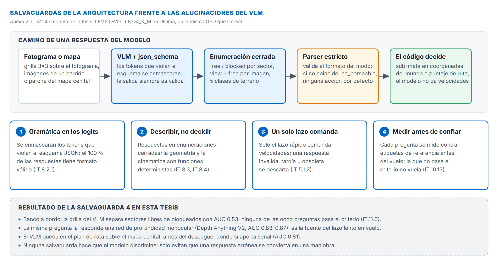
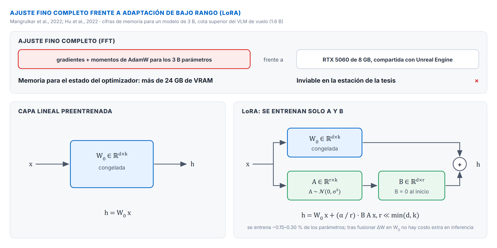
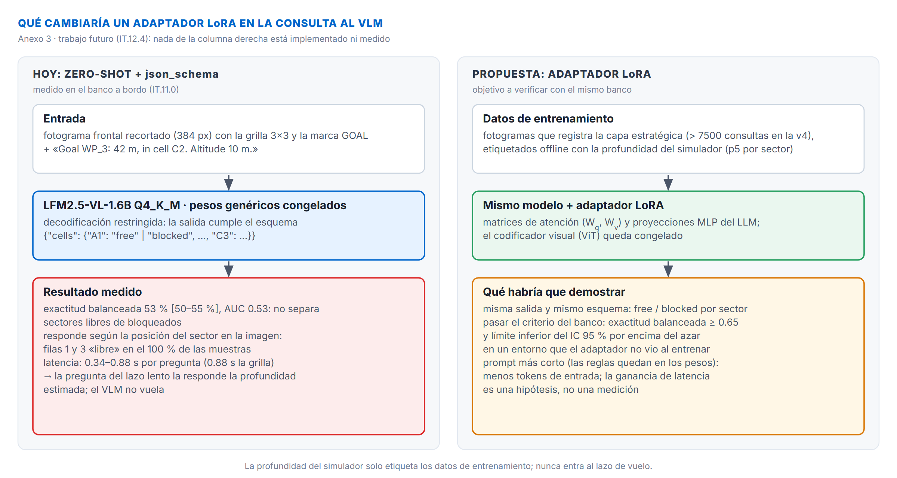
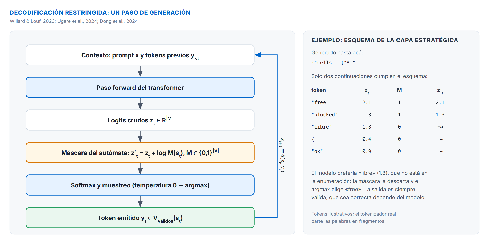
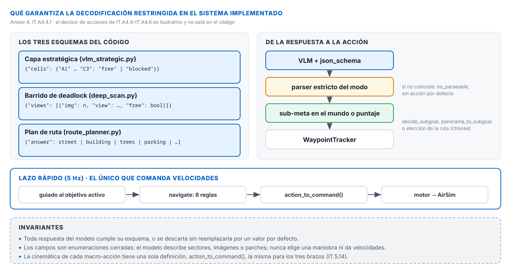
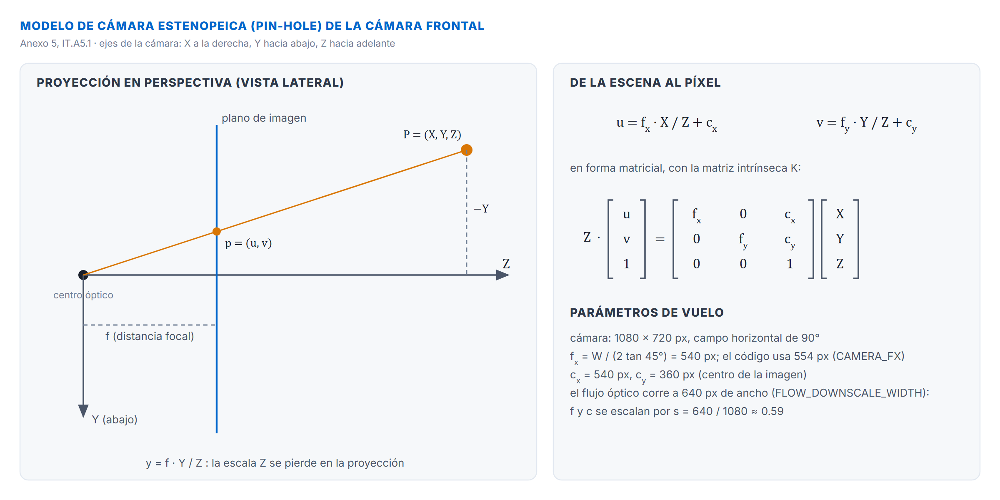
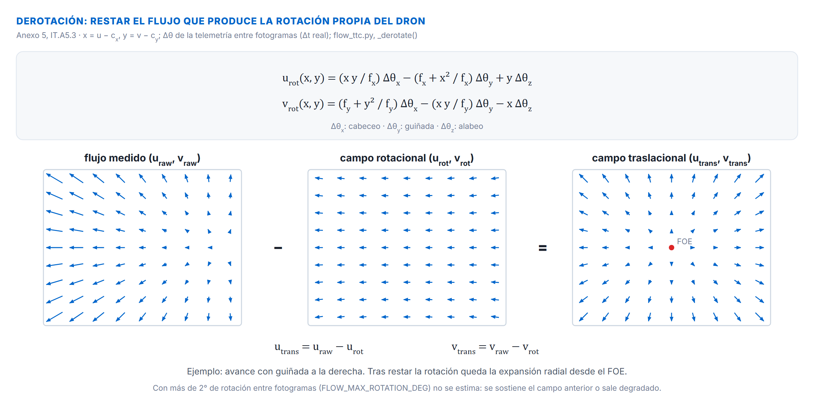
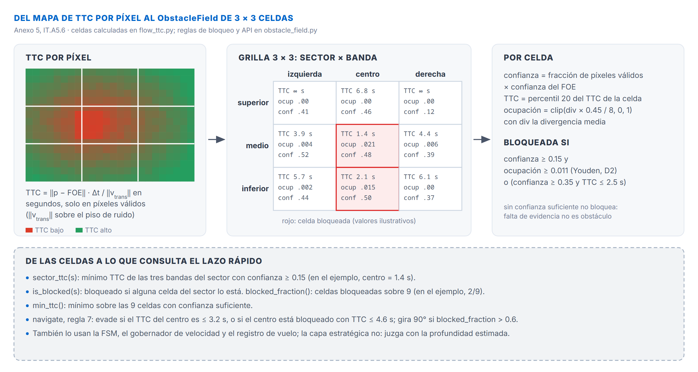
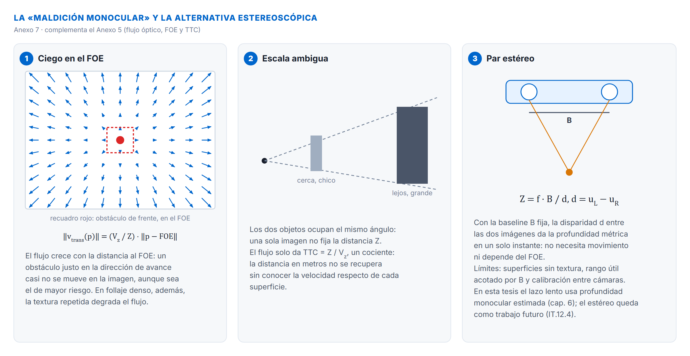
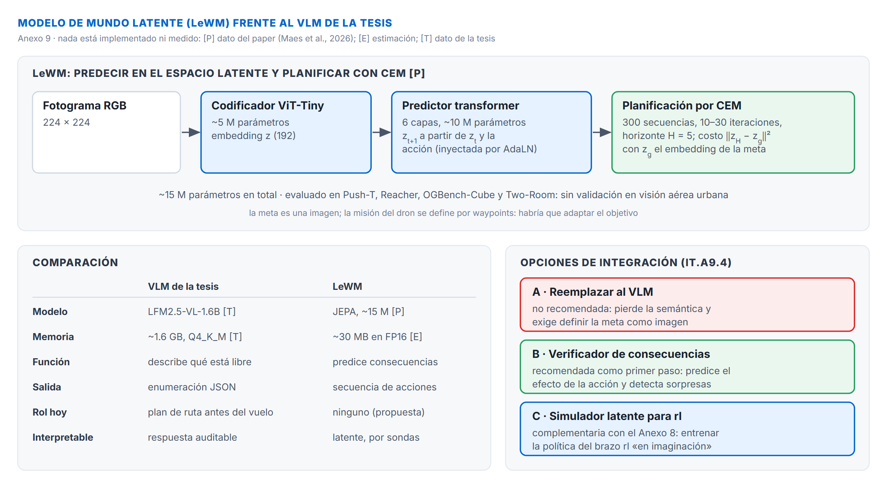

Navegación Autónoma de Drones Urbanos con Visión Monocular y Modelos de Lenguaje Visual Pequeños¶
Tesis para Magister en Ciencia de Datos¶
Maestría en Ciencia de Datos - 2024/2025¶
Directores:
Alumno:
Resumen¶
La navegación autónoma de cuadricópteros eVTOL en entornos urbanos densos —como el de Buenos Aires— enfrenta severos desafíos derivados de la alta densidad de obstáculos, la degradación de señales satelitales y las restricciones presupuestarias que descartan sensores de alto costo como LiDAR. Para abordar esta problemática bajo estrictas restricciones de hardware y en conformidad con las normativas locales (ANAC Res. 880/2019), esta tesis presenta un sistema integral de planificación previa, percepción monocular y decisión táctica basado en visión monocular y en modelos de lenguaje visual pequeños ejecutados localmente, y evalúa si uno de esos modelos puede actuar como capa de decisión a bordo.
La arquitectura desacopla un módulo de planificación deliberativa en tierra (estación de control WebDCS, que compila directivas en lenguaje natural a un manifiesto inmutable de navegación) de un lazo táctico a bordo de alta frecuencia. El módulo de percepción implementa un pipeline ligero de flujo óptico denso derotado mediante telemetría de actitud, mapeo de ocupación espacial (ObstacleField) y estimación de Tiempo-a-Colisión (TTC) a partir de la divergencia del campo de flujo, con un área bajo la curva ROC de 0.96–0.97 frente a etiquetas de referencia tomadas de la profundidad del simulador (0.85–0.93 en la aproximación frontal). En la capa de decisión a bordo, un grafo de estados separa dos lazos: un lazo rápido de guiado y evasión por flujo óptico, único responsable de los comandos de velocidad, y un lazo lento asíncrono que juzga qué sectores del fotograma son volables y traduce la respuesta a sub-metas en coordenadas del mundo ancladas a la pose del fotograma observado, de modo que la latencia no las invalida. El lazo lento se diseñó para un modelo de visión-lenguaje pequeño (LFM2.5-VL-1.6B, ejecutado en la misma GPU que la simulación con decodificación estructurada json_schema); medido contra etiquetas de referencia, el modelo no distinguió sectores libres de bloqueados (AUC 0.53), mientras que una red de profundidad monocular de ~25 M de parámetros (Depth Anything V2) sí lo hizo (AUC 0.83–0.87) en ~110 ms. La configuración final usa esa red en el lazo lento y en la resolución de bloqueos, y reserva el modelo de visión-lenguaje para la planificación de ruta sobre el mapa cenital antes del vuelo, la única tarea en la que aportó una señal medible (AUC 0.81).
El desarrollo y la experimentación se realizan en el simulador Cosys-AirSim sobre Unreal Engine 5.5, en tres entornos de dificultad creciente (MiniSim, TownSim con vegetación densa y CitySim, basado en Sample City), y calibrando la dinámica de vuelo contra conjuntos de datos de telemetría de drones comerciales reales. El trabajo compara esa arquitectura de dos lazos —sin modelo de lenguaje en vuelo— con una Máquina de Estados Finitos (FSM) y con un control puramente reactivo, en 210 corridas sobre seis escenarios, con tasa de éxito de misión, tiempo de reacción y longitud de trayectoria ponderada por éxito (SPL). En ruta libre la arquitectura cuesta entre 1.4 y 2 veces el tiempo del control reactivo sin ganar éxito; donde la ruta directa se tranca, lo que permite completar la misión es la evasión por flujo óptico junto con una salida de los bloqueos, que el control reactivo no tiene; y la ventaja frente a la FSM no queda demostrada, porque la FSM evaluada tiene defectos de implementación que la desfavorecen. Asimismo, se documentan los modos de falla de la integración del modelo de lenguaje con el lazo de control: fallas silenciosas del contrato de datos entre percepción, estado y decisión, que fueron las más costosas de diagnosticar y que, mientras existieron, ocultaron que el modelo no discriminaba la escena.
Palabras clave¶
Navegación Autónoma de Drones | Visión Monocular | Flujo Óptico | Tiempo-a-Colisión (TTC) | Modelos de Lenguaje Visual Pequeños (VLM) | Máquinas de Estados Finitos (FSM) | Control Táctico Híbrido | Simulación en Unreal Engine / Cosys-AirSim | Robótica Urbana de Bajo Costo
1. Introducción¶
1.1 Motivación y contexto¶
Los drones autónomos han cruzado la frontera que separa la plataforma experimental de la infraestructura real. El mercado global de UAVs comerciales alcanzó los USD 28,6 mil millones en 2025, con una proyección de superar los USD 52,1 mil millones en 2029, impulsado por entregas de última milla, inspección de infraestructura y agricultura de precisión (Dataintelo, 2025); en el frente militar, Ucrania fabricó cerca de dos millones de drones en 2024 y reentrenó sus modelos con datos de combate real (Breaking Defense, 2025). En ambos casos la exigencia técnica es la misma: un vehículo de bajo costo debe percibir su entorno, decidir en milisegundos y actuar sin un humano en el lazo, con hardware de borde limitado y a menudo sin conectividad.
Argentina enfrenta esa exigencia en cuatro dominios concretos. El litoral marítimo: una Zona Económica Exclusiva de 1,6 millones de km² que no se puede cubrir con medios tripulados, para la que el país incorporó en 2026 drones VTOL V-Bat (Infobae, 2026) y discute un Sistema Nacional de Vigilancia Marítima con UAVs (El Estratégico, 2026). Los incendios forestales en la Patagonia y el litoral fluvial, donde el Ministerio de Ambiente ya opera UAVs de detección temprana. La agricultura de precisión, el dominio de adopción más masiva: la superficie tratada con drones pasó de 50.000 hectáreas en 2024 a un millón en 2025 (Dataportuaria, 2026), con una flota en rápido crecimiento (Infocampo, 2025), la Red de Drones del INTA (INTA, 2025) y ensayos de detección por IA en tiempo real (Agrolatam, 2025), pero todavía sin un régimen específico para la aplicación de fitosanitarios. Y la seguridad y logística urbana en Buenos Aires, que articula el entorno experimental de este trabajo: la Ciudad abrió en 2025 el marco para la entrega comercial con drones (iProfesional, 2025), la ANAC simplificó la operación de aeronaves no tripuladas, y la Policía de la Ciudad ya vuela drones integrados a su sistema de videovigilancia (Perfil, 2026; Buenos Aires Ciudad, 2023). El capítulo 2 (IT.2.4) desarrolla estos dominios.
El vuelo urbano agrega dificultades que no aparecen en espacios abiertos: alta densidad de obstáculos, degradación del GPS en los cañones urbanos, variaciones extremas de iluminación y, en el contexto latinoamericano, presupuestos que descartan sensores costosos como el LiDAR y marcos regulatorios específicos (Resolución ANAC 880/2019; Decreto 663/2024). Un dron sin percepción confiable ni capacidad de decisión robusta puede colisionar, invadir zonas sensibles o interferir con otras operaciones (Samy et al., 2019; Aldao et al., 2022).
Este trabajo se enmarca en esa tensión: cómo dotar a un cuadricóptero eVTOL de navegación autónoma reactiva usando exclusivamente visión monocular y hardware de bajo costo —sin LiDAR ni GPU dedicada—, con rigor metodológico y un diseño de seguridad explícito.
1.2 Objetivos¶
Objetivo general. Desarrollar un sistema de visión por computadora basado en percepción monocular con capacidad de navegación autónoma de cuadricópteros eVTOL, aplicable a logística urbana, mantenimiento de infraestructura, agricultura de precisión, vigilancia de áreas extensas y atención de emergencias en escenarios representativos del territorio argentino.
Objetivos específicos:
- Implementar un pipeline reproducible sobre el simulador Cosys-AirSim (basado en Unreal Engine 5.5) que permita validar el desempeño del sistema de navegación en condiciones controladas, repetibles y con telemetría calibrada frente a vuelos reales.
- Integrar detección de obstáculos y navegación reactiva a partir de percepción monocular ligera —flujo óptico denso derotado, estimación de TTC, mapa de ocupación espacial— optimizada para hardware de bajo costo, de modo de sostener un caso de negocio viable para economías con recursos limitados.
- Evaluar el rendimiento de un modelo de lenguaje pequeño (SLM) como capa de decisión táctica frente a una máquina de estados finitos (FSM) —el estándar de facto en pilotos automáticos— y frente a un controlador puramente reactivo, usando tasa de éxito de misión, tiempo de reacción y longitud de trayectoria ponderada por éxito (SPL) como métricas de comparación en entornos urbanos de complejidad creciente.
- Documentar con evidencia medida los modos de falla estructurales de la integración SLM–lazo de control, identificando patrones transferibles a los dominios de aplicación de alta pertinencia local (vigilancia marítima, respuesta a incendios forestales, agricultura de precisión) donde los recursos computacionales de borde y la ausencia de conectividad imponen las mismas restricciones estudiadas en el entorno experimental.
1.3 Alcance y diseño de la arquitectura¶
El lazo rápido del sistema usa una percepción monocular ligera sin redes neuronales de detección: flujo óptico denso derotado con la telemetría de actitud y estimación física del Tiempo-a-Colisión (TTC). La elección responde a tres razones que el capítulo 6 desarrolla: una latencia determinista en un cómputo compartido con la simulación y los modelos; la robustez ante obstáculos de cualquier clase, porque la divergencia del flujo modela el fenómeno físico de aproximación y no categorías aprendidas; y la adecuación a un campo visual dominado por fachadas, del que el flujo estima la ocupación por sectores sin entrenamiento previo.
La capa de decisión es un grafo LangGraph con dos lazos desacoplados: un lazo rápido de guiado y evasión por flujo óptico, que es el único que comanda velocidades, y un lazo lento que, de forma asíncrona, propone sub-metas en coordenadas del mundo ancladas a la pose del fotograma que observó. El lazo lento decide qué sectores son volables con una red de profundidad monocular estimada desde el mismo RGB (Depth Anything V2, ~25 M de parámetros). El modelo de visión-lenguaje pequeño (LFM2.5-VL-1.6B, cuantizado, en la misma GPU que la simulación) trabaja en la planificación de ruta previa al vuelo, sobre el mapa cenital: evaluado contra etiquetas de referencia (cap. 11, IT.11.0), no distingue sectores volables de bloqueados en la imagen de a bordo, y por eso esa pregunta la responde la profundidad estimada.
1.4 El hilo conductor de la tesis¶
En arquitecturas robóticas híbridas donde un modelo de lenguaje juzga el entorno para tomar decisiones de navegación, la integridad del contrato de interfaz entre la percepción, el modelo y el control resulta crítica. En este trabajo, las fallas más costosas de diagnosticar no estuvieron en las respuestas del modelo, sino en la fidelidad y consistencia del contrato de datos que lo alimenta y que ejecuta lo que responde. Esas fallas tuvieron, además, un efecto que solo se vio al final: mientras la interfaz distorsionaba las respuestas, no se podía saber si el modelo discriminaba la escena. Corregida la interfaz y medido contra etiquetas de referencia, el modelo resultó no hacerlo (IT.11.0), y por eso la decisión a bordo la toma una red de profundidad estimada.
Cuando la percepción o el estado del sistema entregan representaciones desincronizadas, degradadas o vacías, los modelos de lenguaje generan respuestas sintácticamente válidas y aparentemente razonables a partir de premisas falsas. Como el modelo no lanza excepciones y el vehículo sigue su trayectoria, estas fallas son invisibles si solo se observa el comportamiento cinemático. Zhu et al. (2024) plantean hasta qué punto los LLMs comprenden el contexto que reciben; este trabajo la aborda empíricamente desde el ángulo opuesto: ¿qué ocurre cuando ese contexto está sistemáticamente corrompido?
La necesidad de auditar los contratos de datos y de salvaguardas deterministas en lazos de control asistidos por modelos de lenguaje es el hilo conductor de este trabajo. Su relevancia excede la simulación: en patrulla marítima, incendios forestales o pulverización dirigida, donde el UAV opera sin red y sin supervisión directa, un fallo silencioso del contrato de datos no distingue un obstáculo real de un falso positivo, y la robustez de ese contrato es un requisito operacional. El capítulo 9 documenta los seis modos de falla estructurales identificados y sus salvaguardas, y el capítulo 12 los retoma como conclusión central.
1.5 Estructura del informe¶
El capítulo 2 sitúa el trabajo respecto de la literatura —navegación autónoma de UAVs, percepción monocular, arquitecturas de control con modelos de lenguaje y dominios de aplicación locales— y lo posiciona en el espacio de soluciones. El capítulo 3 describe el entorno de simulación (Unreal Engine 5.5 con Cosys-AirSim, tres entornos de dificultad creciente) y su validación frente a vuelos reales, y el capítulo 4, la planificación en tierra y la estación de control WebDCS. Los capítulos 5 a 9 documentan el sistema a bordo: el grafo de control con sus dos lazos (cap. 5), la percepción monocular (cap. 6), la validación del TTC (cap. 7), la ingeniería del modelo de visión-lenguaje (cap. 8) y los modos de falla de la integración (cap. 9). El capítulo 10 describe la metodología experimental y los capítulos 11 y 12, los resultados y las conclusiones.
Los anexos reúnen el material que sostiene el argumento sin ser necesario para seguirlo: la exploración de modelos pequeños, su optimización y la decodificación restringida (Anexos 1 a 4); los fundamentos matemáticos de la percepción (Anexo 5); la configuración y reproducibilidad del entorno (Anexo 6); propuestas de trabajo futuro (Anexos 7 a 9); y la especificación de implementación del lazo táctico, el catálogo de incidentes de integración, la operación del experimento y la estación terrena con el dataset de corridas (Anexos 10 a 13).
2. Estado del arte y trabajos relacionados¶
Los drones autónomos son a la vez infraestructura civil crítica y un factor determinante de la guerra moderna, y ambos procesos comparten la misma presión técnica: que el vehículo decida correctamente sin un humano en el lazo, a baja altitud, con cómputo limitado y en entornos no controlados. En el frente civil, las agencias reguladoras ampliaron durante 2025-2026 las autorizaciones de operación más allá de la línea de vista (BVLOS), abriendo la puerta a redes comerciales de drones autónomos (Coptrz, 2026; MDPI Drones, 2026). En el frente militar, la guerra en Ucrania es el primer conflicto a gran escala en que drones FPV, municiones merodeadoras y enjambres tienen un papel táctico central, y aceleró la investigación en contramedidas electrónicas y navegación sin GPS, haciendo de la autonomía robusta de borde un problema técnico y estratégico de primer orden (CSIS, 2024; Modern War Institute, s.f.).
2.1 Navegación autónoma de UAVs: de la planificación clásica al control adaptativo¶
Los primeros enfoques de navegación urbana combinan planificación global sobre datos geográficos con evasión reactiva. Castelli et al. (2016) combinan A* sobre datos GIS con replanificación dinámica para el vuelo a baja altitud, y Hughes y Engelbrecht (2023) extienden la idea a enjambres con evasión cooperativa sobre un modelo urbano tipo Manhattan, el mismo trazado en cuadrícula del entorno denso de este trabajo (CitySim, caps. 3 y 10).
Frente a estos enfoques deliberativos, las máquinas de estados finitos (FSM) siguen siendo el estándar de facto en pilotos automáticos por su predictibilidad y bajo costo: Hu et al. (2024) las emplean para coordinar enjambres en emergencias y Hoang et al. (2024), para la recarga autónoma sobre líneas de alta tensión. Su limitación es estructural: una FSM no interpreta contexto más allá de los umbrales con que fue diseñada. Ese contraste —predictibilidad de la FSM frente a la promesa de adaptabilidad de un modelo de lenguaje— es el eje de la comparación experimental de este trabajo (cap. 10); AlMahamid y Grolinger (2022) y Bouhamed et al. (2020) sitúan al aprendizaje por refuerzo como tercera vía, con políticas aprendidas en lugar de reglas explícitas.
2.2 Percepción monocular para detección y evitación de obstáculos¶
La percepción monocular sin redes de detección del lazo rápido (cap. 6) se apoya en una línea consolidada de visión artificial clásica: Badrloo y Varshosaz (2017) revisan la detección monocular en robótica móvil, y Molineros et al. (2012) y Chen et al. (2016) estiman el riesgo mediante flujo residual y análisis 3D. Las técnicas de mapeo de perspectiva inversa (Kaneko et al., 2017; Zhou et al., 2026) suponen un plano de suelo dominante, hipótesis inaplicable a una cámara frontal en un cañón urbano dominado por fachadas.
El flujo óptico denso traslacional es, en cambio, una solución físicamente rigurosa y sin entrenamiento supervisado. Vera-Yanez et al. (2024) desarrollan un detector de obstáculos aéreos basado íntegramente en flujo óptico —morfología, foco de expansión (FOE) y agrupamiento— y muestran que desacoplar la rotación propia aísla los vectores de aproximación. Ese principio, la divergencia del campo traslacional como estimador del Tiempo-a-Colisión, es la base del módulo de percepción de este trabajo (caps. 6 y 7). Los enfoques de profundidad monocular por aprendizaje profundo (Rill y Faragó, 2021; Shi et al., 2024) dan estimaciones densas a un costo computacional que no admite el lazo de 5 Hz. Los modelos fundacionales redujeron ese costo: Depth Anything V2 (Yang et al., 2024) ofrece variantes métricas de ~25 M de parámetros, y este trabajo usa una en el lazo lento, donde ~0.1 s por consulta es admisible (cap. 6, IT.6.12).
2.3 Arquitecturas de control asistidas por modelos de lenguaje¶
Vemprala et al. (2023) articularon el uso de modelos de lenguaje como capa de razonamiento de un robot, con ChatGPT programando misiones de drones sobre AirSim —el simulador de este trabajo—: un LLM puede generar código de control a partir de lenguaje natural, separando el razonamiento semántico de la ejecución motora. Chahine et al. (2023) estudian la robustez fuera de distribución con redes neuronales líquidas como capa de control, y Zhu et al. (2024), hasta qué punto los modelos entienden el contexto que reciben, la pregunta que el capítulo 9 aborda desde el lado de la integridad de ese contexto.
El campo maduró rápido entre 2024 y 2026. La revisión sistemática de Tian et al. (2025) organiza la intersección de LLMs y UAVs en un marco Percepción–Cognición–Acción y concluye que el despliegue depende de interfaces verificables que traduzcan salidas semánticas en representaciones accionables, el rol que cumple aquí la decodificación restringida (cap. 8). Los modelos Vision-Language-Action (VLA) son el paso siguiente: AutoFly (Sun et al., 2026) navega en exteriores de extremo a extremo con un pseudo-codificador de profundidad desde RGB, y UAV-VLN (Saxena et al., 2025) guía la navegación a partir de instrucciones en lenguaje natural. Frente a esa frontera de modelos de miles de millones de parámetros, este trabajo pregunta qué tan lejos llega un modelo cuantizado de 1–4 B parámetros, local y sin entrenamiento por tarea, como capa de decisión de un lazo real, y cuáles son sus modos de falla.
Dos líneas más sostienen la ingeniería del capítulo 8. La generación de salida estructurada, que Geng et al. (2025) sistematizan y cuya mejora con gramáticas restringidas muestran Raspanti et al. (2025); y la simulación de alta fidelidad como banco de pruebas, con AirSim (Shah et al., 2017) y su variante extendida Cosys-AirSim (Jansen et al., 2023).
2.4 Dominios de aplicación de alta pertinencia local¶
Cuatro dominios aplicados de relevancia para Argentina requieren exactamente lo que este trabajo estudia: percepción monocular en tiempo real, evasión reactiva y decisión de borde.
Vigilancia del litoral marítimo. Para una Zona Económica Exclusiva de 1,6 millones de km², Argentina acordó en 2026 incorporar drones VTOL V-Bat y aeronaves de patrulla (Infobae, 2026), y se discute un Sistema Nacional de Vigilancia Marítima con drones (El Estratégico, 2026). La literatura específica es incipiente, pero Barišić Kulas et al. (2025) resuelven un problema isomorfo: detección e identificación autónoma de embarcaciones sobre grandes áreas marítimas, sin GNSS y con visión a bordo bajo restricciones de cómputo de borde.
Incendios forestales. El Ministerio de Ambiente opera 17 UAVs autónomos de detección temprana en parques nacionales de Neuquén y Chubut (Argentina.gob.ar, s.f.), y Misiones ensaya torres de videovigilancia con IA que despachan un dron autónomo al detectar humo (Norte Misionero, 2026). La investigación internacional combina detección satelital y UAVs: Liu y Sziranyi (2023) fusionan imágenes Sentinel-2 con UAVs que planifican rutas de evacuación, y Danish et al. (2025) revisan sistemáticamente la gestión de incendios con UAVs de visión artificial.
Agricultura de precisión. Es el dominio de adopción más masiva en el país (Dataportuaria, 2026; Infocampo, 2025), con la Red de Drones del INTA extendiendo su uso al fenotipado y el monitoreo (INTA, 2025) y ensayos que detectan y corrigen fallas de plantación en el mismo ciclo operativo (Agrolatam, 2025). La literatura converge en el problema técnico de este trabajo: Zhang et al. (2024) planifican trayectorias bajo restricciones de batería; Wei et al. (2025) navegan dentro de las hileras de un huerto con una sola cámara frontal, y Li et al. (2025) resuelven lo mismo con LiDAR, la disyuntiva de costo sensorial que motiva la elección monocular de este trabajo; Castro et al. (2020) fenotipan pasturas con cámaras RGB de bajo costo. El vuelo cercano a canopeo, ramas y alambrados es la morfología de obstáculo orgánico que reproduce el Tier 1 (TownSim).
Seguridad y logística urbana en Buenos Aires. Es el único de los cuatro dominios que ya opera UAVs en el mismo tejido urbano que reproduce el entorno de evaluación: el Escuadrón de Drones de la Policía de la Ciudad, integrado a un sistema de videovigilancia con 3.400 cámaras (Perfil, 2026), vuela con sensores capaces de detectar cables de un milímetro —el desafío de estructuras delgadas que enfrenta el flujo óptico de este trabajo— en persecuciones, incendios y búsqueda de personas (Buenos Aires Ciudad, 2023), y la Ciudad habilitó la entrega comercial con drones (iProfesional, 2025). Sus cañones en cuadrícula, con GPS degradado y cableado cercano, son la morfología del Tier 2 (CitySim).
En los cuatro dominios, el patrón subyacente —un vehículo que percibe en tiempo real y decide sin intervención humana bajo restricciones de cómputo de borde— es el que este trabajo estudia en simulación. La escasez de literatura argentina específica no resta relevancia a los resultados: señala una oportunidad de transferencia directa.
2.5 Posicionamiento de este trabajo¶
Este trabajo se ubica en la intersección de tres líneas —percepción monocular sin redes de detección, FSM como línea de base y un modelo de lenguaje con salida restringida como capa de decisión alternativa—, con un énfasis distinto al de buena parte de la literatura. Mientras la frontera de 2025-2026 (Tian et al., 2025; Sun et al., 2026) usa modelos VLA de gran escala en hardware especializado, este trabajo aborda el extremo opuesto: un VLM cuantizado de 1.6 B parámetros en la misma GPU de consumo que la simulación, sin nube y sin entrenamiento por tarea. En lugar de proponer una arquitectura novedosa, documenta con evidencia medida los modos de falla de integrar un modelo de lenguaje pequeño en un lazo de control real, un resultado poco frecuente en una literatura que tiende a reportar arquitecturas que funcionan más que las que fallaron de manera instructiva. Es pertinente para los escenarios de mayor relevancia práctica —inspección sin cobertura, rescate, guerra electrónica, pulverización en campo abierto—, donde la nube y el hardware costoso son inviables y entender los límites del modelo de borde tiene valor operacional directo.
3. Construcción y validación del entorno de simulación¶
3.1 Arquitectura de simulación: Unreal Engine 5.5 y Cosys-AirSim¶
El desarrollo y la validación de este trabajo se realizan, tal como preveía el plan de trabajo aprobado (plan_tesis/plan-tesis.md), sobre AirSim, un simulador basado en Unreal Engine que ofrece física y renderizado de alta fidelidad (Shah et al., 2017). La implementación no usa la distribución original de AirSim de Microsoft, sino Cosys-AirSim (específicamente el build para Windows de la versión Cosys-AirSim v3.3 for Unreal v5.5, un fork mantenido por el Cosys-Lab (Laboratorio de Co-Diseño para Sistemas Ciber-Físicos de la Universidad de Amberes, Bélgica), porque el proyecto original de Microsoft está abandonado. El plugin se compila e integra sobre proyectos de Unreal Engine 5.5 (específicamente la versión 5.5.4-40574608+++UE5+Release-5.5), que sirven como banco de pruebas y validación experimental.
Cosys-AirSim agrega al AirSim original sensores basados en GPU y CPU —LiDAR, sonar, radar— y nuevos tipos de vehículo (Jansen et al., 2023), y se adoptó por su mantenimiento activo, no por esos sensores: este trabajo usa deliberadamente el subconjunto más restringido de la plataforma —un multirotor con una única cámara RGB y la telemetría de actitud—, consistente con la restricción de bajo costo (IT.1.2). El binding cosysairsim no expone la conversión de cuaterniones a ángulos de Euler del paquete original, y el cliente la implementa directamente, porque un fallback ingenuo reporta pitch y roll nulos de forma permanente (cap. 9, IT.9.6).
AirSim en la literatura. AirSim es el simulador de referencia de una línea de investigación amplia. Una revisión de simuladores abiertos para conducción autónoma lo ubica junto a CARLA y LGSVL como plataforma de referencia (Li et al., 2023); sostuvo la competencia Game of Drones de NeurIPS 2019 sobre percepción, planificación y control de multirotores (Madaan et al., 2020); Xue y Gonsalves (2021) entrenan en él un agente de aprendizaje por refuerzo para evadir obstáculos a partir de mapas de profundidad, el problema más cercano a esta tesis, que en cambio compara una heurística explícita con un juicio sobre la imagen, sin usar nunca el sensor de profundidad del simulador; y Turco et al. (2024) lo usan como gemelo digital para movilidad aérea avanzada, con mediciones de su consumo de VRAM que fijan el presupuesto de memoria de este trabajo (cap. 8, IT.8.1). Cosys-AirSim, por su parte, se sigue extendiendo: ASVSim (Lesy et al., 2026) le agrega dinámica de embarcaciones y sensores marítimos sin reescribir el núcleo de simulación.
3.2 Desvío respecto del plan aprobado: de la fotogrametría de Buenos Aires a activos urbanos genéricos¶
El plan de trabajo aprobado preveía un entorno virtual personalizado de Buenos Aires, reconstruido por fotogrametría a partir de videos públicos de drones y de OpenStreetMap, con anotación de obstáculos y optimización de las mallas antes de importarlas a AirSim (plan_tesis/plan-tesis.md).
La implementación efectivamente construida sustituyó ese pipeline de fotogrametría por activos urbanos y suburbanos ya disponibles para Unreal Engine (marketplace de Fab/Epic Games y paquetes de terceros), configurados con el plugin de Cosys-AirSim en lugar de reconstruidos a partir de video real de Buenos Aires (disponibles en el repositorio compartido de Google Drive: https://bit.ly/dlm-ueenv).
Entornos principales estructurados por Tiers de evaluación¶
Para responder con rigor al protocolo experimental de la tesis (capítulo 10), los entornos de simulación se organizan en una jerarquía formal de tres niveles de complejidad (Tiers):
-
Tier 0 — Base / Control (
MiniSim): Entorno abierto basado en el proyecto base de Unreal Engine https://dev.epicgames.com/documentation/unreal-engine/unreal-engine-templates-reference?application_version=5.5: un plano liso con textura de tablero, sin relieve ni objetos (la imagencrater.pngque muestra WebDCS es solo un fondo y no corresponde al mundo). Diseñado para pruebas de calibración cinemática, sintonización de controladores de posición y determinación de la cota inferior de latencia del sistema sin interferencia de obstáculos. -
Tier 1 — Intermedio / Morfología orgánica y vegetación (
TownSim): Entorno semiurbano (mapa cenitaltownsim_ortho.png, construido con capturas del propio simulador: 4 px/m, origen NED en el centro, norte arriba; cap. 4 IT.4.3.2), basado en el entorno Downtown West Modular Pack https://www.fab.com/listings/0faf8b5d-7a5f-4fee-a297-7a8efaba8896 de PurePolygons. Presenta calles de ancho variable, fachadas intermedias, mobiliario y arboledas densas. Constituye el banco de pruebas de los escenarios de recorrido perimetral (townsim_clear), de travesía del corredor arbolado (townsim_ini) y de bloqueo frontal masivo (townsim_calib_cruce_frontal). -
Tier 2 — Complejo / Cañones urbanos de gran densidad (
CitySim): Proyecto de Unreal Engine 5.5 con tejido edilicio masivo (mapa cenitalcitysim_ortho.png, construido con capturas del propio simulador: 2 px/m, origen NED en el centro, norte arriba; cap. 4 IT.4.3.2), rascacielos, pasos restringidos y disposición en cuadrícula ortogonal, basado en el entorno Sample City https://www.fab.com/listings/4898e707-7855-404b-af0e-a505ee690e68 de Epic Games. El escenario de control escitysim_clear.json: perímetro de una manzana con 4 waypoints (~420 m) y altitud creciente en rampa (−10, −30 y −50 m) antes de volver a −10 m. Los escenarios con corredores angostos (citysim_pilot.json) constituyen el escenario de dificultad máxima del tier.
3.3 Configuración de rendimiento, escalabilidad gráfica e higiene de captura¶
La misma estación aloja el renderizado y la inferencia de los modelos (IT.8.1), de modo que la configuración prioriza la tasa de actualización de la física sobre la fidelidad gráfica: el editor no reduce el uso de CPU en segundo plano, el reloj de la simulación se sincroniza para no perder pasos de física cuando la carga gráfica fluctúa, y un perfil de escalabilidad baja reserva VRAM para los modelos. El perfil fuerza, sin embargo, el nivel de detalle de los efectos y las sombras: en Unreal Engine 5.5 la reducción automática degrada los render targets de captura, y el flujo óptico necesita los gradientes que aportan las sombras para estimar el TTC. El modo sin pantalla no puede usarse, porque la percepción depende de la cámara. Dos medidas de higiene completan la captura: el cliente convierte el orden de canales de color del simulador (RGB) al que asume OpenCV (BGR), y cada sesión empieza borrando las primitivas de depuración persistentes, que la cámara capturaría como geometría (cap. 9, IT.9.6). La configuración completa, con el archivo settings.json anotado y el perfil de escalabilidad, está en el Anexo 6 (IT.A6.1, IT.A6.2).
3.4 Validación frente a telemetría de vuelos reales¶
La dinámica de vuelo simulada —no la geometría de la escena urbana, cuya fidelidad fotográfica es el desvío documentado en IT.3.2— se validó de forma independiente contra telemetría de drones reales, con el objetivo explícito de que la comparación experimental entre brazos (capítulo 10) se apoyara en vuelos simulados cuya cinemática fuera comparable a la de un cuadricóptero real y no solo físicamente plausible en abstracto.
Fuente de datos reales. Se descargó un conjunto de datos de telemetría real de drones cuadricópteros comerciales (DJI) desde el repositorio público de Zenodo (https://zenodo.org/records/15912415).
Protocolo de calibración. Sobre esa telemetría real se identificaron dos trayectorias de vuelo distintas —un patrón rectangular simple (Drone 1) y un patrón de cruz combinado con rectángulo (Drone 2)— y se reprodujeron en simulación con moveOnPath/move de la API de AirSim, ajustando la simulación a la misma altura y la misma velocidad que los vuelos reales correspondientes. La trayectoria completa se envía como un único comando moveOnPath, y no como una secuencia de tramos independientes, para que el perfil de aceleración simulado se parezca al de un vuelo real continuo; la telemetría de cada vuelo simulado se registra en un CSV individual.

Metodología estadística. El análisis se implementó en notebooks de Jupyter del repositorio complementario del proyecto (consolidate_telemetry.ipynb y telemetry_analysis_*.ipynb, georgsmeinung/lm-drone), con estadística descriptiva y pruebas de significancia —en particular la prueba de Levene para diferencia de varianzas— aplicadas al cambio de velocidad en los tres ejes, para determinar si la distribución de la telemetría simulada difiere de forma significativa de la real.
Resultado. El análisis documenta tres hallazgos consistentes:
- La varianza de actitud difiere de forma significativa (prueba de Levene, p ≪ 0,05): en simulación, el dron ejecuta inclinaciones de roll/pitch extremas durante los giros rápidos para alcanzar instantáneamente el punto de trayectoria siguiente. Los drones reales, en cambio, están limitados electrónicamente por su controlador PID de estabilización (típicamente a ±30°), y muestran una varianza mucho menor y acotada durante las mismas maniobras.
- La segregación por trayectoria es significativa y consistente. El Drone 1 (patrón rectangular, giros menos frecuentes) concentra la aceleración en las esquinas; el Drone 2 (patrón de cruz y rectángulo continuo) presenta una dinámica transicional más exigente y oscilaciones de roll/ pitch más ruidosas, tanto en el vuelo real como en el simulado.
- El vuelo simulado en tramos rectos es idealizado. Durante las fases rectas, la telemetría simulada muestra varianza de actitud cercana a cero, sin fuerzas externas de viento ni ruido de sensores; el dron real, en cambio, mantiene una variabilidad permanente de ±2°–3° en roll y pitch incluso en tramos rectos estables, producto del viento real y de las correcciones continuas del piloto automático.


Alcance de esta validación. Confirma que la dinámica de vuelo simulada —cómo se mueve el dron dado un comando— es más ágil y menos amortiguada que la de un dron real equivalente, con una brecha de idealización conocida y cuantificada (varianza de actitud, ausencia de viento simulado). No valida, en cambio, la fidelidad fotográfica de la escena urbana frente a Buenos Aires real: esa es una validación distinta, no realizada, y coincide con el desvío documentado en IT.3.2. Un ejercicio de validación relacionado pero diferente —si el suavizado por histéresis y media móvil exponencial de WaypointTracker (capítulo 5, IT.5.4) acerca de forma medible la telemetría simulada a la real— da un resultado ambiguo (std(Δvx) prácticamente igual con y sin suavizado) y se informa como tal, no como una mejora confirmada.
4. Planificación de misiones y estación de control en tierra (WebDCS)¶
4.1 Arquitectura desacoplada: dos cerebros (tierra vs. vuelo)¶
El sistema separa estrictamente la planificación global previa al vuelo, en tierra, de la navegación táctica reactiva, a bordo. Esta arquitectura de dos cerebros resuelve la asimetría de cómputo y de tolerancia a la latencia entre ambas fases: el planificador de la estación terrena (airsim-plan / WebDCS) puede tomarse segundos para interpretar instrucciones, consultar el mapa y validar un plan; el lazo táctico a bordo (airsim-loop, capítulo 5) opera en tiempo real a 5 Hz y no diseña la ruta, sino que la sigue y evade lo inminente.

La arquitectura en tres fases. En tierra se compila la misión y el VLM planifica la ruta sobre el mapa cenital; el manifiesto se transmite una vez. A bordo, el lazo rápido es el único que comanda velocidades y el lazo lento propone sub-metas con la profundidad estimada (capítulo 5). Después, la traza por ciclo alimenta el visor y el análisis por lote. Abajo, qué modelo trabaja en cada fase.
El desacoplamiento permite validar, persistir y versionar la misión antes de encender los motores, y hace que el lazo a bordo no dependa de una conexión permanente con tierra: transmitido el manifiesto, el dron opera de forma autónoma ante una pérdida de enlace.
4.2 Compilación de misiones desde lenguaje natural¶
El planificador en tierra integra un modelo de lenguaje local como compilador semántico, que transforma una directiva en lenguaje natural ("recorrer el perímetro norte a 10 metros de altura evitando zonas de alta densidad vehicular") en un plan estructurado. Un prompt de sistema describe el entorno, las restricciones del espacio aéreo y el formato de salida, y la salida se valida contra un esquema estricto en Pydantic: un plan que no cumple los tipos o las restricciones cinemáticas se rechaza antes de comprometer el vuelo. El compilador está implementado y expuesto en el backend, pero la interfaz de WebDCS no ofrece todavía un control para invocarlo: por decisión de alcance, el operador edita los waypoints a mano sobre la carta (IT.4.4), y el desarrollo se concentró en el control de vuelo.
4.3 El contrato del Manifiesto de Misión (MissionManifest)¶
El producto del planificador es un archivo JSON, el MissionManifest: un contrato inmutable entre la estación terrena y el lazo táctico, definido en Pydantic y validado contra un JSON Schema.
{
"mission_id": "CITYMAP_PILOT",
"summary": "Tier 2: circuito tipo grilla urbana sobre citysim_ortho.png ...",
"start_pose": { "x": 0.0, "y": 0.0, "z": -10.0, "yaw_deg": 90.0 },
"waypoints": [
{"x": 3.0, "y": -51.0, "z": -10.0, "label": "WP_0_SUR"},
{"x": 26.1, "y": -78.2, "z": -10.0, "label": "WP_1"},
{"x": 68.9, "y": -78.6, "z": -10.0, "label": "WP_2"},
{"x": 67.7, "y": -156.5, "z": -10.0, "label": "WP_3"},
{"x": 26.5, "y": -145.0, "z": -10.0, "label": "WP_4"},
{"x": -16.3, "y": -145.0, "z": -10.0, "label": "WP_5"},
{"x": -17.9, "y": -78.6, "z": -10.0, "label": "WP_6"},
{"x": 12.5, "y": -78.6, "z": -10.0, "label": "WP_7"}
],
"map": "citysim_ortho.png"
}
Manifiesto vigente citysim_pilot.json (Anexo 12, IT.A12.3.3 explica WP_0_SUR; el mapa se describe en IT.4.3.2).
El contrato tiene pocos campos: un identificador de misión, validado por el esquema, que aparece en los nombres de las carpetas de telemetría; la lista ordenada de waypoints tridimensionales en el marco NED (North-East-Down: \(z < 0\) es altitud sobre el punto de despegue), cada uno con una etiqueta para identificarlo en la traza; el nombre de la imagen cenital del escenario, que WebDCS usa para mostrar la ruta y el planificador de ruta para decidir por dónde va cada tramo; y, opcionalmente, una pose de partida que solo se usa con la perturbación de la pose inicial (Anexo 12, IT.A12.4.3).
Separación entre manifiesto y consultas en vuelo. El manifiesto entrega únicamente metas geométricas. Las consultas del lazo lento —la capa estratégica y el barrido de bloqueos (cap. 5, IT.5.5, IT.5.6)— no forman parte de él, porque dependen del fotograma, la pose y el waypoint activo de ese instante. En los dos casos el código convierte la respuesta en una sub-meta en coordenadas del mundo, que el WaypointTracker inserta delante del waypoint del manifiesto como un waypoint temporal.
4.3.1 Plan de ruta con el VLM sobre el mapa cenital¶
NB4.1–NB4.8 reproducen el plan que voló el lote 6 a partir de las respuestas guardadas del modelo.
El manifiesto une los waypoints en línea recta, y en una ciudad la recta suele cruzar una manzana. En vuelo, la cámara ve solo lo que tiene delante a 10 m de altura y el sistema debe inferir por dónde rodear un edificio cuyo final no ve; desde arriba, la misma pregunta se vuelve de reconocimiento: si una línea dibujada sobre el mapa va por la calle o por encima de los edificios. Es el tipo de juicio que un VLM pequeño resuelve mejor, porque no exige estimar distancias en primera persona. Por eso la estación terrena agrega un paso de planificación con el VLM antes del despegue (src/planning/route_planner.py): corre una sola vez por misión, la misión espera su resultado y nada de esto ocurre dentro del lazo táctico.
- Candidatas geométricas. Para cada tramo A → B (incluido el tramo desde el spawn al primer waypoint) se generan rutas sin mirar el mapa: la recta, las dos rutas en L (primero norte-sur o primero este-oeste) y desvíos paralelos a ±25 y ±50 m a cada lado.
- Juicio del VLM por parches. El modelo no juzga la ruta entera, sino lo que hay debajo de ella: cada 8 m de la candidata se recorta un parche del mapa, con contexto alrededor, y el modelo lo clasifica en una de cinco clases (calle, edificio, árboles, estacionamiento, autopista elevada) con decodificación restringida. La puntuación de la candidata es la probabilidad media de «calle», leída de los logprobs. El modelo es el mismo de vuelo.
- Elección. Gana la candidata de mayor puntuación; a menos de 0.05 de la mejor, la más corta. Si no aprobó ninguna, queda la recta. Los vértices intermedios de la elegida se insertan en el manifiesto como waypoints, con la altura del waypoint de destino.
El modelo evalúa; el código solo genera las opciones y toma la mejor según el propio modelo. El plan se calcula una vez por escenario, antes de la primera corrida, y se guarda completo —cada candidata con su respuesta y probabilidad—, de modo que todas las semillas y brazos de un lote vuelan el mismo plan.
Por qué parches. Juzgar la ruta entera, dibujada sobre el mapa, no funciona con los modelos pequeños (Anexo 13, IT.A13.1.1). En el banco sobre citysim_pilot, ninguno de los dos modelos candidatos (cap. 8, IT.8.1) distinguió una candidata por la calle de una que cruza el techo de un edificio: con la ruta dibujada como línea, uno rechazó las 37 candidatas y el otro aprobó todas; dibujada como pasillo, ambos aprobaron todas; con la pregunta invertida («¿el pasillo cruza algún techo?»), ambos respondieron «sí» a todas. La respuesta depende de la forma de la pregunta y no de la imagen. Los parches le piden al modelo lo que sí hace bien, reconocer qué hay en una imagen, en lugar de juzgar una ruta entera.
Uso en los experimentos. El plan está activado en los escenarios con obstrucción de TownSim y CitySim (lotes 3, 4 y 6), sobre sus mapas registrados (IT.4.3.2); los escenarios de control vuelan el manifiesto tal cual, porque son la ruta fija de base de cada tier (cap. 10, IT.10.4.1, punto 5). En el banco de prueba la puntuación separa las rutas libres de las bloqueadas con AUC 0.81, y en el único tramo de citysim_pilot con la recta bloqueada el plan elige un desvío libre (cap. 11 IT.11.0). Es la única tarea del sistema en la que el VLM aporta una señal medible.
4.3.2 Mapa cenital registrado¶
El plan de ruta solo tiene sentido si el mapa coincide con el mundo de vuelo. Los mapas de CitySim y TownSim se construyen con el propio simulador: el dron se reubica sobre una grilla de puntos a 1000 m de altura con la cámara apuntando hacia abajo y un campo visual estrecho, de modo que la vista es casi ortográfica, y las tomas se pegan en un lienzo con el origen NED en el centro, el norte arriba y el este a la derecha. La orientación y la escala se verifican en el arranque desplazando el dron y midiendo el corrimiento de la imagen. El resultado, citysim_ortho.png, cubre la ciudad completa (1920 × 1640 m) y es el mapa de todas las misiones de CitySim; townsim_ortho.png cubre 500 × 500 m alrededor del origen de TownSim. Las demás imágenes de esos niveles no están registradas con el mundo y la configuración las marca así. El procedimiento de captura, incluida la carga por zonas de Unreal Engine, está en el Anexo 13 (IT.A13.1.2).
Los manifiestos fijos garantizan la reproducibilidad experimental: los escenarios de cada tier (capítulo 10) se definen con manifiestos inmutables, de modo que los tres brazos de control parten de las mismas metas cinemáticas y espaciales.
4.4 Estación terrena WebDCS y auditoría post-vuelo¶
WebDCS (Web-based Drone Control Station) es la interfaz de control en tierra, construida sobre FastAPI con un frontend web. Permite cargar manifiestos, ver la ruta sobre la carta del entorno, editar waypoints y lanzar o detener una misión sin bloquear la interfaz.
Su segunda función es la auditoría. Cada ejecución escribe una carpeta autocontenida en airsim-runs/ que ninguna corrida sobrescribe: la traza completa ciclo a ciclo en JSONL y CSV —posición, actitud, ruta y macro-acción del ciclo, ObstacleField por sector, latencias y el DroneState completo—, el resumen de la corrida que consumen los análisis (éxito, colisiones, distancia mínima a obstáculo, recorrido, consultas, deadlocks, plan de ruta y versión del código), un resumen por objetivo, las muestras de la auditoría de distancia mínima, los fotogramas exactos de cada consulta del lazo lento y dos videos, el de la cámara frontal con la telemetría superpuesta y el de una cámara de seguimiento externa. Guardar todo el estado, y no una selección de campos, hace que la traza no dependa de haber previsto qué registrar.

Visor de una corrida slm:depth de townsim_ini (corrida v4, lote 3, semilla 89) en el ciclo 398: un muro cubre el campo, el lazo rápido gira 90° y adelanta la consulta estratégica #40.
Un visor HTML autocontenido, generado al cerrar cada corrida, sincroniza por número de ciclo los dos videos con la traza, y muestra para cada ciclo el campo de obstáculos, la consulta del lazo lento con sus imágenes y el árbol del DroneState. El uso típico es partir de un evento del resumen —un deadlock, una colisión, la distancia mínima más baja— y llevar el visor a ese ciclo: el video muestra la escena, el panel muestra qué percibió el sistema y qué decidió, y el árbol del estado muestra por qué. Así se auditaron los modos de falla del capítulo 9. NB2 es su equivalente en Python. La estructura completa del dataset —cada archivo, cada campo de la traza y del resumen— y las anotaciones del video están en el Anexo 13 (IT.A13.3, IT.A13.4).
5. Arquitectura del lazo táctico¶
Este capítulo presenta la arquitectura del lazo táctico y las decisiones de diseño que la explican. La especificación de implementación —campos del estado, umbrales, máquinas de estado, gobernador de velocidad, servicio de deliberación y registro— está en el Anexo 10. NB3 ejecuta el código de vuelo sin AirSim: compila el grafo, dispara cada regla de navigate con un estado construido a mano y reproduce las decisiones de una corrida de la v4 desde su registro.
5.1 Visión general del lazo¶
El lazo se ejecuta sobre el entorno de simulación del capítulo 3 (Unreal Engine 5.5 con Cosys-AirSim), siguiendo los manifiestos compilados por la estación terrena (capítulo 4). Es un grafo de decisión por ciclo (StateGraph de LangGraph, LangChain, 2024) que corre a 5 Hz (ciclo de ≈ 0.2 s).
El grafo se compila una vez y el bucle externo (main.py o experiments/runner.py) lo invoca con graph.invoke() en cada ciclo. El grafo es acíclico: la naturaleza cíclica de la navegación la aporta el bucle externo. Esta distinción importa porque LangGraph construye los canales del estado a partir del TypedDict declarado (DroneState, IT.5.2): una clave que un nodo escriba sin estar declarada se descarta en silencio al terminar graph.invoke(), la causa raíz de varios modos de falla del capítulo 9.
5.1.1 Topología: cuatro nodos y una arista condicional¶

Figura 5.1. Topología del grafo compilado. Si AirSim entrega imagen y telemetría, el ciclo pasa por perception y navigate; si no, la arista condicional lo lleva a degraded_hover, que frena sin percepción ni decisión. Los dos caminos terminan en motor, el único nodo que actúa.
navigate es un único nodo que contiene la política. Los comportamientos concretos (guiado, evasión lateral, giro de 90°, escape vertical, barrido panorámico) son funciones que navigate invoca, no nodos del grafo.

Figura 5.2. Grafo de control en tres capas. Arriba, el bucle externo da una vuelta cada 200 ms y en el paso ③ ejecuta un ciclo del grafo; el grafo (centro) es el único que comanda velocidades y navigate aplica la primera de sus ocho reglas que se cumple. El lazo lento (derecha) consulta de forma asíncrona a su fuente —la red de profundidad estimada (IT.5.5.4)— y devuelve sub-metas en coordenadas del mundo, que el paso ④ inserta en el WaypointTracker. Abajo, una consulta a lo largo de diez ciclos: con la profundidad la sub-meta se aplica en el ciclo siguiente; con el VLM, cuatro ciclos después y calculada con la pose del pedido.
5.1.2 Dos lazos desacoplados¶
La organización responde a un hecho medido: la consulta al VLM local tarda ~0.8 s (IT.8.6), cuatro ciclos del lazo, y la de la red de profundidad ~0.1 s. Una respuesta expresada en el marco del cuerpo del dron («el frente está libre») describe un fotograma que ya no existe cuando llega: el dron giró y avanzó, y usarla produce maniobras hacia el lado equivocado (cap. 9, IT.9.8). El sistema separa entonces dos escalas de tiempo. El lazo rápido (5 Hz) —guiado, evasión por flujo óptico, reacción a contacto y detección de bloqueo— es el único que comanda velocidades. El lazo lento, asíncrono, mira un fotograma y responde una pregunta válida en el mundo: por cuál dirección se puede volar hacia la meta; cada pedido guarda la pose del fotograma, y la respuesta se traduce con esa pose a una sub-meta en coordenadas del mundo, que sigue siendo correcta aunque el dron haya girado mientras la fuente procesaba (IT.5.5). La fuente por defecto es una red de profundidad monocular estimada desde el mismo RGB (IT.5.5.4).
Es el patrón de las arquitecturas de capas para robots móviles, con un controlador reactivo inmediato y una capa deliberativa a otra escala temporal (Gat, 1998), en la que las capas inferiores conservan siempre la capacidad de actuar (Brooks, 1986). La particularidad es la interfaz: la capa lenta no emite acciones sino metas geométricas ancladas, que la rápida persigue con su guiado normal.
Tres principios de diseño acompañan esta separación:
- La fuente decide; las reglas no la reescriben. No hay reglas deterministas que corrijan la respuesta de la fuente: una capa de reglas sobre su decisión haría que la comparación entre brazos midiera esas reglas y no a la fuente (cap. 9, IT.9.8.4). El fallback determinista existe solo ante falla: timeout, formato inválido o rotación imposible durante un barrido.
- El dron nunca espera al lazo lento en vuelo normal. La capa estratégica no frena al vehículo; solo el barrido de resolución de bloqueo (IT.5.6) mantiene al dron en el lugar, porque ese es justamente el momento en que avanzar ya no es posible.
- Sin profundidad del simulador. Ni el grafo, ni
main.py, niexperiments/runner.pyleen el canal de profundidad de AirSim, ni para control ni como métrica (IT.5.8). La profundidad estimada desde el RGB de la cámara (IT.5.5.4) sí se usa: equivale a una red a bordo de un dron sin sensor de profundidad.
5.2 El estado compartido: DroneState¶
DroneState es el único canal de comunicación entre nodos y entre el grafo y el bucle externo. Agrupa los datos sensoriales y el ObstacleField (cap. 6), la misión y el guiado que escribe el bucle externo, la decisión del ciclo (macro-acción, comando de velocidad, ruta que lo originó y maniobra comprometida), los canales del lazo lento hacia el bucle externo (la sub-meta a insertar, el registro de consultas) y el estado del barrido de bloqueos. La lista de campos está en el Anexo 10 (IT.A10.2).
Regla de diseño crítica. Todo campo que cruce la frontera entre invocaciones de graph.invoke() debe estar declarado en este TypedDict: LangGraph no lanza error si un nodo escribe una clave no declarada, la descarta en silencio (cap. 9, IT.9.5). Dos decisiones reducen esa superficie: los contadores de bloqueo y el estado de la capa estratégica viven en objetos de proceso (StallDetector, StrategicLayer) y no en el estado, y los tests de integración corren el grafo compilado y verifican que las claves de control cruzan la frontera.
5.3 La política del brazo slm: nodo navigate¶
navigate recibe el estado enriquecido por perception y produce un comando de velocidad. Durante el despegue vertical (IT.5.4), los tres brazos delegan en el guiado reactivo: el dron sube en el lugar y el flujo óptico de un ascenso puro no es válido para evadir. Fuera del despegue, los brazos de comparación delegan de inmediato en su propio nodo (reactive o fsm, IT.5.7). Para el brazo slm, navigate ejecuta dos pasos previos en cada ciclo —actualizar las señales de bloqueo y dar un paso de la capa estratégica, que nunca comanda velocidades— y luego una cascada de ocho reglas en orden estricto: la primera que se cumple decide el ciclo.
5.3.1 Señales de bloqueo¶
Los contadores de bloqueo viven en un objeto StallDetector que persiste entre invocaciones y produce cuatro señales: contacto detectado por la IMU, muro ciego (se ordena avanzar, el dron no avanza y el flujo no ve obstáculo), detenido durante 10 ciclos y sin progreso hacia el objetivo durante 50 ciclos (10 s). Las dos primeras disparan una evasión inmediata; las dos últimas, la resolución de deadlock. Tres decisiones las protegen de falsos positivos observados en corridas de diagnóstico: «detenido» significa «se le ordenó avanzar y no se movió», de modo que girar o subir a propósito no es estar trabado; la velocidad se mide por desplazamiento entre ciclos, porque con el dron apoyado en una estructura la telemetría reporta una velocidad que no existe; y el objetivo se identifica por etiqueta y posición, no por índice, para que una sub-meta nueva no herede la «mejor distancia» de la anterior. Los umbrales y su justificación están en el Anexo 10 (IT.A10.3).
5.3.2 Orden de evaluación¶
| # | Condición | Acción | Por qué |
|---|---|---|---|
| 1 | Barrido panorámico en curso | Continuar el barrido (IT.5.6) | Un barrido es dueño del dron hasta resolver o caer por sus watchdogs; si otra regla tomara el ciclo a mitad del barrido, éste quedaría sin completar |
| 2 | Detenido o sin progreso | Resolución de deadlock (IT.5.3.4) | Dron trabado o sin acercarse al objetivo |
| 3 | Maniobra comprometida en curso | Continuarla | Anti flip-flop: una maniobra se completa antes de aceptar otra decisión |
| 4 | Contacto o muro ciego | Evasión lateral | Contacto que el flujo óptico no ve |
| 5 | Altitud < 4.5 m (piso óptico) | Guiado reactivo | En vuelo bajo el flujo ve el suelo en movimiento y produce TTC falsos |
| 6 | Waypoint dentro de la banda de seguridad de un techo detectado | PERDER_ALTURA |
Obstáculo vertical → desplazarse en z, simétrico a la evasión en xy |
| 7 | TTC central ≤ 3.2 s, o centro bloqueado con TTC ≤ 4.6 s | Con más del 60 % del campo visual bloqueado: GIRAR_90 hacia el lado del waypoint y consulta inmediata a la capa estratégica; si no: evasión lateral |
Peligro frontal: el lazo rápido esquiva; el rodeo lo decide la capa estratégica |
| 7b | Centro bloqueado o TTC mínimo ≤ 4.6 s | Evasión lateral | Ventana de advertencia |
| 8 | — | Guiado reactivo | Camino despejado: guiado nominal |
Los umbrales de TTC provienen de la calibración del capítulo 7. El orden tiene tres justificaciones: el barrido (1) precede a todo porque, una vez iniciado, es dueño del dron hasta resolver; el deadlock (2) precede a toda otra regla porque cualquier acción que se repita sin mover al dron —una maniobra comprometida, una evasión por contacto, un descenso hacia un techo— taparía al detector de bloqueo indefinidamente (Anexo 11, IT.A11.4.4); y el contacto físico (4) precede al piso óptico y al TTC porque no depende del sensado visual.
5.3.3 Lazo rápido: reacción sin el lazo lento¶
Las reglas 3, 4, 5, 7 y 8 forman el lazo rápido: actúan en el mismo ciclo, sin esperar al lazo lento. Los otros brazos usan la misma percepción y el mismo traductor de macro-acciones a cinemática (IT.5.4), pero no las mismas reglas: la FSM evade con sus propios umbrales (IT.5.7) y no tiene la reacción a contacto (regla 4), el descenso bajo un techo (regla 6) ni el GIRAR_90 ante un frente bloqueado (regla 7); el brazo reactive no evade. La comparación entre brazos mide, por eso, el lazo rápido de cada uno junto con quién decide los rodeos y los deadlocks.
5.3.4 Resolución de deadlock¶
Al entrar en deadlock, el sistema cancela cualquier consulta estratégica en vuelo —el barrido es más reciente y su sub-meta no debe ser pisada por una respuesta más vieja— y, con la estrategia por defecto, ejecuta el barrido panorámico (IT.5.6). Si el barrido no resuelve —estrategia blind, ningún rumbo transitable, o falla por watchdog, formato inválido o rotación imposible—, cae al escape determinista: GANAR_ALTURA durante 1.6 s, o GIRAR_90 hacia el waypoint si el dron ya supera los 30 m. Al resolverse, el sistema reinicia los contadores de bloqueo.
GANAR_ALTURA es el escape determinista porque es la maniobra que libera al dron de una estructura en la que quedó apoyado (una cornisa, en citysim_pilot); un retroceso, en cambio, tiene un avance mediano negativo hacia el waypoint (cap. 9, IT.9.8.4). Por eso el lazo no emite RETROCEDER.
5.4 Nodos, comportamientos y guiado¶
Los demás componentes son deliberadamente simples; su especificación está en el Anexo 10.
| Componente | Qué hace | Detalle |
|---|---|---|
capture |
Captura imagen y telemetría; si AirSim no responde, marca el ciclo como degradado | IT.A10.4.1 |
degraded_hover |
Ante un ciclo degradado, frena sin percepción ni decisión; no sustituye el dato faltante por uno sintético, que escondería el tipo de fallo silencioso del capítulo 9 | IT.A10.4.2 |
perception |
Produce el ObstacleField (cap. 6), único objeto de percepción del lazo rápido y la FSM |
IT.A10.4.3 |
| Guiado reactivo | Sigue el guiado al waypoint; cerca de un obstáculo limita la guiñada | IT.A10.4.4 |
| Evasión lateral | Elige el lado menos ocupado; lo vuelve a elegir en cada ciclo | IT.A10.4.5 |
GIRAR_90 |
Con el campo visual bloqueado, gira 90° hacia el lado del waypoint y adelanta una consulta estratégica con el fotograma que ve el muro | IT.A10.4.6 |
| Mapa de macro-acciones | Fuente única de la cinemática de cada macro-acción para los tres brazos | IT.A10.4.7 |
motor |
Único nodo que actúa; su gobernador de velocidad limita el avance sin evidencia perceptual o tras un frente bloqueado, para que la falta de evidencia no se trate como espacio libre | IT.A10.5 |
WaypointTracker |
En el bucle externo: guiado al waypoint, progreso, detección de techos e inserción de sub-metas. El despegue es vertical, porque avanzar mientras sube puede llevar al dron contra una estructura más baja que la de crucero | IT.A10.8 |
| Vigilante de congelamiento | Si el estado físico queda idéntico 25 ciclos, el dron está incrustado en la malla: physics_locked |
IT.A10.9.2 |
5.5 Capa estratégica¶
La capa estratégica no es un nodo del grafo: navigate le da un paso por ciclo. Responde una sola pregunta —qué sectores de una grilla de 3×3 del fotograma frontal están libres— y la puede responder el VLM o la red de profundidad estimada, que devuelven la misma estructura, de modo que el ancla y la traducción a sub-metas son las mismas con cualquiera de las dos. Las subsecciones IT.5.5.1–IT.5.5.3 describen la capa con el VLM, porque esa fuente fija la forma de la pregunta y de la respuesta; IT.5.5.4 describe la fuente por defecto y por qué lo es. La auditoría de cada consulta y el servicio que la ejecuta en un hilo aparte están en el Anexo 10 (IT.A10.6).
5.5.1 Cuándo se consulta¶
La capa consulta cada 1 s con la profundidad (3 s con el VLM), o de inmediato cuando la regla 7 lo pide, siempre que no haya un barrido en curso, que el dron esté a 8 m de altura o más, que el waypoint real esté a más de 8 m —más cerca, una sub-meta lo saltearía— y que la meta caiga dentro del recorte que analiza la fuente. La excepción es un dron que lleva 3 s sin acercarse a su objetivo, por ejemplo deslizándose a lo largo de una fachada: entonces se consulta igual, y la respuesta nunca se interpreta como «camino directo libre».
La consulta se hace también con una sub-meta activa. La pregunta es siempre sobre el waypoint real, y una respuesta nueva reemplaza a la sub-meta pendiente: así una sub-meta mala se corrige en la consulta siguiente, en lugar de persistir hasta que el detector de bloqueo la saque (Anexo 11, IT.A11.4.5).
5.5.2 Qué ve la fuente y qué responde¶
El pedido lleva un fotograma: un recorte cuadrado del centro, dividido en una grilla de 3×3 por tercios —columnas A, B, C de izquierda a derecha; filas 1, 2, 3 de arriba abajo, con la fila 2 a la altura del dron— y una marca roja «GOAL» en la dirección del destino. El recorte deja los sectores laterales y los verticales a la misma distancia angular del centro, para que un rodeo por arriba no gane siempre a uno por el costado por la forma del cuadro. Una partición en columnas solo describe el eje horizontal; la grilla separa las dos dimensiones y permite decir que un obstáculo se pasa por arriba.
La respuesta, con decodificación restringida por esquema JSON (IT.8.2), marca cada sector como libre o bloqueado:
{"cells": {"A1": "free", "B1": "free", "C1": "free",
"A2": "blocked", "B2": "blocked", "C2": "free",
"A3": "blocked", "B3": "blocked", "C3": "blocked"}}
free significa «se puede volar al menos 15 m en la dirección de ese sector»; blocked, que un edificio, muro, árbol, puente o techo está a menos de 15 m.
5.5.3 Ancla y sub-metas¶
Al enviar, la capa guarda un ancla: la pose del fotograma (posición y yaw), el instante, el waypoint real y la dirección de la meta. Cada sector tiene así una dirección absoluta: el yaw del ancla más el azimut del centro del sector, y la elevación del centro del sector. Cuando la respuesta llega, la capa la traduce y la valida contra el presente:
- La descarta si pasaron más de 10 s o si el waypoint real cambió.
- Si el sector de la meta está libre, no agrega nada; si había una sub-meta pendiente, la descarta: el camino directo está libre y el desvío sobra.
- Si no, elige el sector libre más cercano en ángulo a la dirección de la meta —ante empate, la fila del medio, después la de arriba, después la de abajo, de modo que con la meta de frente un rodeo por el costado precede a uno vertical— y fija una sub-meta desde el ancla en la dirección de ese sector, a 15 m como máximo y nunca más lejos que el waypoint real. La altitud cambia según la elevación del sector, acotada a ±4 m.
- Descarta la sub-meta si el dron ya la superó mientras la fuente procesaba.
La sub-meta se inserta en el WaypointTracker y el guiado normal la persigue. El dron nunca se detiene a esperar. Como la geometría está anclada al fotograma, girar mientras la fuente procesa no invalida la respuesta; solo la invalidan el paso del tiempo o haberla superado, y ambos casos se verifican. Una sub-meta es un medio, no una condición: el tracker mide en cada ciclo la distancia al waypoint real, y si el dron entra en su radio de aceptación, lo acepta y descarta las sub-metas pendientes. Los valores exactos y la geometría del ancla están en el Anexo 10 (IT.A10.6.4, IT.A10.8.4).
5.5.4 Fuente por defecto: profundidad monocular estimada¶
La red es Depth Anything V2 Metric Outdoor Small (Yang et al., 2024), de ~25 M de parámetros, que estima la profundidad en metros a partir del fotograma RGB (cap. 6, IT.6.12): lo que haría una red a bordo de un dron que solo tiene la cámara, no el sensor de profundidad de AirSim, que sigue fuera del lazo (IT.5.8). Sobre la misma grilla, un sector es libre si el percentil 5 de su profundidad estimada es ≥ 15 m, el mismo estadístico con que se construyeron las etiquetas del banco de prueba. Corre en un hilo aparte, en ~110 ms.
Por qué la profundidad y no el VLM. En el banco de prueba a bordo (cap. 11, IT.11.0) la grilla del VLM separa sectores libres de bloqueados con AUC 0.53 —azar— y el p5 de la profundidad estimada, con AUC 0.83–0.87 y exactitud balanceada del 75 %; sus errores son conservadores (2 % de sectores marcados libres con un obstáculo a menos de 5 m). Por eso la fuente por defecto es la profundidad. Si la capa con profundidad mejora el vuelo frente a no tenerla es una de las comparaciones del diseño experimental (slm:depth frente a fsm:depth, cap. 10 IT.10.3.3).
5.6 Barrido panorámico en deadlock¶
Ante un deadlock, el dron gira en el lugar hacia 4 rumbos (0°, +90°, +180°, +270°), se asienta dos ciclos en cada uno y guarda el fotograma con el yaw medido en ese instante. Con los cuatro fotogramas hace una única consulta: la fuente dice, imagen por imagen, si el rumbo es transitable —con la profundidad, si el p5 del sector central llega a 15 m—, y el código fija una sub-meta en el rumbo elegido con la misma función y las mismas reglas que la capa estratégica (IT.5.5.3). Sin rumbos transitables, o ante una falla del barrido, cae al escape vertical (IT.5.3.4). Es la máquina de estados del Anexo 10 (IT.A10.7).
Dos decisiones importan para el argumento. La fuente nunca reporta ángulos: identifica las imágenes por número y el código usa el yaw medido de cada una, lo que evita el error de marco de referencia que convirtió una respuesta correcta en una maniobra en sentido contrario (cap. 9, IT.9.8.1). Y la salida no repite lo que ya falló: un deadlock es evidencia de que el rumbo intentado no funciona, de modo que el código descarta los rumbos cercanos al que falló y a los ya probados en la zona; la fuente sigue decidiendo qué está libre, y el código solo elige entre sus opciones con lo que el dron ya comprobó.
5.7 Brazo fsm¶
La FSM usa el mismo ObstacleField, el mismo vocabulario de macro-acciones y el mismo traductor a cinemática que el brazo slm; lo que cambia es quién elige la acción: umbrales deterministas.
| Estado FSM | Macro-acción | Condición |
|---|---|---|
CRUISE |
MANTENER_RUMBO |
Centro despejado (default) |
AVOID_LEFT / AVOID_RIGHT |
EVADIR_* |
Centro bloqueado o TTC ≤ 3.5 s; lado menos ocupado |
CLIMB / DESCEND |
GANAR_ALTURA / PERDER_ALTURA |
Bloqueo con todos los sectores bloqueados (alternados) |
BRAKE |
FRENAR |
TTC central ≤ 1.5 s con un lateral libre |
Detecta el bloqueo con el contador de progreso del tracker y, ante un bloqueo, delega en el mismo barrido panorámico del brazo slm, o, con la estrategia blind, alterna ascenso y descenso y luego gira con una esquina de desvío propia (IT.A10.4.8).
Dos asimetrías con el brazo slm que deben tenerse en cuenta al comparar. Primero, el brazo fsm resuelve los deadlocks con el mismo barrido que slm: la comparación slm:depth vs. fsm:depth aísla la capa estratégica y la política del lazo rápido, no el barrido; el brazo sin barrido es fsm:blind (cap. 10 IT.10.3.3). Segundo, la FSM tiene su propia lógica de bloqueo y escape, distinta de la del brazo slm.
5.8 Salvaguardas, contratos de diseño y registro¶
Exclusión total de profundidad. Ningún componente del lazo de vuelo lee el canal de profundidad del simulador, del que salen las etiquetas de referencia: darle acceso, aun indirecto, invalidaría la comparación con un sistema monocular (Anexo 11, IT.A11.4.2). Un test estático lo verifica sobre todos los módulos de vuelo y los puntos de entrada. Solo la calibración offline (cap. 7) y la auditoría de distancia mínima (cap. 10, IT.10.6.1), en un hilo aislado del grafo, usan ese canal.
La fuente sin overrides. La respuesta del VLM o de la red de profundidad se traduce a geometría y se aplica; no pasa por reglas deterministas que la reemplacen. Las validaciones que sí existen (edad, cambio de waypoint, sub-meta superada, deduplicación) descartan respuestas obsoletas, no respuestas que una regla considere equivocadas.
Registro para la auditoría. Cada ejecución guarda la traza completa del estado ciclo a ciclo, todas las consultas del lazo lento con sus fotogramas exactos y los videos de la corrida, sincronizados en un visor (cap. 4, IT.4.4); los análisis de los capítulos 9 a 11 se derivan de ese registro. El video se codifica en un hilo aparte: dentro del lazo duplicaba el período y degradaba el flujo óptico (IT.A10.9.1).
6. Percepción monocular: flujo óptico, TTC, campo de obstáculos y profundidad estimada¶
La percepción usa una sola cámara RGB y tiene dos canales, uno por lazo de control (cap. 5, IT.5.1.2): el flujo óptico (IT.6.1–IT.6.11), que alimenta al lazo rápido cada 0.2 s, y la profundidad monocular estimada con Depth Anything V2 (IT.6.12), que alimenta al lazo lento y al barrido de resolución de bloqueos. IT.6.13 explica cómo se complementan. El desarrollo matemático, la interfaz completa del campo de obstáculos y los parámetros del estimador están en el Anexo 5.
6.1 Fundamentos de diseño: percepción geométrica sin redes neuronales en el lazo rápido¶
El lazo rápido prescinde de redes neuronales de detección —detectores de cajas tipo YOLO (Redmon et al., 2015) o segmentadores densos— y estima los obstáculos con visión por computadora clásica: flujo óptico denso derotado y divergencia del campo traslacional, por tres razones.
1. Determinismo y presupuesto de cómputo compartido. Con el cómputo compartido con la simulación y con las redes del lazo lento, un estimador de flujo clásico garantiza una latencia determinista y acotada, del orden de 20–50 ms por ciclo, sin los picos de inferencia de una red densa (Shi et al., 2024; Goel et al., 2021).
2. Robustez fuera de distribución. Un detector supervisado se limita a las clases de su entrenamiento, y en una ciudad los obstáculos incluyen cables, salientes o andamios sin etiqueta previa. El flujo óptico modela el fenómeno físico de aproximación —la expansión de textura en el plano focal— y reacciona ante cualquier objeto que genere paralaje, sin importar su clase (Badrloo & Varshosaz, 2017; Vera-Yanez et al., 2024).
3. Tiempo-a-Colisión (TTC) físico. Una caja delimitadora no da información de cierre. La divergencia del flujo traslacional permite derivar el TTC (\(TTC \approx d / v_{\text{cierre}}\)) en todo el plano de la imagen: es la teoría del tau (\(\tau\)) de Lee (1976), según la cual el tiempo-a-colisión se lee de la tasa de expansión óptica sin recuperar distancia ni velocidad por separado, aplicada a UAVs por Al-Kaff et al. (2017).
Limitación estructural. El flujo óptico necesita traslación entre frames: en hover, giro puro o crucero muy lento la señal colapsa, y lo mismo ocurre con un obstáculo centrado en el foco de expansión. El lazo lento, que mira un único fotograma, cubre esa limitación con la profundidad estimada (IT.6.12).
6.2 Pipeline de percepción: cinco etapas¶
FlowTTCEstimator.estimate() ejecuta cada ciclo cinco etapas en secuencia y produce un ObstacleField:

Figura 6.1. Las cinco etapas del estimador de flujo óptico. Cada ciclo recibe el par de fotogramas y la telemetría de ambos, y produce el ObstacleField que consume el lazo rápido; si alguna etapa no tiene evidencia suficiente, la salida es un campo vacío con confianza nula.
Si en cualquier etapa no hay evidencia suficiente (primer ciclo, modo degradado, rotación grande entre frames, flujo bajo el piso de ruido), la función retorna un campo vacío con confianza nula, marcando explícitamente la ausencia de evidencia sin ningún clamp cosmético que la enmascare.
6.3 Etapa 1: escala y parámetros intrínsecos¶
Los fotogramas se convierten a escala de grises y se escalan a un ancho de trabajo de 640 px, con la distancia focal escalada en proporción; a 320 px, el valor usado en la validación del capítulo 7, los objetos finos como las ramas quedan bajo el piso de ruido.
Guard de rotación. Antes de computar el flujo, el estimador verifica que la rotación entre frames no exceda 2°. Durante maniobras activas (GIRAR_90, EVADIR_*) el yaw cambia 4–9° por ciclo; en esas condiciones el modelo de derotación de primer orden (IT.6.5) introduce errores de linealización y las regiones de baja textura generan flujo esencialmente aleatorio. Sin este guard, cada giro produce «nubes» de falsos obstáculos. La solución conservadora es descartar el ciclo y declarar el campo degradado: es mejor declarar incertidumbre que producir un falso positivo que cancele una maniobra en ejecución.
6.4 Etapa 2: flujo óptico denso (DIS)¶
El backend de flujo es DIS (Dense Inverse Search, cv2.DISOpticalFlow), con Farneback como alternativa. DIS produce un campo vectorial \(\mathbf{v}(x,y) = (u, v)\) de desplazamientos en píxeles para cada posición del frame actual respecto del anterior, y su búsqueda inversa por parches es entre 5 y 10 veces más rápida que Farneback a resoluciones comparables, con la suavidad que necesita la estimación del FOE (comparación en el Anexo 5, IT.A5.7; Vera-Yanez et al., 2024; Molineros et al., 2012). El campo resultante mezcla el componente traslacional (paralaje de objetos en escena) con el rotacional inducido por los cambios de actitud del vehículo; separarlos es el objetivo de la etapa siguiente.
6.5 Etapa 3: derotación analítica por telemetría IMU¶
La rotación propia del vehículo entre frames genera un flujo angular parásito que enmascara la expansión traslacional real. Para una cámara pinhole con rotación pequeña entre frames, ese flujo rotacional es una función analítica de la posición del píxel y de los incrementos de pitch, yaw y roll que reporta la IMU, y se resta del flujo medido para obtener el campo traslacional (las ecuaciones están en el Anexo 5, IT.A5.3). Cuando la telemetría trae la velocidad angular del giroscopio, el estimador la integra en el intervalo entre frames; en AirSim, cuyo IMU es ideal, es equivalente a restar los ángulos de dos ciclos, pero el diseño queda preparado para hardware real.
Esta corrección es crítica: sin ella, cada corrección de guiado de unos pocos grados genera un flujo rotacional en el sector central que se interpreta como un obstáculo frontal y dispara evasiones espurias en cada ciclo de crucero. El mismo principio se usa en sistemas de visión activa para vehículos terrestres (Dickmanns, 2024) y SLAM monocular (Chen et al., 2022).
6.6 Etapa 4: estimación del Foco de Expansión (FOE) con RANSAC-lite¶
Bajo traslación pura, todos los vectores del campo traslacional apuntan radialmente desde un único punto, el Foco de Expansión (FOE). Su posición en la imagen codifica la dirección de traslación del vehículo, y la magnitud del flujo en cada píxel es inversamente proporcional a la distancia del obstáculo que generó ese paralaje.
Los píxeles con flujo por debajo de un piso de ruido (0.35 px) se descartan; si queda menos del 1 % de píxeles válidos, el campo entero se declara sin evidencia. Con los válidos, el FOE se estima por mínimos cuadrados ponderados —cada vector debe estar alineado con la recta que une su píxel al FOE, y los vectores más largos pesan más— y una segunda pasada tipo RANSAC-lite descarta los vectores desalineados más de ~20° y repite el ajuste (Kaneko et al., 2017; Molineros et al., 2012). Con menos de 30 inliers la confianza del FOE se fija en 0.3 como señal de evidencia degradada; con más, crece con la fracción de inliers; un FOE fuera de la imagen anula la confianza (deducción en el Anexo 5, IT.A5.4).
Limitación de la implementación evaluada (se reproduce en NB3.4). La prueba de inliers del código evaluado compara cada vector con la dirección \(p \to \text{FOE}\). En el avance, en cambio, el flujo traslacional diverge del FOE (dirección \(\text{FOE} \to p\)), con un ángulo de ~180° respecto de la recta usada. En una aproximación pura no queda ningún inlier, la confianza del FOE queda en 0.3 y, con ella, la de las celdas: por debajo del umbral con el que el TTC puede bloquear por sí solo (0.35, IT.6.9). Una celda la bloquea entonces la ocupación (divergencia) y casi nunca el TTC. En la corrida de referencia de citysim_pilot (slm, semilla 233), la confianza del FOE supera 0.3 en el 7.6 % de los ciclos con flujo. El efecto de corregirlo se midió fuera de vuelo y no se aplicó (cap. 7, IT.7.7): todos los resultados de este trabajo corresponden al código tal como está descrito.
6.7 Etapa 5: TTC por píxel y divergencia¶
Con el FOE estimado y el intervalo temporal real \(\Delta t\) entre frames —la diferencia de timestamps del simulador, nunca el período nominal del lazo—, se calcula para cada píxel válido:
la forma discreta de \(TTC = Z / v_{\text{cierre}}\), válida con traslación dominante. Cerca del FOE o con flujo muy pequeño, el TTC tiende a infinito: sin evidencia de aproximación.
Canal de divergencia. En paralelo, el estimador computa la divergencia del campo traslacional, \(\text{div}(x,y) = \partial u / \partial x + \partial v / \partial y\), con diferencias centradas normalizadas por \(\Delta t\). La divergencia positiva indica expansión local: el objeto en ese punto se acerca. Es un indicador complementario que no requiere estimar el FOE: aun si el ajuste del FOE falla, una celda con divergencia positiva elevada sigue siendo evidencia de aproximación.
6.8 Grilla de celdas 3×3 y agregación por sector¶
El campo traslacional se divide en una grilla de 3 columnas (sectores izquierda, centro, derecha) × 3 filas. Para cada celda \(c\), sea \(N_c\) su número de píxeles y \(V_c\) el conjunto de los válidos (flujo por encima del piso de ruido). Se calculan tres valores:
- Confianza \(\kappa_c\): la fracción de píxeles válidos de la celda por la confianza del FOE, \(\kappa_{\text{FOE}}\) (IT.6.6). Combina la densidad local de flujo con la calidad global del FOE.
- TTC de celda \(\hat{\tau}_c\): el percentil 20 de los TTC finitos de la celda, conservador y resistente a TTC espuriamente bajos en píxeles aislados. Con menos de 5 píxeles válidos, \(\hat{\tau}_c = \infty\).
- Ocupación \(o_c\): la divergencia media de la celda, \(\bar{d}_c = \frac{1}{|V_c|}\sum_{p \in V_c} \text{div}(p)\) (en s⁻¹, IT.6.7), multiplicada por una constante \(k \approx 0.056\) s y acotada a \([0, 1]\). Una celda que en promedio se contrae (\(\bar{d}_c \le 0\)) tiene ocupación nula; una que se expande la tiene proporcional a la tasa de expansión.
La constante \(k\) (en el código, \(0.450/8\)) se determinó empíricamente contra la profundidad de referencia del simulador: no es un valor físicamente derivado sino un factor de escala. Como \(o_c\) es lineal en \(\bar{d}_c\) por debajo de 1, el umbral de bloqueo de 0.011 (IT.6.9) equivale a pedir una divergencia media de al menos ~0.2 s⁻¹ en la celda. El protocolo de validación se describe en el capítulo 7.
6.9 El predicado de bloqueo: fusión de dos canales¶
La decisión de si una celda está bloqueada fusiona los dos canales con una compuerta disyuntiva condicionada a la confianza:
def is_blocked(self) -> bool:
if self.confidence < MIN_CONFIDENCE_FOR_BLOCKED: # 0.15
return False
if self.occupancy >= OCCUPANCY_BLOCKED_THRESHOLD: # 0.011 (calibrado, D2)
return True
return (
self.confidence >= MIN_CONFIDENCE_FOR_TTC_BLOCKED # 0.35
and self.ttc_s <= TTC_BLOCKED_THRESHOLD_S # 2.5 s
)
Una celda está bloqueada si tiene evidencia mínima de percepción y la ocupación es alta, o el TTC es bajo con suficiente confianza.
Calibración del umbral de ocupación (D2). La ocupación no toma valores comparables a los del TTC: frente a una pared sólida nunca supera 0.082, de modo que un umbral fijado a ojo (0.35) dejaría ese canal desactivado. La curva ROC contra la profundidad de referencia dio AUC = 0.87 y un umbral óptimo por índice de Youden de 0.011 (cap. 7, IT.7.5). main.py incorpora además un calibrador que ajusta el umbral al ruido de ocupación del entorno en los primeros ciclos; el ejecutor de experimentos no lo usa, de modo que las corridas en lote operan con el valor fijo.
Umbrales diferenciados de confianza. La ocupación puede votar bloqueo con confianza 0.15, pero el TTC solo, sin apoyo de la ocupación, necesita 0.35. La razón es que el camino de «pocos inliers» del FOE produce una confianza de 0.3 como señal de evidencia degradada, que supera el piso general: con un único umbral, el TTC degradado votaría con la misma autoridad que un FOE robusto y produciría falsos positivos. Por la limitación descrita en IT.6.6, la confianza casi nunca llega a 0.35 en el avance, y en el código evaluado el bloqueo lo decide sobre todo la ocupación.
6.10 El contrato ObstacleField y la ausencia de evidencia¶
Todos los consumidores de la percepción —lazo rápido, evasión, FSM, gobernador de velocidad y registro— acceden al campo de obstáculos solo a través de su interfaz pública, un objeto inmutable que ninguno puede modificar; la capa estratégica no lo recibe, porque mira el fotograma (cap. 5, IT.5.5). El campo distingue el origen de su evidencia —flujo, degradado, retenido o sin datos—, y has_evidence() solo es verdadero con flujo y confianza positiva. Ese es el contrato que evita la Falla 1 del capítulo 9: la falta de evidencia no es espacio libre. Un hover produce un campo sin evidencia, y tratarlo como camino despejado desactivaría el escape de bloqueo justo cuando el dron está atrapado; por eso la consulta de corredor libre de la FSM devuelve falso sin evidencia y el gobernador limita el avance (cap. 5, IT.5.4). La interfaz completa está en el Anexo 5 (IT.A5.8).
6.11 Comportamiento bajo condiciones extremas¶
- Hover o vuelo muy lento: el campo queda sin evidencia —«sin información», no «despejado»—; el gobernador limita el avance y la capa estratégica sigue juzgando la escena con la profundidad estimada.
- Giro puro: el guard de rotación declara el ciclo degradado y el lazo continúa la maniobra comprometida; la inhibición se verificó con guiñadas de 0.3 a 1.0 rad/s (cap. 7, IT.7.6).
- Frames aislados sin evidencia: el estimador retiene el último campo válido, con el TTC descontado, durante hasta 0.6 s, y cerca de un obstáculo el guiado limita su guiñada a 5 °/s, dentro del rango de la derotación (IT.A5.9).
- Textura baja o cambios bruscos de iluminación: sin gradiente la confianza de la celda es casi nula; un cambio de exposición produce flujo sistemático que el recorte de outliers mitiga en parte.
Los parámetros del estimador están en el Anexo 5 (IT.A5.10).
6.12 Profundidad monocular estimada: Depth Anything V2¶
6.12.1 Qué es y por qué se usa¶
Depth Anything V2 (Yang et al., 2024) es una familia de modelos fundacionales de estimación de profundidad monocular: a partir de una sola imagen RGB predicen la profundidad de cada píxel. Un modelo maestro entrenado con imágenes sintéticas, de profundidad exacta, etiqueta imágenes reales, y con esas pseudo-etiquetas se entrenan los modelos chicos; las variantes métricas devuelven la profundidad en metros. Este trabajo usa Depth-Anything-V2-Metric-Outdoor-Small: la variante para exteriores con el codificador más chico, de ~25 M de parámetros.
La elección responde a una medición. El lazo lento hace una pregunta de distancia —si se puede volar 15 m en la dirección de cada sector—, y el banco de prueba (cap. 10, IT.10.2; cap. 11, IT.11.0) midió tres formas de responderla con el mismo fotograma, contra la misma etiqueta de referencia (625 muestras × 9 sectores):
| Señal | Exactitud balanceada [IC 95 %] | AUC | Latencia |
|---|---|---|---|
| Depth Anything V2 Metric Outdoor Small: p5 estimado por sector | 75 % [72–77 %] | 0.83 | 82 ms |
Segmentación semántica (yolo26n-sem): 1 − fracción de obstáculo |
45 % [42–47 %] | 0.50 | 32 ms |
| VLM de vuelo (LFM2.5-VL-1.6B), grilla 3×3 | 53 % [50–55 %] | 0.53 | 880 ms |
Solo la profundidad estimada supera el criterio del banco. La segmentación no sirve porque una clase no dice la distancia —«edificio» incluye uno a 100 m—, y en los barridos reales la profundidad separa rumbos abiertos de cerrados con AUC 0.87, mientras el VLM declaró transitables todos los rumbos. Sus errores son conservadores: el 2 % de los sectores que marca libres tienen un obstáculo a menos de 5 m. El espacio libre es una pregunta de geometría, que resuelve una red chica entrenada para estimar distancia y no un modelo de lenguaje generalista (cap. 12, IT.12.2).
6.12.2 Del fotograma a la decisión¶
La red procesa el fotograma crudo del ciclo, el mismo que usa el flujo óptico, y produce una matriz de profundidades en metros. Sobre el recorte cuadrado central del fotograma —el mismo que recibiría el VLM—, dividido en una grilla de 3×3, se toma el percentil 5 de la profundidad de cada sector: lo más cercano, sin que lo decidan píxeles sueltos. Un sector es libre si ese valor es ≥ 15 m, la misma distancia a la que se fija la sub-meta. Es exactamente el estadístico con el que se construyen las etiquetas de referencia del banco (cap. 7, IT.7.1), de modo que la exactitud medida allí es la del juicio que usa el vuelo.
El servicio devuelve la misma estructura que el VLM —el estado de los nueve sectores para la capa estratégica, y si cada rumbo es transitable para el barrido (cap. 5, IT.5.5.3, IT.5.6)—, de modo que el resto del sistema no distingue la fuente. La auditoría guarda el p5 de cada sector en metros, para revisar cada decisión contra la distancia que la produjo.
6.12.3 Dónde corre y qué no es¶
La red nunca corre dentro del lazo de 5 Hz: corre en un hilo de servicio (Anexo 10, IT.A10.6.2), tarda ~110 ms en vuelo con la GPU compartida —la mitad de un ciclo, frente a ~0.8 s del VLM— y ocupa ~440 MiB de VRAM. Por eso no reemplaza al flujo en el lazo rápido: el flujo detecta un cierre en milisegundos, y la profundidad decide, cada segundo, hacia dónde está el espacio libre. La red no lee el canal de profundidad del simulador: recibe el mismo fotograma RGB que el flujo, como una red a bordo de un dron que solo tiene una cámara. Ese canal sigue fuera del lazo (cap. 5, IT.5.8), porque de él salen las etiquetas de referencia, y una guardia automatizada lo verifica.
6.12.4 Limitaciones¶
- Dominio. Depth Anything V2 se entrenó en parte con imágenes sintéticas, y la etiqueta del banco sale del mismo render que la red ve. En una cámara real el desempeño puede ser menor; la validación en imágenes reales está pendiente.
- Escala métrica. La variante para exteriores se ajustó con datos de conducción, a la altura de un auto. Las distancias absolutas a 10–30 m de altura no están calibradas: el umbral de 15 m funciona como corte de clasificación validado en el banco, no como una medición en metros.
- Objetos finos y follaje. Ramas, cables y copas semitransparentes son el caso más difícil para cualquier estimador denso; el lote del corredor arbolado de TownSim (Anexo 12, IT.A12.3.2) lo pone a prueba.
- Sin memoria. Cada consulta juzga un fotograma aislado, sin fusión temporal ni mapa.
- Campo de visión. Solo se analiza el recorte central; lo que queda a los costados del fotograma no participa del juicio.
6.13 Complementariedad entre flujo óptico y profundidad estimada¶
El flujo óptico detecta un cierre en milisegundos cuando el dron se traslada con textura suficiente, pero es ciego en hover, en giro puro, ante obstáculos centrados en el foco de expansión y ante superficies horizontales. La profundidad estimada no necesita traslación y ve esos casos, pero tarda demasiado para lo inminente: sirve para decidir el rodeo cada segundo. La interfaz entre ambos es geométrica, no textual —bloqueos por sector para el lazo rápido, sub-metas en coordenadas del mundo para el guiado—, y ninguno recibe la salida del otro, de modo que no hay que reconciliar dos descripciones de la escena con latencias distintas.
La evaluación cuantitativa del estimador de flujo (curvas ROC, AUC, comparación con profundidad de referencia) se desarrolla en el capítulo 7; la de la profundidad estimada, en el capítulo 11 (IT.11.0). El análisis de los modos de falla de la percepción y su impacto en el comportamiento del lazo se presenta en el capítulo 9.
7. Validación del estimador de TTC y calibración del campo de obstáculos¶
El capítulo 6 describe el estimador de flujo óptico y su salida, el ObstacleField. Este capítulo responde otra pregunta: ¿cómo sabemos que el estimador funciona? Se recolectó un conjunto de datos etiquetado con la profundidad del simulador y se aplicó análisis de curva ROC para calibrar y evaluar los dos canales, TTC y ocupación.
7.1 Etiquetas de referencia a partir de la profundidad de AirSim: ventaja metodológica¶
Etiqueta de referencia. En este trabajo se llama etiqueta de referencia (en la bibliografía, ground truth) al valor correcto contra el que se compara, en el mismo instante, lo que estimó o respondió el sistema: por ejemplo, si el sector central está bloqueado a menos de 5 m, cuál es el TTC real o si un sector de la imagen está libre a 15 m. La etiqueta no la produce el sistema evaluado sino un instrumento independiente y más preciso, la profundidad planar del simulador, que el lazo de vuelo nunca lee (cap. 10, IT.10.4.1). Se calcula siempre en tres pasos: (1) se toma la profundidad del mismo cuadro que vio el sistema, con la misma cámara y el mismo campo de visión; (2) se resume la profundidad de cada región de interés con un percentil bajo, que representa lo más cercano de la región sin que lo arrastren píxeles sueltos; (3) una regla fija y explícita (un umbral de distancia o una fórmula, como la del TTC más abajo) convierte ese resumen en la etiqueta. Como la regla es fija y se puede auditar, la etiqueta no depende del juicio de una persona ni del sistema que se evalúa.
El canal de profundidad planar de AirSim es un subproducto de la rasterización sin costo adicional, de modo que permite etiquetas densas en las mismas condiciones de vuelo que la misión, sin instrumentación externa (Shah et al., 2017; Jansen et al., 2023). El TTC de referencia por celda es
con \(Z_{\text{celda}}\) las profundidades de la celda, \(v_{\text{cierre}}\) la velocidad del vehículo proyectada sobre el eje óptico y \(\varepsilon = 0.01\) m/s para evitar la división por cero en hover. La profundidad planar mide la distancia al plano focal y no la euclidiana; en el tercio central de la imagen la diferencia es inferior al 6 %, y se acepta como aproximación (desarrollo formal en el Anexo 5, IT.A5.5–A5.6).
7.2 Diseño del conjunto de datos de validación¶
experiments/collect_ttc_dataset.py registra, por ciclo y por celda de la grilla 3×3, el TTC estimado y el de referencia, la ocupación, la divergencia, la confianza de la celda y del FOE, la velocidad de traslación y la tasa de guiñada. El conjunto totaliza 3735 registros de celda (415 fotogramas × 9 celdas) de tres escenarios de vuelo guiados: una aproximación frontal a una fachada a 1–6 m/s, que maximiza la expansión en el sector central; un vuelo por un cañón urbano, que activa los sectores laterales con el central mayormente libre; y giros de guiñada sin traslación, en los que el estimador debería declarar incertidumbre en lugar de obstáculos espurios.
Dos limitaciones condicionan su lectura. El conjunto se recolectó con el flujo a 320 px, y el vuelo usa 640 px (cap. 6, IT.6.3): los umbrales no están recalibrados a ese ancho. Y el escenario de giros quedó concentrado en guiñadas muy bajas (< 0.05 rad/s), sin presión real sobre la derotación —la validación en giros agresivos es el experimento D3 (IT.7.6)—; sin traslación, además, solo aporta negativos.
7.3 Resultados del canal de TTC: dos métricas, una interpretación correcta¶
El análisis produce dos números que parecen contradictorios:
Métrica 1 — Correlación puntual: Pearson \(r \approx -0.034\) y error relativo mediano del 66 % (2359 celdas con confianza > 0.15); correlación de rangos de Spearman \(\rho = 0.53\) sobre las mismas celdas.
Métrica 2 — AUC ROC para detección binaria: 0.97, 0.97 y 0.96 para el evento "colisión dentro de \(\tau\) segundos" con \(\tau = 1, 2, 3\) s (3139 celdas con TTC estimado finito; 61, 171 y 252 positivos).
La correlación puntual es baja porque el TTC de referencia tiene una cola muy larga —en vuelo lento la velocidad de cierre es casi nula y el TTC llega a cientos de segundos (mediana 119 s), mientras el estimado se mueve en otra escala (mediana 14 s)— y esos pares extremos llevan el \(r\) de Pearson a cero; a eso se suman errores de escala sistemáticos del modelo de cámara. La correlación de rangos, que no depende de la escala, es moderada: el ordenamiento de los TTC se conserva en buena medida, aunque el valor en segundos no sea confiable.
El AUC es alto porque mide justamente esa propiedad: con probabilidad 0.96, el estimador le asigna un TTC menor a una celda peligrosa que a una segura elegidas al azar (Fawcett, 2006). Es el predicado que el control necesita: no saber que faltan 3.2 s, sino que esta celda es más peligrosa que aquella.
El AUC no es uniforme. El valor conjunto lo empuja el cañón urbano, con el obstáculo a los costados (0.97–0.98). En la aproximación frontal —el obstáculo cerca del Foco de Expansión, el caso más crítico para evadir— baja a 0.93, 0.90 y 0.85. Restringido a celdas con el dron en movimiento, el AUC conjunto se mantiene (0.985 para \(\tau = 2\) s). Los registros no son independientes y no se estimó un intervalo de confianza del AUC.
Formulación defendible del estimador: "El TTC estimado es un puntaje de riesgo de cierre calibrado por curva ROC, cuyo valor numérico tiene unidades de segundos por construcción matemática del modelo (IT.6.7) pero no interpretación métrica directa. Los umbrales operativos son umbrales en esa escala de puntaje, derivados por criterio de Youden, no parámetros físicos independientes." La distinción entre clasificador de riesgo y cronómetro coincide con la literatura de advertencia de colisión monocular, que reporta correlación puntual pobre y detección binaria confiable (Al-Kaff et al., 2017; Vera-Yanez et al., 2024).
7.4 Derivación de umbrales operativos por índice de Youden¶
El índice de Youden (\(J = \text{sensibilidad} + \text{especificidad} - 1\); Youden, 1950) elige el punto de la curva ROC más alejado de la diagonal. Para cada \(\tau\):
| Tiempo de horizonte \(\tau\) | Umbral de TTC (Youden) | Sensibilidad | Especificidad |
|---|---|---|---|
| 1 s | ~1.93 s | 0.90 | 0.94 |
| 2 s | ~3.18 s | 0.95 | 0.93 |
| 3 s | ~4.58 s | 0.96 | 0.89 |
El umbral para \(\tau = 2\) s es el de evasión (redondeado a 3.2 s) y el de \(\tau = 3\) s, el de zona segura (4.6 s); NB5.10 reproduce el cálculo. Ambos salen de la validación, no de un ajuste por comportamiento de vuelo, y el margen de 2 s cubre el tiempo de reacción del lazo (200 ms por ciclo) más la ejecución de la maniobra. La banda entre los dos umbrales es la ventana de advertencia de navigate (cap. 5, IT.5.3), en la que el lazo rápido corrige lateralmente sin esperar al lazo lento; además, la histéresis evita la oscilación entre evasión y crucero cuando el TTC flota alrededor del umbral.
7.5 Calibración del canal de ocupación (D2)¶
Protocolo. El experimento D2 capturó 196 frames en TownSim frente a una pared sólida, a cuatro velocidades de aproximación (0.5 a 3 m/s), con la etiqueta de referencia «profundidad central < 5 m» (29 positivos, 167 negativos), y barrió el umbral de ocupación sobre la curva ROC con el mismo criterio de Youden.
Resultado. AUC = 0.87; umbral óptimo de 0.011, con sensibilidad 0.93 y tasa de falsos positivos 0.22. La ocupación central nunca supera 0.082 en el dataset, de modo que un umbral fijado a ojo como 0.35 no se dispararía en ningún frame y la detección recaería íntegramente en el TTC. NB5.11 reproduce ambas cifras, y el umbral calibrado es el de la configuración y del código.
Límites de la calibración. Una sola escena y una sola geometría (una pared lisa), y solo 29 positivos, sin intervalo de confianza del umbral; uno de cada cinco frames sin obstáculo cercano vota bloqueo, un costo aceptado a cambio de la sensibilidad; la ocupación depende de la textura, y un umbral calibrado en TownSim puede no servir en CitySim (el calibrador por misión de main.py no se validó ni lo usa el ejecutor de lotes); y, por la limitación de la prueba de inliers del FOE (cap. 6, IT.6.6), el umbral se calibró con la confianza topada en 0.3.
| Métrica de validación | Canal TTC | Canal Ocupación |
|---|---|---|
| Protocolo de validación ROC | ✓ Completo | ✓ Realizado (dataset reducido) |
| Umbral derivado por Youden | ✓ (evasión: 3.2 s) | ✓ (0.011) |
| AUC reportada | 0.96–0.97 (frontal: 0.85–0.93) | 0.87 |
| Conjunto de datos | 415 fotogramas (3735 celdas) | 196 frames, una escena |
7.6 Validación de la derotación en giros agresivos (D3)¶
El experimento D3 capturó 250 frames frente a una pared a 5 m, a cinco tasas de guiñada comandadas (0 a 1.0 rad/s). En las cuatro tasas no nulas (18.7 a 63.9 °/s reales) el 100 % de los frames quedó degradado y con confianza del FOE nula: el estimador se inhibe por sí mismo y no entrega un TTC contaminado con confianza alta, como predice el umbral teórico del guard de rotación (~10 °/s a 5 Hz). Se validó la inhibición, no la exactitud de la derotación: no se ensayaron tasas entre 0 y 0.3 rad/s, de modo que no se midió el error de TTC en el tramo previo al guard, ni se ejercitó la reanudación de la estimación al cesar el giro. Ambas preguntas, junto con la validación en hardware real, quedan pendientes.
7.7 Implicaciones para el diseño del sistema¶
El AUC de 0.96–0.97 justifica usar el TTC como señal primaria de evasión en los escenarios guiados: a \(\tau = 2\) s, el 95 % de las situaciones peligrosas se detecta a tiempo, con un 7 % de falsos positivos que disparan evasiones innecesarias. Los falsos negativos son más frecuentes de frente, y los cubren en parte la detección de contacto y la capa estratégica con profundidad estimada, que no depende de la traslación (cap. 6, IT.6.13).
La baja correlación puntual justifica la banda de histéresis. Si el TTC fuera un cronómetro confiable, bastaría un umbral; la incertidumbre de escala hace necesaria la ventana de advertencia, y la distancia en metros, que el TTC no da, la aporta en el lazo lento la profundidad estimada (cap. 6, IT.6.12).
La discriminación medida en los escenarios guiados no se reproduce en vuelo. La auditoría de distancia mínima de la corrida v4 (cap. 10, IT.10.6.1) permite comparar el campo de obstáculos registrado en vuelo con una etiqueta de referencia. En las 11 642 muestras de las corridas slm (NB1.11), con «obstáculo a menos de 5 m» como positivo (1003 positivos, casi todos de los lotes de TownSim con obstrucción), el sector central figura bloqueado en el 23 % de los positivos y en el 17 % de los negativos: en vuelo, el campo distingue poco más que al azar. La etiqueta no es la de IT.7.2 y el follaje domina los positivos, pero la diferencia con el AUC de los escenarios guiados es grande: esa validación no describe el comportamiento del estimador en las escenas de los lotes. Que el lazo complete las misiones con obstrucción se explica entonces menos por la percepción del flujo que por la salida de bloqueos y, en el brazo slm, por la reacción a contacto, que la FSM no tiene (cap. 11, IT.11.7).
Corregir la prueba de inliers del FOE no mejora la discriminación. La corrección (cap. 6, IT.6.6) se evaluó fuera de vuelo en NB1.12, sobre el video frontal de una corrida slm de cada lote con obstrucción; el video es un sustituto parcial de lo que vio el estimador, válido para comparar los dos estimadores sobre los mismos pares. Con la corrección, la confianza del FOE deja de estar topada y el sector central sale bloqueado en más ciclos (del 20–28 % al 31–47 %), y la regla de evasión o giro se dispara en el 33–37 % de los ciclos, frente al 19–28 %. Contra la etiqueta de distancia mínima menor a 5 m (808 muestras, 111 positivos), la sensibilidad sube de 0.20 a 0.37, pero la tasa de falsos positivos sube con ella, de 0.27 a 0.38: la corrección mueve el punto de operación sobre una curva casi diagonal —más evasiones, sin mejor separación— e invalida las calibraciones de este capítulo. Por eso no se aplicó a la configuración evaluada.
La validación del canal de ocupación es parcial. Está calibrado con una escena y 29 positivos (IT.7.5); antes de llevarlo a entornos más exigentes o a hardware real, la validación cruzada del umbral en escenas distintas debería completarse.
8. Ingeniería del VLM: percepción semántica y decisiones de implementación¶
Este capítulo documenta las decisiones de ingeniería del modelo de visión-lenguaje: selección bajo restricciones de hardware, salida estructurada, rol del modelo como perceptor semántico, ingeniería del prompt y gestión de la latencia.
Rol del VLM. Con la configuración por defecto el VLM no interviene en el vuelo. Medido contra etiquetas de referencia, no distingue sectores volables de bloqueados ni rumbos abiertos de cerrados (cap. 11, IT.11.0). La capa estratégica y el barrido usan la profundidad estimada (cap. 6, IT.6.12), y el VLM trabaja en la planificación de ruta previa al vuelo (cap. 4, IT.4.3.1), la única tarea en la que aporta una señal medible. Lo que sigue describe la ingeniería del VLM, compartida por el planificador de ruta y por las fuentes alternativas del lazo lento.
8.1 Selección del modelo: restricciones de hardware como parámetro de diseño¶
La selección del modelo es un proceso de diseño con restricciones duras. El sistema corre en una RTX 5060 con 8 GB de VRAM compartidos con Unreal Engine 5.5, que en vuelo consume entre 4.5 y 6 GB (Turco et al., 2024): quedan 2 a 3.5 GB para el modelo, incluida su caché de atención. Eso excluye a los modelos de referencia del estado del arte, en la nube o con hardware de 24–80 GB, y orienta la búsqueda hacia modelos multimodales compactos cuantizados, de 1.5 a 7 mil millones de parámetros, ejecutados localmente.
8.1.1 El requisito de visión directa¶
El sistema usa un modelo multimodal, que recibe el fotograma, y no uno textual que solo recibiría la telemetría y un resumen de percepción, por cobertura funcional. Cuando el flujo óptico no tiene evidencia (hover, giro puro, baja textura; cap. 6, IT.6.11), el resumen está vacío y un modelo textual no tiene sobre qué razonar. El flujo tampoco codifica semántica —árbol o edificio, sombra u obstáculo sólido— ni representa las superficies horizontales a la altura de vuelo, como el tablero de una autopista elevada, sobre las que el dron puede quedar apoyado (Anexo 11, IT.A11.4.3); el fotograma sí las muestra.
8.1.2 Modelo adoptado y candidatos evaluados¶
El modelo adoptado es LFM2.5-VL-1.6B (Liquid AI; cuantización Q4_K_M, formato GGUF), servido por Ollama en la misma GPU que la simulación y el grafo de control, que es la condición representativa de un dron real: un modelo a bordo comparte el cómputo con el resto del sistema de vuelo. Combina un núcleo de lenguaje de 1.2 B parámetros con decodificación rápida y un codificador visual SigLIP2 de 400 M; con el contexto limitado a 8192 tokens ocupa ~1.6 GB de VRAM, y la consulta más pesada del sistema, un barrido de cuatro imágenes, usa ~800 tokens de entrada. Frente a Qwen2.5-VL-3B-Instruct, el otro candidato con visión que cabe en la VRAM, gana por latencia —Qwen tarda ~10–12 s por consulta con imagen— sin discriminar peor (cap. 9, IT.9.8.3); en los benchmarks públicos ambos están en el mismo rango, y ninguno mide la tarea de vuelo, que decide el banco de prueba (cap. 11, IT.11.0). Es también el modelo del planificador de ruta (cap. 4, IT.4.3.1). La variante Extract del mismo modelo se descartó porque completa el esquema sin mirar la imagen. La exploración de candidatos está en el Anexo 1:
| Modelo | Tamaño (cuant.) | VRAM aprox. | Descartado por |
|---|---|---|---|
| Phi-4-mini-Instruct | ~2.5 GB | ~2–3 GB | Sin capacidad de visión nativa |
| Qwen3-4B-Instruct | ~3 GB | ~2.5–3.5 GB | Sin soporte visual en la rama 3B |
| SmolLM3-3B | ~2 GB | ~1.8 GB | Sin soporte visual; razonamiento débil |
| LFM2.5-VL-1.6B (Q4_K_M, GGUF) | 0.73 GB + codificador visual | ~1.6 GB (contexto 8 k) | Adoptado |
| Qwen2.5-VL-3B-Instruct (Q4_K_M) | ~2 GB | ~2.0 GB | ~10–12 s por consulta con imagen, sin mejor discriminación |
| Qwen2.5-VL-7B-Instruct | ~4.5 GB | ~4–5 GB | VRAM insuficiente con UE5.5 activo |
El criterio de selección fue: visión nativa, menos de 2.5 GB cuantizado, soporte de salida restringida por esquema JSON en el servidor de inferencia y latencia menor a 2 s para un prompt típico (las latencias medidas están en IT.8.6).
8.1.3 Posicionamiento respecto al estado del arte¶
La arquitectura de lazo cerrado estado→VLM→acción no es, hacia 2025–2026, una contribución novedosa: es un patrón establecido en UAVs controlados por modelos de lenguaje, representado por EMMA (Hwang et al., 2024) y UAV-VLN (Saxena et al., 2025). El aporte de esta tesis está en la ingeniería de su interfaz con la percepción monocular (cap. 6) y en la caracterización de sus modos de falla (cap. 9).
8.2 Salida estructurada: decodificación restringida y parser¶
Sin restricciones sobre la salida, la causa más frecuente de fallo de una consulta no es una decisión incorrecta sino un JSON malformado que rompe el parser. La salida se asegura en dos capas.
8.2.1 Decodificación restringida (json_schema)¶
La respuesta se pide con un esquema JSON, y durante la generación el servidor enmascara los tokens que producirían una salida inválida para ese esquema, de modo que el modelo solo muestrea tokens válidos. El mecanismo —la gramática del esquema como una máquina de estados que restringe los tokens admisibles en cada paso— lo formalizan Willard y Louf (2023), y Raspanti et al. (2025) y Geng et al. (2025) evalúan su efecto sobre la fiabilidad de la salida (desarrollo formal en el Anexo 4). Con la decodificación activa, la adherencia al esquema medida pasa de ~73 % (solo prompt) a ~98 %.
Hay dos esquemas, uno por modo de consulta, y ninguno contiene un campo de acción: el modelo describe, el código traduce. El estratégico pide los nueve sectores de la grilla, cada uno free o blocked; el panorámico pide, por imagen del barrido, qué hay delante a la altura del dron (un enum de seis valores) y si se puede volar recto 15 m. Ninguno pide certeza ni un indicador de imagen degradada: el modelo los rellenaba con valores fijos y ninguno decidía nada. Las imágenes se identifican por número y no por ángulo, porque el rumbo real de cada una lo conoce el código (IT.8.3.3). Los esquemas completos están en el Anexo 4 (IT.A4.9.1).
8.2.2 Parser como red de seguridad¶
Si el servidor no soporta el esquema, la consulta se repite en modo libre; en ambos casos el parser extrae el primer objeto JSON del texto y lo valida contra el modo: una respuesta estratégica con algún sector ausente o fuera del enum se rechaza completa. Una respuesta rechazada no se sustituye por una decisión determinista: la capa estratégica no propone sub-meta en ese ciclo, y un barrido sin respuesta válida cae al escape vertical (IT.5.3.4) como ante cualquier otra falla.
8.3 Rol del VLM: percepción semántica anclada al mundo¶
El VLM no elige macro-acciones: describe lo que ve, y la navegación convierte esa descripción en geometría. Lo que se le pregunta está elegido para que la respuesta siga siendo válida cuando llega.
8.3.1 Por qué esta pregunta¶
Una interfaz aparentemente más simple —describir tres sectores relativos al cuerpo (frente, izquierda, derecha)— tuvo dos problemas en las corridas de diagnóstico (cap. 9, IT.9.8). Latencia: una respuesta con imagen tarda varios ciclos, y el «frente» de la respuesta ya no es el frente del dron. Contenido: en 52 de 53 respuestas el modelo declaró el frente transitable, incluso con una superficie a 0.1–1 m según la profundidad de referencia. El diseño responde al primero anclando la respuesta a la pose del fotograma y, al segundo, con más granularidad (una grilla de 3×3 con la meta marcada en la imagen) y un prompt sin ejemplos que un modelo pequeño pueda copiar (IT.8.5). El banco de prueba responde si eso alcanza: no alcanza. La grilla queda en 53 % de exactitud balanceada (AUC 0.53), con las filas de arriba y de abajo «libres» en todas las muestras y la del medio dependiente de la posición del sector más que de la escena (cap. 11, IT.11.0).
8.3.2 Capa estratégica: grilla de 3×3 con dirección absoluta¶
Un recorte cuadrado del centro del fotograma se divide en una grilla de 3×3 —columnas de izquierda a derecha, filas arriba, a la altura del dron y abajo—, con la dirección del destino marcada en azimut y elevación, y para cada sector el modelo dice si se puede volar al menos 15 m en esa dirección. Una partición en columnas solo describe el eje horizontal; la grilla agrega el vertical y permite decir que un obstáculo a la altura del dron se pasa por arriba, sin pedir al modelo un concepto abstracto como «estructura debajo», que en las consultas de diagnóstico respondía true casi siempre (Anexo 11, IT.A11.4.5).
La traducción a una sub-meta usa la pose del fotograma (cap. 5, IT.5.5.3), de modo que la geometría que el modelo describió se transporta al mundo sin depender de hacia dónde mira el dron cuando la respuesta llega. El recorte cuadrado deja los sectores laterales y los verticales a la misma distancia angular del centro (±24°), para que la preferencia entre rodear por el costado o por arriba no la decida la forma del cuadro; ante un empate, con un margen de 10°, gana la fila del medio, porque con empate exacto una meta medio grado por debajo del dron haría ganar siempre a la fila de abajo y el dron podría descender hasta apoyarse en una autopista elevada.
8.3.3 Barrido: imágenes numeradas, rumbos medidos¶
En el barrido (cap. 5, IT.5.6), el modelo describe cuatro imágenes numeradas, y el código asigna a cada una el yaw medido al capturarla. Así se evita el error de marco de referencia documentado en el capítulo 9 (IT.9.8.1): con imágenes etiquetadas por su rumbo absoluto y un ángulo relativo pedido al modelo, el modelo copiaba la etiqueta, y «la dirección hacia la meta está libre» terminaba ejecutándose como una evasión hacia el lado contrario.
8.3.4 Vocabulario de macro-acciones¶
El vocabulario del sistema es fijo: MANTENER_RUMBO, EVADIR_IZQUIERDA, EVADIR_DERECHA, GANAR_ALTURA, PERDER_ALTURA, FRENAR, GIRAR_90 y RETROCEDER. El modelo no elige ninguna. Sus descripciones producen, a través del código, MANTENER_RUMBO hacia una sub-meta o un escape vertical cuando el barrido no encuentra rumbos transitables; el resto las emite el lazo rápido o la FSM, y RETROCEDER, aunque está definido, ningún comportamiento del brazo slm lo emite (cap. 5, IT.5.3.4).
8.4 action_to_command: la frontera entre decisión y cinemática¶
Cada macro-acción se traduce a un comando cinemático en una única función compartida por el lazo rápido, el barrido y la FSM (cap. 5, IT.5.4; tabla en el Anexo 10, IT.A10.4.7). Centralizar la traducción impide que una misma macro-acción tenga cinemáticas distintas según quién la active: si cada brazo tuviera su propia tabla de velocidades, divergirían sutilmente y producirían diferencias de trayectoria que no provienen de la decisión.
8.5 Ingeniería del prompt¶
Los prompts siguen cinco reglas:
- Solo hechos, ninguna sugerencia de acción. Un prompt que pide «describir sin decidir» y a la vez sugiere qué maniobra priorizar es contradictorio (cap. 9, IT.9.8.3). Los prompts dan solo lo que el modelo no puede ver en la imagen (distancia al destino, sector de la meta, altura).
- Sin ejemplos. El esquema ya fija la forma de la respuesta, y un modelo pequeño copia los valores de cualquier ejemplo en sus respuestas (cap. 9, IT.9.8.3).
- La geometría la aporta el código. El modelo nunca reporta ángulos ni posiciones: identifica sectores o imágenes por su etiqueta.
- Lo visual en la imagen, no en el texto. La meta se marca sobre el fotograma, no se describe como «X grados a la derecha».
- En inglés y breves. Los modelos de este tamaño siguen mejor instrucciones en inglés, y cada token del prompt se procesa en cada consulta: tres o cuatro oraciones por prompt de sistema. Ningún prompt nombra objetos de un escenario en particular (cap. 10, IT.10.2).
Los prompts completos, los parámetros de inferencia y la elección de nombres de campo cortos para acotar la decodificación están en el Anexo 4 (IT.A4.9).
8.6 Gestión de latencia¶
El tiempo de inferencia del VLM es un orden de magnitud mayor que el período del lazo (200 ms). La consulta corre en un hilo de servicio (Anexo 10, IT.A10.6.2) y nunca bloquea al grafo: es la separación entre una capa de ejecución que siempre responde y una capa deliberativa lenta de las arquitecturas de tres capas (Gat, 1998).
| Fuente | Condición | Latencia |
|---|---|---|
| Piloto con el VLM como fuente estratégica (65 consultas, sin timeouts) | Capa estratégica, un fotograma de 384 px | mediana 0.77 s · p90 0.80 s · máx 2.8 s |
| Banco de prueba (cap. 11, IT.11.0) | Grilla 3×3, un fotograma | 0.88 s |
| Banco de prueba | Barrido de cuatro imágenes de 256 px | 2.6–3.1 s |
Las cifras no provienen de una medición controlada que aísle la carga de GPU o el arranque en frío; Qwen2.5-VL-3B, como referencia, tarda 5.3 s de mediana con un fotograma. Ninguna cabe en el ciclo de 200 ms: en 0.8 s el dron avanza unos metros y gira. Por eso, con la capa estratégica el dron no se frena —la respuesta, cuando llega, se traduce con la pose del fotograma, y mantener el avance preserva la traslación que el flujo óptico necesita—, y solo el barrido lo mantiene en el lugar, bajo un watchdog que lo hace caer al escape vertical. La validez de una respuesta se controla geométricamente: se descarta si tiene más de 10 s, si cambió el waypoint o si el dron ya superó la sub-meta que produciría.
8.7 Nota: LoRA como alternativa explorada y no adoptada¶
El ajuste fino ligero vía LoRA (Low-Rank Adaptation) podría especializar el modelo con pares (imagen, respuesta correcta) derivados de las corridas del sistema (Anexo 3). No se implementa por decisión de alcance, no por omisión: las corridas contienen situaciones homogéneas y un adaptador entrenado sobre ellas podría sobreajustar a los escenarios vistos, y versionarlo y evaluarlo junto con el modelo base tiene un costo que el beneficio esperado no justifica.
9. Modos de falla en lazos de control híbridos con LLM¶
9.1 El argumento central: contratos de interfaz como vector de falla primario¶
En un sistema robótico que combina percepción clásica, un grafo de control y un modelo de lenguaje, la intuición apunta al modelo como fuente de fallas: respuestas alucinadas, razonamiento incorrecto, formato inválido. La auditoría de este sistema señala otra dirección: los fallos más costosos de diagnosticar —en horas de trabajo y en consecuencias en vuelo— ocurrieron en los contratos de interfaz entre componentes. Los casos provienen de corridas de diagnóstico anteriores a la configuración evaluada en el capítulo 11, y se documentan como casos, sin una medición de su frecuencia. Su importancia excede el costo de diagnóstico: mientras existieron, impidieron saber si el modelo discriminaba la escena; contenidos, el banco de prueba mostró que no lo hace (IT.9.9, riesgo D; cap. 11, IT.11.0).
Un modelo de lenguaje razona sobre lo que recibe, no sobre la realidad: si el resumen de percepción dice "camino despejado", responde de forma consistente con esa premisa. Cualquier corrupción u omisión en los datos que lo alimentan produce decisiones estructuralmente correctas y factualmente equivocadas, sin excepciones y con JSON válido. Es el problema de las respuestas fluidas pero no fundamentadas en la entrada (hallucination; Ji et al., 2023), agravado porque la salida no la lee una persona sino el control de un vehículo. En la arquitectura vigente esa salida ya no comanda: se traduce a una sub-meta geométrica (cap. 5, IT.5.5), y en la configuración evaluada el modelo no interviene en vuelo.
El capítulo documenta seis familias de fallas, organizadas por la capa donde se originan, con su mecanismo de contención; los casos completos están en el Anexo 11.
| # | Categoría | Capa de origen | ¿Genera excepción? | Consecuencia en vuelo |
|---|---|---|---|---|
| 1 | Schema drift / campo ciego | Contrato percepción→control | No | Navegación a ciegas hacia obstáculos |
| 2 | Desalineación temporal de frames | Buffer de historial visual | No | FOE/movimiento inferido incorrectamente |
| 3 | Descalibración de escala en divergencia | Operador diferencial en flujo | No | Saturación del canal de ocupación |
| 4 | State clipping + ciclos límite en LangGraph | Orquestación de grafo | No | Ascenso acumulado de >350 m |
| 5 | Degradación sensorial silenciosa | Captura de imagen y telemetría | No | Deliberación sobre datos corruptos |
| 6 | Integración del VLM: marco de referencia, defaults silenciosos y reglas apiladas | Interfaz VLM → control | No | Respuestas correctas del modelo ejecutadas al revés o ignoradas |
El denominador común en los seis casos es la ausencia de excepción en tiempo de ejecución, cuya consecuencia metodológica se discute en IT.9.7.
9.2 Falla 1 — Schema drift: el campo nulo leído como ausencia de peligro¶
Si el estado del campo de obstáculos se comunica como una lista de objetos detectados, con una lista vacía como valor por defecto, la lista vacía es ambigua: puede significar "la percepción corrió y no detectó nada" o "la percepción no corrió, no tiene confianza, o falló silenciosamente". Los consumidores —la capa de decisión, el constructor del prompt del VLM y la FSM— tienden a resolver la ambigüedad en favor de la primera lectura. En una configuración de diagnóstico con ese contrato, el prompt afirmaba al modelo "trayectoria frontal sin obstáculos detectados", el VLM respondía con perfecta coherencia que se podía seguir, el lazo ejecutaba el crucero y no se generaba ninguna alerta, porque la lista vacía es un valor válido.
Es una instancia de un anti-patrón general: tratar el valor neutro de un tipo (lista vacía, cero, None) como evidencia de ausencia de fenómeno en lugar de como ausencia de información. En señales de seguridad la convención correcta es la inversa: la ausencia de evidencia no es evidencia de ausencia de peligro (Altman y Bland, 1995).
Mecanismo de contención. El contrato de percepción es el tipo inmutable ObstacleField (cap. 6), que distingue tres estados epistémicos: percepción con evidencia real (source = "flow", foe_confidence > 0), percepción que corrió sin evidencia confiable (foe_confidence = 0) y percepción inhibida activamente (source = "degraded"). Ningún consumidor puede confundir "sin obstáculos detectados" con "sin información" sin leer explícitamente has_evidence(), y la falta de evidencia tiene consecuencias explícitas: el gobernador de velocidad limita el avance (cap. 5, IT.5.4) y has_open_corridor() no declara corredor libre sin evidencia (cap. 6, IT.6.10).
9.3 Falla 2 — Desalineación temporal del historial de frames¶
Una consulta que envía al VLM un historial de dos frames (\(t\) y \(t-1\)) para que estime la dirección de movimiento depende de que los dos frames sean genuinamente distintos en el tiempo. Un buffer actualizado sin verificar timestamps produce frames fuera de contexto al cambiar de waypoint (el "t-1" es un fotograma de otro punto de la misión) o duplicados cuando el simulador no entrega uno nuevo a tiempo. Con dos frames idénticos, el modelo infiere que el dron está estático o que nada se acerca.
Mecanismo de contención. El sistema no envía historial temporal al VLM: la capa estratégica usa el fotograma del ciclo y el barrido un fotograma por rumbo, cada uno con su timestamp y su pose de captura (cap. 5, IT.5.4, IT.5.5, IT.5.6). El riesgo equivalente pasa a ser espacial —una etiqueta de orientación que no corresponde al fotograma (IT.9.8.1)— y se contiene anclando cada respuesta a la pose medida del fotograma que la originó.
9.4 Falla 3 — Descalibración de escala en el canal de divergencia¶
El canal de divergencia del ObstacleField (cap. 6, IT.6.7) estima \(\partial u / \partial x + \partial v / \partial y\) sobre el campo de flujo. Un cálculo con gradientes de Sobel 3×3 sin el factor de normalización \(1/8\) que el kernel requiere para estimar una derivada en unidades de píxel,
produce divergencias unas 8 veces mayores que las correctas, y el canal de ocupación satura a 1.0 con cualquier gradiente de flujo, incluso en espacio abierto.
La consecuencia ilustra un problema de diseño de predicados disyuntivos sobre canales de distinta confianza. Una celda \(c\) se declara bloqueada (cap. 6, IT.6.9) si
con \(o_c\) la ocupación, \(\kappa_c\) la confianza y \(\hat{\tau}_c\) el TTC de la celda (IT.6.8). La disyunción asume canales calibrados en escalas comparables: si uno está sobre-estimado, se vuelve dominante y anula al otro, y el TTC, que tiene validación empírica (cap. 7), pierde toda influencia. El caso inverso también ocurre: un umbral de ocupación demasiado alto deja mudo a ese canal y la detección recae solo en el TTC (cap. 7, IT.7.5).
Mecanismo de contención. La divergencia se calcula con np.gradient(), normalizado intrínsecamente; el umbral de ocupación está calibrado contra profundidad de referencia por curva ROC (cap. 7, IT.7.5); y los dos canales tienen umbrales de confianza diferenciados (0.15 para ocupación, 0.35 para TTC), de modo que ningún canal puede dominar al otro sin confianza suficiente, aun ante recalibraciones futuras.
9.5 Falla 4 — State clipping y ciclos límite en LangGraph¶
LangGraph construye los canales de estado a partir de un TypedDict declarado al compilar el grafo, y en cada invocación conserva solo las claves declaradas: cualquier otra que un nodo escriba se descarta en silencio, sin excepción ni registro (cap. 5, IT.5.2). En corridas de diagnóstico convergieron cuatro vulnerabilidades (Anexo 11, IT.A11.1.1): (A) claves de control no declaradas, entre ellas la que debía reiniciar el contador de bloqueo en cada waypoint; (B) una red de seguridad que se reseteaba a sí misma, con un ciclo límite que en el visor parecía "el dron frena sin razón"; (C) un umbral de ciclos sin progreso derivado de parámetros incoherentes, que se disparaba al inicio de cada maniobra; y (D) un escape evaluado antes de leer la percepción. Combinadas, produjeron en una sola corrida un ascenso acumulado de ~356 m que desde afuera era una misión "sin errores" que no llegó a destino. Variantes de la misma familia —maniobras válidas sobrescritas antes de ejecutarse durante 200 ciclos, resultados que nunca se leían— están en el Anexo 11 (IT.A11.2).
Mecanismo de contención. Todo campo que cruza la frontera entre invocaciones está declarado en DroneState, el estado de control vive en objetos de proceso, y los tests de integración corren el grafo compilado verificando que las claves de control sobreviven a cada invocación (cap. 5, IT.5.2). El escape es absorbente y solo se reinicia al resolverse; el progreso se mide como distancia horizontal al objetivo con umbrales físicamente alcanzables; y el orden de las reglas de decisión es fijo y justificado, con el resultado de cada consulta recuperado por su identificador al inicio de cada ciclo, sea cual sea la ruta que tome (cap. 5, IT.5.3.1, IT.5.3.2, IT.5.3.4).
9.6 Falla 5 — Degradaciones sensoriales silenciosas¶
Tres degradaciones de la entrada sensorial pasaron sin ningún aviso, porque cada consumidor procesa lo que recibe sin poder saber que está corrupto (detalle en el Anexo 11, IT.A11.3):
- Inversión de canales RGB/BGR. El simulador entrega la imagen en RGB y el pipeline asume BGR: fachadas rojas azuladas, cielo amarillento. El VLM delibera sobre esas imágenes sin reducir su confianza. Solo se detecta guardando y mirando las imágenes exactas enviadas al modelo.
- Primitivas de depuración persistentes. Las líneas y puntos dibujados en el simulador para depurar sobreviven entre vuelos de una misma sesión y la cámara las captura como geometría: franjas que el modelo interpreta como cables o estructuras. El mismo vuelo se comporta distinto según el historial de la sesión (Jansen et al., 2023).
- Actitud suprimida. El binding de CosysAirSim no implementa la conversión a ángulos de Euler del binding oficial; un fallback silencioso reporta pitch y roll en 0° en todo momento, y la derotación del flujo óptico pierde dos de sus tres ejes.
Mecanismo de contención. La conversión de canales se hace en el punto de captura (cap. 3, IT.3.3) y cada consulta guarda sus fotogramas exactos para auditoría (cap. 4, IT.4.4); cada sesión empieza borrando las primitivas persistentes; y la actitud se calcula directamente del cuaternión de orientación, con un test unitario contra cuaterniones conocidos.
9.7 Por qué el sistema sigue funcionando: el problema de la observabilidad¶
Ninguno de los seis modos de falla produce un error visible: el modelo responde JSON válido, el lazo ejecuta sin excepciones y las métricas agregadas no distinguen estas corridas de las fallidas por otras causas. Las técnicas habituales de depuración —observar la salida, monitorear métricas, leer el log de errores— son ciegas a esta clase de error, porque el sistema se comporta de manera consistente con sus premisas internas, aunque estén corrompidas. La dificultad no es exclusiva de este proyecto: Amershi et al. (2019) identifican que los componentes de aprendizaje automático son más difíciles de aislar, probar y depurar que el código determinista. Las técnicas que sí funcionan son:
1. Auditoría de contratos en la frontera de cada componente. Para cada par productor-consumidor: ¿qué devuelve el productor cuando no tiene información, y cómo lo interpreta el consumidor?
2. Guardar los datos crudos enviados al modelo. El fotograma exacto, el prompt, la respuesta cruda y el estado de cada ciclo, sincronizados con el video (cap. 4, IT.4.4). Sin eso la inversión RGB/BGR sería indetectable, y comparar ciclo a ciclo la respuesta con la acción ejecutada es lo que reveló la Falla 6.
3. Tests de invariantes de contrato, no de comportamiento. "Si no hay evidencia, ningún consumidor reporta el campo como despejado" captura la Falla 1 sin necesitar un vuelo; "el dron evadió el obstáculo" depende de la escena.
4. Tests sobre el grafo compilado. El descarte de la Falla 4 ocurre en el runtime de LangGraph y no aparece en tests sobre nodos sueltos; cada secuencia de falla observada tiene un test de regresión sobre el grafo compilado.
9.8 Falla 6 — Integración del VLM: respuestas correctas ejecutadas al revés, ignoradas o casi constantes¶
Esta familia se identificó auditando corridas de diagnóstico sobre citysim_pilot con el VLM como fuente del lazo lento (doce corridas, ninguna completó la misión; tres terminaron por physics_locked) con la técnica 2 de IT.9.7: comparar, ciclo a ciclo, la respuesta cruda del modelo con la acción ejecutada y con la profundidad de referencia del simulador, consultada a posteriori solo para la auditoría. Ninguno de los mecanismos produce una excepción: el modelo responde JSON válido, el lazo ejecuta una acción en cada ciclo y las métricas agregadas registran deadlocks «resueltos» en el 75–80 % de los casos.
9.8.1 Error de marco de referencia: «libre hacia la meta» ejecutado como «evadir a la izquierda»¶
Con una interfaz de barrido basada en ángulos, el primer barrido respondió correctamente: {"deg": -53, "tipo": "libre", "ok": true} para la imagen tomada a ~16° del rumbo al waypoint. La acción ejecutada fue EVADIR_IZQUIERDA, y el dron giró alejándose de la meta. Dos inconsistencias de marco se combinaban: las imágenes se etiquetaban con su rumbo absoluto y el prompt pedía un ángulo relativo, de modo que el modelo copiaba la etiqueta y el parser la interpretaba como relativa; y el error de rumbo hacia la meta se medía respecto del yaw al final del barrido, no del de cada imagen. En las tres corridas analizadas, el dron se alejó de 82.6 m a 94–95 m del waypoint y tardó ~37 s en volver a la distancia de partida.
Mecanismo de contención. El modelo nunca reporta ángulos: identifica las imágenes por número, y el código asigna a cada una el yaw medido al capturarla y compara rumbos absolutos, calculando el rumbo a la meta desde las posiciones (cap. 5, IT.5.6). Un test reproduce el caso.
9.8.2 Default silencioso: la respuesta del modelo nunca llega a la decisión¶
Si el productor devuelve una descripción de escena por sectores y el consumidor lee decision.get("macro_action", "EVADIR_DERECHA"), la clave no existe y toda respuesta se ejecuta como EVADIR_DERECHA: 11 de 15 despachos en las tres corridas, 5 de ellos contra un lado que el propio modelo había descrito como bloqueado. Es un schema drift (IT.9.2) en sentido inverso: productor y consumidor no comparten esquema, y el consumidor, en lugar de fallar, funciona con un valor por defecto plausible. Ningún test recorría el camino completo desde la respuesta hasta la acción.
Mecanismo de contención. Cada modo de consulta tiene un esquema estricto y un parser que lo valida; una respuesta que no coincide no produce ninguna acción —se registra como no parseable—, nunca un valor por defecto (cap. 8, IT.8.2.2). Los tests de integración recorren el grafo compilado de punta a punta, desde la respuesta del modelo hasta la sub-meta que llega al bucle externo.
9.8.3 Salida casi constante del modelo¶
Las 185 respuestas del VLM de esas corridas se compararon con la profundidad de referencia. En las consultas por sectores, 52 de 53 respuestas declararon el frente transitable; con la superficie más cercana a ≤ 1.2 m en los 8 s previos, 18 de 19 lo declararon igual. En los barridos, la primera imagen salió marcada como transitable en la gran mayoría de los casos, con valores idénticos al ejemplo del prompt. La respuesta, en la práctica, no dependía de la escena, y ninguno de los 8 deadlocks «resueltos» por el modelo produjo avance neto hacia el waypoint. El hallazgo no se puede atribuir solo al modelo: el prompt contenía un ejemplo con valores concretos y una instrucción contradictoria, y la pregunta se hacía sobre imágenes de 256–384 px.
Mecanismo de contención. La pregunta, la granularidad y el prompt se rediseñaron contra estas causas (cap. 8, IT.8.3–IT.8.5), y se construyó el banco de prueba contra etiquetas de referencia para medir si el modelo discrimina (cap. 10, IT.10.2). No lo hace (IT.9.9, riesgo D). Las corridas piloto posteriores muestran el mismo patrón por posición en la grilla y en el barrido, con independencia de la imagen (Anexo 11, IT.A11.4.5–IT.A11.4.7).
9.8.4 Reglas apiladas sobre la decisión del modelo¶
Compensar cada falla observada en una corrida piloto con una regla determinista acumula capas de reescritura sobre la decisión del modelo. En una configuración de diagnóstico había retrocesos antes del barrido, escalamiento a un retroceso si el modelo alternaba de lado, un desvío perpendicular con el lado invertido respecto del modelo, cinco reglas sobre la historia de la trayectoria, un escape vertical tras escaneos «fútiles» y filtros en el tracker que reflejaban o descartaban los desvíos: la decisión del VLM pasaba por hasta seis capas de reescritura, y el brazo slm medía esas reglas tanto como al modelo.
Medidas contra el avance hacia el waypoint real en los 10–20 s siguientes, ninguna mostró beneficio: los retrocesos tuvieron avance mediano negativo, 74 desvíos deterministas avanzaron 0.35 m de mediana en 20 s, y un disparador de deadlock produjo 45 deadlocks sin avance posterior; solo el lazo reactivo mostró avance positivo. Es la lección de IT.9.7 aplicada al diseño: una regla que corrige un síntoma, sin medir su efecto agregado, no se distingue —desde las métricas de éxito— de una que empeora el sistema.
Mecanismo de contención. La respuesta de la fuente se traduce a geometría y se aplica sin reglas que la reemplacen; solo se descartan respuestas obsoletas (cap. 5, IT.5.8). El criterio para incluir un componente en el lazo es haber mostrado avance hacia el waypoint real, o ser parte del lazo rápido común a los tres brazos.
9.8.5 Otros casos¶
Las corridas de diagnóstico y piloto mostraron otros siete casos de la misma clase, documentados con su contención en el Anexo 11:
| Caso | Qué pasó | Contención | Detalle |
|---|---|---|---|
| Deadlock falso en el despegue | El contador de «detenido» sumaba los ciclos de ascenso y declaraba bloqueo antes de llegar a la altitud de crucero | «Detenido» = se ordenó avanzar y el dron no se movió; no se cuenta durante el despegue | IT.A11.4.1 |
| Señal de referencia dentro del brazo evaluado | Una captura de la profundidad del simulador «solo como métrica» alimentaba un freno de proximidad que el grafo consumía | Ningún componente del lazo lee la profundidad; una guardia automatizada lo verifica | IT.A11.4.2 |
Causa física de los physics_locked |
El dron quedaba apoyado sobre superficies horizontales a la altura de vuelo (autopista elevada, cornisas) que el flujo frontal no ve | Waypoints que evitan la autopista, grilla de 3×3 con fila superior, escape vertical | IT.A11.4.3 |
| Señales que se tapan entre sí | Un techo inventado durante un giro y una velocidad reportada con el dron inmóvil ocultaron un bloqueo de 220 ciclos | Techo según el comando ejecutado, velocidad por desplazamiento, deadlock antes que otras reglas | IT.A11.4.4 |
| Sub-metas que ocultan al waypoint real | 573 ciclos a menos de 3.5 m del waypoint sin aceptarlo, porque el objetivo activo era una sub-meta dentro de un edificio | Aceptación del waypoint real con sub-meta activa, sub-metas nunca más lejos que el waypoint, re-planificación | IT.A11.4.5 |
| Respuesta cortada y capa sin voz | Un tope de tokens truncaba 5 de 12 barridos, registrados como mal formados; la capa no consultaba con la meta fuera de cuadro | Topes mayores, motivo respuesta_truncada separado, consulta por estancamiento |
IT.A11.4.6 |
| Barrido que no describe la escena | 19 de 19 barridos con el mismo patrón de rumbos transitables, sin importar qué mostraban las imágenes | Esquema sin indicador de certeza; la salida del bloqueo descarta los rumbos ya probados | IT.A11.4.7 |
9.9 Riesgos residuales y trabajo pendiente¶
Los modos de falla documentados tienen su contención y los casos de IT.9.8 están cubiertos por tests de regresión, pero la arquitectura admite instancias análogas. Riesgo A — nuevas claves de estado: los tests cubren las claves conocidas, no las nuevas, y falta un test de contrato que recorra el código y falle ante cualquier clave no declarada. Riesgo B — cambios en el binding de AirSim (Jansen et al., 2023), que pueden alterar métodos como la conversión de actitud (IT.9.6); los tests de telemetría deben correr tras cada actualización. Riesgo C — imágenes fuera del dominio de entrenamiento: la brecha entre el render de AirSim y las imágenes reales con que se entrenaron el VLM y la red de profundidad no se elimina con correcciones puntuales (cap. 6, IT.6.12.4).
Riesgo D — Que el VLM no discrimine (materializado). El diseño corrige cómo se pregunta y cómo se usa la respuesta, pero no puede garantizar que el modelo distinga sectores volables de bloqueados (IT.9.8.3). El banco de prueba con el modelo de vuelo (LFM2.5-VL-1.6B) confirma el riesgo: la grilla queda en AUC 0.53 y el barrido declara transitables todos los rumbos (cap. 11, IT.11.0). La respuesta del diseño no es una regla que compense al modelo, sino una fuente que sí responde la pregunta, la profundidad estimada (cap. 6, IT.6.12), con el VLM donde aporta: el plan de ruta (cap. 4, IT.4.3.1).
10. Metodología experimental¶
Este capítulo especifica el protocolo con el que se evalúa la hipótesis central: si una capa deliberativa sobre percepción monocular aporta un beneficio medible sobre una heurística rígida en la capa táctica de un dron autónomo, y a qué costo. Hay dos instrumentos. El banco de prueba a bordo (IT.10.2) mide, fuera de vuelo y contra etiquetas de referencia, si una fuente —el VLM o la red de profundidad estimada— sabe responder la pregunta que el lazo lento le hace. Los lotes de vuelo (IT.10.3–IT.10.5) miden si el sistema completo, con la fuente que pasa el banco, vuela mejor que una máquina de estados y que un controlador reactivo. Las métricas primarias y las comparaciones, y los resultados esperados de cada lote (Anexo 12, IT.A12.8), se fijaron antes de existir los datos. El detalle operativo está en el Anexo 12.
10.1 Preguntas experimentales e hipótesis operativas¶
El diseño no persigue una única comparación global "SLM vs. FSM", sino tres preguntas separables, cada una con su propia condición de falsación:
H1 — Beneficio de la capa deliberativa.
En escenarios donde la trayectoria directa está obstruida por geometría que exige decidir un rodeo, el brazo slm alcanza un SPL superior al de una FSM con significancia estadística.
Condición de falsación: si en los escenarios con obstrucción la FSM iguala o supera al slm en SPL, la capa deliberativa no aporta, y el resultado negativo es igualmente publicable.
H2 — Costo de la arquitectura.
El sobrecosto temporal del brazo slm no escala con la distancia recorrida sino con la frecuencia de consulta del lazo lento: es aproximadamente un término aditivo \(N_{\text{inv}} \times \bar{\ell}\) (número de consultas por su costo medio), no un factor multiplicativo sobre el tiempo de misión.
Condición de falsación: si el ratio \(t_{\text{slm}} / t_{\text{reactive}}\) es aproximadamente constante entre escenarios de control en lugar de decrecer con la longitud de la ruta, el costo es multiplicativo.
H3 — Estratificación del beneficio por dificultad ambiental. En ambientes despejados la capa deliberativa solo agrega costo; el beneficio, de existir, aparece donde la geometría exige una decisión que la heurística no puede tomar. La hipótesis operativa es que existe una interacción entre el factor "brazo" y el factor "escenario", no un efecto principal uniforme del brazo.
H3 dicta la arquitectura de escenarios en tres niveles, cada uno con un control despejado: sin controles no se puede separar el costo fijo del brazo slm de su beneficio condicional, y sin obstrucción genuina el beneficio no puede manifestarse. Es la práctica de los benchmarks de conducción y navegación, que estratifican la dificultad en niveles con un número fijo de episodios por nivel (Dosovitskiy et al., 2017; Codevilla et al., 2019) y reportan la navegación aérea en función de la densidad de obstáculos (Loquercio et al., 2021).
10.2 Banco de prueba a bordo (vlm_bench)¶
El banco es una medición fuera de vuelo que responde una pregunta previa a cualquier lote: ¿la fuente del lazo lento sabe responder la pregunta que el lazo le hace? —si un sector de la imagen está libre a 15 m, si un rumbo del barrido es transitable, si un tramo de ruta sobre el mapa va por la calle—. Compara, muestra por muestra, la respuesta de la fuente con una etiqueta de referencia calculada con la profundidad del simulador en la misma pose (cap. 7, IT.7.1): un sector es libre si el percentil 5 de su profundidad es ≥ 15 m. Las muestras son poses registradas en corridas reales, y las etiquetas nunca entran al lazo de vuelo (IT.10.4.1, punto 3).
Un lote de vuelo no puede responder esa pregunta: el resultado de una misión mezcla la percepción con el guiado, el lazo rápido, los bloqueos y el azar del simulador, y con pocas semillas una fuente que responde al azar puede empatar con una que acierta. El banco aísla el juicio. Una fuente que no lo supera no se lleva al vuelo; una que lo supera se juzga después en los lotes. Tres reglas lo mantienen como medición generalista y no como ajuste a un escenario: prompts y preguntas fijos, iguales a los de vuelo, que no nombran objetos de un entorno; la respuesta se lee tal como sale, sin umbrales calibrados sobre los datos; y el criterio de pase —exactitud balanceada ≥ 0.65 con el intervalo de confianza del 95 % por encima del azar, con bootstrap por corrida— debe cumplirse en todos los entornos medidos. Una pregunta que no pasa se descarta: adaptarla al escenario sería un entrenamiento manual por entorno.
| Medición | Resultado | Consecuencia de diseño |
|---|---|---|
| Juicio de rutas enteras dibujadas sobre el mapa | Ningún modelo distingue una ruta por la calle de una sobre un edificio | El planificador no juzga rutas enteras (cap. 4, IT.4.3.1) |
| Reconocimiento de parches del mapa cenital | LFM2.5-VL-1.6B: AUC 0.80 para «calle»; Qwen2.5-VL-3B: 0.63 | Juicio por parches con LFM2.5-VL-1.6B |
| Rutas juzgadas por parches | AUC 0.81 | Plan de ruta activado sobre mapas registrados |
| Pregunta de la capa estratégica y del barrido con el VLM | Ninguna de las ocho preguntas pasa; el barrido declara todo transitable | El VLM no responde la pregunta del lazo lento |
| Reconocimiento por sector en la cámara frontal | No pasa (AUC 0.53–0.62) | No se pregunta «qué hay» en lugar de «a qué distancia» |
| Profundidad monocular y segmentación | Profundidad: 75 % y AUC 0.83 por sector, 0.87 en los barridos; segmentación: AUC 0.50 | La capa estratégica y el barrido usan la profundidad estimada |
Lote piloto de fuentes: 15 corridas slm en citysim_pilot con fuentes depth, vlm y off, 5 semillas emparejadas |
Avance equivalente en las tres; éxitos 3/5, 4/5 y 5/5 | depth sobre vlm por latencia (~0.1 s frente a ~0.8 s). Frente a off, el lote no muestra ventaja de la capa, pero con 5 pares tampoco puede descartarla; se conserva para juzgarla en la v4 |
Las cifras completas están en el capítulo 11 (IT.11.0) y NB5 recalcula cada fila; la construcción del banco, el etiquetado y sus límites —un solo entorno medido, muestras sesgadas hacia los tramos difíciles, render sintético— están en el Anexo 12 (IT.A12.10).
10.3 Diseño factorial¶
10.3.1 Factor principal: brazo de decisión¶
Los tres brazos comparten el mismo ObstacleField (cap. 6), el mismo vocabulario de macro-acciones y el mismo traductor a cinemática: la diferencia entre ellos es quién elige la macro-acción y quién decide los rodeos. Elegir la macro-acción incluye las reglas del lazo rápido, que no son las mismas en los tres brazos (cap. 5, IT.5.3.3), de modo que cada comparación mide el brazo completo, no la capa deliberativa sola.
slm— el grafo con sus dos lazos (cap. 5): el lazo lento juzga, cada ≥ 1 s o de inmediato ante un muro, qué sectores de una grilla de 3×3 son volables y traduce la respuesta a una sub-meta anclada a la pose del fotograma; ante un deadlock, un barrido de 4 rumbos produce la sub-meta de salida. Con el resultado del banco, la fuente es la red de profundidad estimada (cap. 6, IT.6.12): pese al nombre, heredado de versiones anteriores, ningún modelo de lenguaje decide en vuelo, y el VLM solo planifica la ruta antes del despegue (cap. 4, IT.4.3.1). Los nombres heredados se explican en el Anexo 12 (IT.A12.1).fsm— una máquina de estados explícita (CRUISE → AVOID_LEFT | AVOID_RIGHT | CLIMB | BRAKE → CRUISE) con umbrales fijos sobre el mismoObstacleFieldy su propia lógica de bloqueo (cap. 5, IT.5.7): la línea de base directa, predecible y de costo mínimo.reactive— solo guiado al waypoint, sin evasión, sin deliberación y sin resolución de bloqueos: la cota inferior de rendimiento. Lo que lo separa de los otros brazos es a la vez la evasión del lazo rápido y la resolución de bloqueos. Su varianza entre semillas es el control negativo del diseño (IT.10.5.1).
10.3.2 Factores secundarios: resolución de bloqueos y fuente de la capa estratégica¶
Resolución de bloqueos. Ante un deadlock, un barrido panorámico dentro del lazo y una única consulta que juzga cada rumbo (cap. 5, IT.5.6); sin respuesta válida, escape vertical. Valores: depth (por defecto; los rumbos los juzga la profundidad estimada), deep_vlm (los juzga el VLM; evaluado en el banco, no en los lotes) y blind (sin barrido, escape determinista). Fuente de la capa estratégica (solo slm): depth, vlm u off; los lotes la fijan en depth.
El barrido es común a slm y fsm. Con depth, la FSM delega sus deadlocks en el mismo barrido, de modo que slm:depth vs. fsm:depth aísla la capa estratégica y la política del lazo rápido, no la resolución de bloqueos. El brazo sin barrido es fsm:blind.
10.3.3 Celdas y comparaciones planificadas¶
La celda es la tupla (escenario × brazo × estrategia de bloqueo), replicada con \(K = 10\) semillas (IT.10.5.1):
| Celda | Qué aísla | Escenarios despejados | Escenarios con obstrucción |
|---|---|---|---|
slm:depth |
El sistema completo: capa estratégica + política del lazo rápido del brazo slm + barrido |
✓ | ✓ |
fsm:depth |
La misma resolución de bloqueos con profundidad, sin capa estratégica y con política FSM | ✓ | ✓ |
fsm:blind |
La FSM sin barrido (escape determinista) | — | ✓ |
reactive |
Solo guiado: sin evasión, sin deliberación y sin resolución de bloqueos | ✓ | ✓ |
| Corridas por escenario | 30 | 40 |
fsm:blind solo se corre donde hay bloqueos que resolver. En los lotes con obstrucción, las tres comparaciones planificadas son: (i) slm:depth vs. fsm:blind: ¿aporta el sistema completo frente a una FSM sin barrido? (ii) fsm:depth vs. fsm:blind: ¿aporta el barrido con profundidad? (iii) slm:depth vs. fsm:depth: ¿aporta la capa estratégica junto con la política del lazo rápido del brazo slm? La pregunta «¿aporta el VLM en vuelo?» la responde el banco (IT.10.2), no los lotes.
10.4 Escenarios¶
Tres niveles crecientes de dificultad ambiental, cada uno sobre un proyecto de Unreal Engine distinto (cap. 3), con un escenario de control despejado por nivel y uno o dos con obstrucción en los niveles 1 y 2.
10.4.1 Principios de diseño comunes¶
Cinco principios gobiernan todos los escenarios (justificación en el Anexo 12, IT.A12.2):
- Sin teletransporte. Todas las misiones despegan del punto de inicio nativo del nivel: reposicionar el dron no verifica colisión y podría materializarlo dentro de un obstáculo.
- Ninguna coordenada se inventa sobre el mapa. Toda coordenada se deriva de posiciones ya voladas o se verifica ubicando el dron en ella.
- Exclusión total de profundidad del lazo de vuelo. Ni el grafo ni el runner leen el canal de profundidad del simulador, del que salen las etiquetas de referencia (Anexo 11, IT.A11.4.2); una guardia automatizada lo verifica, y la única lectura es la auditoría de distancia mínima (IT.10.6.1), en un hilo aislado del grafo.
- Validación previa obligatoria. Antes de un lote, la ruta se confirma en el simulador y una misión piloto debe cumplir el criterio de pase del escenario (IT.A12.7.2).
- Los controles vuelan una ruta fija. Los controles (lotes 1, 2 y 5) vuelan el manifiesto sin plan de ruta, porque miden el costo de la arquitectura en tránsito libre. El plan con el VLM se usa solo en los escenarios con obstrucción (lotes 3, 4 y 6), donde cambia la ruta que se vuela —desvía entre 2 y 4 tramos por escenario— igual para las cuatro celdas: el obstáculo que enfrenta cada brazo es el de la ruta planificada.
10.4.2 La batería de escenarios¶
| Lote | Escenario | Entorno | Rol | Ruta / \(\ell_{\text{opt}}\) | Altitud | Dificultad · hipótesis |
|---|---|---|---|---|---|---|
| 1 | minisim_clear |
MiniSim (T0) | Control: cota inferior | 181 / 120 m | −10 m | Nula · H2, H3 |
| 2 | townsim_clear |
TownSim (T1) | Control: crucero largo | 598 / 588 m | −30 m | Baja · H2 |
| 3 | townsim_ini |
TownSim (T1) | Vegetación en ruta | 343 / 312 m | −30 a −10 m | Media-alta · H1 |
| 4 | townsim_calib_cruce_frontal |
TownSim (T1) | Bloqueo frontal | 350 / 320 m | −30 a −10 m | Alta · H1 |
| 5 | citysim_clear |
CitySim (T2) | Control en rampa | 421 / 345 m | −10 a −50 m | Baja · H2, H3 |
| 6 | citysim_pilot |
CitySim (T2) | Rodeo de manzanas | 391 / 339 m | −10 m | Máxima · H1, H3 |
Ruta: longitud desde el punto de partida, con el ascenso; \(\ell_{\text{opt}}\): suma de los tramos entre waypoints del manifiesto, la que usa el SPL (IT.10.6.1). T0–T2: nivel de dificultad del entorno. En los lotes 3, 4 y 6 el plan de ruta agrega puntos de paso a la ruta volada (IT.10.4.1, punto 5).
Tier 0 — MiniSim. Un plano sin estructuras verticales: mide el costo puro del brazo slm, sin nada que decidir, y la tasa de falsos positivos de percepción, porque todo evento de evasión o deadlock es, por construcción, falso.
Tier 1 — TownSim. Un complejo semiurbano con pasajes arbolados, cuya particularidad son los obstáculos orgánicos y semitransparentes: una copa de árbol produce un flujo de baja coherencia y una evidencia geométrica ambigua, el régimen donde un juicio sobre el fotograma completo debería aportar. townsim_clear recorre el perímetro sobre los tejados con una ruta 3.3× más larga que la de MiniSim, la prueba directa de H2; townsim_ini cruza a nivel de calle el corredor arbolado; townsim_calib_cruce_frontal enfrenta al dron con una fachada continua y lo obliga a elegir entre sobrevolar y buscar un corredor lateral. Si la FSM escala el edificio y el slm encuentra la calle transversal, ambos llegan con SPL muy distintos: por eso la métrica primaria con obstrucción es el SPL y no el éxito.
Tier 2 — CitySim. Una cuadrícula regular con edificios de 50 a 100 m, donde un escape por altura ya no despeja el obstáculo y la textura repetitiva hace casi indistinguibles dos calles paralelas. citysim_clear es el control en rampa; citysim_pilot, a −10 m entre edificios, obliga a rodear manzanas y elegir corredor, y es donde H1 tiene mayor potencia y se espera la mayor tasa de fallo. La geometría de cada escenario está en el Anexo 12 (IT.A12.3) y los manifiestos, en el Anexo 6 (IT.A6.5).
10.5 Réplicas y organización en lotes¶
10.5.1 Semillas¶
Una corrida única no permite inferencia: el sistema es estocástico, y pocas corridas son una fuente documentada de conclusiones no reproducibles en agentes secuenciales (Henderson et al., 2018; Colas et al., 2018), agravada cuando cada corrida cuesta minutos de simulación (Agarwal et al., 2021). Una semilla identifica una réplica, no una condición distinta: el dron parte siempre de la misma pose, y la variación entre semillas viene de la estocasticidad del sistema —el desfase temporal del lazo, el render y la física no deterministas, la sensibilidad no lineal del flujo y el momento en que llegan las respuestas asíncronas—, que se realimenta a lo largo de miles de ciclos (análisis en el Anexo 12, IT.A12.4). La varianza del brazo reactive mide cuánta variabilidad introduce el entorno por sí solo: es el control negativo del diseño.
Se corren \(K = 10\) semillas por celda, número que impone la potencia: el \(p\)-valor mínimo de la prueba de rangos es \(2/\binom{2K}{K}\), de modo que con \(K = 5\) (0.0079) ninguna comparación sobreviviría la corrección de Bonferroni (IT.10.7.3) ni con separación perfecta, y con \(K = 10\) baja a \(1.1 \times 10^{-5}\). Dentro de cada semilla las celdas se alternan, para repartir la deriva del simulador a lo largo de horas.
10.5.2 Lotes¶
La unidad de ejecución es el lote: todas las corridas de un escenario. Seis escenarios dan seis lotes y 210 corridas. Como los tiers son proyectos de Unreal Engine distintos, solo se corren juntos los lotes del mismo nivel; todas las corridas de un lote comparten nivel, configuración gráfica y sesión de simulador, de modo que comparar celdas dentro de un lote es limpio, y comparar entre lotes es de segundo orden (IT.10.7.4). Todas las corridas tienen el mismo techo holgado de 1200 s / 6000 ciclos, para que una celda lenta falle por el obstáculo y no por el tiempo; las corridas con otra versión del código, con cambios sin confirmar o con menos de 50 ciclos se descartan (IT.A12.7.2). El procedimiento, las semillas de cada lote y la trazabilidad están en el Anexo 12 (IT.A12.5, IT.A12.9).
10.6 Métricas reportadas¶
Todas se derivan del registro por ciclo y se consolidan en el resumen de cada corrida (cap. 4, IT.4.4); el detalle de cálculo está en el Anexo 12 (IT.A12.6).
10.6.1 Eficacia y seguridad de vuelo¶
- Tasa de éxito sobre las \(K\) semillas, con intervalo de Wilson al 95 %, y motivo de terminación: éxito, tope de tiempo, colisión o
physics_locked(dron incrustado en la malla, cap. 5, IT.5.4), que cuenta como falla. - Colisiones, por misión y por kilómetro. La bandera de colisión de AirSim no detecta todos los contactos —ni el follaje ni el dron apoyado sobre una cornisa—: cero colisiones no equivale a cero contactos.
- Distancia mínima a obstáculo (DistMin): el mínimo, sobre la corrida, del percentil 5 de la profundidad del tercio central de la imagen, muestreado a 1 Hz por un hilo de auditoría que no comparte nada con el grafo.
- SPL (Anderson et al., 2018): \(\text{SPL} = S \cdot \ell_{\text{opt}} / \max(\ell_{\text{real}}, \ell_{\text{opt}})\), con \(S\) el éxito y \(\ell_{\text{opt}}\) la suma de las distancias entre waypoints del manifiesto, idéntica para todas las celdas. Penaliza a la vez no llegar y llegar dando vueltas, y es la métrica primaria con obstrucción. Como \(\ell_{\text{opt}}\) omite el tramo desde el punto de partida, el SPL está subestimado en una proporción constante por escenario (IT.A12.6.2) y se interpreta dentro de cada lote.
- Tiempo a destino.
10.6.2 Dinámica del lazo táctico¶
- Tiempo de reacción, medido como la latencia del grafo por ciclo, desde el fotograma hasta el comando; la capa estratégica no participa, porque corre en su propio hilo (cap. 5, IT.5.1.2). Se reporta la mediana y el \(p_{95}\), que es el que importa para el tiempo real.
- Histograma de rutas: la distribución de ciclos entre los comportamientos del grafo, que caracteriza el vuelo mejor que el éxito.
- Tasa de deliberación: fracción de ciclos con una consulta nueva del lazo lento.
10.6.3 Lazo lento y resolución de bloqueos¶
- Resultados de la capa estratégica: fracción de consultas que proponen sub-meta, que declaran libre el camino directo o que no encuentran sector libre; una capa que declara libre el camino en casi todas las consultas, incluso cuando el dron termina en deadlock, no aporta información.
- Avance hacia el waypoint real tras cada sub-meta, a los 20 s: la medida directa de si las sub-metas ayudan.
- Bloqueos: número de deadlocks, fracción resuelta por el barrido y fracción que cae al escape vertical. «Resuelto» significa que se fijó una sub-meta, no que el dron haya salido del bloqueo.
- Desglose por waypoint, para no atribuir a todo el escenario la dificultad de un solo tramo.
10.7 Protocolo estadístico¶
El análisis lo implementa analyze_lotes.py (IT.A12.5.4) y el cuaderno NB1 abre cada paso.
10.7.1 Métricas primarias y comparaciones planificadas¶
Declaradas antes de ver los datos: en los lotes despejados, el tiempo de las misiones exitosas (H2), con las tres comparaciones entre brazos; en los lotes con obstrucción, el SPL (H1), con las tres comparaciones de IT.10.3.3. Tres comparaciones por lote y seis lotes forman la familia de 18 comparaciones primarias.
10.7.2 Pruebas de hipótesis y tamaños de efecto¶
Cada comparación usa una prueba de permutación exacta sobre rangos, equivalente a la U de Mann-Whitney exacta (Mann & Whitney, 1947) pero válida con empates, frecuentes en SPL porque toda corrida fallida tiene SPL = 0. Las pruebas no paramétricas son una necesidad del dato: los tiempos están truncados por el presupuesto y el SPL tiene una masa en cero. El éxito y la distancia mínima se informan como métricas secundarias, sin corrección.
Se reporta Cliff's Delta (\(\delta\); Cliff, 1993), la proporción de pares en que una muestra domina a la otra, con intervalo bootstrap y la escala de Romano et al. (2006): grande por encima de 0.474. Con \(K\) pequeño, el tamaño de efecto es el resultado principal (Agarwal et al., 2021): un \(\delta\) grande con \(p\) no significativo describe un efecto que el diseño no tuvo potencia para detectar, no un efecto ausente.
10.7.3 Comparaciones múltiples¶
Corrección de Bonferroni sobre la familia de 18: \(\alpha \approx 0.0028\). Se aplica solo a las comparaciones declaradas antes de ver los datos; cualquier otra se reporta como exploratoria.
10.7.4 Análisis desagregado y comparación entre lotes¶
El análisis se informa por escenario, la única forma de contrastar H3: un promedio sobre los seis mezclaría escenarios donde slm solo puede perder con escenarios donde puede ganar (Codevilla et al., 2019). Como los tiers corren en sesiones y proyectos distintos, la comparación entre lotes usa cantidades normalizadas dentro de cada lote: las razones \(t_{\text{brazo}}/t_{\text{reactive}}\), cuya progresión entre los tres controles es la evidencia central de H2; el perfil de consulta por escenario; y la interacción brazo × escenario. El resultado que sostiene H3 es un cambio de signo del efecto slm − fsm entre los controles y los escenarios con obstrucción, reportado como patrón de tamaños de efecto con sus intervalos y no como prueba formal de interacción, que con datos truncados y 10 réplicas no sería defendible. La conclusión no es un número sino un mapa: dónde la capa deliberativa paga y dónde no.
10.8 Amenazas a la validez¶
- Potencia estadística. Con \(K = 10\), una separación parcial puede no superar Bonferroni: un resultado no significativo se lee como "no detectado con esta potencia", nunca como "ausente".
- Validez externa respecto de los modelos. Las conclusiones son sobre una red de profundidad concreta y sobre LFM2.5-VL-1.6B cuantizado, no sobre "modelos de lenguaje pequeños" en general; el banco mide además un solo entorno (IT.A12.10.3).
- Efecto de sesión entre tiers. Las comparaciones absolutas entre tiers no son limpias (IT.10.5.2); la mitigación parcial son las razones normalizadas.
- Sin obstáculos dinámicos. El diseño asume geometría estática, y las conclusiones no se extienden a agentes móviles, el escalón que la literatura de conducción identifica como decisivo (Codevilla et al., 2019).
- Un escenario por lote. Un efecto es una propiedad de esa geometría hasta que se replique en otra ruta del mismo tipo; la generalización entre escenarios es descriptiva.
Ninguna invalida el diseño para las preguntas que sí responde; todas acotan lo que puede afirmarse. Las extensiones que las mitigan están en el plan extendido de pruebas (Anexo 12, IT.A12.11).
11. Resultados: el VLM a bordo y la comparación entre brazos¶
Este capítulo reporta dos instrumentos. El banco de prueba a bordo (IT.11.0) mide, fuera de vuelo, qué preguntas sabe responder cada fuente del lazo lento, y es el que fija la configuración que vuela. La corrida productiva v4 (IT.11.1–IT.11.7) evalúa esa configuración en vuelo: seis lotes, uno por escenario, con 10 semillas por celda y 210 corridas en total, analizadas con el protocolo del capítulo 10 (IT.10.7).
Todos los datos analizados en este capítulo puede accederse en crudo en https://bit.ly/dlm-data.
Qué responde cada instrumento. El objetivo 3 (cap. 1, IT.1.2) —un modelo de lenguaje pequeño como capa de decisión a bordo— lo responde el banco, y la respuesta es negativa. Por eso en la corrida v4 ningún modelo de lenguaje decide en vuelo: el brazo que conserva el nombre slm es la arquitectura de dos lazos con la capa estratégica respondida por la red de profundidad estimada (Anexo 12, IT.A12.1), y el VLM solo interviene antes del despegue, en el plan de ruta de los lotes 3, 4 y 6. Las comparaciones de IT.11.3–IT.11.7 miden esa arquitectura, no al VLM.
11.0 Banco de prueba del VLM: línea base a bordo¶
El banco (cap. 10, IT.10.2) mide qué preguntas sabe responder el modelo contra una etiqueta de referencia tomada de la profundidad del simulador en la misma pose. La línea base es la configuración de vuelo: LFM2.5-VL-1.6B cuantizado, en la misma GPU que Unreal Engine y el grafo de control (cap. 8, IT.8.1.2), porque un VLM a bordo comparte el cómputo con el resto del sistema.
Datos. De 6926 poses de las 21 corridas de citysim_pilot con telemetría y video, se reprodujeron en AirSim 1908 —todas las consultas estratégicas y los barridos, más 900 de trayectoria al azar— y quedaron 915 válidas; las demás tenían la cámara dentro de la geometría, una captura inestable o la pose mal reproducida (NB5.2). El centro está libre en el 51 % de las válidas. Cada pregunta se hace con decodificación restringida y temperatura 0, sobre hasta 60 muestras por clase. El criterio de pase es el de IT.10.2; el AUC, calculado con la probabilidad de la opción leída de los logprobs, es solo diagnóstico.
| Pregunta | n | Exactitud bal. [IC 95 %] | Azar | Pasa | Respuesta más frecuente | AUC (diag.) | Latencia mediana |
|---|---|---|---|---|---|---|---|
grid_prod (pregunta de vuelo, grilla 3×3) |
120 | 53 % [50–55 %] | 50 % | no | libre (82 %) | 0.53 | 0.88 s |
grid_perm (ídem, etiquetas permutadas) |
120 | 51 % [49–53 %] | 50 % | no | libre (85 %) | 0.51 | 0.88 s |
centro_libre (¿recto 15 m?) |
120 | 50 % [50–50 %] | 50 % | no | sí (100 %, constante) | 0.52 | 0.34 s |
borde_lateral |
180 | 33 % [33–33 %] | 33 % | no | izquierda (100 %, constante) | — | 0.35 s |
borde_superior |
120 | 53 % [50–58 %] | 50 % | no | sí (95 %) | 0.69 | 0.36 s |
direccion_abierta |
208 | 32 % [28–36 %] | 25 % | no | izquierda (62 %) | — | 0.36 s |
scan_prod (barrido de vuelo) |
14 | 50 % | 50 % | no | todo transitable (100 %) | 0.04* | 2.6 s |
scan_perm (ídem, orden permutado) |
22 | 50 % | 50 % | no | todo transitable (100 %) | 0.92* | 3.1 s |
* Con 14 y 22 barridos el AUC se calcula sobre muy pocos pares y cambia de extremo a extremo con el orden de las imágenes: no es interpretable.
Ninguna pregunta pasa. Tres son constantes y el resto queda a pocos puntos del azar. En la pregunta de vuelo, las filas de arriba y de abajo salen «libre» en el 100 % de las muestras (realmente libres: 72–78 % y 38–47 %), y en la del medio la respuesta depende de la posición del sector más que de la escena; con las etiquetas permutadas coincide con la del orden normal en el 75 % de los sectores. Los logprobs no rescatan la grilla (AUC 0.53).
Consecuencia para el vuelo. Con el VLM como fuente, la sub-meta saldría de la posición de las celdas y no de la escena —la fila de abajo, siempre «libre», haría descender al dron hacia las estructuras horizontales—, y el barrido declararía transitables todos los rumbos. Por eso el VLM no vuela, y esta es la respuesta al objetivo 3: LFM2.5-VL-1.6B, a bordo y zero-shot, no sirve como fuente de decisión táctica.
Plan de ruta sobre el mapa (juicio por parches, cap. 4 IT.4.3.1; 59 candidatas en 11 tramos de citysim_pilot y citysim_clear, 28 realmente libres). La probabilidad media de «calle» separa las rutas libres de las bloqueadas con AUC 0.81. La ruta elegida es libre en 10 de 11 tramos, igual que la recta: en el único tramo con la recta bloqueada el plan elige un desvío libre, y en un tramo de citysim_clear elige un desvío bloqueado con la recta libre.
La misma pregunta con profundidad estimada (experiments/vlm_bench/seg_depth_probe.py; detalle en cap. 6 IT.6.12.1). Con el mismo fotograma, la misma geometría y la misma etiqueta, el p5 de la profundidad estimada separa sectores libres de bloqueados con exactitud balanceada del 75 % [72–77 %] y AUC 0.83, en 82 ms, y rumbos abiertos de cerrados en los barridos con AUC 0.87: es la única señal que pasa el criterio. Una red de segmentación semántica queda en el azar (AUC 0.50).
11.1 Corrida productiva v4: datos y validez¶
Configuración e integridad. La del capítulo 10: capa estratégica y barrido con profundidad estimada, el VLM fuera del lazo de vuelo, plan de ruta solo en los lotes con obstrucción y techo de 1200 s por corrida. Cada lote se corrió de una vez, con un solo code_version y sin cambios sin confirmar; el código de vuelo es idéntico en todas las versiones. Ninguna corrida se descarta: 210 válidas, ninguna con menos de 50 ciclos y ninguna colisión registrada por la bandera de AirSim (que no detecta todos los contactos, IT.10.6.1). NB1 reproduce el análisis y verifica que sus tablas coinciden con las del reporte (NB1.10).
Distancia mínima y SPL. DistMin se calcula sin la primera muestra de la auditoría, un artefacto del arranque. El valor de ~0.10 m que se repite en los escenarios con obstrucción es, probablemente, el plano cercano de la cámara de auditoría dentro del follaje o contra una fachada: contacto o casi contacto que la bandera no registra. En los lotes 3, 4 y 6 todas las celdas vuelan además los puntos de paso del plan de ruta, de modo que su SPL queda por debajo de 1 aun en la ruta perfecta; el sesgo es igual para todas las celdas de un lote.
11.2 Resultados por celda¶
Éxito con su IC de Wilson al 95 %; SPL, tiempo de las misiones exitosas y DistMin como mediana [p25, p75]; terminación de las corridas fallidas (PL: physics_locked; TT: tope de tiempo). El escenario de cada lote está en la tabla de IT.10.4.2.
| Lote | Celda | Éxito [IC 95 %] | SPL | Tiempo de éxito (s) | DistMin (m) | Fallas |
|---|---|---|---|---|---|---|
| 1 | slm:depth |
10/10 [0.72, 1.00] | 0.54 [0.51, 0.56] | 165.1 [159.8, 171.4] | 15.51 [15.47, 15.64] | — |
| 1 | fsm:depth |
10/10 [0.72, 1.00] | 0.38 [0.35, 0.43] | 306.4 [252.9, 369.5] | 15.49 [15.44, 15.63] | — |
| 1 | reactive |
10/10 [0.72, 1.00] | 0.63 [0.63, 0.63] | 84.9 [84.7, 85.3] | 15.47 [15.46, 15.50] | — |
| 2 | slm:depth |
10/10 [0.72, 1.00] | 0.89 [0.87, 0.90] | 379.8 [366.4, 399.1] | 16.41 [12.43, 16.48] | — |
| 2 | fsm:depth |
9/10 [0.60, 0.98] | 0.76 [0.72, 0.80] | 488.6 [434.1, 516.2] | 1.55 [0.24, 3.63] | 1 PL |
| 2 | reactive |
10/10 [0.72, 1.00] | 0.93 [0.91, 0.93] | 272.6 [272.4, 280.8] | 14.77 [7.89, 16.68] | — |
| 5 | slm:depth |
9/10 [0.60, 0.98] | 0.70 [0.68, 0.72] | 286.2 [277.1, 288.9] | 11.45 [10.38, 12.50] | 1 PL |
| 5 | fsm:depth |
6/10 [0.31, 0.83] | 0.42 [0.00, 0.43] | 705.9 [664.8, 748.9] | 0.10 [0.10, 0.11] | 4 PL |
| 5 | reactive |
10/10 [0.72, 1.00] | 0.79 [0.79, 0.79] | 192.3 [190.6, 194.1] | 10.85 [10.70, 10.97] | — |
| 3 | slm:depth |
9/10 [0.60, 0.98] | 0.48 [0.43, 0.48] | 519.9 [517.9, 524.3] | 0.13 [0.11, 0.37] | 1 PL |
| 3 | fsm:depth |
9/10 [0.60, 0.98] | 0.32 [0.31, 0.37] | 805.8 [704.9, 822.1] | 0.23 [0.12, 0.38] | 1 PL |
| 3 | fsm:blind |
9/10 [0.60, 0.98] | 0.38 [0.35, 0.40] | 625.1 [594.7, 684.6] | 0.24 [0.11, 0.38] | 1 PL |
| 3 | reactive |
0/10 [0.00, 0.28] | 0.00 | — | 1.94 [1.35, 2.36] | 10 TT |
| 4 | slm:depth |
5/10 [0.24, 0.76] | 0.28 [0.00, 0.58] | 479.0 [401.7, 497.0] | 0.14 [0.12, 0.36] | 5 PL |
| 4 | fsm:depth |
8/10 [0.49, 0.94] | 0.41 [0.33, 0.43] | 608.3 [558.9, 687.1] | 0.25 [0.16, 0.34] | 2 PL |
| 4 | fsm:blind |
9/10 [0.60, 0.98] | 0.46 [0.40, 0.49] | 492.4 [469.3, 572.7] | 0.14 [0.12, 0.26] | 1 PL |
| 4 | reactive |
0/10 [0.00, 0.28] | 0.00 | — | 0.11 [0.10, 0.18] | 10 TT |
| 6 | slm:depth |
10/10 [0.72, 1.00] | 0.48 [0.46, 0.51] | 483.1 [452.7, 513.0] | 4.14 [2.32, 4.14] | — |
| 6 | fsm:depth |
9/10 [0.60, 0.98] | 0.34 [0.33, 0.37] | 805.6 [688.1, 834.7] | 1.16 [0.20, 2.63] | 1 PL |
| 6 | fsm:blind |
5/10 [0.24, 0.76] | 0.14 [0.00, 0.34] | 712.5 [625.4, 870.8] | 0.11 [0.10, 1.28] | 3 PL, 2 TT |
| 6 | reactive |
10/10 [0.72, 1.00] | 0.53 [0.53, 0.53] | 313.2 [309.6, 319.4] | 4.14 [4.14, 4.14] | — |
Cómo terminan las corridas que fallan. La bandera de colisión de AirSim no se activa en ninguna de las 210. De las 23 fallas de los brazos con evasión, 21 son abortos por physics_locked: el dron queda apoyado o incrustado en la malla y el vigilante corta la corrida (cap. 5 IT.5.4). Son, en la práctica, contactos con la geometría que la bandera no detecta (IT.10.6.1). Las otras 2 y las 20 de reactive en los lotes 3 y 4 llegan al tope de tiempo. reactive es casi determinista —sus 10 corridas difieren en pocos segundos—, lo que confirma que el entorno aporta poca variación por sí solo (IT.10.5.1).
11.3 Escenarios de control (lotes 1, 2 y 5): costo de la arquitectura (H2)¶
Comparaciones planificadas (tiempo de las misiones exitosas; δ > 0 indica que la primera celda tarda más):
| Lote | Comparación | n | δ de Cliff [IC 95 %] | p (permutación exacta) | p Bonferroni |
|---|---|---|---|---|---|
| 1 | slm vs. fsm |
10 / 10 | −1.00 [−1.00, −1.00] | 1.1 × 10⁻⁵ | 2.0 × 10⁻⁴ |
| 1 | slm vs. reactive |
10 / 10 | +1.00 [+1.00, +1.00] | 1.1 × 10⁻⁵ | 2.0 × 10⁻⁴ |
| 1 | fsm vs. reactive |
10 / 10 | +1.00 [+1.00, +1.00] | 1.1 × 10⁻⁵ | 2.0 × 10⁻⁴ |
| 2 | slm vs. fsm |
10 / 9 | −0.98 [−1.00, −0.87] | 4.3 × 10⁻⁵ | 7.8 × 10⁻⁴ |
| 2 | slm vs. reactive |
10 / 10 | +1.00 [+1.00, +1.00] | 1.1 × 10⁻⁵ | 2.0 × 10⁻⁴ |
| 2 | fsm vs. reactive |
9 / 10 | +1.00 [+1.00, +1.00] | 2.2 × 10⁻⁵ | 3.9 × 10⁻⁴ |
| 5 | slm vs. fsm |
9 / 6 | −1.00 [−1.00, −1.00] | 4.0 × 10⁻⁴ | 0.0072 |
| 5 | slm vs. reactive |
9 / 10 | +1.00 [+1.00, +1.00] | 2.2 × 10⁻⁵ | 3.9 × 10⁻⁴ |
| 5 | fsm vs. reactive |
6 / 10 | +1.00 [+1.00, +1.00] | 2.5 × 10⁻⁴ | 0.0045 |
Las nueve son significativas tras Bonferroni (α = 0.0028), con separación completa o casi: en los tres tiers el orden es reactive < slm < fsm. El orden esperado en IT.A12.8.1 era reactive < fsm < slm: la FSM resulta la más lenta, por las razones de IT.11.5.
Razón de tiempos y su dependencia de la ruta.
| Lote | Ruta | \(t_{\text{slm}}/t_{\text{reactive}}\) | \(t_{\text{slm}} - t_{\text{reactive}}\) | Consultas por misión (slm) |
Sub-metas | \(t_{\text{fsm}}/t_{\text{reactive}}\) |
|---|---|---|---|---|---|---|
1 minisim_clear |
~180 m | 1.95 | 80 s | 90 | 27 % | 3.61 |
5 citysim_clear |
~420 m | 1.49 | 94 s | 151 | 37 % | 3.67 |
2 townsim_clear |
~600 m | 1.39 | 107 s | 235 | 8 % | 1.79 |
Ordenada por longitud de ruta, la razón \(t_{\text{slm}}/t_{\text{reactive}}\) decrece —1.95, 1.49, 1.39— y la diferencia absoluta crece mucho menos que la ruta (la ruta se multiplica por 3.3 y la diferencia por 1.3): es la forma que predice H2, un costo aproximadamente aditivo (IT.10.1). Con un solo escenario por tier la progresión es descriptiva, y los controles difieren en más que la longitud: townsim_clear vuela sobre los techos y recibe muchas menos sub-metas. Además, el mecanismo que postula H2 no se confirma: H2 atribuía el costo al número de consultas por su latencia, pero las consultas son periódicas y no bloquean al dron.
De dónde sale el costo. No de esperar al modelo —la capa responde en 104–125 ms y el dron no frena a esperarla—, sino de lo que el brazo hace con las respuestas y del gobernador de velocidad; ninguna celda los separa, de modo que el reparto es descriptivo. Sub-metas en ruta libre: en el plano vacío de MiniSim el 27 % de las consultas proponen una sub-meta (37 % en citysim_clear, 8 % en townsim_clear), y cada una inserta un desvío: slm recorre 17 % más que reactive en el lote 1. Gobernador de velocidad: limita el avance cuando falta evidencia perceptual —sobre todo durante los giros, cuando el estimador no estima (IT.6.11)— y tras cada maniobra, y está activo en el 27–43 % de los ciclos de slm, frente al 7–18 % de reactive. La velocidad horizontal media de slm es 1.35–1.79 m/s; la de reactive, 2.42–2.48 m/s.
Seguridad. Sin colisiones registradas en ningún brazo. DistMin de slm y reactive es la misma en los tres controles (δ de 0.07 a 0.31, sin diferencia). La FSM pasa mucho más cerca en los dos controles con estructuras: 1.55 m en townsim_clear y 0.10 m en citysim_clear (δ = +0.90 y +0.94 a favor de slm, secundarias).
Validez del control. El lote 1 no tiene fallas: el sistema no muestra problemas de percepción, guiado ni infraestructura en el plano libre (IT.A12.8.1). citysim_clear no cumple la expectativa de cero bloqueos, y sus cinco fallas ocurren en el mismo tramo, con el dron incrustado a ~50 m de altura entre 15 y 25 m al costado de la recta, que reactive sigue sin desviarse: la ruta es libre, y lo que la vuelve peligrosa es salir de ella.
11.4 Escenarios con obstrucción (lotes 3, 4 y 6): beneficio de la capa deliberativa (H1)¶
Comparaciones planificadas (SPL; δ > 0 indica mejor SPL de la primera celda):
| Lote | Comparación | δ de Cliff [IC 95 %] | p | p Bonferroni | Éxito A / B |
|---|---|---|---|---|---|
| 3 | (i) slm:depth vs. fsm:blind |
+0.73 [+0.28, +1.00] | 0.0039 | 0.071 | 9/10 / 9/10 |
| 3 | (ii) fsm:depth vs. fsm:blind |
−0.49 [−0.90, 0.00] | 0.065 | 1.00 | 9/10 / 9/10 |
| 3 | (iii) slm:depth vs. fsm:depth |
+0.81 [+0.40, +1.00] | 0.0011 | 0.019 | 9/10 / 9/10 |
| 4 | (i) slm:depth vs. fsm:blind |
+0.05 [−0.52, +0.62] | 0.87 | 1.00 | 5/10 / 9/10 |
| 4 | (ii) fsm:depth vs. fsm:blind |
−0.40 [−0.82, +0.12] | 0.14 | 1.00 | 8/10 / 9/10 |
| 4 | (iii) slm:depth vs. fsm:depth |
+0.10 [−0.52, +0.66] | 0.73 | 1.00 | 5/10 / 8/10 |
| 6 | (i) slm:depth vs. fsm:blind |
+1.00 [+1.00, +1.00] | 1.1 × 10⁻⁵ | 2.0 × 10⁻⁴ | 10/10 / 5/10 |
| 6 | (ii) fsm:depth vs. fsm:blind |
+0.39 [−0.15, +0.84] | 0.14 | 1.00 | 9/10 / 5/10 |
| 6 | (iii) slm:depth vs. fsm:depth |
+1.00 [+1.00, +1.00] | 1.1 × 10⁻⁵ | 2.0 × 10⁻⁴ | 10/10 / 9/10 |
Tres de las nueve son significativas tras Bonferroni, las tres a favor de slm:depth. Ninguna favorece a una FSM. Las tasas de éxito no difieren significativamente en ningún par (Fisher, secundaria), salvo (i) en el lote 6 sin corrección (p = 0.033).
Qué separa a las celdas que completan de reactive. fsm:blind no usa la profundidad estimada en ninguna decisión (no tiene capa estratégica ni barrido) y completa 9 de 10 en los lotes 3 y 4, tantas o más que las celdas con profundidad. El barrido con profundidad tampoco mejora a la FSM en esos lotes: la comparación (ii) da δ = −0.49 y −0.40, en contra de la profundidad, aunque sin significancia. Lo que comparten las tres celdas que completan, y le falta a reactive, es la evasión por flujo óptico y alguna forma de salir de un bloqueo, aunque sea ciega. La profundidad estimada solo se asocia a más éxitos en el lote 6 (fsm:depth 9/10 frente a 5/10 de fsm:blind, no significativo).
El plan de ruta cambia los tres escenarios. Común a las cuatro celdas, desvía 3 de 7 tramos en townsim_ini, 2 de 3 en townsim_calib_cruce_frontal y 4 de 8 en citysim_pilot: las celdas enfrentan la obstrucción de la ruta planificada, y no se midió si el plan facilita o dificulta cada escenario.
Lote 3, townsim_ini (corredor arbolado). slm:depth supera a fsm:depth en SPL con un efecto grande; frente a fsm:blind el efecto también es grande (δ = +0.73) pero no supera la corrección. Las tres celdas con evasión completan 9 de 10. reactive no completa ninguna: las 10 corridas quedan trabadas en el corredor antes de WP_2_CENTRO_CORREDOR hasta el tope de tiempo. El desglose por tramo muestra a slm más rápido en casi todos, incluido el retorno a cielo abierto (20 s frente a 56–63 s de las FSM), y más lento solo en la salida del corredor. La ventaja no se concentra en el follaje, como esperaba IT.A12.8.2: está repartida a lo largo de la ruta y la explica sobre todo la lentitud general de la FSM (IT.11.5).
Lote 4, townsim_calib_cruce_frontal (bloqueo frontal). Ninguna diferencia significativa. slm:depth completa 5 de 10 —las cinco fallas son physics_locked— y es la celda más rápida cuando completa (479 s); fsm:blind completa 9 de 10 y tiene el mejor SPL. El lote es válido según el criterio de IT.A12.8.2, porque el tramo de cruce sí produce bloqueos: 42 en slm y 134 en fsm:depth. reactive no completa ninguna. El tramo de cruce, diseñado para enfrentar la fachada de frente, no se vuela por la recta: el plan lo reemplaza por un desvío de 25 m, y es ahí donde reactive queda trabado. El lote mide la resolución de un bloqueo frontal sobre la ruta del plan, no sobre la del manifiesto.
Lote 6, citysim_pilot (rodeo de manzanas). slm:depth completa las 10 y supera a las dos FSM con separación completa. El barrido no mejora significativamente a la FSM (ii), aunque fsm:depth completa 9 frente a 5 de fsm:blind, cuyo escape ciego termina incrustado a −30 m en la misma zona en tres corridas. reactive también completa las 10 —el resultado que IT.A12.8.2 no esperaba—, porque el plan de ruta, común a las cuatro celdas, ya rodea el único tramo con la recta bloqueada (WP_2 → WP_3). En este lote la obstrucción la resuelve el plan en tierra, no la política en vuelo: la comparación entre celdas mide cómo cada una sigue una ruta que ya evita el bloqueo.
Capa estratégica. slm:depth consulta la capa unas 240–270 veces por misión, en 114–134 ms de mediana.
| Lote | Consultas | directo_libre |
Sub-meta | Sin sector libre |
|---|---|---|---|---|
| 3 | 2362 | 66 % | 29 % | 5 % |
| 4 | 2450 | 75 % | 21 % | 4 % |
| 6 | 2734 | 74 % | 24 % | 2 % |
La capa discrimina: declara el camino directo libre en dos tercios a tres cuartos de las consultas y propone sub-metas en el resto, más que en townsim_clear (8 %). No se midió el avance hacia el waypoint real tras cada sub-meta (IT.10.6.3), de modo que no se puede afirmar que cada sub-meta acerque a la meta.
Barrido de bloqueos. Con slm:depth la tasa mediana de resolución es 0.33 en el lote 3, 0.25 en el 4 y 0.75 en el 6; con fsm:depth, 0.45, 0.38 y 0.33. «Resuelto» significa que el barrido encontró un rumbo transitable, no que el dron haya salido del bloqueo (IT.10.6.3). slm declara muchos menos bloqueos que la FSM: 23, 42 y 7 frente a 180, 134 y 176.
Seguridad. Sin colisiones registradas, pero DistMin cae a ~0.1–0.25 m en todas las celdas con evasión de los lotes 3 y 4: el dron roza el follaje y las fachadas sin que la bandera de colisión lo registre, y las fallas son de ese tipo, abortos por quedar apoyado en la geometría.
11.5 Dos defectos del brazo FSM que afectan las comparaciones¶
El análisis de las corridas encontró dos defectos de implementación del brazo FSM, presentes en los seis lotes. No afectan a slm ni a reactive. Ambos hacen a la FSM más lenta y la exponen a más fallas, de modo que todas las comparaciones contra la FSM están sesgadas a favor de slm, con un sesgo que no se puede estimar con estos datos.
Deadlock falso al despegar. El runner cuenta el progreso hacia el waypoint también durante el ascenso inicial; la distancia horizontal no cambia mientras el dron sube, y la FSM, que usa ese contador, declara un deadlock apenas termina el ascenso, sin haberse movido. El barrido descarta entonces el rumbo hacia el waypoint como fallido y manda al dron en otra dirección. slm decide sus bloqueos con su propio detector (cap. 5, IT.5.3.1) y no lo sufre. Ocurre en casi todas las corridas FSM de los lotes 1, 2, 3, 5 y 6, con un costo que depende del escenario: en citysim_clear la FSM tarda 112 s de mediana en alcanzar el primer waypoint, contra 47 s de slm. Contradice la condición del diseño de que el despegue no es un bloqueo (IT.A12.7.2).
Escape agotado por el techo de altitud. La FSM no sube por encima de MAX_ESCAPE_ALT_M = 30 m, el mismo techo que usa el escape del brazo slm. Por encima, cada escape vertical se convierte en un giro de 90° con un desvío lateral, lo que en las rutas altas ocurre con frecuencia —281 veces en las 10 corridas fsm:depth de citysim_clear— y saca a la FSM de la ruta libre hacia las estructuras.
Los dos defectos explican buena parte de lo que separa a la FSM de las otras celdas: el orden inesperado slm < fsm en los controles (IT.11.3), la proximidad de la FSM a las estructuras, el gobernador de velocidad activo en el 48–79 % de sus ciclos y sus fallas en citysim_clear. También afectan la comparación (ii) de los lotes con obstrucción, porque las dos celdas FSM los comparten.
11.6 Ritmo del lazo y latencias¶
El período mediano del lazo es de 0.20–0.24 s en todas las celdas salvo reactive en los lotes 3, 4 y 6 (0.26–0.31 s): el lazo cumple aproximadamente su objetivo de 5 Hz. La latencia del grafo por ciclo —el tiempo de reacción del sistema, desde el fotograma hasta el comando (IT.10.6.2)— tiene mediana de 110–303 ms y p95 de 231–364 ms, sin diferencias sistemáticas entre brazos; depende sobre todo del escenario (MiniSim es el más rápido). La capa estratégica no suma latencia al ciclo: corre en su propio hilo y responde en 104–134 ms de mediana. Los valores por celda están en NB1.9 (notebooks/output/v4_latencias.csv).
11.7 Síntesis por hipótesis¶
| Hipótesis | Evidencia | Lectura |
|---|---|---|
| H1 — beneficio en obstrucción | slm:depth > fsm:depth en SPL en los lotes 3 y 6 (δ = +0.81 y +1.00, significativas); > fsm:blind en el lote 6 (δ = +1.00); sin diferencia en el lote 4 |
Parcial. Ninguna FSM supera a slm en ningún lote, pero las ventajas están sesgadas por los defectos de la FSM (IT.11.5): en el lote 3 se reparten a lo largo de la ruta y en el lote 6 la obstrucción la resuelve el plan común. En el bloqueo frontal, el escenario donde se esperaba el beneficio más claro, slm pierde la mitad de las corridas |
| H2 — costo aditivo | \(t_{\text{slm}}/t_{\text{reactive}}\) = 1.95, 1.49 y 1.39 con rutas de ~180, ~420 y ~600 m; las nueve comparaciones de los controles, significativas | La predicción se cumple: la razón decrece con la ruta. El mecanismo postulado no: el costo no lo pone la inferencia (consultas × latencia), que no bloquea, sino lo que el brazo hace con las respuestas —sub-metas en ruta libre, maniobras— y el gobernador de velocidad. Con un escenario por tier y controles que difieren en más que la longitud, la forma aditiva es descriptiva |
| H3 — interacción brazo × escenario | Criterio declarado (IT.10.7.4): cambio de signo del efecto slm − fsm entre controles y obstrucción. slm gana o empata frente a la FSM en los seis lotes |
No se sostiene con el criterio declarado: frente a la FSM no hay cambio de signo, y los defectos de la FSM impiden separar la política de la implementación. Exploratorio: frente a reactive el signo sí cambia (slm pierde en tiempo en los controles y gana en los lotes 3 y 4, donde reactive no completa ninguna corrida), pero fsm:blind, sin capa estratégica ni profundidad, logra lo mismo: ese cambio lo produce la evasión del lazo rápido y el escape de bloqueos, no la deliberación |
12. Conclusiones¶
12.1 Retomar el hilo conductor¶
Este trabajo partió de una constatación práctica: en un sistema de control donde un modelo de lenguaje visual juzga la escena para decidir maniobras, las fallas más caras de diagnosticar no estuvieron en las respuestas del modelo sino en la interfaz que lo alimenta y que ejecuta lo que responde. Desincronización de esquemas, descalibración de escala, descarte silencioso de estado, respuestas ejecutadas en el marco de referencia equivocado: ninguna emergió observando el vuelo; emergieron auditando los contratos de datos y la propagación de estado entre capas (cap. 9). Y tuvieron una segunda consecuencia, más importante: mientras la interfaz distorsionaba las respuestas, no se podía saber si el modelo discriminaba. Una vez corregida, el banco de prueba contra etiquetas de referencia mostró que no lo hace (AUC 0.53). El límite final resultó ser la capacidad del modelo; la interfaz fue lo que impidió verlo antes.
El sistema resultante se evaluó con dos instrumentos. El banco de prueba a bordo (cap. 11, IT.11.0) midió qué preguntas sabe responder cada fuente del lazo lento y fijó la configuración que vuela: la capa estratégica y el barrido responden con profundidad monocular estimada, y el VLM queda en el plan de ruta previo al despegue. La corrida v4 (cap. 11, IT.11.1–IT.11.7) evaluó esa configuración en seis escenarios, con 10 semillas por celda y 210 corridas. En ella ningún modelo de lenguaje decide en vuelo: el brazo que conserva el nombre slm es la arquitectura de dos lazos con la capa estratégica respondida por la red de profundidad.
Alcance de la evidencia. La comparación entre brazos tiene un sesgo conocido: el brazo FSM tiene dos defectos de implementación —un deadlock falso al terminar el despegue y un techo de altitud que convierte sus escapes verticales en giros por encima de 30 m— que lo hacen más lento y lo exponen a más fallas (cap. 11, IT.11.5). Las conclusiones frente a reactive no están afectadas; las conclusiones frente a la FSM favorecen a slm en una medida que estos datos no permiten estimar.
12.2 Respuesta a la pregunta de investigación¶
¿Aporta el brazo deliberativo (slm) sobre la máquina de estados (fsm) y sobre el control puramente reactivo (reactive) en navegación autónoma de dron en entornos urbanos simulados?
La pregunta tiene dos partes. Si un modelo de lenguaje pequeño sirve como capa de decisión a bordo (objetivo 3) lo responde el banco de prueba, y la respuesta es no. Si una arquitectura con capa deliberativa —con la profundidad estimada como fuente— aporta frente a una FSM y al control reactivo lo responde la corrida v4, y la respuesta depende del escenario y del brazo de comparación.
En ruta libre: solo costo (predicción de H2 cumplida)¶
En los tres escenarios de control slm completa 29 de 30 misiones y reactive las 30, sin colisiones (la FSM, 25), con la misma distancia a las estructuras. slm no gana seguridad ni éxito; cuesta tiempo. Las nueve comparaciones de tiempo son significativas tras Bonferroni, y el orden es el mismo en los tres tiers: reactive < slm < fsm.
| Escenario | Ruta | \(t_{\text{slm}}/t_{\text{reactive}}\) | \(t_{\text{slm}} - t_{\text{reactive}}\) |
|---|---|---|---|
minisim_clear (Tier 0) |
~180 m | 1.95 | 80 s |
citysim_clear (Tier 2) |
~420 m | 1.49 | 94 s |
townsim_clear (Tier 1) |
~600 m | 1.39 | 107 s |
La razón decrece con la longitud de la ruta y la diferencia absoluta crece mucho menos que la ruta: el costo se comporta como un término aproximadamente aditivo, lo que predice H2. El mecanismo que H2 postulaba, en cambio, no se confirma: el costo no lo pone la inferencia —la capa estratégica corre en su propio hilo y responde en ~110 ms— sino lo que el brazo hace con las respuestas y el gobernador de velocidad. En el plano vacío de MiniSim, el 27 % de las consultas desvían al dron, y el gobernador limita el avance en el 27–43 % de los ciclos de slm, frente al 7–18 % de reactive. Reducir el costo en ruta libre es un problema de cuándo desviar y cuándo frenar, no de acelerar el modelo. Con un solo escenario por tier, la forma aditiva es descriptiva.
Con obstrucción: la evasión y la salida de bloqueos deciden; la capa estratégica, sin demostrar¶
Frente al control reactivo, la diferencia es binaria. En el corredor arbolado de townsim_ini y en el bloqueo frontal de townsim_calib_cruce_frontal, reactive no completa ninguna de sus 20 corridas, y las otras tres celdas completan entre 5 y 9 de cada 10. Es el resultado más firme del trabajo, pero no es un efecto de la deliberación ni de la profundidad: fsm:blind, que evade y tiene una salida de bloqueos pero no usa la profundidad ni tiene capa estratégica, completa 9 de 10 en los dos lotes. Lo que separa a reactive del resto es la evasión por flujo óptico y alguna forma de salir de un bloqueo, aunque sea un escape vertical ciego.
H3 no se sostiene con el criterio declarado. El diseño fijó de antemano que H3 se sostiene si el efecto slm − fsm cambia de signo entre los controles y los escenarios con obstrucción (cap. 10, IT.10.7.4), y no cambia: slm gana o empata frente a la FSM en los seis lotes. El cambio de signo frente a reactive es exploratorio y mide la evasión, no la deliberación.
Frente a la FSM, la ventaja de slm existe pero no se puede atribuir. slm:depth supera en SPL a fsm:depth en townsim_ini (δ = +0.81) y a las dos FSM en citysim_pilot (δ = +1.00), las tres comparaciones significativas tras Bonferroni; en el bloqueo frontal no hay diferencia y slm pierde la mitad de sus corridas. Tres razones impiden leer esas ventajas como un aporte de la capa estratégica: los defectos de la FSM la hacen más lenta en toda la ruta, y en townsim_ini la ventaja de slm está repartida a lo largo del recorrido en lugar de concentrarse en el follaje; el plan de ruta cambia los tres escenarios con obstrucción —en citysim_pilot resuelve el bloqueo antes del vuelo, al punto de que hasta reactive completa las 10 corridas—; y el bloqueo frontal, donde se esperaba el beneficio más claro de rodear en lugar de subir, es justamente donde slm no muestra ventaja. La capa estratégica sí discrimina —declara libre el camino directo en dos tercios a tres cuartos de las consultas y propone sub-metas en el resto—, pero no se midió si esas sub-metas acercan al waypoint real.
El VLM¶
Medido contra etiquetas de referencia, el VLM de 1.6 B no separa sectores volables de bloqueados (AUC 0.53) ni rumbos abiertos de cerrados; una red de profundidad monocular de ~25 M de parámetros sí lo hace (AUC 0.83–0.87), en ~110 ms (cap. 11, IT.11.0). Por eso el VLM no vuela, y esa es la respuesta al objetivo 3: un modelo de visión-lenguaje de 1.6 B, a bordo y zero-shot, no sirve como capa de decisión táctica. Su único aporte medible está fuera del lazo: el plan de ruta sobre el mapa cenital (AUC 0.81), donde la pregunta es de reconocimiento de calles y techos, no de distancia. En citysim_pilot ese plan basta para que el control reactivo complete una misión de rodeo de manzanas; sobre una ruta ya libre, en cambio, elige un desvío bloqueado, y por eso los controles vuelan sin plan.
Síntesis¶
En ruta libre el brazo slm solo cuesta: entre 1.4 y 2 veces el tiempo del control reactivo, sin ganar éxito ni seguridad. Donde la ruta directa se tranca, evadir con el flujo óptico y tener una salida de los bloqueos es lo que permite completar la misión; la profundidad estimada no es necesaria para eso. La ventaja de la capa estratégica sobre una máquina de estados no está demostrada: las diferencias a favor de slm existen, pero los defectos de la FSM evaluada las inflan, y H3 no se sostiene con el criterio declarado. Un VLM pequeño no aporta en el lazo de vuelo; aporta como planificador de ruta sobre un mapa registrado. Y, transversal a todo lo anterior, el hilo conductor: en un lazo híbrido, auditar los contratos de datos es condición para poder medir el modelo.
12.3 Limitaciones¶
- Defectos del brazo FSM (cap. 11, IT.11.5): afectan todas las comparaciones
slm–fsm, que son por eso cotas favorables aslm. - Plan de ruta común en los escenarios con obstrucción: desvía entre 2 y 4 tramos por escenario, igual para las cuatro celdas; en
citysim_pilotrodea el único tramo bloqueado antes del vuelo, de modo que el lote más difícil no ejerce la resolución en vuelo, y en los otros dos su efecto no se midió. - Un escenario por tipo y tamaño de muestra: cada nivel de dificultad tiene una ruta concreta, y con K = 10 una separación parcial no supera Bonferroni:
slm:depth–fsm:blindentownsim_ini(δ = +0.73, p = 0.0039) es un efecto grande no detectado con esta potencia, no un efecto ausente. - Contribución de la capa estratégica sin medir: no se midió el avance hacia el waypoint real tras cada sub-meta (cap. 10, IT.10.6.3), y el lote piloto de fuentes previo a la v4 no mostró ventaja frente a volar sin la capa (IT.10.2). Sus umbrales son decisiones de diseño, no valores calibrados.
- Componentes del lazo rápido sin aislar: los brazos no comparten el mismo lazo rápido —la evasión por flujo la tienen
slmyfsm; la reacción a contacto, el giro ante un frente bloqueado y el descenso bajo un techo, soloslm— y ninguna celda los aísla, de modo que las diferencias entre brazos mezclan la capa estratégica con esas reglas. El gobernador de velocidad explica buena parte del costo deslmen ruta libre. - Seguridad sin un detector de contacto confiable: la bandera de colisión de AirSim no ve el contacto con follaje ni el dron apoyado sobre una cornisa (cap. 10, IT.10.6.1). La distancia mínima cae a ~0.1–0.25 m en todos los brazos con evasión en los escenarios con vegetación y fachadas, y las 21 terminaciones
physics_lockedson, en la práctica, contactos no registrados. «Cero colisiones» no es evidencia de vuelo seguro: la seguridad de este trabajo no está medida. - Percepción: el flujo óptico es ciego a obstáculos centrados en el foco de expansión y a superficies horizontales a la altura de vuelo (Anexo 11, IT.A11.4.3); en vuelo distingue obstáculos cercanos poco más que al azar (cap. 7, IT.7.7), y la implementación evaluada tiene invertida la prueba de inliers del FOE (cap. 6, IT.6.6). El canal de ocupación está calibrado con una sola escena (cap. 7, IT.7.5). La profundidad estimada (Yang et al., 2024) se evaluó sobre el mismo render sintético con que se construyen sus etiquetas y su escala métrica no está calibrada a la altura de vuelo.
- Modelo y entorno fijos: las conclusiones sobre el VLM son sobre LFM2.5-VL-1.6B zero-shot en el render de CitySim; las de la arquitectura, sobre dos mapas urbanos y en simulación, sin validación en hardware físico, que el plan de trabajo aprobado sitúa como etapa siguiente.
12.4 Trabajo futuro¶
- Validación del sistema, la continuación más directa porque condiciona la comparación con la FSM: corregir los dos defectos de la FSM y repetir las comparaciones; medir el avance hacia el waypoint real tras cada sub-meta; agregar celdas que aíslen el gobernador de velocidad, la capa estratégica (
slmsin capa) y las reglas de contacto y giro del brazoslm; correr los escenarios con obstrucción con y sin plan de ruta; medir el contacto con un detector que vea el follaje; e incorporar un test de contrato que falle ante cualquier clave de estado no declarada. El resto del plan extendido de pruebas —curva de degradación por ancho de corredor, barrido de velocidad, repetición entre sesiones, banco en TownSim y con otros modelos— está en el Anexo 12 (IT.A12.11). - Percepción monocular: validar el umbral de ocupación en más escenas; corregir la prueba de inliers del FOE y recalibrar el TTC y la ocupación en las escenas de los lotes, con la auditoría de distancia mínima como etiqueta, no solo en escenarios guiados; y completar la validación de la derotación entre 0 y 0.3 rad/s y con IMU real (Anexo 5). Para los obstáculos centrados en la trayectoria, donde el flujo se anula, un par estéreo recupera profundidad métrica en un instante, sin depender del movimiento (Anexo 7).
- El modelo de lenguaje: un ajuste fino ligero vía LoRA (cap. 8, IT.8.7; Anexo 3) apuntaría a la calidad de la respuesta —que el modelo distinga sectores libres de bloqueados—, con un conjunto de entrenamiento natural: las más de 7500 consultas de la capa estratégica registradas en la v4, etiquetadas fuera de línea con la profundidad del simulador. Las gramáticas dinámicas condicionadas por el estado del grafo (Anexo 4, IT.A4.4.2) acotarían qué describe el modelo, aunque el esquema por sí solo no garantiza que discrimine.
- Otros brazos de decisión: una política entrenada por aprendizaje por refuerzo como cuarto brazo (Anexo 8) y los modelos de mundo latentes como LeWorldModel (Maes et al., 2026; Anexo 9), como verificador de consecuencias o simulador latente; ambos requieren antes una comparación entre brazos limpia.
- Transferencia a hardware: integración en una companion computer de bajo consumo (Jetson Nano / Orin) conectada a un cuadrirrotor real con cámara monocular, según las fases del plan de trabajo aprobado, y extensión a navegación cooperativa en enjambre.
13. Referencias¶
Abdin, M., Aneja, J., Awadalla, H., Awadallah, A., Awan, A. A., Bach, N., Bahree, A., Bakhtiari, A., Bao, J., Behl, H., Benhaim, A., Bilenko, M., Bjorck, J., Bubeck, S., Cai, M., Cai, Q., Chaudhary, V., Chen, D., Chen, D., ... Zhang, X. (2024). Phi-3 Technical Report: A Highly Capable Language Model Locally on Your Phone. arXiv:2404.14219. https://arxiv.org/abs/2404.14219
Agarwal, R., Schwarzer, M., Castro, P. S., Courville, A., & Bellemare, M. G. (2021). Deep Reinforcement Learning at the Edge of the Statistical Precipice. Advances in Neural Information Processing Systems (NeurIPS), 34. arXiv:2108.13264. https://arxiv.org/abs/2108.13264
Agrolatam. (2025, 31 de octubre). Tecnología de precisión e inteligencia artificial: cómo el INTA usa drones para optimizar la siembra de caña de azúcar en Argentina. https://www.agrolatam.com/agricultura/drones-ia-inta-monitoreo-cana-de-azucar-argentina-2025/
Al-Kaff, A., García, F., Martín, D., De La Escalera, A., & Armingol, J. M. (2017). Obstacle Detection and Avoidance System Based on Monocular Camera and Size Expansion Algorithm for UAVs. Sensors, 17(5), 1061. https://doi.org/10.3390/s17051061
Aldao, E., González-de Santos, L. M., & González-Jorge, H. (2022). LiDAR Based Detect and Avoid System for UAV Navigation in UAM Corridors. Drones, 6(8). https://doi.org/10.3390/drones6080185
AlMahamid, F., & Grolinger, K. (2022). Autonomous unmanned aerial vehicle navigation using reinforcement learning: A systematic review. Engineering Applications of Artificial Intelligence, 115, 105321. https://doi.org/10.1016/j.engappai.2022.105321
Altman, D. G., & Bland, J. M. (1995). Statistics notes: Absence of evidence is not evidence of absence. BMJ, 311(7003), 485. https://doi.org/10.1136/bmj.311.7003.485
Amershi, S., Begel, A., Bird, C., DeLine, R., Gall, H., Kamar, E., Nagappan, N., Nushi, B., & Zimmermann, T. (2019). Software Engineering for Machine Learning: A Case Study. 2019 IEEE/ACM 41st International Conference on Software Engineering: Software Engineering in Practice (ICSE-SEIP), 291-300. https://doi.org/10.1109/ICSE-SEIP.2019.00042
Anderson, P., Chang, A., Chaplot, D. S., Dosovitskiy, A., Gupta, S., Koltun, V., Kosecka, J., Malik, J., Mottaghi, R., Savva, M., & Zamir, A. R. (2018). On Evaluation of Embodied Navigation Agents. arXiv:1807.06757. https://arxiv.org/abs/1807.06757
Anthropic. (2024). The Model Context Protocol (MCP): An open standard for connecting AI models to external tools and data sources. https://modelcontextprotocol.io/
Argentina.gob.ar. (s. f.). Ambiente incorpora drones en parques nacionales para la detección temprana de incendios forestales. Ministerio de Ambiente y Desarrollo Sostenible. https://www.argentina.gob.ar/noticias/ambiente-incorpora-drones-en-parques-nacionales-para-la-deteccion-temprana-de-incendios
Assran, M., Bardes, A., Fan, D., Garrido, Q., Howes, R., Muckley, M., Rizvi, A., Roberts, C., Sinha, K., Zholus, A., ... Ballas, N. (2025). V-JEPA 2: Self-Supervised Video Models Enable Understanding, Prediction and Planning. arXiv:2506.09985. https://arxiv.org/abs/2506.09985
Assran, M., Duval, Q., Misra, I., Bojanowski, P., Vincent, P., Rabbat, M., LeCun, Y., & Ballas, N. (2023). Self-Supervised Learning from Images with a Joint-Embedding Predictive Architecture. Proceedings of the IEEE/CVF Conference on Computer Vision and Pattern Recognition (CVPR), 15619-15629. arXiv:2301.08243. https://arxiv.org/abs/2301.08243
[Autores por confirmar]. (2026). A UAV–satellite hybrid pipeline for wildfire detection and dynamic perimeter prediction. Drones, 10(4), 263. https://doi.org/10.3390/drones10040263
Badrloo, S., & Varshosaz, M. (2017). Monocular vision based obstacle detection. Earth Observation and Geomatics Engineering, 1(2), 122-130. https://eoge.ut.ac.ir/article_64292.html
Balestriero, R., & LeCun, Y. (2025). LeJEPA: Provable and Scalable Self-Supervised Learning Without the Heuristics. arXiv:2511.08544. https://arxiv.org/abs/2511.08544
Bankoski, J., Koleszar, J., Quillio, L., Salonen, J., Wilkins, P., & Xu, Y. (2011). VP8 Data Format and Decoding Guide (RFC 6386). Internet Engineering Task Force. https://www.rfc-editor.org/rfc/rfc6386
Barišić Kulas, A., Petric, F., & Bogdan, S. (2025). Aerial maritime vessel detection and identification. ICUAS 2025. arXiv:2507.07153. https://arxiv.org/abs/2507.07153
Bouhamed, O., Ghazzai, H., Besbes, H., & Massoud, Y. (2020). Autonomous UAV Navigation: A DDPG-based Deep Reinforcement Learning Approach. CoRR, abs/2003.10923. https://arxiv.org/abs/2003.10923
Breaking Defense. (2025, marzo). Trained on classified battlefield data, AI multiplies effectiveness of Ukraine's drones: Report. https://breakingdefense.com/2025/03/trained-on-classified-battlefield-data-ai-multiplies-effectiveness-of-ukraines-drones-report/
Brooks, R. A. (1986). A robust layered control system for a mobile robot. IEEE Journal on Robotics and Automation, 2(1), 14-23. https://doi.org/10.1109/JRA.1986.1087032
Buenos Aires Ciudad. (2023, 30 de enero). Así funciona el escuadrón de drones de la Ciudad que ayuda a apagar incendios, perseguir a ladrones y encontrar personas perdidas. Gobierno de la Ciudad Autónoma de Buenos Aires. https://buenosaires.gob.ar/noticias/asi-funciona-el-escuadron-de-drones-de-la-ciudad-que-ayuda-apagar-incendios-perseguir
Castelli, T., Sharghi, A., Harper, D., Trémeau, A., & Shah, M. (2016). Autonomous navigation for low-altitude UAVs in urban areas. CoRR, abs/1602.08141. http://arxiv.org/abs/1602.08141
Castro, W., Marcato Junior, J., Polidoro, C., Osco, L. P., Gonçalves, W., Rodrigues, L., Santos, M., Jank, L., Barrios, S., Valle, C., Simeão, R., Carromeu, C., Silveira, E., Jorge, L. A. de C., & Matsubara, E. (2020). Deep Learning Applied to Phenotyping of Biomass in Forages with UAV-Based RGB Imagery. Sensors, 20(17). https://doi.org/10.3390/s20174802
Center for Strategic and International Studies (CSIS). (2024). Ukraine's future vision and current capabilities for waging AI-enabled autonomous warfare. https://www.csis.org/analysis/ukraines-future-vision-and-current-capabilities-waging-ai-enabled-autonomous-warfare
Chahe, A., Cai, S., & Zhou, L. (2026). Latent World Models with Monotone Planning Costs for Image-Goal Navigation. arXiv:2608.09073. https://arxiv.org/abs/2608.09073
Chahine, M., Hasani, R., Kao, P., Ray, A., Shubert, R., Lechner, M., Amini, A., & Rus, D. (2023). Robust flight navigation out of distribution with liquid neural networks. Science Robotics, 8(77). https://doi.org/10.1126/scirobotics.adc8892
Chen, W., Shang, G., Hu, K., Zhou, C., Wang, X., Fang, G., & Ji, A. (2022). A Monocular-Visual SLAM System with Semantic and Optical-Flow Fusion for Indoor Dynamic Environments. Micromachines, 13(11). https://doi.org/10.3390/mi13112006
Chen, X., Kundu, K., Zhang, Z., Ma, H., Fidler, S., & Urtasun, R. (2016). Monocular 3D Object Detection for Autonomous Driving. 2016 IEEE Conference on Computer Vision and Pattern Recognition (CVPR), 2147-2156. https://openaccess.thecvf.com/content_cvpr_2016/html/Chen_Monocular_3D_Object_CVPR_2016_paper.html
Cliff, N. (1993). Dominance statistics: Ordinal analyses to answer ordinal questions. Psychological Bulletin, 114(3), 494-509. https://doi.org/10.1037/0033-2909.114.3.494
Codevilla, F., Santana, E., López, A. M., & Gaidon, A. (2019). Exploring the Limitations of Behavior Cloning for Autonomous Driving. 2019 IEEE/CVF International Conference on Computer Vision (ICCV), 9328-9337. arXiv:1904.08980. https://arxiv.org/abs/1904.08980
Colas, C., Sigaud, O., & Oudeyer, P.-Y. (2018). How Many Random Seeds? Statistical Power Analysis in Deep Reinforcement Learning Experiments. arXiv:1806.08295. https://arxiv.org/abs/1806.08295
Coptrz. (2026). How will drones disrupt urban last-mile delivery in 2026? https://coptrz.com/blog/how-will-drones-disrupt-urban-last-mile-delivery-in-2026/
Danish, S., Piran, M. J., Khan, S. U., Khan, M. A., Dang, L. M., Zweiri, Y., Song, H.-K., & Moon, H. (2025). Vision-based fire management system using autonomous unmanned aerial vehicles: a comprehensive survey. Artificial Intelligence Review. https://doi.org/10.1007/s10462-025-11415-3
Dataintelo. (2025). Civil drone market research report 2034. https://dataintelo.com/report/global-civil-drone-market
Dataportuaria. (2026, marzo). Especialistas anticipan una rápida expansión del uso de drones en la agricultura argentina. https://dataportuaria.com/nota/25144/especialistas-anticipan-una-rapida-expansion-del-uso-de-drones-en-la-agricultura-argentina/
Dettmers, T., Pagnoni, A., Holtzman, A., & Zettlemoyer, L. (2024). QLoRA: Efficient Finetuning of Quantized LLMs. Advances in Neural Information Processing Systems (NeurIPS), 36. https://arxiv.org/abs/2305.14314
Dickmanns, E. D. (2024). Evolution of the "4-D Approach" to Dynamic Vision for Vehicles. Electronics, 13(20), 4133. https://doi.org/10.3390/electronics13204133
Dong, Y., Ruan, C. F., Cai, Y., Lai, R., Xu, Z., Zhao, Y., & Chen, T. (2024). XGrammar: Flexible and Efficient Structured Generation Engine for Large Language Models. arXiv:2411.15100. https://arxiv.org/abs/2411.15100
Dosovitskiy, A., Ros, G., Codevilla, F., López, A., & Koltun, V. (2017). CARLA: An Open Urban Driving Simulator. Proceedings of the 1st Annual Conference on Robot Learning (CoRL), PMLR 78, 1-16. https://proceedings.mlr.press/v78/dosovitskiy17a.html
El Estratégico. (2026, julio 22). Proponen crear un sistema nacional de vigilancia marítima con drones. https://www.elestrategico.com/2026/07/22/proponen-crear-un-sistema-nacional-de-vigilancia-maritima-con-drones
Fawcett, T. (2006). An introduction to ROC analysis. Pattern Recognition Letters, 27(8), 861-874. https://doi.org/10.1016/j.patrec.2005.10.010
Frantar, E., & Alistarh, D. (2023). SparseGPT: Massive Language Models Can Be Accurately Pruned in One-Shot. Proceedings of the 40th International Conference on Machine Learning (ICML), PMLR 202, 10323-10337. arXiv:2301.00774. https://arxiv.org/abs/2301.00774
Frantar, E., Ashkboos, S., Hoefler, T., & Alistarh, D. (2022). GPTQ: Accurate Post-Training Quantization for Generative Pre-trained Transformers. arXiv:2210.17323. https://arxiv.org/abs/2210.17323
Gat, E. (1998). On three-layer architectures. En D. Kortenkamp, R. P. Bonasso, & R. Murphy (Eds.), Artificial Intelligence and Mobile Robots: Case Studies of Successful Robot Systems (pp. 195-210). AAAI Press / MIT Press. https://u.cs.biu.ac.il/~kaminkg/teach/current/intsys/readings/on-three-layer-arch-tla-1998.pdf
Geng, S., Cooper, H., Moskal, M., Jenkins, S., Berman, J., Ranchin, N., West, R., Horvitz, E., & Nori, H. (2025). JSONSchemaBench: A Rigorous Benchmark of Structured Outputs for Language Models. https://arxiv.org/abs/2501.10868
Gerganov, G. (2023). llama.cpp: Inference of LLaMA model in pure C/C++ and GGUF specification [Software]. GitHub. https://github.com/ggerganov/llama.cpp
Goel, A., Tung, C., Hu, X., Thiruvathukal, G. K., Davis, J. C., & Lu, Y.-H. (2021). Efficient Computer Vision on Edge Devices with Pipeline-Parallel Hierarchical Neural Networks. CoRR, abs/2109.13356. https://arxiv.org/abs/2109.13356
Guan, T., Liu, F., Wu, X., Xian, R., Li, Z., Liu, X., Wang, X., Chen, L., Huang, F., Yacoob, Y., Manocha, D., & Zhou, T. (2024). HallusionBench: An Advanced Diagnostic Suite for Entangled Language Hallucination and Visual Illusion in Large Vision-Language Models. 2024 IEEE/CVF Conference on Computer Vision and Pattern Recognition (CVPR), 14375-14385. https://doi.org/10.1109/CVPR52733.2024.01363
Ha, D., & Schmidhuber, J. (2018). Recurrent World Models Facilitate Policy Evolution. Advances in Neural Information Processing Systems (NeurIPS), 31. arXiv:1803.10122. https://arxiv.org/abs/1803.10122
Hafner, D., Lillicrap, T., Ba, J., & Norouzi, M. (2020). Dream to Control: Learning Behaviors by Latent Imagination. International Conference on Learning Representations (ICLR). arXiv:1912.01603. https://arxiv.org/abs/1912.01603
He, H., y colaboradores de Thinking Machines Lab. (2025, 10 de septiembre). Defeating Nondeterminism in LLM Inference. Thinking Machines Lab. https://thinkingmachines.ai/blog/defeating-nondeterminism-in-llm-inference/
Henderson, P., Islam, R., Bachman, P., Pineau, J., Precup, D., & Meger, D. (2018). Deep Reinforcement Learning That Matters. Proceedings of the AAAI Conference on Artificial Intelligence, 32(1). arXiv:1709.06560. https://arxiv.org/abs/1709.06560
Hinton, G., Vinyals, O., & Dean, J. (2015). Distilling the Knowledge in a Neural Network. arXiv:1503.02531. https://arxiv.org/abs/1503.02531
Hoang, V. D., Nyboe, F. F., Malle, N. H., & Ebeid, E. (2024). Autonomous Overhead Powerline Recharging for Uninterrupted Drone Operations. https://arxiv.org/abs/2403.06533
Hu, E. J., Shen, Y., Wallis, P., Allen-Zhu, Z., Li, Y., Wang, S., Wang, L., & Chen, W. (2022). LoRA: Low-Rank Adaptation of Large Language Models. International Conference on Learning Representations (ICLR). arXiv:2106.09685. https://arxiv.org/abs/2106.09685
Hu, J., Ren, Z., & Cheng, W. (2024). Finite State Machines-Based Path-Following Collaborative Computing Strategy for Emergency UAV Swarms. https://arxiv.org/abs/2407.11531
Huang, W., Xia, F., Xiao, T., Chan, H., Liang, J., Florence, P., Zeng, A., Tompson, J., Mordatch, I., Chebotar, Y., Sermanet, P., Brown, N., Jackson, T., Luu, L., Levine, S., Hausman, K., & Ichter, B. (2022). Inner Monologue: Embodied Reasoning through Planning with Language Models. Proceedings of the 6th Conference on Robot Learning (CoRL), PMLR 205. https://arxiv.org/abs/2207.05608
Hughes, M., & Engelbrecht, J. (2023). Autonomous navigation for multiple unmanned aerial vehicles (UAVs) in urban environments. MATEC Web of Conferences, 388. https://doi.org/10.1051/matecconf/202338804011
Hwang, J.-J., Xu, R., Lin, H., Hung, W.-C., Ji, J., Choi, K., Huang, D., He, T., Covington, P., Sapp, B., Zhou, Y., Guo, J., Anguelov, D., & Tan, M. (2024). EMMA: End-to-End Multimodal Model for Autonomous Driving. https://arxiv.org/abs/2410.23262
Infobae. (2026, mayo 22). Argentina acordó con Estados Unidos la incorporación de drones y tecnología militar para vigilar el Mar Argentino. https://www.infobae.com/politica/2026/05/22/argentina-acordo-con-estados-unidos-la-incorporacion-de-drones-y-tecnologia-militar-para-vigilar-el-mar-argentino/
Infocampo. (2025, 8 de abril). El uso de drones para pulverización agrícola: los pros, los contras y un gran pendiente. https://www.infocampo.com.ar/el-uso-de-drones-para-pulverizacion-agricola-los-pros-los-contras-y-un-gran-pendiente/
INTA. (2025, diciembre). Red de Drones del INTA: estrategia, datos y sinergias para el agro argentino. Argentina.gob.ar. https://www.argentina.gob.ar/noticias/red-de-drones-del-inta-estrategia-datos-y-sinergias-para-el-agro-argentino
iProfesional. (2025). La Ciudad abre la puerta al delivery con drones y crea un nuevo negocio para las empresas. https://www.iprofesional.com/negocios/463009-la-ciudad-abre-la-puerta-al-delivery-con-drones-y-crea-un-nuevo-negocio-para-las-empresas
Jansen, W., Verreycken, E., Schenck, A., Blanquart, J.-E., Verhulst, C., Huebel, N., & Steckel, J. (2023). Cosys-AirSim: A Real-Time Simulation Framework Expanded for Complex Industrial Applications. https://arxiv.org/abs/2303.13381
Ji, Z., Lee, N., Frieske, R., Yu, T., Su, D., Xu, Y., Ishii, E., Bang, Y. J., Madotto, A., & Fung, P. (2023). Survey of Hallucination in Natural Language Generation. ACM Computing Surveys, 55(12), Article 248. https://doi.org/10.1145/3571730
Kaneko, N., Yoshida, T., & Sumi, K. (2017). Fast Obstacle Detection for Monocular Autonomous Mobile Robots. SICE Journal of Control, Measurement, and System Integration, 10(5), 370-377. https://doi.org/10.9746/jcmsi.10.370
Kaufmann, E., Bauersfeld, L., Loquercio, A., Müller, M., Koltun, V., & Scaramuzza, D. (2023). Champion-level drone racing using deep reinforcement learning. Nature, 620(7976), 982–987. https://doi.org/10.1038/s41586-023-06419-4
Kroeger, T., Timofte, R., Dai, D., & Van Gool, L. (2016). Fast Optical Flow Using Dense Inverse Search. En B. Leibe, J. Matas, N. Sebe, & M. Welling (Eds.), Computer Vision – ECCV 2016, LNCS 9908 (pp. 471-488). Springer. https://doi.org/10.1007/978-3-319-46493-0_29
Kruskal, W. H., & Wallis, W. A. (1952). Use of Ranks in One-Criterion Variance Analysis. Journal of the American Statistical Association, 47(260), 583-621. https://doi.org/10.1080/01621459.1952.10483441
LangChain. (2024). LangGraph: Build resilient language agents as graphs [Software]. GitHub. https://github.com/langchain-ai/langgraph
LeCun, Y. (2022). A Path Towards Autonomous Machine Intelligence (versión 0.9.2). OpenReview. https://openreview.net/forum?id=BZ5a1r-kVsf
Lee, D. N. (1976). A theory of visual control of braking based on information about time-to-collision. Perception, 5(4), 437-459. https://doi.org/10.1068/p050437
Lesy, B., Herremans, S., Kerstens, R., Steckel, J., Daems, W., Mercelis, S., & Anwar, A. (2026). ASVSim (AirSim for Surface Vehicles): A High-Fidelity Simulation Framework for Autonomous Surface Vehicle Research. IEEE Access, 14, 63803-63820. arXiv:2506.22174. https://arxiv.org/abs/2506.22174
Leviathan, Y., Kalman, M., & Matias, Y. (2023). Fast Inference from Transformers via Speculative Decoding. Proceedings of the 40th International Conference on Machine Learning (ICML), PMLR 202, 19274-19286. https://arxiv.org/abs/2211.17192
Li, J., Zhou, H., Mai, Y., Jia, Y., Zhou, Z., Wu, K., Chen, H., Lin, H., Luo, M., & Shi, L. (2025). An autonomous obstacle avoidance and path planning method for fruit-picking UAV in orchard environments. Smart Agricultural Technology, Article 100752. https://doi.org/10.1016/j.atech.2024.100752
Li, Y., Yuan, W., Zhang, S., Yan, W., Shen, Q., Wang, C., & Yang, M. (2023). Choose Your Simulator Wisely: A Review on Open-source Simulators for Autonomous Driving. IEEE Transactions on Intelligent Vehicles. arXiv:2311.11056. https://doi.org/10.1109/TIV.2024.3374044
Liu, C., & Sziranyi, T. (2023). Active wildfires detection and dynamic escape routes planning for humans through information fusion between drones and satellites. arXiv:2312.03519. https://arxiv.org/abs/2312.03519
Liu, S.-Y., Wang, C.-Y., Yin, H., Molchanov, P., Wang, Y.-C. F., Cheng, K.-T., & Chen, M.-H. (2024). DoRA: Weight-Decomposed Low-Rank Adaptation. Forty-first International Conference on Machine Learning (ICML). arXiv:2402.09353. https://arxiv.org/abs/2402.09353
Liu, Z., Zhao, C., Iandola, F., Lai, C., Tian, Y., Fedorov, I., Xiong, Y., Chang, E., Shi, Y., Krishnamoorthi, R., Lai, L., & Chandra, V. (2024). MobileLLM: Optimizing Sub-billion Parameter Language Models for On-Device Use Cases. Proceedings of the 41st International Conference on Machine Learning (ICML), PMLR 235. arXiv:2402.14905. https://arxiv.org/abs/2402.14905
Longuet-Higgins, H. C., & Prazdny, K. (1980). The interpretation of a moving retinal image. Proceedings of the Royal Society of London. Series B. Biological Sciences, 208(1173), 385-397. https://doi.org/10.1098/rspb.1980.0057
Loquercio, A., Kaufmann, E., Ranftl, R., Müller, M., Koltun, V., & Scaramuzza, D. (2021). Learning high-speed flight in the wild. Science Robotics, 6(59), eabg5810. https://doi.org/10.1126/scirobotics.abg5810
Lundberg, S., Ribeiro, M. T., et al. (2023). Guidance: A guidance language for controlling large language models [Software]. GitHub. https://github.com/guidance-ai/guidance
Machado, M. C., Bellemare, M. G., Talvitie, E., Veness, J., Hausknecht, M., & Bowling, M. (2018). Revisiting the Arcade Learning Environment: Evaluation Protocols and Open Problems for General Agents. Journal of Artificial Intelligence Research, 61, 523-562. arXiv:1709.06009. https://doi.org/10.1613/jair.5699
Madaan, R., Gyde, N., Vemprala, S., Brown, M., Nagami, K., Taubner, T., Cristofalo, E., Scaramuzza, D., Schwager, M., & Kapoor, A. (2020). AirSim Drone Racing Lab. Proceedings of the NeurIPS 2019 Competition and Demonstration Track, PMLR 123, 177-191. arXiv:2003.05654. https://arxiv.org/abs/2003.05654
Maes, L., Le Lidec, Q., Scieur, D., LeCun, Y., & Balestriero, R. (2026). LeWorldModel: Stable End-to-End Joint-Embedding Predictive Architecture from Pixels. arXiv:2603.19312. https://arxiv.org/abs/2603.19312
Mangrulkar, S., Gugger, S., Debut, L., von Platen, P., Paul, S., & Bossan, B. (2022). PEFT: State-of-the-art Parameter-Efficient Fine-Tuning methods [Software]. GitHub. https://github.com/huggingface/peft
Mann, H. B., & Whitney, D. R. (1947). On a Test of Whether one of Two Random Variables is Stochastically Larger than the Other. The Annals of Mathematical Statistics, 18(1), 50-60. https://doi.org/10.1214/aoms/1177730491
Marazzato, R., & Sparavigna, A. C. (2015). Retinex filtering of foggy images: generation of a bulk set with selection and ranking. CoRR, abs/1509.08715. http://arxiv.org/abs/1509.08715
Modern War Institute at West Point. (s. f.). Battlefield drones and the accelerating autonomous arms race in Ukraine. https://mwi.westpoint.edu/battlefield-drones-and-the-accelerating-autonomous-arms-race-in-ukraine/
Molineros, J., Cheng, S. Y., Owechko, Y., Levi, D., & Zhang, W. (2012). Monocular Rear-View Obstacle Detection Using Residual Flow. Computer Vision – ECCV 2012 Workshops and Demonstrations, LNCS 7584. Springer. https://doi.org/10.1007/978-3-642-33868-7_50
Mur-Artal, R., Montiel, J. M. M., & Tardós, J. D. (2015). ORB-SLAM: a Versatile and Accurate Monocular SLAM System. CoRR, abs/1502.00956. http://arxiv.org/abs/1502.00956
Nguyen, C. V., Shen, X., Aponte, R., Xia, Y., Basu, S., Hu, Z., Chen, J., Parmar, M., Kunapuli, S., Barrow, J., Wu, J., Singh, A., Wang, Y., Gu, J., Dernoncourt, F., Ahmed, N. K., Lipka, N., Zhang, R., Chen, X., ... Nguyen, T. H. (2024). A Survey of Small Language Models. arXiv:2410.20011. https://arxiv.org/abs/2410.20011
Norte Misionero. (2026). Alerta temprana, drones y respuesta rápida: Misiones refuerza su esquema de prevención de incendios. https://nortemisionero.com.ar/provinciales/alerta-temprana-drones-y-respuesta-rapida-misiones-refuerza-su-esquema-de-prevencion-de-incendios/
NVIDIA. (2025). Jetson Nano Brings the Power of Modern AI to Edge Devices. https://www.nvidia.com/en-us/autonomous-machines/embedded-systems/jetson-nano/product-development/
NVIDIA. (s. f.). Jetson Modules: Jetson Orin Nano and Orin NX Series. Recuperado en septiembre de 2026, de https://developer.nvidia.com/embedded/jetson-modules
Perfil. (2026, 8 de septiembre). La vigilancia de Javier Milei y Jorge Macri: tecnología, millones y control del espacio público. https://www.perfil.com/noticias/politica/la-vigilancia-de-javier-milei-y-jorge-macri-tecnologia-millones-y-control-del-espacio-publico.phtml
Presidencia de la Nación Argentina. (2024). Decreto 663/2024 — Aviación No Tripulada. https://www.argentina.gob.ar/normativa/nacional/decreto-663-2024-401986
Qwen Team. (2025). Qwen2.5-VL Technical Report. arXiv:2502.13923. https://arxiv.org/abs/2502.13923
Rao, P., Zhang, W., Balestriero, R., LeCun, Y., & Loianno, G. (2026). SkyJEPA: Learning Long-Horizon World Models for Zero-Shot Sim-to-Real Control of Quadrotors. arXiv:2606.23444. https://arxiv.org/abs/2606.23444
Raspanti, F., Ozcelebi, T., & Holenderski, M. (2025). Grammar-Constrained Decoding Makes Large Language Models Better Logical Parsers. ACL 2025 Industry Track, 485-499. https://doi.org/10.18653/v1/2025.acl-industry.34
Redmon, J., Divvala, S. K., Girshick, R. B., & Farhadi, A. (2015). You Only Look Once: Unified, Real-Time Object Detection. CoRR, abs/1506.02640. http://arxiv.org/abs/1506.02640
Resolución ANAC — Reglamento de Vehículos Aéreos No Tripulados, Pub. L. No. 880/2019. (2019). https://www.argentina.gob.ar/normativa/nacional/resoluci%C3%B3n-880-2019-333259
Rill, R.-A., & Faragó, K. B. (2021). Collision Avoidance Using Deep Learning-Based Monocular Vision. SN Computer Science, 2, 375. https://doi.org/10.1007/s42979-021-00759-6
Romano, J., Kromrey, J. D., Coraggio, J., & Skowronek, J. (2006). Appropriate statistics for ordinal level data: Should we really be using t-test and Cohen's d for evaluating group differences on the NSSE and other surveys? Annual Meeting of the Florida Association of Institutional Research, 1-33. https://www.researchgate.net/publication/237544991
Ross, S., Gordon, G., & Bagnell, D. (2011). A Reduction of Imitation Learning and Structured Prediction to No-Regret Online Learning. Proceedings of the Fourteenth International Conference on Artificial Intelligence and Statistics (AISTATS), PMLR 15, 627-635. https://proceedings.mlr.press/v15/ross11a.html
Samy, M., Amer, K., Shaker, M., & ElHelw, M. (2019). Drone Path-Following in GPS-Denied Environments using Convolutional Networks. https://arxiv.org/abs/1905.01658
Saxena, P., Raghuvanshi, N., & Goveas, N. (2025). UAV-VLN: End-to-End Vision Language guided Navigation for UAVs. https://arxiv.org/abs/2504.21432
Shah, S., Dey, D., Lovett, C., & Kapoor, A. (2017). AirSim: High-Fidelity Visual and Physical Simulation for Autonomous Vehicles. http://arxiv.org/abs/1705.05065
Shi, S., Ni, J., Kong, X., Zhu, H., Zhan, J., Sun, Q., & Xu, Y. (2024). An Obstacle Detection Method Based on Longitudinal Active Vision. Sensors, 24(13), 4407. https://doi.org/10.3390/s24134407
Sobal, V., Zhang, W., Cho, K., Balestriero, R., Rudner, T. G. J., & LeCun, Y. (2025). Learning from Reward-Free Offline Data: A Case for Planning with Latent Dynamics Models. arXiv:2502.14819. https://arxiv.org/abs/2502.14819
Sun, X., Si, W., Ni, W., Li, Y., Wu, D., Xie, F., Guan, R., Xu, H.-Y., Ding, H., & Wu, Y. (2026). AutoFly: Vision-Language-Action model for UAV autonomous navigation in the wild. arXiv:2602.09657. https://arxiv.org/abs/2602.09657
Tian, Y., Lin, F., Li, Y., Zhang, T., Zhang, Q., Fu, X., Huang, J., Dai, X., Wang, Y., Tian, C., Li, B., Lv, Y., Kovács, L., & Wang, F.-Y. (2025). UAVs meet LLMs: Overviews and perspectives toward agentic low-altitude mobility. Information Fusion. arXiv:2501.02341. https://arxiv.org/abs/2501.02341
Turco, L., Zhao, J., Xu, Y., & Tsourdos, A. (2024). A Study on Co-simulation Digital Twin with MATLAB and AirSim for Future Advanced Air Mobility. 2024 IEEE Aerospace Conference, 1-18. https://doi.org/10.1109/AERO58975.2024.10521333
Ugare, S., Suresh, T., Kang, H., Misailovic, S., & Singh, G. (2024). SynCode: LLM Generation with Grammar Augmentation. arXiv:2403.01632. https://arxiv.org/abs/2403.01632
Vemprala, S., Bonatti, R., Bucker, A., & Kapoor, A. (2023). ChatGPT for robotics: Design principles and model abilities. arXiv:2306.17582. https://arxiv.org/abs/2306.17582
Vera-Yanez, D., Pereira, A., Rodrigues, N., Molina, J. P., García, A. S., & Fernández-Caballero, A. (2024). Optical Flow-Based Obstacle Detection for Mid-Air Collision Avoidance. Sensors, 24(10), 3016. https://doi.org/10.3390/s24103016
Wahba, G. (1965). A Least Squares Estimate of Satellite Attitude. SIAM Review, 7(3), 409. https://doi.org/10.1137/1007077
Wang, W., Li, Y., Jiao, L., & Yuan, J. (2025). Large Language Model-Driven Closed-Loop UAV Operation with Semantic Observations. IEEE Internet of Things Journal. https://doi.org/10.1109/JIOT.2025.3649376
Wei, P., Ragbir, P., Vougioukas, S. G., & Kong, Z. (2025). Vision-based Navigation of Unmanned Aerial Vehicles in Orchards: An Imitation Learning Approach. Computers and Electronics in Agriculture, Article 110802. arXiv:2508.02617. https://doi.org/10.1016/j.compag.2025.110802
Willard, B. T., & Louf, R. (2023). Efficient Guided Generation for Large Language Models. arXiv:2307.09702. https://arxiv.org/abs/2307.09702
Xue, Z., & Gonsalves, T. (2021). Vision Based Drone Obstacle Avoidance by Deep Reinforcement Learning. AI, 2(3), 366-380. https://doi.org/10.3390/ai2030023
Yang, L., Kang, B., Huang, Z., Zhao, Z., Xu, X., Feng, J., & Zhao, H. (2024). Depth Anything V2. Advances in Neural Information Processing Systems (NeurIPS), 37. arXiv:2406.09414. https://arxiv.org/abs/2406.09414. Código y modelos: https://github.com/DepthAnything/Depth-Anything-V2
Youden, W. J. (1950). Index for rating diagnostic tests. Cancer, 3(1), 32-35. https://doi.org/10.1002/1097-0142(1950)3:1%3C32::AID-CNCR2820030106%3E3.0.CO;2-3
Zhang, G., Liu, J., Luo, W., Zhao, Y., Tang, R., Mei, K., & Wang, P. (2024). A Shortest Distance Priority UAV Path Planning Algorithm for Precision Agriculture. Sensors, 24(23), 7514. https://doi.org/10.3390/s24237514
Zhang, P., Zeng, G., Wang, T., & Lu, W. (2024). TinyLlama: An Open-Source Small Language Model. arXiv:2401.02385. https://arxiv.org/abs/2401.02385
Zhou, G., Pan, H., LeCun, Y., & Pinto, L. (2025). DINO-WM: World Models on Pre-trained Visual Features Enable Zero-shot Planning. Proceedings of the 42nd International Conference on Machine Learning (ICML). arXiv:2411.04983. https://arxiv.org/abs/2411.04983
Zhou, Z., Liao, Y., Wang, B., Wang, M., Fu, M., & Hu, Z. (2026). Near obstacles detection by inverse perspective mapping of AVM for intelligent vehicles. PLOS ONE, 21(1), e0336851. https://doi.org/10.1371/journal.pone.0336851
Zhu, Y., Moniz, J. R. A., Bhargava, S., Lu, J., Piraviperumal, D., Li, S., Zhang, Y., Yu, H., & Tseng, B.-H. (2024). Can Large Language Models Understand Context? https://arxiv.org/abs/2402.00858
Anexos
Anexo 1: Exploración técnica de Small Language Models (SLM), cuantización GGUF y análisis de innovación arquitectónica¶
La integración de modelos de lenguaje en plataformas robóticas autónomas exige resolver un compromiso riguroso entre capacidad representacional, latencia de inferencia y consumo de recursos computacionales. En el contexto de esta investigación, el objetivo es dotar a un vehículo aéreo no tripulado (UAV) de capacidad deliberativa de alto nivel mientras opera en simulación fotorrealista bajo hardware de consumo.
Un Modelo de Lenguaje Pequeño (Small Language Model, SLM) —y su extensión multimodal, Small Vision-Language Model (sVLM)— se define operativamente por tres criterios: (1) un conteo de parámetros en el rango de 1B a 10B (Abdin et al., 2024; Zhang et al., 2024), que conserva competencia notable para razonamiento simbólico, comprensión sintáctica y extracción de relaciones complejas a pesar de su escala relativa (Nguyen et al., 2024); (2) la factibilidad de despliegue local (on-device) en hardware de consumo común (tarjetas gráficas de gama media como la NVIDIA RTX 5060 de 8 GB) o procesadores embebidos (NVIDIA Jetson; NVIDIA, 2025); y (3) una latencia de inferencia determinista de subsegundos a pocos segundos, compatible con los márgenes de los lazos de control en robótica móvil (Tian et al., 2025; Vemprala et al., 2023). Frente a los LLMs de frontera (GPT-4o, Claude 3.5, Gemini 1.5 — decenas a cientos de miles de millones de parámetros, 24–80 GB de VRAM), los SLMs ofrecen ventajas determinantes para sistemas embarcados: autonomía operativa sin conexión a la nube, supresión de la variabilidad de red, eficiencia energética en plataformas alimentadas por batería (Goel et al., 2021) y compatibilidad con decodificación restringida por gramáticas en motores locales como llama.cpp (Willard & Louf, 2023).
Este anexo documenta el estudio de selección del modelo: delimita las restricciones físicas de memoria de video (VRAM), evalúa de forma comparativa los modelos compactos candidatos en formato GGUF, analiza los mecanismos para garantizar salidas estructuradas deterministas, y examina críticamente el nivel de novedad de la arquitectura frente al estado del arte reciente (2024–2026), identificando los ejes de ingeniería que aportan valor genuino al control autónomo.
A1.1 Restricciones de hardware y presupuesto de VRAM en cohabitación con Unreal Engine¶
La plataforma de experimentación adoptada consta de una estación de trabajo equipada con una GPU NVIDIA GeForce RTX 5060 provista de 8 GB de VRAM. A diferencia de los entornos de investigación que disponen de aceleradores dedicados (e.g., NVIDIA A100/H100 de 40–80 GB) o que delegan el cómputo a servicios en la nube, este proyecto impone una restricción de cohabitación local estricta: la GPU debe ejecutar simultáneamente el entorno de simulación física y visual, y el motor de inferencia del modelo deliberativo.
Una instancia activa del simulador AirSim sobre Unreal Engine 5.5 demanda, en condiciones estándar de renderizado (geometría Nanite, iluminación Lumen y captura de múltiples cámaras virtuales), entre 4.5 y 6.0 GB de VRAM (Shah et al., 2017; Turco et al., 2024). En consecuencia:
- Presupuesto remanente disponible: el espacio de memoria de video reservable para el modelo de lenguaje se restringe a una ventana de 2.0 a 3.5 GB de VRAM.
- Sobrecarga de contexto (KV Cache): la inferencia no solo consume la memoria estática de los pesos de la red, sino también la memoria dinámica requerida por el caché de claves y valores (Key-Value Cache), la cual escala linealmente con la longitud de la ventana de contexto y el tamaño del lote.
- Exclusión de arquitecturas de frontera: modelos superiores a 13B parámetros o modelos fundacionales no cuantizados (FP16/BF16) son inviables en esta configuración sin incurrir en transferencias masivas hacia la memoria RAM del sistema (paging / offloading excesivo a CPU), lo cual degrada la latencia de inferencia en órdenes de magnitud incompatibles con el control de vuelo.
Bajo este marco, la única alternativa viable radica en el uso de Small Language Models (SLMs) y Small Vision-Language Models (sVLMs) de escala 1.5B a 8B parámetros, sometidos a técnicas de cuantización post-entrenamiento (Post-Training Quantization, PTQ) y optimizados para ejecución local (Abdin et al., 2024; Frantar et al., 2022; Nguyen et al., 2024; Zhang et al., 2024).
A1.2 Evaluación comparativa de modelos candidatos en formato GGUF (3B–8B)¶
El formato binario GGUF (GPT-Generated Unified Format), desarrollado por la comunidad de llama.cpp (Gerganov, 2023), se consolidó como el estándar de facto para la serialización y ejecución eficiente de modelos cuantizados en CPU y GPU. GGUF resuelve limitaciones de extensibilidad de formatos predecesores (como GGML) al incorporar metadatos estructurados en el encabezado del archivo y soportar esquemas de cuantización no uniforme (k-quants).
Las variantes Q4_K_M (cuantización a 4 bits con ponderación mixta en bloques de atención) y Q5_K_M (5 bits) permiten comprimir modelos de 3B–7B parámetros a tamaños de archivo de entre 1.8 y 4.5 GB, preservando la perplejidad y capacidad de razonamiento de los modelos originales con pérdidas marginales (Frantar et al., 2022).
Se evaluaron los siguientes modelos instruccionales (instruct-tuned) en formato GGUF para su ejecución bajo motores locales como llama.cpp y LM Studio:
| Modelo | Parámetros | GGUF Q4_K_M | VRAM (offload total) | Fortalezas operativas | Salida estructurada |
|---|---|---|---|---|---|
| Phi-4-mini-Instruct | 3.8B | ~2.5–3.2 GB | ~2.2–3.0 GB | Ajuste fino sobre datos sintéticos de alta fidelidad; sólida capacidad de razonamiento lógico y matemático (Abdin et al., 2024). | Muy alta adherencia a esquemas rígidos; mínima variación sintáctica. |
| Qwen3-4B-Instruct | ~4B | ~2.8–3.5 GB | ~2.5–3.5 GB | Excelente seguimiento de instrucciones complejas; capacidad nativa de tool-calling. | Soporte consistente de esquemas JSON mediante prompting y gramáticas. |
| SmolLM3-3B-Instruct | 3B | ~2.0–2.6 GB | ~1.8–2.5 GB | Huella de memoria mínima; preentrenado específicamente para entornos embebidos y de bajo consumo. | Fácil de orientar a formatos fijos, aunque con menor tolerancia a contextos extensos. |
| Gemma-3-4B-IT | 4B | ~2.8–3.4 GB | ~2.5–3.2 GB | Arquitectura optimizada por Google; notable coherencia lingüística y comprensión contextual. | Buen desempeño estructurado, pero mayor demanda de KV cache en secuencias largas. |
| Ministral-3-3B-Instruct | 3B | ~2.2–2.7 GB | ~2.0–2.6 GB | Diseñado específicamente por Mistral AI para despliegues de borde (edge inference); atención deslizante. | Rápido y estable en la emisión de respuestas compactas delimitadas. |
Repositorios GGUF de referencia: Phi-4-mini-Instruct, microsoft/Phi-4-mini-instruct-GGUF; Qwen3-4B-Instruct, Qwen/Qwen3-4B-Instruct-GGUF; SmolLM3-3B-Instruct, HuggingFaceTB/SmolLM3-3B-GGUF; Gemma-3-4B-IT, google/gemma-3-4b-it-GGUF; Ministral-3-3B-Instruct, mistralai/Ministral-3-3B-Instruct-GGUF.
Por qué un modelo multimodal (IT.8.1.1 y IT.8.1.2)¶
Los modelos textuales analizados son adecuados para procesar telemetría pura, pero la percepción monocular tiene puntos ciegos estructurales en la estimación de flujo óptico (maniobras de sustentación estática hover, giros puros sobre el eje de guiñada y áreas de baja textura visual; véanse IT.6.1 y IT.6.11). Bajo esas condiciones, el resumen perceptivo numérico queda desprovisto de información confiable. Por eso el sistema usa un modelo con capacidad de visión nativa (Small Vision-Language Model, sVLM), que inspecciona directamente el fotograma de la cámara frontal o el mapa cenital.
Los dos sVLM candidatos que caben en el presupuesto son Qwen2.5-VL-3B-Instruct (Qwen Team, 2025; Q4_K_M, ~2.0 GB de VRAM) y LFM2.5-VL-1.6B (Q4_K_M, tag local de Ollama lfm2.5-vl-1.6b:q4km-ctx8k, ~1.6 GB de VRAM). El adoptado es LFM2.5-VL-1.6B, por latencia y por su mejor reconocimiento de parches del mapa (cap. 8, IT.8.1.2; cap. 10, IT.10.2). Ambos cumplen los requisitos:
- Huella de memoria dentro del presupuesto operativo restante de la GPU.
- Inspección visual directa del fotograma, para discernir la semántica de la escena (e.g., vegetación vs. obstáculo estructural rígido).
- Compatibilidad de decodificación: soporte de decodificación restringida (
json_schema) y logprobs en la misma consulta (en formato GGUF).
A1.3 Métodos para la imposición de salida estructurada y gramática restringida¶
En una arquitectura de control robótico en lazo cerrado, la generación de lenguaje en formato libre (free-form text) resulta inaceptable: respuestas prolijas, explicaciones accesorias o desviaciones sintácticas invalidan el analizador (parser), provocando la interrupción temporal o el congelamiento del lazo de control.
Para garantizar la interoperabilidad con los actuadores cinemáticos del vehículo, se evaluaron tres mecanismos para restringir la salida del modelo a estructuras estrictas (e.g., esquemas JSON conformes):
1. Instrucciones estrictas en el prompt del sistema (Prompt Engineering)¶
Consiste en delimitar el formato esperado en el mensaje de sistema y penalizar explícitamente cualquier emisión de texto explicativo o etiquetas markdown:
Eres un controlador de vuelo determinista. Responde ÚNICAMENTE un objeto JSON válido
conforme a este esquema: {"action": "keep_going" | "evasive" | "girar_90" | "fsm" | "degraded", "reason": str}.
No incluyas introducciones, markdown (```), ni texto posterior.
- Ventajas: implementación trivial; no impone sobrecarga computacional en el motor de inferencia.
- Limitaciones: fiabilidad imperfecta. En modelos compactos (<7B parámetros), la tasa de adherencia sintáctica ronda el 70–85%, presentándose ocasionalmente truncamientos, alucinaciones de sintaxis o texto preliminar que corrompen el flujo de control.
2. Gramáticas libres de contexto (GBNF en llama.cpp)¶
El motor llama.cpp proporciona un subsistema de decodificación guiada por gramáticas formales (GGML BNF o GBNF; Gerganov, 2023). En cada paso de generación autorregresiva, el motor filtra y enmascara los logits del vocabulario, asignando probabilidad cero (\(-\infty\)) a cualquier token que no cumpla con la regla de transición definida en la gramática.
- Ventajas: garantiza matemáticamente que el 100% de los tokens emitidos respeten la estructura gramatical (e.g., sintaxis JSON perfecta).
- Limitaciones: genera una penalización de rendimiento temporal del 10% al 30% en la velocidad de decodificación, debido a la evaluación continua de las reglas gramaticales sobre el conjunto de tokens candidatos.
3. Decodificación guiada basada en autómatas finitos (Outlines, Guidance, llguidance)¶
La formalización teórica introducida por Willard y Louf (2023) reformula el esquema JSON o expresión regular requerida como un autómata finito determinista (DFA). Mediante el preprocesamiento del vocabulario del tokenizador, el motor indexa de manera eficiente qué tokens son admisibles para cada estado del autómata, aplicando la máscara de logits con una sobrecarga computacional sensiblemente menor a la evaluación de gramáticas complejas.
Estudios empíricos recientes (Geng et al., 2025; Raspanti et al., 2025) demuestran que la decodificación restringida token a token no solo erradica errores de parseo (elevando la adherencia estructural del ~73% a >98%), sino que preserva e incluso optimiza la coherencia semántica en modelos pequeños, al suprimir caminos de generación dispersos o redundantes. Este enfoque constituye el núcleo del soporte de response_format: {"type": "json_schema", ...} implementado en el sistema (IT.8.2.1).
4. Estandarización de llamadas a herramientas: Model Context Protocol (MCP)¶
En arquitecturas modulares, la interacción entre el modelo deliberativo y las herramientas externas (sensores, registros de vuelo, interfaces con Unreal Engine) puede articularse mediante el Model Context Protocol (MCP; Anthropic, 2024). MCP define un protocolo de cliente-servidor en JSON-RPC que desacopla la lógica del modelo de los servicios del sistema anfitrión, permitiendo exponer primitivas de consulta y actuación de forma segura, determinista y local sin conexión a Internet.
A1.4 Procedimiento práctico de configuración e integración local¶
El modelo corre en la misma estación y la misma GPU que la simulación, porque un VLM a bordo comparte el cómputo con el resto del sistema de vuelo; esa es la condición que se toma como representativa y como línea base del banco de prueba (cap. 11, IT.11.0). La integración tiene tres partes:
- Servidor local en la GPU de la simulación:
- Ollama sirve LFM2.5-VL-1.6B (Q4_K_M, GGUF) sobre la misma RTX 5060 que Unreal Engine 5.5 y el grafo de control, con un contexto limitado a 8192 tokens: ~1.6 GB de VRAM, frente a 3.1 GB con el contexto por defecto (casi todo caché de atención). El script
startOllama.ps1levanta el servidor (Anexo 6). -
La red de profundidad del lazo lento (~440 MiB) comparte la misma GPU; con la configuración por defecto el VLM no corre durante el vuelo, solo en la planificación de ruta previa (cap. 4, IT.4.3.1).
-
API HTTP compatible con OpenAI:
- El servidor expone
http://127.0.0.1:11434/v1(variableLOCAL_LLM_URL;127.0.0.1y nolocalhost, que en Windows resuelve primero a IPv6 y demora cada conexión). -
El cliente envía el fotograma (o los parches del mapa) codificado en base64, y pide la respuesta con
response_formaten modojson_schemay, en el planificador, los logprobs de la respuesta. -
Puente con el grafo de control:
- La respuesta estructurada se valida con el parser de su modo (
parse_strategic,parse_panorama_description; IT.8.2.2) y el código la traduce a geometría: una sub-meta en coordenadas del mundo anclada a la pose del fotograma (cap. 5, IT.5.5.3) o, en el planificador, una puntuación por ruta candidata (cap. 4, IT.4.3.1). El modelo nunca elige una macro-acción.
A1.5 Análisis crítico de innovación y posicionamiento en el estado del arte (2024–2026)¶
Al plantear una arquitectura agéntica basada en el esquema:
surge la interrogante fundamental sobre su novedad científica y tecnológica.
Una revisión exhaustiva de la literatura especializada publicada entre 2024 y 2026 revela que el lazo de control cerrado simple impulsado por modelos de lenguaje en simuladores como AirSim ya no constituye una innovación de frontera, sino un patrón de diseño ampliamente estandarizado:
- Generalización del lazo cerrado (Closed-Loop Embodied Control): desde los primeros experimentos de control robótico con modelos generativos (Huang et al., 2022; Vemprala et al., 2023), la comunidad ha convergido de forma unánime hacia ciclos de retroalimentación donde el modelo de lenguaje actúa como planificador táctico o generador de código en bucle continuo.
- Adopción de AirSim y simuladores fotorrealistas: el ecosistema AirSim / UE5 es la plataforma canónica para evaluar conducción autónoma y navegación de UAVs asistida por modelos fundacionales (Hwang et al., 2024; Jansen et al., 2023; Turco et al., 2024).
- Navegación guiada por visión y lenguaje (VLN): propuestas como UAV-VLN (Saxena et al., 2025) y AutoFly (Sun et al., 2026) implementan modelos de acción visual (Vision-Language-Action, VLA) donde la interacción directa entre imagen y control reactivo está extensamente documentada.
- Generación de código y observación semántica: trabajos contemporáneos como el de Wang et al. (2025) (Large Language Model-Driven Closed-Loop UAV Operation with Semantic Observations) abordan de forma explícita la conversión de telemetría numérica en descripciones semánticas para enriquecer la toma de decisiones en lazo cerrado dentro de entornos de simulación, utilizando módulos duales de generación y evaluación.
Evaluación crítica¶
En términos de originalidad puramente teórica o arquitectónica, la arquitectura en lazo cerrado simple se sitúa en un nivel de madurez consolidado (patrón canónico de ingeniería). Intentar justificar la novedad de una tesis únicamente en el hecho de conectar un modelo de lenguaje a un simulador de vuelo representaría un posicionamiento metodológicamente vulnerable.
Por el contrario, el verdadero aporte de ingeniería de esta tesis radica en la resolución de los cuellos de botella prácticos que la literatura suele ignorar o delegar a servidores masivos en la nube:
- La integración sinérgica entre percepción monocular por flujo óptico pasivo (capítulo 6) y un modelo visual compacto local (capítulo 8), delimitando cuándo se activa el razonamiento deliberativo y cuándo se recurre al control reactivo.
- La caracterización sistemática de los modos de fallo en tiempo real bajo presupuestos severos de cómputo y memoria (capítulo 9).
- La garantía de determinismo y fiabilidad operativa mediante decodificación restringida por esquemas gramaticales y arquitecturas jerárquicas de seguridad.
A1.6 Vías de diferenciación e innovación de ingeniería en entornos severamente restringidos¶
Para que un sistema de navegación para cuadricópteros basado en SLMs aporte valor genuino y diferenciado en hardware de recursos limitados, es imperativo trascender el bucle elemental de control. A continuación se sintetizan las estrategias de software y procesamiento identificadas en esta exploración, contrastando su viabilidad y beneficio:
| Estrategia arquitectónica | Nivel de diferenciación técnica | Impacto en VRAM y latencia (8 GB compartidos) | Fundamento y justificación operativa | Estado de integración en la tesis |
|---|---|---|---|---|
| Compresión semántica de observaciones | Alto | Bajo (+0.1–0.3 GB en KV cache) | La telemetría numérica cruda resulta opaca para modelos compactos; la transformación en resúmenes semánticos estructurados maximiza el razonamiento del SLM (Wang et al., 2025). | Integrado (módulo ObstacleField y prompts estructurados; IT.6.11, IT.8.5). |
| Control híbrido deliberativo-reactivo con FSM | Alto | Muy bajo (despreciable en GPU) | El SLM no gestiona la cinemática de alta frecuencia; emite macro-acciones discretas cada 0.5–2 s, mientras una FSM determinista y controladores de bajo nivel aseguran estabilidad dinámica y fail-safe (Gat, 1998). | Integrado como pilar central (capítulos 5 y 8; desacoplamiento FSM / Deliberativo). |
Decodificación restringida formal (json_schema) |
Alto | Nulo en VRAM; sobrecarga mínima de latencia | Sustituye el parseo heurístico por restricciones a nivel de logits; convierte el espacio discreto de macro-acciones en una gramática ejecutable (Geng et al., 2025; Raspanti et al., 2025; Willard & Louf, 2023). | Integrado (adherencia elevada del 73% al 98%; IT.8.2.1). |
| Autocorrección reflexiva en una sola pasada (Single-Pass Self-Refinement) | Muy alto | Medio (demanda secuencias de salida más largas) | El modelo emite la acción propuesta, un índice de confianza y una alternativa de contingencia en un único flujo de inferencia, sin requerir un segundo llamado a la GPU. | Conceptualizado en el espacio de acción ampliado; factible como extensión futura. |
| Decodificación especulativa (Speculative Decoding) | Alto | Bajo–Medio (requiere modelo borrador o cabeza auxiliar) | Acelera la generación autorregresiva 1.5× a 2.5× mediante verificación paralela de tokens (Leviathan et al., 2023), mitigando la latencia en maniobras evasivas críticas. | Línea de trabajo futuro condicionada por el soporte de cabezas draft en backends de borde. |
Conclusión sintética¶
La exploración realizada confirma que la combinación de compresión perceptiva estructurada, decodificación restringida por gramáticas y arquitectura híbrida deliberativa-reactiva permite ejecutar un agente de navegación visual robusto, completamente desconectado de la nube y contenido en 8 GB de VRAM compartidos con Unreal Engine 5.5. Esta solución traslada el foco desde la especulación de modelos masivos hacia la ingeniería rigurosa de sistemas autónomos embebidos.
Anexo 2: Técnicas de optimización, compresión y mitigación de desafíos en Small Language Models (SLM)¶
La viabilidad de los modelos de lenguaje pequeños (Small Language Models, SLMs) y sus variantes multimodales de visión (Small Vision-Language Models, sVLMs) en plataformas robóticas autónomas reside en su capacidad para aproximar la competencia de razonamiento de los grandes modelos fundacionales bajo presupuestos severamente restringidos de cómputo, memoria y energía (Abdin et al., 2024; Nguyen et al., 2024).
Este anexo sistematiza los principios teóricos y metodológicos de optimización que hacen posible este equilibrio: examina los tres pilares de compresión (destilación, poda y cuantización), revisa los avances arquitectónicos en eficiencia y adaptación en borde, analiza críticamente la propensión a alucinaciones en modelos compactos, y detalla los mecanismos de ingeniería adoptados en esta tesis para mitigar dichos riesgos en el lazo de navegación de un vehículo aéreo no tripulado (UAV).
A2.1 Paradigmas fundamentales de compresión de modelos¶
La reducción del orden de magnitud en el conteo de parámetros sin degradar de manera catastrófica la precisión y capacidad de generalización se articula mediante tres técnicas complementarias:
A2.1.1 Destilación de conocimiento (Knowledge Distillation)¶
La destilación de conocimiento consiste en transferir las distribuciones de probabilidad y las representaciones latentes aprendidas por un modelo «maestro» (teacher) de gran escala hacia una red «estudiante» (student) más compacta (Hinton et al., 2015).
- Supervisión densa: a diferencia del entrenamiento supervisado tradicional basado únicamente en etiquetas duras (one-hot), el modelo estudiante aprende a replicar las probabilidades suaves (soft targets) del maestro, capturando correlaciones cruzadas implícitas y matices semánticos que no están presentes en los datos de entrada brutos.
- Alineación de razonamiento: modificaciones en la función de pérdida de destilación permiten transferir cadenas de inferencia paso a paso (Chain-of-Thought, CoT), facultando a modelos sub-4B para resolver problemas de lógica simbólica, descomposición de metas y razonamiento espacial con fidelidad comparable a redes sustancialmente mayores.
- Destilación multi-maestro: arquitecturas especializadas integran ensambles de múltiples modelos maestros (e.g., un maestro de visión y otro de razonamiento textual) para destilar un único modelo compacto unificado.
A2.1.2 Poda de parámetros (Pruning)¶
La poda consiste en eliminar sistemáticamente ponderaciones redundantes o conexiones poco informativas dentro de las matrices de peso de la red, reduciendo el conteo de operaciones y la huella de memoria:
- Poda no estructurada (Unstructured Pruning): suprime ponderaciones individuales cuyos valores absolutos o gradientes caen por debajo de un umbral específico, generando matrices dispersas (sparse). Algoritmos de segunda derivada como SparseGPT (Frantar & Alistarh, 2023) permiten podar modelos masivos en una sola pasada (one-shot) sin necesidad de reentrenamiento extensivo. No obstante, aprovechar la aceleración teórica de la poda no estructurada exige hardware especializado con soporte nativo de aceleración dispersa (e.g., patrones \(2:4\) o \(n:m\)).
- Poda estructurada (Structured Pruning): retira bloques completos de la arquitectura, tales como neuronas completas, cabezas de atención (attention heads) o capas Transformer completas. Aunque puede inducir una degradación más abrupta si la tasa de remoción es excesiva, preserva matrices densas compatibles de forma nativa con cualquier biblioteca de álgebra lineal y GPU estándar.
A2.1.3 Cuantización (Quantization)¶
La cuantización sustituye las representaciones numéricas de alta precisión (típicamente punto flotante de 16 o 32 bits, FP16/FP32) por representaciones discretas enteras de bajo número de bits (INT8 o INT4), reduciendo drásticamente la memoria requerida para almacenar los pesos y acelerando el rendimiento computacional de las unidades de cálculo matricial (Frantar et al., 2022):
- Cuantización post-entrenamiento (Post-Training Quantization, PTQ): metodologías como GPTQ (Frantar et al., 2022) y AWQ (Activation-aware Weight Quantization) formulan la compresión como un problema de optimización cuadrática por capas, cuantizando los pesos mientras compensan el error de reconstrucción basándose en la información de segundo orden de la matriz Hessiana.
- Cuantización del caché de claves y valores (KV Cache Quantization): en tareas de inferencia de secuencias continuas o históricas, la KV cache constituye la principal causa de crecimiento dinámico de VRAM. Reducir la precisión de estos tensores a INT8 o INT4 permite sostener ventanas de contexto prolongadas sin desbordar la memoria de video disponible.
- Tratamiento de valores atípicos (Outliers): esquemas como SmoothQuant mitigan la dificultad inherente a la cuantización de activaciones migrando la escala dinámica entre pesos y activaciones antes de la cuantización, asegurando estabilidad numérica en modelos autoregresivos.
A2.2 Arquitecturas compactas y optimización para inferencia en borde¶
Más allá de la compresión directa de redes preexistentes, el diseño arquitectónico nativo de modelos compactos ha introducido mejoras estructurales orientadas a dispositivos con recursos limitados (edge computing):
A2.2.1 Diseños ligeros y optimizaciones de atención¶
Modelos como MobileLLM (Liu et al., 2024), TinyLlama (Zhang et al., 2024) y la familia Phi (Abdin et al., 2024) demuestran que optimizar la profundidad frente al ancho de la red, compartir matrices de incrustación (embedding sharing) y adoptar mecanismos eficientes de atención permite que modelos de escala 1B a 4B alcancen competencias operativas antes restringidas a modelos de decenas de miles de millones de parámetros.
Asimismo, la sustitución o combinación de la autoatención cuadrática convencional \(\mathcal{O}(N^2)\) por mecanismos de atención lineal, ventanas deslizantes (sliding window attention) o formulaciones basadas en modelos de espacio de estados (SSM) alivia sustancialmente la carga computacional en inferencias continuas.
A2.2.2 Ajuste fino eficiente en parámetros (PEFT, LoRA y QLoRA)¶
El reentrenamiento completo (full fine-tuning) de un modelo exige almacenar en memoria los estados del optimizador, activaciones intermedias y gradientes para la totalidad de los parámetros, lo cual supera con creces la memoria disponible en GPUs de consumo.
Las técnicas de ajuste fino eficiente en parámetros (Parameter-Efficient Fine-Tuning, PEFT), y en particular la adaptación de bajo rango (LoRA; Hu et al., 2022), resuelven esta barrera:
-
Congelan las ponderaciones preentrenadas \(W_0 \in \mathbb{R}^{d \times k}\) y modelan la actualización mediante la descomposición en dos matrices de bajo rango \(B \times A\), donde \(r \ll \min(d, k)\):
\[ W = W_0 + \Delta W = W_0 + B \cdot A \] -
Reducen el conteo de parámetros entrenables en más de un 99%, permitiendo especializar modelos en tareas de navegación o seguimiento de formatos en pocas horas de GPU.
- Su variante cuantizada, QLoRA (Dettmers et al., 2024), mantiene el modelo base en precisión de 4 bits (NormalFloat4) e inserta adaptadores LoRA entrenables en precisión de 16 bits, posibilitando la especialización local sin incurrir en consumo masivo de VRAM.
A2.2.3 Transferencia y destilación de razonamiento¶
Los modelos compactos entrenados sobre datos sintéticos curados de alta calidad pedagógica (como libros de texto sintéticos y trazas lógicas depuradas) exhiben una capacidad desproporcionada para el seguimiento de instrucciones y la descomposición algorítmica de problemas (Abdin et al., 2024). Esto valida que la capacidad de razonamiento operativo de un modelo en un lazo de control no está determinada exclusivamente por el volumen bruto de parámetros, sino por la densidad informativa y estructurada del corpus con el que fue optimizado.
A2.3 El desafío de las alucinaciones en modelos compactos y visión-lenguaje¶
El fenómeno de la alucinación —definido como la generación de información fáctica o contextualmente incorrecta, no fundamentada en la entrada sensorial ni en la evidencia provista (Ji et al., 2023)— adquiere una gravedad particular en sistemas de robótica móvil e interacción física con el entorno.
A2.3.1 Correlación entre escala de parámetros y propensión alucinatoria¶
La literatura experimental documenta que los modelos de menor tamaño presentan una propensión basal más alta a generar contenido alucinatorio en comparación con modelos de frontera:
- Evaluaciones sistemáticas en modelos multimodales de visión-lenguaje mediante bancos de prueba especializados como HallusionBench (Guan et al., 2024) revelan que la reducción en la capacidad de la red acentúa las ilusiones visuales y los sesgos lingüísticos no fundamentados en la imagen (language hallucination vs. visual illusion).
- Modelos pequeños sometidos a estímulos ambiguos o degradados tienden a completar secuencias basándose en prioris estadísticas del lenguaje más que en la evidencia visual real.
A2.3.2 Riesgos críticos en vehículos aéreos no tripulados (UAVs)¶
En una misión de navegación aérea autónoma, los efectos de una alucinación trascienden la incorrección lingüística y se traducen en amenazas cinemáticas directas:
- Alucinación de espacio libre: el modelo reporta erróneamente que una trayectoria está despejada al confundir sombras, reflejos o texturas complejas con áreas transitables, suprimiendo maniobras de evasión esenciales.
- Alucinación de sintaxis o formato: la emisión de etiquetas no contempladas o la deformación del esquema JSON invalida el analizador sintáctico, interrumpiendo el flujo de control y dejando al vehículo sin acción defensiva durante múltiples ciclos de muestreo.
- Deriva temporal y desacoplamiento dinámico: el modelo puede basar su razonamiento en estados superados o inventar una persistencia de obstáculos inexistente, comprometiendo la coherencia de la misión.
A2.4 Estrategias de mitigación implementadas en la arquitectura de la tesis¶
Para hacer viable el despliegue de un modelo compacto (LFM2.5-VL-1.6B, cap. 8 IT.8.1.2) bajo hardware severamente restringido sin comprometer la seguridad física del vehículo, esta tesis implementa un conjunto coordinado de salvaguardas de software e ingeniería:

-
Decodificación restringida a nivel de logits (
json_schema): En lugar de confiar en el seguimiento heurístico del prompt, el motor de inferencia enmascara en tiempo de generación cualquier token que viole la gramática del esquema JSON (Geng et al., 2025; Raspanti et al., 2025; Willard & Louf, 2023). Esto garantiza matemáticamente un 100% de validez estructural, erradicando por completo las alucinaciones de formato (IT.8.2.1). -
El modelo describe; el código decide la geometría (IT.8.3): El modelo no genera velocidades ni elige macro-acciones: clasifica sectores, imágenes o parches del mapa en enumeraciones cerradas (
free/blocked, cinco clases de terreno), y el código traduce esa descripción a una sub-meta en coordenadas del mundo o a una puntuación de ruta. Esta discretización suprime alucinaciones numéricas continuas y deja toda la cinemática en una función de traducción determinista y acotada (action_to_command(), IT.8.4). -
Arquitectura de dos lazos con un lazo rápido determinista (IT.5.1.2 y IT.8.2.2): La capa deliberativa no ejerce control directo sobre los actuadores. El lazo rápido de flujo óptico y TTC es el único que comanda velocidades y reacciona a lo inminente en el mismo ciclo; una respuesta inválida, tardía u obsoleta se descarta sin sustituirse por una decisión inventada, y un barrido sin respuesta válida cae a un escape vertical determinista.
-
Medición contra etiquetas de referencia antes del vuelo (IT.10.2): Cada pregunta que se le hace al modelo se evalúa fuera de vuelo contra una etiqueta independiente; la que no supera el criterio no se lleva al lazo. Por eso, con la configuración por defecto, las preguntas del lazo lento las responde una red de profundidad estimada y el VLM queda en el plan de ruta, donde sí aporta señal.
Conclusión sintética¶
Los desafíos de capacidad limitada y susceptibilidad a alucinaciones propios de los SLMs no deben resolverse mediante el escalado indiscriminado de parámetros —inviable en hardware de borde—, sino a través de una estricta disciplina de ingeniería de sistemas: decodificación gramaticalmente guiada, discretización del espacio de respuesta, acoplamiento jerárquico con un lazo rápido determinista y medición de cada capacidad antes de confiarle una decisión.
Anexo 3: Optimización y especialización de modelos de visión-lenguaje mediante LoRA/QLoRA para navegación aérea autónoma¶
El modelo multimodal del sistema es LFM2.5-VL-1.6B (tag lfm2.5-vl-1.6b:q4km-ctx8k), ejecutado localmente bajo cuantización Q4_K_M en un entorno con recursos de cómputo y memoria de video acotados (IT.8.1); el otro candidato evaluado es Qwen2.5-VL-3B-Instruct (Qwen Team, 2025). Las cifras de memoria de este anexo se calcularon para el modelo de 3 B y son una cota superior para el de 1.6 B. Con la configuración por defecto el VLM no decide en vuelo, porque en el banco de prueba no distingue sectores libres de bloqueados (cap. 8; cap. 11, IT.11.0): una adaptación LoRA sería la vía para que lo haga, si el banco muestra que el modelo adaptado distingue sectores libres de bloqueados en un entorno que no vio durante el entrenamiento. Sin adaptar, el modelo opera en régimen zero-shot / in-context learning, guiado por prompts breves (IT.8.5) y acoplado a un motor de decodificación gramaticalmente restringida por esquema JSON (IT.8.2, Anexo 4; Willard & Louf, 2023).
Esta configuración tiene dos limitaciones operativas para el vuelo reactivo:
- Capacidad de discriminación: el modelo generalista no separa sectores volables de bloqueados en la imagen de a bordo (AUC 0.53 en el banco) y responde con sesgos por posición en la grilla (Anexo 11, IT.A11.4.6).
- Latencia: ~0.8 s por consulta con imagen en la GPU compartida con la simulación (cap. 8, IT.8.6), cuatro ciclos del lazo, frente a ~0.1 s de la red de profundidad.
Este anexo desarrolla los fundamentos matemáticos y metodológicos de Adaptación de Bajo Rango (LoRA; Hu et al., 2022) y sus extensiones contemporáneas (QLoRA; Dettmers et al., 2024 y DoRA; Liu et al., 2024) como línea de trabajo futuro (IT.12.4): internalizar el dominio físico-espacial y el formato estricto directamente en los tensores de ponderación de la red, habilitando respuestas en tiempo real (< 500 ms) sin alterar la arquitectura base ni requerir hardware de nivel servidor.
A3.1 Fundamentos matemáticos y variantes avanzadas de PEFT¶
El ajuste fino completo (Full Fine-Tuning, FFT) de una red neuronal profunda requiere actualizar y almacenar en memoria los gradientes y momentos del optimizador (e.g., AdamW en precisión simple FP32) para la totalidad de los parámetros entrenables \(\Phi_0\). Para un modelo de 3B parámetros, esto demanda más de 24 GB de VRAM únicamente para el estado del optimizador, tornando inviable el entrenamiento en GPUs de escritorio (tales como la NVIDIA RTX 5060 de 8 GB utilizada en este proyecto).
Las técnicas de Ajuste Fino Eficiente en Parámetros (Parameter-Efficient Fine-Tuning, PEFT; Mangrulkar et al., 2022) resuelven este cuello de botella congelando la red preentrenada y acoplando un conjunto microscópico de parámetros adaptativos.

A3.1.1 Formulación matemática de LoRA¶
La premisa matemática de LoRA (Hu et al., 2022) se basa en la hipótesis de que las actualizaciones de peso \(\Delta W\) durante la adaptación a una tarea especializada exhiben un «rango intrínseco» muy bajo (low intrinsic dimension). Para una matriz lineal preentrenada \(W_0 \in \mathbb{R}^{d \times k}\), la actualización se descompone como el producto de dos matrices de bajo rango:
donde:
- \(r \ll \min(d, k)\) es el hiperparámetro de rango intrínseco (típicamente \(r \in [8, 32]\)).
- \(B \in \mathbb{R}^{d \times r}\) se inicializa estrictamente en ceros (\(B = 0\)).
- \(A \in \mathbb{R}^{r \times k}\) se inicializa con una distribución normal gaussiana aleatoria \(A \sim \mathcal{N}(0, \sigma^2)\), con \(\sigma = \frac{1}{r}\).
- \(\alpha \in \mathbb{R}^+\) es una constante de escala que atenúa o amplifica el impacto de la adaptación sin requerir reajustar la tasa de aprendizaje (learning rate) al modificar \(r\).
Propiedad de preservación funcional: gracias a la inicialización \(B = 0\), en el paso inicial de entrenamiento se cumple que \(\Delta W = 0 \cdot A = 0\). Por lo tanto, \(W = W_0\) y el comportamiento inicial del modelo es matemáticamente idéntico al modelo preentrenado de fábrica, evitando saltos destructivos en los pesos durante las primeras iteraciones.
A3.1.2 Selección de módulos objetivo en arquitecturas multimodales¶
En modelos basados en Transformer, las proyecciones lineales se dividen entre el bloque de autoatención (Multi-Head Attention) y el perceptrón multicapa (Feed-Forward Network / MLP):
- Atención: matrices de consulta (\(W_q\)), clave (\(W_k\)), valor (\(W_v\)) y proyección de salida (\(W_o\)).
- MLP: matrices de compuerta (\(W_{\text{gate}}\)), subida (\(W_{\text{up}}\)) y bajada (\(W_{\text{down}}\)).
Para modelos multimodales (sVLMs como Qwen2.5-VL), existe una disyuntiva de diseño crítica:
- Codificador visual (Vision Transformer, ViT): procesa los parches de píxeles brutos de la cámara monocular. Adaptar el ViT con LoRA introduce el riesgo de destruir filtros de detección de bordes y texturas universales ante conjuntos de datos de vuelo acotados. Por ello, la práctica recomendada consiste en mantener el ViT congelado.
- Proyector multimodal y capas del LLM autorregresivo: adaptar \(W_q, W_v\) y las capas lineales del MLP permite al modelo remapear las representaciones visuales hacia la lógica de control del dron. La literatura empírica demuestra que incorporar tanto los módulos de atención como los del bloque MLP (\(W_{\text{gate}}, W_{\text{up}}, W_{\text{down}}\)) con rangos moderados (\(r=16\)) supera consistentemente a adaptar únicamente \(W_q\) con rangos mayores (\(r=64\)).
A3.1.3 QLoRA: cuantización en 4 bits y optimizadores paginados¶
Para posibilitar la sintonización en hardware de desarrollo restringido, Dettmers et al. (2024) introdujeron QLoRA, una extensión que combina tres innovaciones clave:
- Formato NormalFloat4 (NF4): un tipo de datos no lineal de 4 bits con espaciado óptimo para representar tensores con distribución normal estándar centrada en cero, conservando un error de cuantización teóricamente menor que el formato entero uniforme INT4.
- Doble Cuantización (Double Quantization): proceso que cuantiza las propias constantes de escala de cuantización del modelo (de FP32 a FP8 en bloques de 256 elementos), ahorrando un promedio de 0.37 bits por parámetro (~370 MB en un modelo de 3B).
- Optimizadores Paginados (Paged Optimizers): integración con CUDA Memory Management para trasladar dinámicamente los estados de memoria de la GPU a la memoria RAM del sistema operativo durante picos transitorios de gradientes, previniendo fallos por memoria agotada (Out-Of-Memory, OOM).
En este esquema, el modelo base \(W_0\) reside en VRAM cuantizado en 4 bits NF4 (\(~1.8\text{ GB}\) para 3B), mientras que los adaptadores \(A\) y \(B\) se mantienen y optimizan en precisión bfloat16 (\(~25\text{ MB}\)).
A3.1.4 DoRA: adaptación desacoplada en magnitud y dirección¶
Liu et al. (2024) observaron una discrepancia estructural en la dinámica de gradientes: mientras que el ajuste completo (FFT) modifica tanto la magnitud como la dirección de los vectores de pesos de forma desbalanceada e independiente, LoRA exhibe un acoplamiento simétrico entre ambas dimensiones.
Para solventar esta limitación, DoRA (Weight-Decomposed Low-Rank Adaptation) factoriza cada columna de la matriz de ponderación \(W \in \mathbb{R}^{d \times k}\) en su vector de magnitud de norma euclidiana \(m \in \mathbb{R}^{1 \times k}\) y su matriz direccional unitaria normalizada \(V \in \mathbb{R}^{d \times k}\):
donde \(\| \cdot \|_c\) denota la norma \(L_2\) a lo largo de las columnas y \(\Delta W = \frac{\alpha}{r} B A\). DoRA permite que el gradiente ajuste la escala global de activación (\(m\)) independientemente de las reorientaciones vectoriales (\(\Delta W\)), logrando una capacidad de modelado que equipara prácticamente a FFT en tareas espaciales y de razonamiento lógico, manteniendo la ventaja de poder fusionarse íntegramente en inferencia sin penalización de velocidad.
A3.1.5 Comparativa de paradigmas de ajuste fino para sVLMs¶
| Dimensión | Full Fine-Tuning (FFT) | LoRA estándar | QLoRA (NF4) | DoRA |
|---|---|---|---|---|
| VRAM entrenamiento (3B) | > 24 GB | ~12–14 GB | ~5.5–7.0 GB | ~6.5–8.0 GB |
| Parámetros entrenables | 100% (~3.090 M) | ~0.15–0.30% (~5–10 M) | ~0.15–0.30% (~5–10 M) | ~0.20–0.35% (~6–11 M) |
| Precisión pesos base | FP16 / BF16 | FP16 / BF16 | NF4 (4 bits) | NF4 / FP16 |
| Sobrecarga en inferencia | Cero (pesos nativos) | Cero (tras fusión) | Cero (tras fusión + quant) | Cero (tras fusión) |
| Fidelidad respecto a FFT | Referencia (100%) | 92–95% | 91–94% | 97–99% |
| Viabilidad en GPU 8 GB | No viable | Crítico / Marginal | Plenamente viable | Plenamente viable |
A3.2 Justificación técnica: impacto de LoRA en el lazo táctico de DroneLM¶
La integración de un adaptador LoRA en la consulta al VLM transforma la interfaz entre el modelo de lenguaje y el sistema ciberfísico:

A3.2.1 Reducción del presupuesto de tokens y compresión de latencia¶
En el régimen zero-shot actual (IT.8.5), cada consulta de la capa estratégica reitera en el system prompt:
- La definición de la grilla de 3×3 (columnas A–C, filas 1–3) y de la marca de la meta.
- El criterio operativo:
freesi el dron puede volar 15 m en esa dirección,blockedsi hay un edificio, muro, árbol, puente o techo más cerca. - La instrucción de responder solo con JSON (la forma la fija el esquema de IT.8.2.1).
Al especializar el modelo con LoRA, el criterio y la forma de la respuesta quedan incorporados en los pesos, y la consulta puede reducirse al user prompt que ya usa el sistema más la imagen con la grilla dibujada:
Goal WP_3: 34 m, in cell B2. Altitude 10 m. + [Front camera, 3x3 grid]
El ahorro es acotado: el system prompt ya tiene tres o cuatro oraciones, y la mayor parte del preprocesamiento (prefill) la ocupan los 64–256 tokens con que el codificador visual representa la imagen (IT.8.1.2), que LoRA no reduce. La ganancia esperable de LoRA no es de latencia —la consulta ya tarda ~0.8 s, muy por debajo de la edad máxima de 10 s de una respuesta (IT.8.6)— sino de discriminación (IT.A3.2.2).
A3.2.2 Discriminación de sectores: de la posición en la imagen a la escena¶
El banco de prueba muestra que el modelo sin adaptar responde sobre todo a la posición del sector y no a la escena: las filas superior e inferior de la grilla salen «libres» en todas las muestras, la fila del medio depende de la columna, y los logprobs no rescatan la grilla (exactitud balanceada 0.53, AUC 0.53; cap. 11, IT.11.0). LoRA permite reentrenar la distribución condicional \(P(y \mid X)\) sobre pares con etiqueta de referencia para que la respuesta dependa de lo que hay en cada sector:
- Juzgar la distancia a lo que ocupa cada sector frente al criterio de 15 m, en lugar de reproducir un patrón fijo por fila.
- Discriminar si una región oscura corresponde a una sombra sobre el pavimento (transitable) o a un obstáculo sólido en el volumen de vuelo (no transitable), el tipo de ambigüedad que el flujo monocular tampoco resuelve (IT.6.1).
La adaptación solo se justificaría si el banco de prueba, sobre un entorno no visto en el entrenamiento, supera el criterio de pase de IT.11.0 (exactitud balanceada ≥ 0.65 con el límite inferior del IC 95 % por encima del azar).
A3.3 Pipeline de ingeniería de datos para navegación aérea¶
El factor determinante del éxito de la adaptación no radica en el volumen de parámetros, sino en la calidad informativa y la diversidad topológica del conjunto de datos de entrenamiento.
A3.3.1 Estructura del dataset multimodal de navegación¶
Cada instancia de entrenamiento es un par supervisado \((X_t, Y_t)\) con la misma forma que la consulta estratégica del sistema (IT.8.2.1, IT.A4.9.2):
donde:
- \(I_t^{\text{grilla}}\) es el fotograma de la cámara frontal reducido a 384 px, con la grilla de 3×3 y la marca de la meta dibujadas, tal como lo recibe el modelo en vuelo.
- \(\text{prompt}_t\) es el user prompt con la distancia a la meta, su sector (o su ángulo si está fuera del recorte) y la altitud.
- \(Y_t\) asigna a cada uno de los nueve sectores la etiqueta de referencia:
freesi el percentil 5 de la profundidad planar del simulador en el sector es ≥ 15 m yblockedsi no (cap. 7, IT.7.1). La profundidad del simulador solo etiqueta los datos; el modelo nunca la recibe.
El mismo esquema vale para el barrido, con cuatro imágenes numeradas y la salida views del esquema panorámico (IT.8.2.1).
A3.3.2 Mitigación de la deriva cinemática mediante DAgger¶
El entrenamiento mediante simple Clonación de Comportamiento (Behavioral Cloning, BC) a partir de vuelos nominales perfectos sufre del problema de deriva covariada (Covariate Shift) (Codevilla et al., 2019): ante el menor error acumulado de predicción, el vehículo ingresa en estados cinemáticos no presentes en el conjunto de entrenamiento, colapsando en decisiones divergentes.
Para inmunizar al modelo frente a este fenómeno, se define la aplicación del algoritmo DAgger (Dataset Aggregation; Ross et al., 2011) adaptado a simulación en AirSim / Unreal Engine 5:
- Vuelo con política actual \(\pi_{\text{LoRA}}\) en AirSim UE5.5 bajo perturbaciones controladas (ráfagas de viento sintéticas, desviaciones forzadas).
- Etiquetado por el oráculo en los estados que visita la política adaptada: la profundidad planar del simulador produce la etiqueta de referencia \(Y^*\) de cada sector, también en las situaciones a las que el dron llega por sus propios errores.
- Agregación de tuplas críticas \(\mathcal{D}_{\text{total}} = \mathcal{D}_{\text{previo}} \cup \{(X_{\text{perturbado}}, Y^*_{\text{oráculo}})\}\).
- Reentrenamiento iterativo de los adaptadores LoRA sobre el conjunto enriquecido.
A3.3.3 Aumentación sintética y métricas objetivo de evaluación¶
Para evitar el sobreajuste a texturas específicas de los mapas virtuales de Unreal Engine (TownSim, CitySim; cap. 3 y 10), el conjunto de datos se somete a aumentaciones dinámicas: variación de la hora solar en UE5, degradación atmosférica sintética (niebla y dispersión lumínica; Marazzato & Sparavigna, 2015) y desenfoque por movimiento angular (motion blur).
| Métrica de validación | Zero-shot actual (LFM2.5-VL-1.6B) | Objetivo con LoRA / QLoRA |
|---|---|---|
| Exactitud balanceada de la grilla (banco, IT.11.0) | 0.53 | ≥ 0.65, IC 95 % sobre el azar, en un entorno no visto |
| AUC de la grilla con logprobs (diagnóstico) | 0.53 | > 0.75 |
| Barrido: rumbo transitable (banco, IT.11.0) | no pasa el criterio | pasa el criterio |
| Adherencia al esquema JSON (IT.8.2.1) | ~98 % con decodificación restringida | ~100 % |
| Latencia de la consulta estratégica (IT.8.6) | ~0.8 s | sin cambio (< 10 s de edad máxima) |
Las cifras objetivo son criterios de pase, no resultados: ninguna adaptación se entrenó en esta tesis (IT.8.7).
A3.4 Fusión de pesos, despliegue y preservación de la seguridad híbrida¶
A3.4.1 Fusión algebraica de pesos (Weight Merging) y exportación¶
Una de las ventajas arquitectónicas centrales de LoRA frente a otros esquemas modulares radica en la posibilidad de fusionar algebraicamente los adaptadores con los pesos base preentrenados antes del despliegue en el vehículo:
Al realizar la fusión de tensores en punto flotante previo (FP16 o BF16), la matriz resultante \(W_{\text{despliegue}}\) adquiere exactamente las mismas dimensiones y topología que la red preentrenada original. No existe ninguna bifurcación de memoria ni sobrecarga computacional adicional durante la inferencia.
Posteriormente, el modelo fusionado se compila a formato GGUF cuantizado (Q4_K_M) mediante llama.cpp (Gerganov, 2023), el mismo formato y la misma cuantización que el modelo adoptado (731 MB más el codificador visual para LFM2.5-VL-1.6B, IT.8.1.2), listo para ejecución local sin dependencias de librerías de entrenamiento y servido por Ollama igual que hoy.
A3.4.2 Sinergia entre LoRA y decodificación restringida (json_schema)¶
El ajuste fino no reemplaza la decodificación restringida por gramáticas (IT.8.2, Anexo 4), sino que la complementa:
- LoRA moldea la distribución interna de logits: el modelo aprende a concentrar prácticamente toda su masa de probabilidad en las claves del esquema JSON y en los valores de sus enums (
free/blocked; los seis valores deview). json_schemaopera como barrera determinista externa: enmascara el residuo infinitesimal de probabilidad en situaciones fuera de distribución, garantizando formalmente cero violaciones de formato.- Aceleración de generación: al fluir la decodificación sin colisionar con tokens suprimidos por la gramática, la tasa de muestreo alcanza el máximo rendimiento teórico del motor de inferencia.
A3.4.3 Salvaguardas inalteradas y hoja de ruta de transferencia¶
Un principio fundacional de DroneLM es que los modelos de lenguaje son aproximadores estocásticos y bajo ninguna circunstancia deben gobernar de forma directa los actuadores físicos sin arbitraje determinista (Gat, 1998; cap. 5 y 8). La incorporación de adaptadores LoRA preserva íntegramente las tres salvaguardas del sistema:
- Lazo rápido único que comanda velocidades: la capa deliberativa solo propone sub-metas ancladas al mundo; la evasión por flujo óptico y TTC sigue actuando en el mismo ciclo ante cualquier riesgo inminente (cap. 5, IT.5.3.3).
- Parser por modo: valida cada respuesta contra su esquema y rechaza la que no coincide, sin sustituirla por un valor por defecto (IT.8.2.2).
- Perro guardián temporal (
SLM_DEEP_WATCHDOG_MS, 18 s en el barrido; edad máxima de 10 s en la capa estratégica, cap. 8, IT.8.6): una respuesta tardía se descarta y el barrido cae al escape vertical.
Como línea de extensión formulada en el trabajo futuro (IT.12.4), esta especialización posibilitará la transferencia de la capa deliberativa a plataformas de cómputo en borde (NVIDIA Jetson Orin Nano / Xavier NX con enlaces serie MAVLink hacia autopilotos PX4), consolidando a DroneLM como un copiloto táctico local, seguro por diseño y plenamente autónomo en entornos reales.
Anexo 4: Decodificación restringida, gramáticas formales y generación estructurada para el control táctico del SLM¶
La incorporación de modelos de lenguaje pequeños (Small Language Models, SLMs) y modelos multimodales compactos (Small Vision-Language Models, sVLMs) en el lazo de control táctico de un vehículo aéreo no tripulado (UAV) introduce una paradoja arquitectónica fundamental: la naturaleza probabilística y estocástica de los modelos neuronales frente a los requerimientos deterministas, de baja latencia y tolerancia cero a fallas de sintaxis propios de la robótica aérea.
En DroneLM, el VLM juzga rutas candidatas sobre el mapa cenital antes del vuelo (IT.4.3.1) y, como fuente alternativa del lazo lento (IT.5.5), describe qué sectores del fotograma o qué rumbos de un barrido son volables. Si el modelo emite respuestas en texto libre, explicaciones conversacionales no solicitadas, bloques Markdown envolventes o JSONs con claves malformadas o ausentes, el analizador falla y la consulta se pierde: en vuelo, eso significa ciclos de control sin la información que se pidió (IT.8.2, IT.9.1).
Este anexo desarrolla los fundamentos teóricos, los mecanismos algorítmicos y el procedimiento exhaustivo de ingeniería para implementar decodificación restringida (constrained decoding) basada en gramáticas formales y esquemas estrictos (json_schema / GBNF). Se demuestra cómo esta técnica erradica las alucinaciones estructurales, comprime el tiempo de inferencia hasta en un 60–80% y optimiza el grafo de control (StateGraph) de DroneLM mediante gramáticas acotadas dinámicas adaptadas al contexto de vuelo.
A4.1 El problema de la salida no estructurada en sistemas ciberfísicos¶
En la generación autorregresiva convencional, un modelo autoregresivo produce una secuencia de tokens muestreando de una distribución de probabilidad sobre la totalidad de su vocabulario \(V\):
donde \(x\) representa la secuencia del prompt de entrada e \(y_{<t} = (y_1, \dots, y_{t-1})\) los tokens generados previamente. Para Qwen2.5-VL-3B-Instruct (Qwen Team, 2025), uno de los dos modelos candidatos (IT.8.1.2), el tamaño del vocabulario asciende a \(|V| = 152\,064\) tokens; el modelo adoptado, LFM2.5-VL-1.6B, tiene un vocabulario menor, y el argumento no cambia.
A4.1.1 Modos de falla de la decodificación libre en DroneLM¶
Cuando se solicita una salida JSON únicamente mediante instrucciones en el system prompt (prompt engineering puro), los modelos de 3B parámetros exhiben una tasa de incumplimiento sintáctico de entre el 20% y el 35% en condiciones de vuelo continuo (Geng et al., 2025; Raspanti et al., 2025). Los modos de falla de la decodificación libre incluyen:
- Preámbulos y epílogos conversacionales: emisión de frases introductorias («Sure, here is the drone decision:») o explicaciones finales que rompen
json.loads(). - Encapsulamiento en Markdown irregular: uso intermitente de triples comillas invertidas (
```json ... ```), a menudo con saltos de línea mal posicionados. - Malformación sintáctica: comas terminales huérfanas (trailing commas), omisión de llaves de cierre
}por corte de contexto o escape defectuoso de caracteres en cadenas. - Alucinación de macro-acciones fuera de lista blanca: emisión de identificadores plausibles en lenguaje natural pero inexistentes en el mapa de control cinemático (e.g.,
"GIRAR_RAPIDO","SUBIR_DIAGONAL","stop"en lugar de las ocho deVALID_ACTIONS:MANTENER_RUMBO,EVADIR_IZQUIERDA,EVADIR_DERECHA,GANAR_ALTURA,PERDER_ALTURA,FRENAR,GIRAR_90,RETROCEDER; IT.8.3.4). - Latencia descontrolada por verbosidad: generación de decenas de tokens de razonamiento no solicitados, consumiendo el presupuesto temporal del perro guardián (
SLM_DEEP_WATCHDOG_MS, 18 s en el barrido, cap. 8, IT.8.6) y forzando la caída al escape de respaldo.
Generación Libre (Estocástica, ~120 tokens, ~2.1 s):
"Based on the camera feed showing an obstacle ahead, the drone should initiate an evasive
maneuver to the right corridor. Action: evade_right, reason: obstacle in front."
❌ Falla sintáctica: no es JSON parseable, rompe action_to_command(), timeout > 1.5 s.
Generación Restringida (Determinista, ~18 tokens, ~0.35 s):
{"action":"EVADIR_DERECHA","reason":"bloqueo centro"}
✔ Estructura exacta, enum validado por gramática, latencia mínima, 100% parseable.
A4.2 Fundamentos matemáticos y formales de la decodificación restringida¶
La decodificación restringida interviene directamente en la distribución de muestreo de la capa de salida (logits) del modelo durante cada paso de la generación autorregresiva, guiada por un autómata formal que modela la sintaxis admisible (Willard & Louf, 2023; Ugare et al., 2024; Dong et al., 2024).

A4.2.1 Formulación del enmascaramiento de logits¶
Sea \(z_t \in \mathbb{R}^{|V|}\) el vector de logits no normalizados producido por la última capa lineal del transformer en el paso \(t\). Sea \(s_t \in \mathcal{S}\) el estado actual del analizador sintáctico o autómata formal.
La gramática define una función de transición de estados \(\delta: \mathcal{S} \times V \to \mathcal{S} \cup \{\text{error}\}\) y una función de aceptación que determina qué tokens del vocabulario son continuaciones válidas:
El vector de logits filtrado \(z'_t\) se computa mediante la adición de una máscara aditiva logarítmica:
Al aplicar la función Softmax para obtener las probabilidades de muestreo normalizadas:
Cualquier token \(v_j\) que conduzca a una violación de la gramática recibe un logit de \(-\infty\), anulando su probabilidad (\(\exp(-\infty) = 0\)). Como resultado, es matemáticamente imposible que el modelo genere un token inválido según la gramática declarada.
A4.2.2 Modelado mediante Autómatas Finitos (DFA) y Autómatas de Pila (PDA)¶
La complejidad del analizador depende de la expresividad de la restricción:
- Autómatas Finitos Deterministas (DFA): aplicables a expresiones regulares, listas cerradas de cadenas y enumeraciones fijas (
enum). Willard y Louf (2023) demuestran que un esquema JSON con campos de profundidad fija puede compilarse directamente en un DFA. En este caso, la transición entre estados se resuelve en tiempo constante \(\mathcal{O}(1)\). - Autómatas de Pila (PDA): requeridos para gramáticas independientes del contexto (Context-Free Grammars, CFG) que admiten anidamientos arbitrarios de llaves, corchetes o estructuras recursivas (formato GBNF en
llama.cppy SynCode; Ugare et al., 2024). El PDA mantiene una pila de símbolos para validar el balanceo estricto de la sintaxis.
A4.2.3 El desafío de la tokenización sub-palabra (Tokenization Boundary Problem)¶
Un obstáculo fundamental en la decodificación restringida radica en que los modelos de lenguaje no operan sobre caracteres individuales, sino sobre fragmentos de sub-palabras generados mediante algoritmos como Byte-Pair Encoding (BPE) o SentencePiece.
Un token individual puede cruzar la frontera entre la sintaxis estática y el valor dinámico. Por ejemplo, el token "action": puede estar codificado como una única entrada léxica en el vocabulario, mientras que en otros tokenizadores se divide en " + action + ":.
Los motores modernos (Outlines, XGrammar, llama.cpp) resuelven esto construyendo un árbol de prefijos (Trie) sobre el vocabulario de sub-palabras indexado contra el autómata de la gramática. Durante la compilación previa, se identifican todos los tokens cuya secuencia de bytes constituye un prefijo válido para el estado actual del autómata, garantizando que el filtrado sea exacto a nivel de byte (Willard & Louf, 2023; Dong et al., 2024).
A4.3 Mecanismos de aceleración: ¿por qué la decodificación restringida es más rápida?¶
Existe una concepción errónea de que evaluar una gramática formal en cada paso de inferencia añade una sobrecarga computacional prohibitiva para sistemas en tiempo real. Si bien una implementación ingenua que verifique \(150\,000\) tokens en CPU de forma secuencial introduciría una latencia sustancial, los motores optimizados de última generación pueden acelerar la generación global entre un 50% y un 80% en comparación con la inferencia en texto libre (Dong et al., 2024; Lundberg et al., 2023).
Esta ganancia de eficiencia se sustenta en cuatro pilares de ingeniería:
A4.3.1 Poda drástica de la longitud de generación (Output Length Reduction)¶
La complejidad temporal de la generación autorregresiva escala linealmente con el número de tokens producidos \(K\):
En una GPU de consumo cohabitada con simulación 3D (como la NVIDIA RTX 5060 de 8 GB utilizada en DroneLM), cada paso de decodificación autorregresiva de un modelo 3B insume entre 18 ms y 25 ms.
- En texto libre, el modelo genera preámbulos, divagaciones o razonamientos extensos de 80 a 150 tokens (\(T_{\text{decode}} \approx 1.5 - 3.2\text{ s}\)), violando sistemáticamente el perro guardián del sistema.
- Con decodificación restringida estricta, la salida se acota a exactamente la estructura mínima requerida (por ejemplo, 16 a 22 tokens en DroneLM). El tiempo de decodificación colapsa a \(300 - 450\text{ ms}\), permitiendo al lazo deliberativo operar holgadamente dentro de su ventana temporal de seguridad.
A4.3.2 Avance rápido de tokens (Token Fast-Forwarding / Token Jumping)¶
Marcos de trabajo como Guidance (Lundberg et al., 2023) y Outlines (Willard & Louf, 2023) implementan una técnica crítica: el salto de tokens deterministas.
Cuando el autómata de la gramática se encuentra en un estado donde la única continuación sintáctica posible es una secuencia fija de caracteres (por ejemplo, los caracteres sintácticos {"action":" o la clave , "reason":"), no existe incertidumbre probabilística. El motor de inferencia omite por completo el paso hacia adelante (forward pass) de la red neuronal para esos tokens. En su lugar:
- Concatena directamente los tokens estáticos en la secuencia generada.
- Inyecta sus representaciones en la memoria caché de claves y valores (KV Cache).
- Salta la ejecución del modelo en GPU hasta el punto exacto donde el modelo debe elegir un valor semántico libre (el valor de la macro-acción o el texto de la razón).
Al saltarse entre 8 y 12 pasos de cómputo en la GPU por cada llamada deliberativa, la latencia neta cae drásticamente.
A4.3.3 Partición de vocabulario y pre-cálculo de máscaras (XGrammar)¶
El motor XGrammar (Dong et al., 2024) optimiza la ejecución de gramáticas independientes del contexto dividiendo los tokens del vocabulario en dos categorías durante una fase de compilación inicial:
- Tokens independientes del contexto: tokens cuyos patrones de aceptación dependen únicamente de reglas locales de caracteres y pueden precalcularse y almacenarse en mapas de bits compactos.
- Tokens dependientes del contexto: aquellos que interactúan con la profundidad de la pila sintáctica (e.g., llaves y comillas anidadas).
Durante la inferencia en tiempo real, XGrammar ejecuta el filtrado de máscaras en paralelo con el cómputo de la GPU o durante la fase de pre-llenado (pre-fill), reduciendo la sobrecarga de CPU a menos de 0.05 ms por token (prácticamente nula).
A4.3.4 Decodificación especulativa basada en gramáticas¶
En sistemas avanzados, las restricciones gramaticales se combinan con decodificación especulativa (Leviathan et al., 2023; Dong et al., 2024). Dado que la gramática restringe drásticamente el abanico de tokens legales (en el campo action, solo 8 opciones son posibles), un modelo borrador ultraligero o un generador heurístico de gramática puede proponer múltiples tokens simultáneamente. El modelo principal en la GPU valida o rechaza el bloque completo en una única pasada paralela, logrando tasas de aceleración de \(2\times\) a \(3\times\).
A4.4 Optimización del Grafo de Control (StateGraph) mediante Decodificación Restringida¶
Relación con el sistema. En el sistema descrito en los capítulos 5 y 8, el VLM no emite acciones: la consulta estratégica y el barrido usan dos esquemas descriptivos (sectores de una grilla de 3×3,
libre/bloqueado; tipo y transitabilidad por imagen), detallados en el capítulo 8, IT.8.2.1, y validados porsrc/agents/vlm_client.py. Los esquemas, gramáticas y fragmentos de código de esta sección y de IT.A4.5–IT.A4.6 ilustran la técnica sobre un decisor de acciones (DroneTacticalDecision), que es el caso en el que la poda gramatical tiene mayor efecto; no corresponden al código del sistema.
La interacción entre el modelo de lenguaje y el grafo de control táctico (src/agents/graph.py) no debe concebirse como un canal pasivo de consulta y respuesta, sino como una arquitectura de co-diseño donde la gramática es un componente dinámico del propio grafo.
A4.4.1 Invariantes del lazo táctico garantizados por la gramática¶
En el grafo de control de DroneLM, el ciclo de LangGraph (capture → perception → navigate → motor) se ejecuta a 5 Hz. Los comportamientos de la capa de decisión (el guiado de reactive_node, evasive_node, el giro de 90°, el barrido y la FSM) convergen en una interfaz estricta gobernada por action_to_command() (IT.8.4); en el decisor de acciones ilustrativo de esta sección, también la respuesta del modelo:

Al imponer decodificación restringida en la consulta al VLM, se garantizan tres invariantes operativas fundamentales:
- Ausencia total de fallas de parseo en el lazo: se elimina el riesgo de que una respuesta corrupta obligue a descartar el ciclo de control. La tasa de adherencia al esquema sube de un ~73% (con prompt libre y parser tolerante) a un 98%–100%, como se verifica empíricamente en el informe (IT.8.2, IT.11).
-
Determinismo en el espacio de acción: el campo
actionse constriñe a la enumeración canónica:\[ \begin{aligned} \text{action} \in \mathtt{VALID\_ACTIONS} = \{ &\mathrm{MANTENER\_RUMBO},\ \mathrm{EVADIR\_IZQUIERDA},\\ &\mathrm{EVADIR\_DERECHA},\ \mathrm{GANAR\_ALTURA},\\ &\mathrm{PERDER\_ALTURA},\ \mathrm{FRENAR},\\ &\mathrm{GIRAR\_90},\ \mathrm{RETROCEDER}\} \end{aligned} \]Esto asegura que
action_to_command()siempre recibe un identificador registrado, eliminando ramas de ejecución indefinidas en los actuadores del dron. -
Control estricto de la longitud del campo de justificación: al restringir la longitud máxima de la cadena
reasonmediante reglas gramaticales (e.g.,maxLength: 120o regex[a-zA-Z0-9 _-]{1,100}), se impide que el modelo expanda su generación más allá de los tokens estrictamente necesarios para auditoría y telemetría.
A4.4.2 Gramáticas acotadas dinámicas condicionadas por el estado del grafo¶
Una de las innovaciones de mayor impacto para optimizar el lazo deliberativo consiste en la parametrización dinámica de la gramática en función del estado de vuelo actual.
En lugar de emplear un esquema JSON estático para todas las consultas, el decisor ilustrativo selecciona en tiempo de ejecución una gramática especializada según el motivo de la consulta (reason_note, un campo del decisor ilustrativo que el sistema no tiene), derivado del estado del grafo:
Motivo de consulta (reason_note) |
Condición de activación en el grafo | Restricción dinámica del enum action |
Racionalidad operativa y beneficio |
|---|---|---|---|
"TTC_CRITICO" |
\(\text{TTC} \le 3.2\text{ s}\) en el sector central (regla 7 de navigate, IT.5.3.2) |
enum: ["EVADIR_IZQUIERDA", "EVADIR_DERECHA", "GANAR_ALTURA", "GIRAR_90"] |
Poda de acciones pasivas: se prohíbe sintácticamente que el modelo elija MANTENER_RUMBO o FRENAR ante una colisión inminente. |
"DEADLOCK_ESCAPE" |
evasion_stuck_cycles sobre el umbral (bloqueo prolongado) |
enum: ["GIRAR_90", "GANAR_ALTURA", "RETROCEDER"] |
Ruptura forzada de bucles: el dron lleva varios ciclos sin avanzar hacia el waypoint; la gramática veta seguir evadiendo lateralmente o insistir de frente. |
"FALTA_EVIDENCIA" |
Flujo sin traslación suficiente (fuente distinta de flow) |
enum: ["MANTENER_RUMBO", "GIRAR_90"] |
Preservación de movimiento: se impide al modelo frenar (FRENAR), forzándolo a generar traslación o rotación para que el flujo vuelva a tener evidencia. |
"STANDARD_DELIB" |
Desempate táctico en corredores urbanos | las ocho de VALID_ACTIONS |
Espacio completo: evaluación estándar. |
Impacto en la eficiencia del grafo:
- Poda semántica a priori: la gramática no solo previene errores de formato, sino que previene decisiones tácticas incompatibles con el estado físico del sistema.
- Entropía mínima en el muestreo: al reducir las opciones admisibles a 2 alternativas críticas ante emergencias, la distribución de probabilidad se concentra masivamente, reduciendo la incertidumbre de inferencia y maximizando la reproducibilidad del control.
A4.5 Especificación técnica y sintaxis de gramáticas: JSON Schema vs. GBNF¶
Para implementar la decodificación restringida en la infraestructura de DroneLM, se utilizan dos formalismos principales según el backend de inferencia subyacente.
A4.5.1 Definición mediante JSON Schema estándar¶
Para servidores de inferencia que exponen APIs compatibles con OpenAI/vLLM/LM Studio con soporte nativo de response_format:
{
"$schema": "http://json-schema.org/draft-07/schema#",
"title": "DroneTacticalDecision",
"type": "object",
"properties": {
"action": {
"type": "string",
"enum": ["MANTENER_RUMBO", "EVADIR_IZQUIERDA", "EVADIR_DERECHA", "GANAR_ALTURA", "PERDER_ALTURA", "FRENAR", "GIRAR_90", "RETROCEDER"],
"description": "Macro-accion seleccionada para el ciclo actual de control."
},
"reason": {
"type": "string",
"maxLength": 100,
"pattern": "^[a-zA-Z0-9 _.,áéíóúÁÉÍÓÚñÑ-]*$",
"description": "Justificacion concisa de la decision para telemetria y auditoria."
}
},
"required": ["action", "reason"],
"additionalProperties": false
}
A4.5.2 Definición mediante gramática GBNF (Gerganov BNF)¶
En entornos basados directamente en llama.cpp (Gerganov, 2023) o en nodos de computación embebidos sin servidor REST intermedio, las gramáticas se definen en formato GBNF. GBNF es una extensión de la forma Backus-Naur que opera a nivel de caracteres y expresiones regulares:
# Archivo: drone_decision.gbnf
# Gramática formal para la macro-acción del lazo táctico de DroneLM
root ::= "{" ws "\"action\":" ws action-enum "," ws "\"reason\":" ws string-value "}"
action-enum ::= "\"MANTENER_RUMBO\"" | "\"EVADIR_IZQUIERDA\"" | "\"EVADIR_DERECHA\"" | "\"GANAR_ALTURA\""
| "\"PERDER_ALTURA\"" | "\"FRENAR\"" | "\"GIRAR_90\"" | "\"RETROCEDER\""
# Restricción estricta de la justificación: máximo 80 caracteres alfanuméricos seguros
string-value ::= "\"" [a-zA-Z0-9 _.,áéíóúÁÉÍÓÚñÑ-]{1,80} "\""
ws ::= [ \t\n]*
Ventajas operativas de GBNF:
- Cero sobrecarga de esquemas: no requiere motores externos de validación JSON; el propio núcleo en C++ de
llama.cppfiltra los logits directamente en memoria compartida. - Control microscópico de espacios en blanco:
wspuede definirse como cadena vacía (ws ::= ""sin espacios), obligando al modelo a generar JSON minificado compacto ({"action":"EVADIR_DERECHA","reason":"bloqueo_centro"}), ahorrando tokens de espaciado y reduciendo la latencia de transmisión a cero.
A4.6 Procedimiento ilustrativo de implementación paso a paso¶
A continuación se detalla, sobre el decisor de acciones ilustrativo de IT.A4.4, la metodología para integrar la decodificación restringida en un lazo como el de DroneLM, desde la definición de tipos hasta la ejecución asincrónica. El código del sistema sigue el mismo patrón con los esquemas descriptivos del capítulo 8 (vlm_client.py, vlm_strategic.py, deep_scan.py).
Paso 1: Modelado estricto con Pydantic y generación dinámica de esquemas¶
Se declaran los modelos de datos que sirven como contrato único de verdad:
# ejemplo ilustrativo: esquemas del decisor de acciones
from pydantic import BaseModel, Field
from typing import Literal, Type
class BaseDroneDecision(BaseModel):
action: str
reason: str = Field(..., max_length=100)
class DroneEmergencyDecision(BaseDroneDecision):
action: Literal["EVADIR_IZQUIERDA", "EVADIR_DERECHA", "GANAR_ALTURA", "GIRAR_90"]
class DroneDeadlockDecision(BaseDroneDecision):
action: Literal["GIRAR_90", "GANAR_ALTURA", "RETROCEDER"]
class DroneEvidenceDecision(BaseDroneDecision):
action: Literal["MANTENER_RUMBO", "GIRAR_90"]
class DroneStandardDecision(BaseDroneDecision):
action: Literal["MANTENER_RUMBO", "EVADIR_IZQUIERDA", "EVADIR_DERECHA", "GANAR_ALTURA", "PERDER_ALTURA", "FRENAR", "GIRAR_90", "RETROCEDER"]
def get_decision_schema(reason_note: str) -> dict:
"""Retorna el esquema JSON óptimo condicionado por el estado del grafo."""
model_map: dict[str, Type[BaseDroneDecision]] = {
"TTC_CRITICO": DroneEmergencyDecision,
"DEADLOCK_ESCAPE": DroneDeadlockDecision,
"FALTA_EVIDENCIA": DroneEvidenceDecision,
}
target_cls = model_map.get(reason_note, DroneStandardDecision)
return {
"type": "json_schema",
"json_schema": {
"name": "DroneTacticalDecision",
"strict": True,
"schema": target_cls.model_json_schema()
}
}
Paso 2: Configuración del cliente en el servicio asincrónico¶
El servicio asincrónico (en el sistema, DeliberationService, IT.A10.6.2) despacha la petición al backend local (Ollama, vLLM o llama-server) inyectando el esquema restringido:
# ejemplo ilustrativo: worker del servicio asincrónico
def _worker_loop(self):
while not self._stop_event.is_set():
req = self._request_queue.get()
# Selección dinámica de la restricción según el trigger del ciclo
response_format = get_decision_schema(req.reason_note)
payload = {
"model": self.model_name,
"messages": [
{"role": "system", "content": req.system_prompt},
{"role": "user", "content": req.user_prompt_content}
],
"temperature": 0.2,
"max_tokens": 80, # Bounding estricto de generación
"response_format": response_format
}
# Inferencia con decodificación restringida activa en el backend
response = self.client.chat.completions.create(**payload)
# El contenido devuelto está matemáticamente garantizado de ser JSON válido
self._store_result(req.id, response.choices[0].message.content)
Paso 3: Análisis tolerante de defensa en profundidad (_parse_decision)¶
A pesar de la garantía matemática de la decodificación restringida, las buenas prácticas de ingeniería en sistemas ciberfísicos exigen defensa en profundidad ante posibles migraciones de backend o errores de transporte HTTP (IT.8.2.2). Ejemplo ilustrativo:
# ejemplo ilustrativo (decisor de acciones)
import json, re
def _parse_decision(raw_text: str, default_action: str = "FRENAR") -> tuple[str, str, bool]:
"""
Jerarquía de tres niveles para extracción segura de macro-acciones:
1. Parseo directo con json.loads() (camino nominal con decodificación restringida).
2. Extracción regex del bloque JSON delimitado por llaves.
3. Búsqueda directa del identificador de macro-acción mediante expresión regular.
"""
# 1. Intento nominal directo
try:
data = json.loads(raw_text.strip())
if "action" in data and data["action"] in VALID_MACRO_ACTIONS:
return data["action"], data.get("reason", "ok"), True
except Exception:
pass
# 2. Extracción de bloque JSON más externo ante envolturas markdown no deseadas
match = re.search(r"\{.*?\}", raw_text, re.DOTALL)
if match:
try:
data = json.loads(match.group(0))
if "action" in data and data["action"] in VALID_MACRO_ACTIONS:
return data["action"], data.get("reason", "regex_block_ok"), True
except Exception:
pass
# 3. Escaneo léxico directo de macro-acción como último recurso
for act in VALID_MACRO_ACTIONS:
if re.search(rf'\b{act}\b', raw_text, re.IGNORECASE):
return act, "fallback_regex_keyword", False
# 4. Fallback determinista seguro
return default_action, "fallback_total_parse_error", False
Paso 4: Sincronización con el perro guardián y continuidad del vuelo¶
En el sistema, la integración con la temporalidad del lazo de control se articula con dos reglas (cap. 8, IT.8.6):
- Mientras una consulta de la capa estratégica está en vuelo, el dron no se frena: el lazo rápido sigue volando, lo que además preserva la traslación que el flujo óptico necesita, y la respuesta se traduce con la pose del fotograma que la originó (IT.5.5.3).
- Durante un barrido, el dron espera en el lugar bajo el perro guardián
SLM_DEEP_WATCHDOG_MS(18 s); al expirar, cae al escape vertical. Con decodificación restringida, la consulta estratégica del VLM local tarda ~0.8 s (cuatro ciclos) y el barrido de cuatro imágenes ~3 s.
A4.7 Comparativa de motores y ecosistemas de decodificación estructurada¶
Para seleccionar la infraestructura de inferencia más eficiente para DroneLM en función del hardware disponible, se evaluaron los cuatro marcos de trabajo líderes en el estado del arte (Willard & Louf, 2023; Dong et al., 2024; Lundberg et al., 2023; Gerganov, 2023):
| Dimensión de Análisis | llama.cpp (GBNF) |
Outlines | XGrammar | Guidance |
|---|---|---|---|---|
| Paradigma Formal | Gramática Context-Free (CFG) / GBNF | Autómata Finito Determinista (DFA) | CFG con partición de vocabulario | Árboles sintácticos con Token Jumping |
| Integración de Backend | Nativo C++ / GGUF (LM Studio, Ollama) | PyTorch, vLLM, transformers | vLLM, SGLang, TensorRT-LLM | Interfaz unificada (Python, C++ bindings) |
| Sobrecarga de CPU por Token | Baja (~0.2 – 0.5 ms) | Media (~1.0 – 3.0 ms en esquemas grandes) | Casi nula (< 0.05 ms) | Variable (nula en saltos deterministas) |
| Soporte de Token Jumping | No (decodifica token a token) | Parcial | No | Excelente (omite forward passes completos) |
| Compilación Previa de Gramática | Rápida (< 10 ms) | Variable (según tamaño del esquema) | Muy rápida con soporte de caché | Instantánea en tiempo de script |
| Idoneidad para DroneLM | Óptima para entorno actual (cohabitación con UE5.5 vía GGUF/Ollama) | Alta para experimentación offline en Python puro | Ideal para migración a producción de alta concurrencia (vLLM) | Excelente para pipelines complejos con slots estáticos |
A4.8 Conclusiones del anexo y balance de ingeniería¶
La decodificación restringida no constituye un mero filtro estético de salida ni una conveniencia de formateo de datos: es el componente arquitectónico que hace viable el uso seguro de modelos de lenguaje pequeños en el lazo cerrado de control de un vehículo aéreo.
Sus contribuciones cuantitativas y cualitativas en el marco de esta tesis se resumen en tres puntos esenciales:
- Fiabilidad operacional categórica: erradica las excepciones por sintaxis inválida, elevando la tasa de adherencia del modelo desde el 73% hasta el 98–100%, eliminando la causa primaria de bloqueos y degradaciones espurias del sistema.
- Eficiencia temporal crítica: al suprimir el parloteo conversacional y permitir la omisión de tokens sintácticos estáticos, acota la latencia de inferencia (~0.8 s por consulta con imagen en la GPU compartida con la simulación, cap. 8 IT.8.6), muy por debajo de la edad máxima de una respuesta (10 s) y del perro guardián del barrido (18 s).
- Acoplamiento formal con el grafo de control: permite que las restricciones de seguridad del vuelo (invariantes cinemáticos, distancias de frenado, descarte de maniobras contraproducentes) se traduzcan directamente en máscaras lógicas sobre los tensores de probabilidad del modelo, tendiendo un puente riguroso entre la inteligencia artificial neuronal y el control de vuelo determinista.
A4.9 Esquemas, prompts y parámetros de inferencia del sistema evaluado¶
El capítulo 8 enuncia los principios con que se escriben los prompts y los esquemas del VLM (IT.8.2, IT.8.5). Esta sección los documenta tal como están en el código (vlm_strategic.py, deep_scan.py).
A4.9.1 Esquemas de respuesta¶
Esquema estratégico (RESPONSE_JSON_SCHEMA_STRATEGIC, vlm_strategic.py): una entrada por sector de la grilla de 3×3 del fotograma con valor free o blocked (enum cerrado); los nueve sectores son obligatorios. El parser los traduce a los valores internos libre y bloqueado, que son los que usan la sub-meta, los registros y el banco de prueba.
{
"type": "object",
"properties": {
"cells": {
"type": "object",
"properties": {"A1": {"enum": ["free", "blocked"]}, "B1": {...}, ..., "C3": {...}},
"required": ["A1", "B1", "C1", "A2", "B2", "C2", "A3", "B3", "C3"],
"additionalProperties": false
}
},
"required": ["cells"],
"additionalProperties": false
}
Esquema panorámico (RESPONSE_JSON_SCHEMA_PANORAMA, deep_scan.py): un array views de objetos {img, view, free}: número de imagen, lo que hay delante a la altura del dron (enum de seis valores: open, facade, wall, vegetation, inside, unclear) y si se puede volar recto 15 m. El parser los traduce a los valores internos (libre, fachada, muro, vegetacion, interior, indeterminado; transitable). El esquema no pide certeza ni un indicador de imagen degradada: el modelo los rellena con valores fijos (el mismo 0.95, 0.92, 0.89, 0.86 en tres de cuatro barridos de un piloto; degradada: true en todas las respuestas) y ninguno decide nada. Una entrada free: true cuya vista no es open se contradice a sí misma y no cuenta como transitable (cap. 5, IT.5.6). Las imágenes se identifican por número y no por ángulo: el rumbo real de cada imagen lo conoce el código, no el modelo (IT.8.3.3).
A4.9.2 Prompt de la capa estratégica¶
System prompt (SYSTEM_PROMPT_STRATEGIC), completo:
You see the front camera of a drone flying low in a city, split into a 3x3 grid: columns A B C (left to right), rows 1 2 3 (top, drone height, bottom). The red GOAL mark is the destination. For each cell: "free" if the drone can fly 15 m that way, "blocked" if a building, wall, tree, bridge or roof is closer than 15 m. Reply with JSON only.
User prompt (strategic_prompt): Goal WP_3: 34 m, in cell B2. Altitude 10 m. Si la meta está fuera del recorte: Goal WP_3: 34 m, outside the image, 97 deg to the left (GOAL mark on the edge). Altitude 10 m. Le sigue una única imagen de 384 px con la grilla y la marca de la meta dibujadas, rotulada [Front camera, 3x3 grid].
A4.9.3 Prompt del barrido¶
System prompt (SYSTEM_PROMPT_DEEP_SCAN), completo:
You see numbered images from a drone flying low in a city; it turned in place and each image faces a different direction. For each image give: - view: what is ahead at drone height within 15 m: open (street, square, sky), facade, wall, vegetation, inside (dark or uniform, inside a building) or unclear. - free: true only if the drone can fly straight 15 m without hitting anything. Reply with JSON only.
User prompt (_build_panorama_prompt): 4 images. Altitude 10 m., seguido de hasta cinco imágenes de 256 px rotuladas [Image 1] … [Image N]. El prompt no da ángulos, meta ni duración del bloqueo: el modelo solo describe cada imagen, y el rumbo de cada una y la elección los resuelve el código (cap. 5, IT.5.6).
A4.9.4 Parámetros de inferencia¶
temperature = 0.2; tope de 384 tokens en el modo estratégico (nueve valores de enum) y 512 en el barrido. El tope no fija la longitud de la respuesta —con decodificación restringida, la generación termina al cerrar el esquema—: solo corta una generación desbocada, y una respuesta cortada se reporta como falla (respuesta_truncada), nunca se interpreta. Las respuestas no tienen campos de texto libre: no hay razonamiento que generar, lo que acota la latencia de decodificación.
Los system prompts están en el código (vlm_strategic.py, deep_scan.py).
A4.9.5 Nombres de campo compactos¶
Cada token de la respuesta cuesta tiempo de decodificación: en un servidor que genera ~15 tokens/s, ~67 ms por token. El esquema panorámico usa tres campos cortos por imagen (img, view, free), sin certeza, sin indicador de imagen degradada y sin campo de razonamiento; con nombres descriptivos (relativo_deg, transitable, confianza) una respuesta de cuatro imágenes llega a ~80–95 tokens. El esquema estratégico lleva la idea al extremo: nueve valores de enum y ningún texto libre. Los parsers aceptan también los nombres largos y normalizan a los nombres internos.
Anexo 5: Fundamentos matemáticos de percepción monocular, flujo óptico y estimación de tiempo hasta la colisión (TTC)¶
La premisa sensorial sobre la que se fundamenta DroneLM es la autosuficiencia perceptiva bajo restricciones severas de costo y carga útil (IT.1.2): gobernar un vehículo aéreo no tripulado (UAV) en entornos urbanos y suburbanos tridimensionales utilizando exclusivamente una cámara monocular RGB convencional y la telemetría de actitud angular provista por una unidad de medición inercial (IMU) estándar, prescindiendo por diseño de sensores activos pesados o costosos (LiDAR, radar, sonar) y de cámaras estereoscópicas calibradas.
El desafío físico de este enfoque radica en la ambigüedad proyectiva: una cámara proyecta el mundo tridimensional \(\mathbb{R}^3\) sobre un plano bidimensional \(\mathbb{R}^2\), perdiendo la escala métrica absoluta de distancia (\(Z\)). Para recuperar la información de proximidad de manera pasiva y reactiva, el sistema explota el flujo óptico, es decir, el patrón aparente de movimiento de las intensidades lumínicas en el plano de la imagen inducido por el movimiento relativo entre la cámara y la escena.
Este anexo formaliza la matemática subyacente al pipeline de percepción implementado en airsim-loop/src/perception/flow_ttc.py y obstacle_field.py, deduciendo paso a paso las ecuaciones de derotación analítica, la estimación robusta del Foco de Expansión por mínimos cuadrados ponderados con recorte de valores atípicos (RANSAC-lite), y la teoría óptica del tiempo hasta la colisión (\(\tau\)).
A5.1 Modelo geométrico de cámara pin-hole y calibración en AirSim¶
Se modela la cámara monocular frontal del dron mediante la aproximación de cámara oscura o estenopeica (pin-hole camera model) con proyección en perspectiva central.

A5.1.1 Sistemas de coordenadas y matriz intrínseca¶
Sea \(P_c = (X_c, Y_c, Z_c)^T \in \mathbb{R}^3\) la posición de un punto del entorno físico en el sistema de coordenadas de la cámara, donde el eje \(Z_c\) coincide con el eje óptico apuntando hacia adelante, \(X_c\) apunta hacia la derecha del dron e \(Y_c\) apunta hacia abajo (convención visual estándar).
La proyección en perspectiva de \(P_c\) sobre el plano de imagen produce coordenadas métricas normalizadas \((x, y)\):
La transformación de coordenadas continuas normalizadas a coordenadas discretas en píxeles \((u, v)\) en la grilla del sensor viene dada por:
donde:
- \(f_x, f_y\) son las distancias focales expresadas en unidades de píxeles en las direcciones horizontal y vertical.
- \(c_x, c_y\) son las coordenadas del centro óptico o punto principal en píxeles, nominalmente situadas en el centro geométrico del fotograma: \(c_x = \frac{W}{2}, c_y = \frac{H}{2}\).
En forma matricial homogénea, la proyección se expresa mediante la matriz de parámetros intrínsecos \(K \in \mathbb{R}^{3 \times 3}\):
A5.1.2 Parámetros intrínsecos en Cosys-AirSim y escalado dinámico¶
En la configuración nominal de vuelo de DroneLM, la cámara frontal captura a resolución completa de \(1080 \times 720\) píxeles con un campo de visión horizontal (\(\text{FOV}_h\)) de \(90^\circ\). A partir de la relación trigonométrica:
Para \(W = 1080\text{ px}\) y \(\text{FOV}_h = 90^\circ\) (\(\tan(45^\circ) = 1\)), se obtiene \(f_x = \frac{1080}{2} = 540\text{ px}\). El estimador de flujo utiliza el valor calibrado \(f_x = f_y = 554.0\text{ px}\) (CAMERA_FX, CAMERA_FY), absorbiendo la leve distorsión radial modelada por el plugin.
Para acotar la latencia de cómputo sin alterar la geometría visual, los fotogramas se reescalan a un ancho de procesamiento \(W' = 640\text{ px}\) (FLOW_DOWNSCALE_WIDTH en config/.env) con un factor de escala \(s = \frac{W'}{W} = \frac{640}{1080} \approx 0.5926\). El valor por defecto del código es 320 px (\(s \approx 0.2963\)), el ancho con el que se hizo la validación del TTC del capítulo 7; el vuelo usa 640 px porque a 320 px los objetos finos, como las ramas, quedan bajo el piso de ruido (IT.6.3). Las distancias focales y el centro óptico se escalan homólogamente:
A5.2 Ecuaciones del flujo óptico continuo: descomposición traslacional y rotacional¶
Cuando el dron se desplaza por el espacio tridimensional con velocidad lineal instantánea \(V = (V_x, V_y, V_z)^T\) y velocidad angular \(\Omega = (\Omega_x, \Omega_y, \Omega_z)^T\) expresadas en el sistema de la cámara, la velocidad relativa de un punto estático del entorno respecto al sensor es:
Desarrollando el producto vectorial componente a componente:
Diferenciando las coordenadas proyectivas normalizadas \(x = \frac{X_c}{Z_c}\) e \(y = \frac{Y_c}{Z_c}\) con respecto al tiempo:
Sustituyendo las componentes de \(\dot{P}_c\), se obtienen las ecuaciones fundamentales del flujo óptico continuo (Longuet-Higgins & Prazdny, 1980):
A5.2.1 El dilema de la contaminación rotacional¶
El análisis de estas ecuaciones revela una asimetría física crucial para la robótica aérea:
- Componente traslacional \((\dot{x}_{\text{trans}}, \dot{y}_{\text{trans}})\): es inversamente proporcional a la distancia \(Z_c\). Contiene toda la información tridimensional sobre la proximidad de los obstáculos. Si \(Z_c \to \infty\) (puntos en el horizonte o cielo), el flujo traslacional tiende a cero.
- Componente rotacional \((\dot{x}_{\text{rot}}, \dot{y}_{\text{rot}})\): es totalmente independiente de la distancia \(Z_c\). Depende únicamente de las velocidades angulares del vehículo y de la posición del píxel en la imagen. Un giro sobre el eje de guiñada (yaw) o cabeceo (pitch) genera un desplazamiento visual uniforme tanto en un árbol a 2 metros como en una nube a 5 kilómetros.
[!WARNING] Si no se compensa activamente el flujo rotacional, cualquier maniobra de orientación angular contamina el campo visual, provocando que regiones lejanas sin riesgo (como el cielo o edificios distantes) presenten grandes magnitudes de flujo óptico, induciendo falsos positivos masivos de proximidad y colapsando el sistema de evasión.
A5.3 Derotación analítica basada en telemetría inercial (IMU)¶
Para aislar el componente traslacional puro, DroneLM implementa una etapa de derotación analítica en bucle cerrado (FlowTTCEstimator._derotate).
A5.3.1 Mapeo cinemático entre marco cuerpo y marco de cámara¶
El autopiloto del UAV reporta su orientación mediante ángulos de Euler en convención aeroespacial NED (North-East-Down): cabeceo (pitch, \(\theta\)), guiñada (yaw, \(\psi\)) y alabeo (roll, \(\phi\)).
Dado que la cámara monocular está rígidamente montada apuntando hacia el eje longitudinal del fuselaje (\(X_{\text{cuerpo}}\) adelante, \(Y_{\text{cuerpo}}\) derecha, \(Z_{\text{cuerpo}}\) abajo), la correspondencia entre los ejes angulares del dron y los ejes de giro ópticos de la cámara es:
- Giro en cabeceo (\(\Delta \text{pitch}\)): rota las filas verticales de la imagen \(\implies \theta_x \sim \Delta \text{pitch}\).
- Giro en guiñada (\(\Delta \text{yaw}\)): desplaza las columnas horizontales de la imagen \(\implies \theta_y \sim \Delta \text{yaw}\).
- Giro en alabeo (\(\Delta \text{roll}\)): induce rotación pura en torno al eje óptico \(\implies \theta_z \sim \Delta \text{roll}\).
A5.3.2 Campo de velocidad rotacional en píxeles¶
Sea \((u, v)\) la coordenada en píxeles y sean \(x = u - c_x\), \(y = v - c_y\) los desplazamientos centrados respecto al eje óptico. Multiplicando las ecuaciones de Longuet-Higgins por las distancias focales \(f_x, f_y\) e integrando durante el intervalo de tiempo discreto \(\Delta t = t_k - t_{k-1}\) entre fotogramas sucesivos:
El campo traslacional puro se obtiene restando algebraicamente el campo teórico rotacional del flujo total calculado por el algoritmo de visión:

A5.3.3 Tratamiento de discontinuidades y límite de linealización¶
Durante giros bruscos, se presentan dos restricciones de ingeniería:
-
Normalización de ángulo de guiñada: ante cruces del límite \(\pm 180^\circ\) (\(\pm \pi\)), el incremento se desenvuelve modularmente:
\[ \Delta \psi_{\text{norm}} = (\Delta \psi + \pi) \pmod{2\pi} - \pi \] -
Límite de linealización (
FLOW_MAX_ROTATION_DEG = 2.0°): la derotación analítica asume ángulos pequeños (\(\sin \Delta\theta \approx \Delta\theta\), \(\cos \Delta\theta \approx 1\)). Durante giros de evasión activos a alta velocidad angular (e.g., \(45^\circ/\text{s}\) a 5 Hz produce \(\Delta\theta \approx 9^\circ\)), el error de linealización y el desenfoque en zonas de baja textura (cielo) generan artefactos espurios. Si \(\max(|\Delta\theta_x|, |\Delta\theta_y|, |\Delta\theta_z|) > 2.0^\circ\), el estimador descarta la señal y emite un estado degradado seguro en lugar de admitir datos contaminados.
A5.4 Foco de Expansión (FOE): estimación por Mínimos Cuadrados Ponderados y RANSAC-lite¶
En vuelo traslacional hacia adelante (\(V_z > 0\)), las líneas de flujo óptico derotado divergen radialmente desde un punto singular en el plano de la imagen denominado Foco de Expansión (Focus of Expansion, FOE).
A5.4.1 Definición geométrica del FOE¶
Haciendo \(u_{\text{trans}} = 0\) y \(v_{\text{trans}} = 0\) en las ecuaciones traslacionales:
El FOE representa la intersección del vector de velocidad tridimensional instantánea del UAV con el plano del sensor. Si el dron avanza estrictamente recto en el eje de la cámara, el FOE se sitúa en el centro óptico \((c_x, c_y)\). Si el dron tiene deriva lateral o vertical (viento, balanceo), el FOE se desplaza.
Reescribiendo el flujo traslacional en función de la posición del FOE:
Esto demuestra que todo vector de flujo traslacional es colineal con el segmento de recta que conecta el píxel \((x, y)\) con el FOE.
A5.4.2 Sistema normal por mínimos cuadrados ponderados¶
Para cada píxel \(p_i = (x_i, y_i)^T\) donde el vector de flujo derotado \(v_i = (u_i, v_i)^T\) supera el umbral de ruido físico (FLOW_NOISE_FLOOR_PX = 0.35 px), definimos el vector unitario normal a la dirección del flujo:
Dado que el vector \(v_i\) apunta hacia/desde el FOE, la distancia ortogonal desde el FOE a la recta directriz debe ser nula:
Para mitigar la influencia del ruido en vectores pequeños, se asigna un peso proporcional a la magnitud del flujo: \(w_i = \|v_i\|\). Planteando el sistema sobredeterminado ponderado sobre el conjunto de \(N\) píxeles válidos:
Esto conduce a un sistema lineal simétrico \(2 \times 2\):
con:
Si el determinante \(\det(A) = A_{11} A_{22} - A_{12}^2 > 10^{-6}\), el sistema tiene solución única:
A5.4.3 Recorte de valores atípicos (RANSAC-lite) y plausibilidad física¶
Debido a reflejos, texturas repetitivas o imprecisiones locales, una fracción de los vectores no converge al FOE. Se aplica un filtro geométrico de consistencia angular:
-
Para cada vector \(v_i\), se calcula el ángulo \(\theta_i\) entre la dirección del flujo y el vector radial \((p_i - \text{FOE})\):
\[ \cos \theta_i = \frac{(p_i - \text{FOE}) \cdot v_i}{\|p_i - \text{FOE}\| \cdot \|v_i\|} \] -
Un vector se clasifica como inlier si \(\theta_i < \theta_{\text{outlier}} = 0.35\text{ rad}\) (\(\approx 20^\circ\)).
- Si la cantidad de inliers supera 30, el sistema normal \(A \cdot \text{FOE} = b\) se re-resuelve exclusivamente sobre el subconjunto de inliers, refinando las coordenadas.
- Verificación de plausibilidad física: Si el FOE resultante queda fuera del encuadre visual (\(x_{\text{FOE}} < 0\), \(x_{\text{FOE}} > W'\), \(y_{\text{FOE}} < 0\) o \(y_{\text{FOE}} > H'\)), el estimado se descarta categóricamente (\(\text{confidence} = 0\)), pues un punto de fuga fuera del sensor indica ausencia de avance frontal o dominancia de ruido cinemático.
A5.5 Teoría del \(\tau\) de Lee (1976) y deducción del TTC como observable óptico directo¶
La gran potencia teórica de la percepción monocular radica en que no es necesario conocer la distancia métrica \(Z_c\) ni la velocidad absoluta \(V_z\) para calcular el tiempo hasta el impacto.
A5.5.1 Deducción matemática¶
Tomando la magnitud del vector de flujo traslacional derotado para un píxel \(p = (x, y)\):
Reorganizando los términos:
Por definición física, si el vehículo continúa su aproximación hacia una superficie plana ortogonal con velocidad constante \(V_z\), el Tiempo hasta la Colisión (Time-to-Collision, TTC), formalizado originalmente como la variable biológica \(\tau\) por Lee (1976), es:
Dado que el flujo medido en píxeles representa la tasa discreta por fotograma \(\|v_{\text{trans}}\| = \frac{\Delta s}{\Delta t}\), se tiene:
donde:
- \(\|p - \text{FOE}\|\) es la distancia euclidiana en píxeles desde el píxel evaluado hasta el Foco de Expansión.
- \(\|v_{\text{trans}}(x, y)\|\) es la magnitud del flujo traslacional en píxeles.
- \(\Delta t\) es el intervalo temporal medido entre fotogramas sucesivos a partir de la telemetría real.
[!IMPORTANTE] La variable métrica desconocida de escala (\(Z_c\)) se cancela formalmente en el cociente. El TTC resultante se expresa estrictamente en segundos, constituyendo un observable cinemático directo, invariante y absoluto.
A5.5.2 Verificación complementaria por divergencia del flujo¶
El operador divergencia aplicado sobre el campo de velocidades traslacionales bidimensional proporciona una vía de validación alternativa e independiente del FOE:
Diferenciando las expresiones de \(u_{\text{trans}}\) y \(v_{\text{trans}}\) con respecto a \(x\) e \(y\) (asumiendo superficie frontal aproximadamente plana en el plano transversal):
En flow_ttc.py, la divergencia se calcula mediante derivadas espaciales de primer orden (np.gradient):
sirviendo como canal de auditoría cruzada contra colapsos locales de la estimación del FOE.
A5.6 Agregación espacial robusta y contrato de percepción ObstacleField¶
Para permitir que los algoritmos de control táctico (FSM, agentes de evasión y modelo de lenguaje) razonen eficazmente sin procesar decenas de miles de valores por segundo, el mapa de TTC continuo se reduce espacialmente en una estructura discreta y tipada: el ObstacleField (airsim-loop/src/perception/obstacle_field.py).

A5.6.1 Estadísticos de agregación por celda¶
Cada celda \(c\) es una de las nueve de la grilla: tres sectores (izquierda, centro, derecha) por tres bandas (superior, medio, inferior).
Sea \(N_c\) el número de píxeles de la celda y \(V_c\) el conjunto de los válidos, cuya magnitud traslacional supera el piso de ruido. La notación es la del capítulo 6 (IT.6.8).
-
Confianza. La fracción de píxeles válidos, ponderada por la confianza global del FOE (IT.A5.4):
\[ \kappa_c = \frac{|V_c|}{N_c}\, \kappa_{\text{FOE}} \] -
TTC de celda. En lugar de promediar el TTC de la celda, lo que diluiría un obstáculo puntual con el fondo distante, se toma el percentil 20 de los TTC finitos:
\[ \hat{\tau}_c = P_{20}\big\{\, \tau(p) : p \in V_c,\ \tau(p) < \infty \,\big\} \]Este estadístico de orden es un filtro conservador: representa la superficie más cercana que cubre al menos el 20 % de los píxeles válidos de la celda. Con menos de 5 píxeles válidos, \(\hat{\tau}_c = \infty\).
-
Ocupación. La divergencia media de la celda (IT.A5.5.2), en s⁻¹, llevada a \([0, 1]\) por una constante de escala \(k \approx 0.056\) s calibrada contra la profundidad de referencia:
\[ o_c = \min\!\big(1,\ \max(0,\ k\, \bar{d}_c)\big), \qquad \bar{d}_c = \frac{1}{|V_c|}\sum_{p \in V_c} \operatorname{div}\mathbf{v}(p) \]Una celda que en promedio se expande tiene ocupación proporcional a la tasa de expansión; una que se contrae, ocupación nula.
A5.6.2 Criterio de decisión booleana is_blocked()¶
Una celda se declara formalmente bloqueada mediante una regla de decisión jerárquica:
def is_blocked(self) -> bool:
# 1. Sin confianza suficiente, no hay evidencia para bloquear
if self.confidence < 0.15:
return False
# 2. Voto por ocupación de área
if self.occupancy >= 0.011: # OBSTACLE_OCCUPANCY_BLOCKED, calibrado por ROC (cap. 7, IT.7.5)
return True
# 3. Voto directo por TTC bajo (con confianza estricta >= 0.35)
return self.confidence >= 0.35 and self.ttc_s <= 2.5
Este desacoplamiento evita que detecciones marginales o artefactos aislados generen maniobras evasivas espurias, garantizando estabilidad cinemática en vuelos rectos.
A5.7 Comparativa de motores de flujo óptico denso: Farnebäck vs. DIS¶
El pipeline permite seleccionar dinámicamente el backend algorítmico mediante la variable de entorno FLOW_ALGORITHM (dis | farneback).
| Criterio | Gunnar Farnebäck (2003) | Dense Inverse Search (DIS; Kroeger et al., 2016) |
|---|---|---|
| Principio Algorítmico | Expansión cuadrática polinómica por ventanas | Búsqueda inversa en parches con refinamiento variacional |
| Complejidad Computacional | Alta (\(O(W \cdot H \cdot \text{iter})\)) | Baja a Media (acelerada por descenso de gradiente inverso) |
| Latencia CPU orientativa (320×180 px) | 35–50 ms | 12–18 ms |
| Latencia GPU / Preset | ~15 ms (CUDA) | ~6–8 ms (Preset MEDIUM) |
| Precisión en Bordes Finos | Suavizado difuso en discontinuidades | Preservación nítida de contornos |
| Sensibilidad a Ruido en Cielo | Media-Alta | Baja (el piso de ruido de 0.35 px filtra variaciones térmicas) |
| Rol en DroneLM | Fallback de compatibilidad | Motor de producción primario |
Las latencias de la tabla son orientativas para 320×180 px; en vuelo el flujo se calcula a 640×360 px, con cuatro veces más píxeles, y el costo de DIS crece aproximadamente en proporción. El sistema no registra por separado la latencia de la etapa de flujo: lo que se mide es el período del ciclo completo (escalado, flujo, derotación, FOE, TTC e instanciación de ObstacleField, más guiado y comando), que se audita contra el período nominal de 0.2 s del lazo a 5 Hz (NB2).
A5.8 La API de ObstacleField y las consultas de alto nivel¶
Este apartado y los dos siguientes documentan la interfaz del campo de obstáculos y los parámetros del estimador que el capítulo 6 resume.
A5.8.1 Métodos públicos¶
Todos los consumidores del sistema de percepción — navigate_node (lazo rápido), evasive_node, fsm_node, el gobernador de velocidad de motor_node y FlightLogger — acceden al campo de obstáculos únicamente a través de esta interfaz. La capa estratégica no recibe el ObstacleField: mira el fotograma directamente (cap. 5, IT.5.5). Ningún módulo de control lee campos crudos de flujo ni coordenadas del FOE.
| Método | Descripción |
|---|---|
is_blocked(sector) |
True si alguna celda del sector está bloqueada según IT.6.9 |
sector_ttc(sector) |
Mínimo TTC del sector, sobre celdas con confianza ≥ 0.15 |
sector_occupancy(sector) |
Máxima ocupación del sector, sobre celdas con confianza ≥ 0.15 |
sector_confidence(sector) |
Máxima confianza del sector |
blocked_fraction() |
Fracción de celdas bloqueadas sobre el total de la grilla 3×3 |
min_ttc() |
TTC mínimo global, sobre todas las celdas con confianza suficiente |
has_evidence() |
True si source == "flow" y foe_confidence > 0.0 |
summary_text() |
Texto compacto por sector para el overlay y el logging (scene_summary), p. ej. "CENTRO: BLOQUEADO (TTC=3.2s, fuente: flujo óptico)" |
to_dict() |
Representación serializable para el JSONL de auditoría |
El campo source del ObstacleField indica el origen de la evidencia: "flow" (solo flujo óptico), "degraded" (ciclo con rotación alta o sin flujo), "holdover" (campo del ciclo anterior por degradación temporal), "none" (sin datos). El gobernador de velocidad usa source para limitar el avance cuando no hay evidencia (cap. 5, IT.5.4).
El diseño como objeto inmutable (@dataclass(frozen=True)) garantiza que ningún consumidor pueda modificar el estado de percepción: los nodos solo pueden leer el campo, no escribirlo.
A5.8.2 has_open_corridor y sector_towards_waypoint¶
Dos funciones de módulo sirven como interfaz de alto nivel. Solo la FSM las usa (has_open_corridor, para decidir si un bloqueo tiene un corredor visible); el brazo slm detecta el bloqueo con el StallDetector (cap. 5, IT.5.3.1).
sector_towards_waypoint(bearing_err_deg) mapea el error de rumbo al waypoint activo a uno de los tres sectores visuales:
- Si
bearing_err_deg < -BEARING_SECTOR_DEG(default 15°) →"izquierda" - Si
bearing_err_deg > +15°→"derecha" - Caso contrario →
"centro"
Esta función conecta el espacio de guiado de WaypointTracker con el espacio de percepción del ObstacleField, permitiendo que el escape de bloqueo priorice el sector hacia el waypoint.
has_open_corridor(field, guidance) determina si la percepción tiene evidencia real de al menos un sector transitable, evaluado en el contexto del waypoint activo:
if not field.has_evidence():
return False # sin flujo ≠ "despejado"
for sector in (target, otros_sectores):
if confidence(sector) >= MIN_CONFIDENCE y not is_blocked(sector):
return True
return False
La condición has_evidence() es crítica: un hover puro produce un ObstacleField con foe_confidence = 0, y tratar esa situación como "camino despejado" desactivaría el escape de bloqueo precisamente cuando el dron está parado y atrapado. Tratar la falta de evidencia como corredor libre lleva a decisiones de escape sin fundamento perceptual: un dron en hover puede subir 12 m seguidos mientras el ObstacleField reporta DERECHA: DESPEJADO ciclo tras ciclo.
A5.9 Memoria corta del TTC y supresión de guiñada¶
Holdover temporal del TTC (P2). Cuando un frame aislado devuelve foe_confidence = 0 (guiñada, textura baja), FlowTTCEstimator no vacía el campo de inmediato: devuelve el último campo válido con el TTC decrementado en el tiempo transcurrido (ObstacleField.decay_ttc(), copia inmutable con source = "holdover") durante hasta FLOW_HOLDOVER_MAX_FRAMES = 3 frames (0.6 s a 5 Hz). Superado ese límite el estimador vuelve al campo vacío, de modo que la memoria del obstáculo nunca se prolonga indefinidamente y el origen queda auditable en los logs.
Supresión activa de guiñada cerca de obstáculos (P3). En lugar de solo inhibir el estimador cuando el giro ya ocurrió, el nodo reactivo limita la guiñada del guiado a FLOW_MAX_YAW_DPS_NEAR_OBSTACLE = 5 °/s mientras el TTC del sector central esté por debajo del umbral de bloqueo (safe_yaw_rate()), un valor dentro del rango en que la derotación opera (≈ 10 °/s a 5 Hz). No aplica a GIRAR_90 ni a EVADIR_*, cuya guiñada es intencional.
A5.10 Variables de entorno del estimador¶
El estimador expone todos sus parámetros clave a través de variables de entorno (versionadas en config/.env):
| Variable | Default | Descripción |
|---|---|---|
FLOW_ALGORITHM |
"dis" |
Backend de flujo: "dis" o "farneback" |
FLOW_DOWNSCALE_WIDTH |
320 (código) · 640 (config/.env) |
Ancho de trabajo para flujo óptico (px) |
CAMERA_FX / CAMERA_FY |
554.0 | Distancia focal a resolución de captura (px) |
FLOW_NOISE_FLOOR_PX |
0.35 | Piso de ruido: vectores más pequeños se descartan |
MIN_VALID_FRACTION_FOR_FOE |
0.01 | Fracción mínima de píxeles válidos para estimar FOE |
FOE_OUTLIER_ANGLE_RAD |
0.35 | Umbral de ángulo para RANSAC-lite (rad, ≈ 20°) |
TTC_AGGREGATION_PERCENTILE |
20 | Percentil de TTC usado como estimado por celda |
FLOW_MAX_ROTATION_DEG |
2.0 | Rotación máxima (°) para la que la derotación es confiable |
OBSTACLE_OCCUPANCY_BLOCKED |
0.011 | Umbral de ocupación para declarar celda bloqueada (calibrado por ROC/Youden, IT.6.9 y IT.7.5) |
FLOW_HOLDOVER_MAX_FRAMES |
3 | Frames máximos de holdover del TTC ante un frame sin evidencia (P2) |
FLOW_MAX_YAW_DPS_NEAR_OBSTACLE |
5.0 | Tope de guiñada (°/s) del guiado cerca de un obstáculo (P3) |
OBSTACLE_TTC_BLOCKED_S |
2.5 | Umbral de TTC para declarar celda bloqueada (s) |
OBSTACLE_MIN_CONFIDENCE |
0.15 | Confianza mínima para que ocupación vote bloqueo |
OBSTACLE_MIN_CONFIDENCE_TTC |
0.35 | Confianza mínima para que TTC vote bloqueo solo |
Anexo 6: Configuración del entorno de simulación, variables de sistema y protocolo de reproducibilidad¶
La reproducibilidad empírica constituye un pilar metodológico indispensable para la investigación en robótica aérea y sistemas ciberfísicos guiados por inteligencia artificial (IT.A12.9). En arquitecturas híbridas como DroneLM —donde interactúan un motor de simulación física en tiempo real (Unreal Engine 5.5 + Cosys-AirSim), un grafo de decisión táctico asíncrono (LangGraph) y un servidor local de inferencia para modelos de lenguaje y visión (LM Studio / llama.cpp)—, garantizar que un evaluador independiente pueda replicar con fidelidad idéntica los resultados experimentales exige documentar exhaustivamente los archivos de configuración, los perfiles de escalabilidad gráfica, el diccionario completo de variables de entorno y los manifiestos de misión.
Este anexo consolida todos los parámetros operativos y el procedimiento de despliegue paso a paso que hicieron posible la batería de vuelos evaluada a lo largo de los tres Tiers de experimentación (IT.10.4).
A6.1 Archivo de configuración de AirSim (settings.json) anotado¶
El plugin Cosys-AirSim lee su configuración al inicio desde el archivo settings.json, ubicado en Windows en la carpeta Documents\AirSim del usuario: %USERPROFILE%\Documents\AirSim\settings.json, o %USERPROFILE%\OneDrive\Documents\AirSim\settings.json si la carpeta Documentos está redirigida a OneDrive, como en la estación de esta tesis. La siguiente es la configuración vigente, utilizada en las corridas de octubre de 2026:
{
"SeeDocsAt": "https://github.com/Cosys-Lab/Cosys-AirSim/blob/main/docs/settings.md",
"SettingsVersion": 2.0,
"LogMessagesVisible": false,
"SimMode": "Multirotor",
"LocalHostIp": "0.0.0.0",
"ApiServerPort": 41451,
"RecordUIVisible": false,
"ClockType": "SteppableClock",
"OriginGeopoint": {
"Latitude": 47.641468,
"Longitude": -122.140165,
"Altitude": 122
},
"Vehicles": {
"Drone1": {
"VehicleType": "SimpleFlight",
"Cameras": {
"FollowCam": {
"CaptureSettings": [
{
"ImageType": 0,
"Width": 1080,
"Height": 720,
"FOV_Degrees": 90
}
],
"X": -4.0,
"Y": -2.5,
"Z": -1.5,
"Pitch": -15.0,
"Roll": 0.0,
"Yaw": 28.0,
"Gimbal": {
"Stabilization": 0.0
}
}
}
}
},
"CameraDefaults": {
"CaptureSettings": [
{
"ImageType": 0,
"Width": 1080,
"Height": 720
},
{
"ImageType": 3,
"Width": 1080,
"Height": 720
},
{
"ImageType": 5,
"Width": 1080,
"Height": 720
},
{
"ImageType": 1,
"Width": 1080,
"Height": 720
}
]
},
"SubWindows": [
{
"WindowID": 1,
"CameraName": "FollowCam",
"VehicleName": "Drone1",
"ImageType": 0,
"Visible": true
},
{
"WindowID": 2,
"CameraName": "front_center",
"VehicleName": "Drone1",
"ImageType": 0,
"Visible": true
}
]
}
Anotaciones de ingeniería del archivo de configuración:¶
SimMode: "Multirotor": instruye a AirSim a instanciar el modelo físico cinemático de cuadricóptero gobernado por el controlador internoSimpleFlight, con dinámica de 6 grados de libertad (6-DoF).ClockType: "SteppableClock": sincroniza el paso temporal de la simulación física con las consultas RPC de la API. A diferencia deScalableClocko el reloj de pared del sistema,SteppableClockgarantiza que cuando la GPU experimenta caídas momentáneas de tasa de cuadros por la inferencia del modelo multimodal, la física de vuelo no sufra aceleraciones destructivas ni inestabilidades de integración numérica en el estimador inercial.ApiServerPort: 41451: puerto TCP de enlace Msgpack-RPC por el que se comunicanAirSimClienty el motor de Unreal Engine.CameraDefaults.CaptureSettings:ImageType 0(Scene): captura RGB del fotograma en color natural, utilizada por el estimador de flujo óptico (FlowTTCEstimator) y por la red de profundidad estimada de la capa estratégica (cap. 6, IT.6.12); conSTRATEGIC_SOURCE = vlm, por el VLM. La cámara frontal no se declara: se usa la del vehículo por defecto (AIRSIM_CAMERA_NAME = "0"), con el campo visual horizontal por defecto de 90°.ImageType 3(DepthPlanar) /ImageType 1(DepthPerspective): canal de profundidad en punto flotante utilizado exclusivamente en los scripts offline de validación del TTC monocular (cap. 7) y en el hilo de auditoría de DistMin (cap. 10, IT.10.6.1); ningún componente del lazo de vuelo lo solicita (cap. 5, IT.5.8).ImageType 5(Segmentation): canal de segmentación semántica de mallas para auditoría visual.Width: 1080, Height: 720: resolución nativa del render target frontal.Vehicles.Drone1.Cameras.FollowCam: cámara externa de seguimiento, 4 m detrás, 2.5 m a la izquierda y 1.5 m arriba del dron, inclinada 15° hacia abajo, sin estabilización. Solo la usa la auditoría: produce el video.follow.webmque el visor sincroniza con el frontal (cap. 4, IT.4.4). Ningún componente del lazo la lee; si no está declarada, la corrida se graba sin ese video.SubWindows: dos ventanas secundarias en el visor de Unreal Engine, con la cámara de seguimiento y la frontal en tiempo real, para supervisar las corridas.
A6.2 Perfil de escalabilidad gráfica de Unreal Engine 5.5 y preservación de gradientes¶
En estaciones de trabajo con una única GPU de consumo (NVIDIA GeForce RTX 5060 de 8 GB de VRAM), la simulación gráfica fotorrealista compite directamente por la memoria de video con los tensores del modelo de lenguaje (IT.8.1). Para permitir la coexistencia de ambos procesos sin provocar desbordamientos (Out-Of-Memory), es imperativo optimizar el rendimiento gráfico del motor.
Sin embargo, reducir indiscriminadamente la calidad gráfica introduce un problema crítico en la visión artificial: los algoritmos de flujo óptico denso (Farnebäck y DIS) requieren textura visual y gradientes de intensidad espacial para calcular correspondencias entre fotogramas. Si se desactivan las sombras o se aplica un desenfoque excesivo en las texturas de los edificios y el suelo, el flujo óptico decae por debajo del piso de ruido (0.35 px), dejando ciego al estimador de colisión.
A6.2.1 Configuración forzada en Config/DefaultScalability.ini¶
Para impedir que Unreal Engine 5.5 reduzca dinámicamente la resolución interna de los búferes de captura de cámara al aplicar presets bajos, se fijó el modo de detalle en el archivo de configuración del proyecto:
[EffectsQuality@0]
r.DetailMode=2
[EffectsQuality@1]
r.DetailMode=2
[EffectsQuality@2]
r.DetailMode=2
[EffectsQuality@3]
r.DetailMode=2
[EffectsQuality@Cine]
r.DetailMode=2
A6.2.2 Preset de escalabilidad en el Editor de Unreal Engine¶
Para las corridas de producción se configuró el siguiente perfil dentro del editor de Unreal Engine:
- Resolution Scale: 100% (sin reescalado espacial en el motor).
- View Distance: Medium (suficiente para el horizonte visual del dron).
- Anti-Aliasing: TSR (Temporal Super Resolution) en Medium.
- Post-Processing: Low (suprime desenfoques cinemáticos artificiales).
- Shadows: Epic (crucial para proyectar sombras nítidas sobre el pavimento, proporcionando los gradientes texturales que explota el flujo óptico).
- Global Illumination: Lumen en Low / Screen Space.
- Reflections: Screen Space.
- Effects: Epic (garantiza la resolución completa del render target de la cámara virtual de AirSim).
(Véase captura de referencia en el repositorio: informe/2026-0907 Scalability Config for Airsim and Shadows needed for TTC estimation.png).
A6.3 Especificación exhaustiva de variables de entorno (config/.env)¶
Toda la configuración operativa de DroneLM está centralizada en un único archivo de configuración (config/.env, basado en la plantilla committeable config/.env.example). Los submódulos acceden a estas variables con ruta absoluta resuelta desde la raíz del repositorio.
A continuación se detalla el diccionario completo de variables y su impacto de ingeniería:
1. Hardware y Conexión RPC AirSim¶
| Variable | Valor Nominal | Justificación y Efecto |
|---|---|---|
AIRSIM_IP |
"127.0.0.1" |
Dirección loopback local. En pruebas sobre LAN (192.168.110.110), la latencia RPC superaba los 8 s por congestión en simGetImages; ejecutar en localhost redujo la llamada a < 45 ms. |
AIRSIM_PORT |
41451 |
Puerto TCP estándar de la API de AirSim. |
AIRSIM_VEHICLE_NAME |
"SimpleFlight" / "Drone1" |
Nombre del vehículo en el árbol de actores de Unreal Engine. |
AIRSIM_CAMERA_NAME |
"0" |
Identificador de la cámara frontal montada en el fuselaje. |
DEFAULT_FRAME_WIDTH |
1080 |
Ancho de captura nativo devuelto por el sensor virtual. |
DEFAULT_FRAME_HEIGHT |
720 |
Alto de captura nativo devuelto por el sensor virtual. |
AIRSIM_RPC_TIMEOUT |
8 |
Segundos de espera máxima por llamada RPC antes de declarar timeout. |
AIRSIM_STRICT |
true |
Si es true, la falla de conexión con AirSim marca degraded=True y entra en hover de seguridad; si es false (solo en tests unitarios), permite generar fotogramas sintéticos. |
2. Servidor de Inferencia Local (VLM)¶
| Variable | Valor Nominal | Justificación y Efecto |
|---|---|---|
LOCAL_LLM_URL |
"http://127.0.0.1:11434/v1" |
Endpoint OpenAI-compatible de Ollama, en la misma estación y GPU que la simulación. 127.0.0.1 y no localhost: en Windows localhost resuelve primero a ::1 y cada conexión espera ~2 s antes de caer a IPv4. |
LOCAL_LLM_MODEL_NAME |
"lfm2.5-vl-1.6b:q4km-ctx8k" |
Modelo de vuelo: tag local de Ollama creado desde hf.co/LiquidAI/LFM2.5-VL-1.6B-GGUF:Q4_K_M con num_ctx=8192 (~1.6 GB de VRAM; con el contexto por defecto, 3.1 GB). No usar la variante -Extract (completa el esquema sin mirar la imagen) ni la conversión MLX (respuesta vacía con JSON restringido y logprobs). |
VLM_IMAGE_MAX_SIZE |
384 |
Lado mayor de la imagen de la capa estratégica. Limita los tokens visuales y, con ellos, la latencia. |
DEEP_SCAN_IMAGE_MAX_SIZE |
256 |
Lado mayor de cada imagen del barrido panorámico (varias imágenes por consulta). |
VLM_USE_JSON_SCHEMA |
true |
Decodificación restringida por esquema JSON (Anexo 4; cap. 8, IT.8.2). |
SLM_HTTP_TIMEOUT_S / SLM_DEEP_HTTP_TIMEOUT_S |
15.0 / 20.0 |
Timeout del cliente HTTP en la consulta estratégica y en el barrido. |
SLM_DEEP_WATCHDOG_MS |
18000 |
Watchdog del barrido panorámico; debe ser menor que SLM_DEEP_HTTP_TIMEOUT_S para que gane siempre al corte HTTP. |
DEADLOCK_STRATEGY |
"depth" |
Resolución de bloqueos: "depth" (barrido juzgado por la profundidad estimada, cap. 5 IT.5.6), "deep_vlm" (barrido + VLM; ablación) o "blind" (escape vertical sin barrido). Cualquier otro valor aborta el arranque. |
STRATEGIC_SOURCE |
"depth" |
Fuente de la capa estratégica: "depth" (profundidad monocular estimada, cap. 5 IT.5.5.4), "vlm" (grilla del VLM) u "off" (sin capa). Con depth/depth el VLM no corre en vuelo y el runner no exige el servidor de inferencia (cap. 5 IT.5.5.4; cap. 11 IT.11.0). |
DEPTH_MODEL |
depth-anything/Depth-Anything-V2-Metric-Outdoor-Small-hf |
Red de profundidad métrica (~25 M parámetros, ~110 ms con la GPU compartida, ~440 MiB de VRAM). Se descarga de Hugging Face la primera vez. |
DEPTH_FREE_M |
15.0 |
Un sector (o un rumbo del barrido) es libre si el percentil 5 de su profundidad estimada es ≥ este valor; igual a VLM_SUBGOAL_DIST_M. |
DEPTH_STRATEGIC_PERIOD_S |
1.0 |
Período mínimo entre consultas de la capa estratégica con la profundidad (con el VLM rige VLM_STRATEGIC_PERIOD_S, 3 s). |
VLM_STRATEGIC_ENABLED |
true |
Habilita la capa estratégica cuando su fuente es el VLM; con STRATEGIC_SOURCE = depth no se consulta (para quitar la capa se usa STRATEGIC_SOURCE = off). |
VLM_STRATEGIC_PERIOD_S / VLM_STRATEGIC_MAX_AGE_S |
3.0 / 10.0 |
Período mínimo entre consultas estratégicas y edad máxima de una respuesta para aplicarla. |
CAMERA_HFOV_DEG |
90.0 |
Campo visual horizontal con el que se calculan las direcciones de los sectores de la grilla de 3×3 (cap. 5, IT.5.5.3). |
VLM_SUBGOAL_DIST_M / VLM_SUBGOAL_MIN_AHEAD_M |
15.0 / 4.0 |
Distancia máxima de la sub-meta desde el ancla (nunca más lejos que el waypoint real) y distancia mínima por delante del dron para aplicarla. |
VLM_MAX_DZ_M / VLM_SUBGOAL_MIN_ALT_M |
4.0 / 6.0 |
Cambio máximo de altitud de una sub-meta (filas 1 y 3 de la grilla) y altitud mínima de una sub-meta. |
VLM_SUBGOAL_TIE_DEG |
10.0 |
Margen angular dentro del cual dos sectores libres empatan y decide la fila (medio > arriba > abajo) (cap. 5, IT.5.5.3). |
VLM_NEAR_WP_M |
8.0 |
A menos de esta distancia horizontal del waypoint real no se consulta al VLM ni se barre. |
SCAN_FAILED_SECTOR_DEG / SCAN_REPEAT_RADIUS_M / SCAN_HISTORY_MAX |
45.0 / 10.0 / 12 |
Salida de deadlock: sector alrededor del rumbo que falló o de un rumbo ya probado que se descarta, radio en el que un deadlock anterior cuenta como «la misma zona» y deadlocks recordados (cap. 5, IT.5.6). |
ROUTE_PLAN_MODE |
vlm |
Plan de ruta con el VLM sobre el mapa cenital antes del vuelo (vlm) o manifiesto tal cual (off). Activado con el juez por parches (AUC 0.81 en el banco, cap. 4 IT.4.3.1); requiere un mapa registrado con el mundo (citysim_ortho.png, townsim_ortho.png). El lote de MiniSim, sin obstáculos, vuela con --route-plan off (Anexo 12, IT.A12.5.3). |
ROUTE_JUDGE / ROUTE_PATCH_STEP_M / ROUTE_PATCH_M / ROUTE_PATCH_CONTEXT_M |
patches / 8.0 / 16.0 / 48.0 |
Juicio de cada candidata: parches cada 8 m, de 16 m con 48 m de contexto, clasificados por el VLM; la candidata se puntúa con la probabilidad media de «calle» (cap. 4 IT.4.3.1). |
ROUTE_RENDER |
corridor |
Dibujo de cada candidata para el planificador: corridor (pasillo con recorte propio, rotado y con el resto oscurecido) o line (línea roja sobre el recorte común del tramo, norte arriba). Cada uno tiene su prompt (cap. 4 IT.4.3.1). |
ROUTE_CORRIDOR_M |
10.0 |
Ancho del pasillo dibujado (m). |
ROUTE_LLM_MODEL_NAME |
"lfm2.5-vl-1.6b:q4km-ctx8k" |
Modelo del planificador de ruta, en el mismo servidor que el de vuelo; si falta, se usa LOCAL_LLM_MODEL_NAME. Necesita JSON forzado y logprobs en la misma consulta (la versión GGUF de LFM los da; la MLX no). |
ROUTE_DETOURS_M / ROUTE_MIN_SIDE_M / ROUTE_MARGIN_M |
25,50 / 10.0 / 25.0 |
Rutas candidatas por tramo: desvíos paralelos a cada lado, lado mínimo de una ruta en L y margen del recorte del mapa. |
ROUTE_IMAGE_PX / ROUTE_TIE_EPS |
672 / 0.05 |
Tamaño de la imagen del mapa que ve el modelo y diferencia de probabilidad por debajo de la cual se elige la candidata más corta. |
VLM_STUCK_QUERY_CYCLES |
15 |
Ciclos sin acercarse al objetivo a partir de los cuales se consulta aunque la meta esté fuera de cuadro (cap. 5, IT.5.5.1). |
VLM_MAX_TOKENS_STRATEGIC / VLM_MAX_TOKENS_DEEP |
384 / 512 |
Tope de tokens de la respuesta por modo; una respuesta cortada por el tope se reporta como respuesta_truncada (Anexo 4, IT.A4.9.4). |
CEILING_SIDEWAYS_STUCK_M |
0.03 |
Desplazamiento horizontal por ciclo por debajo del cual, con avance ordenado, el dron está trabado de costado y no se cuenta para detectar techo. |
VLM_STRATEGIC_MAX_GOAL_OFF_DEG |
40.0 |
Azimut máximo de la meta para consultar; en la práctica rige el recorte cuadrado (±33.7° en un fotograma de 3:2). |
3. Lazo de Control Táctico¶
| Variable | Valor Nominal | Justificación y Efecto |
|---|---|---|
LOOP_HZ |
5.0 |
Frecuencia objetivo del bucle de control (\(200\text{ ms}\) por ciclo). Calibrada para absorber la captura y el flujo óptico con margen holgado. |
AGENT_ARM |
slm |
Brazo activo: slm (lazo rápido + VLM), fsm (máquina de estados determinista) o reactive (línea base). |
AIRSIM_SEED |
1 |
Semilla de la corrida. En modo --seed-jitter, perturba levemente la pose inicial (\(\pm 1.5\text{ m}\), \(\pm 10^\circ\)). |
CMD_DURATION_S |
120.0 |
Vigencia asignada al comando de velocidad en AirSim. Previene cabeceos parásitos (pitch jerk) causados por reemisiones continuas de comandos idénticos al PID interno de SimpleFlight. |
4. Percepción, Flujo Óptico y TTC¶
| Variable | Valor Nominal | Justificación y Efecto |
|---|---|---|
FLOW_ALGORITHM |
"dis" |
Backend de flujo óptico: "dis" (Dense Inverse Search, rápido) o "farneback". |
FLOW_DOWNSCALE_WIDTH |
640 |
Ancho al que se reduce el fotograma antes de calcular el flujo óptico (\(640 \times 427\text{ px}\)); el default del código es 320 (cap. 6, IT.6.3). |
CAMERA_FX / CAMERA_FY |
554.0 |
Distancia focal calibrada de la cámara en píxeles. |
FLOW_NOISE_FLOOR_PX |
0.35 |
Magnitud mínima en píxeles para considerar que un vector es señal física y no ruido numérico. |
FOE_OUTLIER_ANGLE_RAD |
0.35 |
Umbral angular en radianes (\(\approx 20^\circ\)) para el filtro de consistencia RANSAC-lite del FOE. |
TTC_AGGREGATION_PERCENTILE |
20 |
Percentil espacial de orden utilizado para resumir el TTC de una celda (\(P_{20}\)). |
FLOW_MAX_ROTATION_DEG |
2.0 |
Rotación angular máxima admisible entre cuadros sucesivos antes de declarar flujo degradado. |
5. Umbrales del ObstacleField¶
| Variable | Valor Nominal | Justificación y Efecto |
|---|---|---|
OBSTACLE_OCCUPANCY_BLOCKED |
0.011 |
Umbral de ocupación para declarar bloqueo. Calibrado por ROC/Youden (AUC 0.87; cap. 7, IT.7.5); un valor de 0.35 dejaría el canal inactivo. |
OBSTACLE_TTC_BLOCKED_S |
2.5 |
Umbral temporal de TTC (en segundos) por debajo del cual una celda se considera en colisión inminente. |
OBSTACLE_MIN_CONFIDENCE |
0.15 |
Piso de píxeles válidos para que una celda participe en la votación. |
OBSTACLE_MIN_CONFIDENCE_TTC |
0.35 |
Piso de confianza exigido para que el TTC por sí solo bloquee una celda sin apoyo de ocupación. |
5b. Detección de bloqueo, escape y cierre de misión¶
| Variable | Valor nominal | Justificación y efecto |
|---|---|---|
STOPPED_DELIBERATIVE_CYCLES / STOPPED_MIN_CMD_MPS |
10 / 0.30 |
Ciclos con avance comandado (≥ 0.30 m/s) sin movimiento real antes de declarar deadlock por dron trabado (cap. 5, IT.5.3.1). |
WP_NO_PROGRESS_MIN_M / WP_NO_PROGRESS_THRESHOLD |
2.0 / 50 |
Mejora mínima de la distancia al objetivo actual y ciclos (10 s) sin ella antes de declarar deadlock. |
OPTICAL_MIN_ALT_M |
4.5 |
Piso óptico: por debajo, el flujo no es válido y no se cuentan señales de bloqueo. |
MAX_ESCAPE_ALT_M |
30.0 |
Por encima de esta altitud, el escape determinista es GIRAR_90 en lugar de GANAR_ALTURA. |
SCAN_HEADING_COUNT_DEEP / SCAN_SETTLE_CYCLES_DEEP / MAX_DEEP_SCAN_IMAGES |
4 / 2 / 5 |
Rumbos del barrido panorámico, ciclos de asentamiento por rumbo e imágenes máximas por consulta. |
SCAN_ROT_TIMEOUT_CYCLES |
10 |
Timeout de rotación del barrido (2 s): si el dron no alcanza el rumbo, el barrido se abandona. |
CORNER_OFFSET_M |
15.0 |
Distancia del desvío determinista del brazo fsm. El barrido usa VLM_SUBGOAL_DIST_M, igual que la capa estratégica. |
SUBGOAL_DEDUP_M |
10.0 |
Una sub-meta a menos de esta distancia de la pendiente se ignora. |
MANEUVER_DURATION_S / ESCAPE_MANEUVER_DURATION_S / GIRAR90_DURATION_S |
2.0 / 1.6 / 1.0 |
Duración de las maniobras comprometidas: evasión lateral, escape vertical y giro de 90°. |
EVASION_STUCK_THRESHOLD / STUCK_HARD_FACTOR / MAX_CONSECUTIVE_ESCAPES |
10 / 1.5 / 2 |
Umbrales de bloqueo y de escape del brazo fsm (cap. 5, IT.5.7, IT.A10.8.2). |
CEILING_DETECT_CYCLES / CEILING_DETECT_DZ_M / CEILING_MARGIN_M / CEILING_SAFE_GAP_M / CEILING_RELEASE_M |
10 / 0.15 / 0.8 / 3.0 / 15.0 |
Detección de techo del guiado (Anexo 10, IT.A10.8.3). |
GOV_ENABLED |
true |
Gobernador de velocidad (cap. 5, IT.5.4). |
FREEZE_CYCLES / FREEZE_RECOVERY |
25 / abort |
Ciclos con estado físico idéntico para declarar physics_locked, y acción: abortar la corrida o teletransportar a la última pose libre (cap. 5, IT.5.4). |
LAND_DESCENT_SPEED_MPS |
0.5 |
Velocidad del descenso de land_smooth() al final de la misión. |
DISTMIN_TRACK_ENABLED / DISTMIN_TRACK_PERIOD_S |
true / 1.0 |
Hilo de auditoría de DistMin y período de muestreo de la profundidad (cap. 10, IT.10.6.1). |
TAKEOFF_VERTICAL / TAKEOFF_ALT_TOL_M |
true / 1.0 |
Despegue vertical hasta la altitud del primer objetivo antes de avanzar (cap. 5, IT.5.4). |
FLOW_HOLDOVER_MAX_FRAMES / FLOW_MAX_YAW_DPS_NEAR_OBSTACLE |
3 / 5.0 |
Holdover del TTC y tope de guiñada cerca de un obstáculo (cap. 6, IT.6.11). |
6. Grabación de Video y Viewport¶
| Variable | Valor nominal | Default si ausente | Justificación y efecto |
|---|---|---|---|
FLIGHT_VIDEO_SCALE / FLIGHT_VIDEO_QUEUE_MAX |
0.6 / 300 |
0.6 / 300 |
Escala del video respecto del cuadro de la cámara y tamaño de la cola del hilo codificador (la codificación corre fuera del lazo de control, cap. 5, IT.5.8). |
FLIGHT_RECORD_VIDEO |
true |
false |
Habilita la grabación del video de auditoría .webm (VP8) por corrida. Desactivar en lotes headless elimina la escritura de un frame por ciclo a disco, reduciendo la carga de CPU en ≈ 30 %. |
FLIGHT_RECORD_VIEWPORT |
false |
false |
Activa el modo split-screen: el video resultante tiene doble ancho horizontal, con la cámara del drone a la izquierda y el viewport de Unreal Engine Editor a la derecha. Requiere las dependencias adicionales mss y pywin32. Si alguna de las dos no está instalada, o la ventana de UE no es visible en pantalla, el panel derecho se rellena con negro y la grabación continúa sin interrupción (degradación silenciosa). Debe desactivarse en corridas batch o headless donde el editor no está en pantalla. |
VIEWPORT_WINDOW_TITLE |
"UnrealEditor" |
"UnrealEditor" |
Subcadena del título de la ventana de Unreal Engine que utiliza ViewportCapture para localizar la ventana. La comparación ignora mayúsculas y minúsculas. Se selecciona la primera ventana visible que contenga la subcadena y tenga dimensiones superiores a \(100 \times 100\text{ px}\). En UE5 el título suele seguir el patrón "UnrealEditor – <NombreProyecto>". |
VIEWPORT_REGION |
(vacío) | (detección automática) | Coordenadas absolutas de pantalla en píxeles para capturar una región fija, con formato left,top,right,bottom. Cuando se define, ViewportCapture omite la búsqueda por título y captura exactamente esa región, lo que permite recortar el chrome del editor y mostrar únicamente el panel de viewport interior. Ejemplo para un viewport que ocupa la mitad derecha de un monitor de \(1920 \times 1080\text{ px}\): VIEWPORT_REGION=960,0,1920,1080. Si está vacío, la localización se delega a VIEWPORT_WINDOW_TITLE. |
A6.4 Estructura del repositorio y artefactos de corrida (airsim-runs/)¶
Cada vuelo ejecutado en simulación genera una carpeta autocontenida que ninguna otra corrida sobrescribe. Desde WebDCS (main.py), la carpeta es airsim-runs/<MISSION_ID>-<TIMESTAMP>/; el runner experimental la ubica en la jerarquía del diseño, <lote>/<escenario>/<brazo>/<estrategia>/seed_<N>_<timestamp>/ (Anexo 12, IT.A12.9.1). La lista completa de archivos y campos está en el capítulo 4 (IT.4.4); los principales son:
seed_<N>_<ts>/
├── seed_<N>_<ts>.summary.json <- Indicadores consolidados de la corrida
├── seed_<N>_<ts>.summary_by_wp.csv <- Indicadores por objetivo
├── seed_<N>_<ts>.jsonl <- Traza ciclo a ciclo con el DroneState completo
├── seed_<N>_<ts>.csv <- La misma traza en columnas (state.*)
├── seed_<N>_<ts>.distmin.ndjson <- Muestras de la auditoría de distancia mínima (1 Hz)
├── seed_<N>_<ts>.webm <- Video de la cámara frontal con overlay
└── seed_<N>_<ts>.viewer.html <- Visor de auditoría autocontenido
A6.4.1 Estructura del archivo de resumen (.summary.json)¶
Contiene la identificación de la corrida y sus indicadores. Ejemplo de una corrida slm:depth en citysim_pilot (valores ilustrativos; route_histogram y route_plan abreviados):
{
"scenario": "citysim_pilot",
"seed": 1,
"arm": "slm",
"code_version": "<hash>",
"deadlock_strategy": "depth",
"strategic_source": "depth",
"route_plan": {"mode": "vlm", "judge": "patches", "model": "lfm2.5-vl-1.6b:q4km-ctx8k",
"map": "citysim_ortho.png", "vias": 7, "legs_rerouted": 4},
"success": false,
"cycles": 2014,
"duration_s": 480.66,
"path_length_m": 702.68,
"collisions": 0,
"min_obstacle_dist_m": 6.562,
"min_obstacle_dist_source": "in_flight_thread",
"min_obstacle_dist_samples": 477,
"slm_invocations": 255,
"deliberation_rate": 0.127,
"slm_fallback_rate": 0.0,
"slm_timeout_rate": 0.0,
"route_histogram": {"reactive": 1585, "evasive": 419, "girar_90": 9, "tactical": 1},
"deadlock_events": 1,
"deep_scan_events": 1,
"deep_scan_resolution_rate": 0.0,
"deep_scan_fallback_rate": 1.0,
"vertical_escapes": 0,
"freeze_recoveries": 0
}
Nota sobre trazabilidad: el campo code_version almacena el hash de Git del commit sobre el que se ejecutó el vuelo. Si había cambios sin commitear en airsim-loop/, config/, airsim-plan/ o experiments/, lleva el sufijo -dirty (src/logging/code_version.py): el hash solo identifica el código con el árbol limpio. El runner no arranca un lote con el árbol sucio, y una corrida -dirty no entra al análisis (Anexo 12, IT.A12.9.3 y IT.A12.7.2).
A6.4.2 Estructura de la traza ciclo a ciclo (.jsonl)¶
Cada línea del archivo es un registro JSON por ciclo del lazo (5 Hz), escrito por FlightLogger. Los campos principales son t y cycle; arm, scenario y seed; posición NED, velocidad y actitud; route y action; el obstacle_field completo por sector; latencias del ciclo; el bloque slm en los ciclos con una consulta del lazo lento; colisión; objetivo activo y distancia; y state, el DroneState completo serializado (cap. 4, IT.4.4).
A6.5 Manifiestos de misión y diseño de escenarios evaluados (Tiers 0, 1 y 2)¶
Los planes de vuelo se definen como manifiestos JSON ubicados en airsim-plan/missions/flightplans/. A continuación se especifican los escenarios representativos empleados en la tesis:
A6.5.1 Manifiesto Tier 1: Perímetro semiurbano (townsim_clear.json)¶
Evalúa el crucero perimetral sobre el mapa TownSim (Downtown West Modular Pack) a una altitud de tránsito de \(-30\text{ m}\) (30 m AGL):
{
"mission_id": "TOWNSIM_CLEAR",
"summary": "Tier 1: perímetro completo de townsim_calib.png a altitud de tránsito (-30m), sin cruzar ninguna fachada. Rol análogo a minisim_clear para Tier 0: control/smoke-test de crucero largo sin obstáculos deliberativos.",
"map": "townsim_ortho.png",
"waypoints": [
{ "x": 0.0, "y": 0.4, "z": -10.0, "label": "WP_1" },
{ "x": 0.4, "y": -71.6, "z": -30.0, "label": "WP_2" },
{ "x": -145.2, "y": -70.8, "z": -30.0, "label": "WP_3" },
{ "x": -146.8, "y": 83.6, "z": -30.0, "label": "WP_4" },
{ "x": 1.2, "y": 84.8, "z": -30.0, "label": "WP_5" },
{ "x": 0.0, "y": 27.2, "z": 0.0, "label": "WP_6" }
]
}
A6.5.2 Manifiesto Tier 1: Bloqueo frontal forzado (townsim_calib_cruce_frontal.json)¶
Diseñado para forzar una colisión inminente contra un edificio alto con aproximación frontal ortogonal:
{
"mission_id": "TOWNSIM_CALIB_CRUCE_FRONTAL",
"summary": "Tier 1: trayectoria ortogonal directa hacia la fachada principal de la manzana central. Obliga al lazo táctico a detectar TTC crítico, disparar giro o evasión de 90° o deliberar con el SLM para rodear la estructura.",
"map": "townsim_ortho.png",
"waypoints": [
{ "x": 0.0, "y": 0.0, "z": -10.0, "label": "WP_START" },
{ "x": -72.0, "y": 0.0, "z": -10.0, "label": "WP_OBSTACULO_FRONTAL" },
{ "x": -72.0, "y": 80.0, "z": -10.0, "label": "WP_DESVIO_LATERAL" }
]
}
A6.5.3 Manifiesto Tier 2: perímetro de manzana en rampa (citysim_clear.json)¶
Cuatro waypoints, ~420 m, sobre el perímetro de una manzana de CitySim. La altitud crece en rampa a lo largo del perímetro (−10, −30 y −50 m) y el último tramo vuelve a −10 m sobre el punto de partida; los cambios de altitud se hacen en diagonal, combinados con el avance horizontal:
{
"mission_id": "CITYSIM_CLEAR",
"summary": "Tier 2 (escenario base): perimetro de una manzana del grid regular de CitySim, 4 waypoints. Altitud creciente en rampa (-10, -30, -50 m) y retorno a -10 m sobre el punto de partida.",
"map": "citysim_ortho.png",
"waypoints": [
{ "x": 0.0, "y": 75.0, "z": -10.0, "label": "WP_1" },
{ "x": 130.0, "y": 75.0, "z": -30.0, "label": "WP_2" },
{ "x": 130.0, "y": 0.0, "z": -50.0, "label": "WP_3" },
{ "x": 0.0, "y": 0.0, "z": -10.0, "label": "WP_4" }
]
}
A6.5.4 Manifiesto Tier 1: Travesía del corredor arbolado (townsim_ini.json)¶
Ocho waypoints, ~340 m. Incluye WP_0b_SOBRE_PLAZA (cruza la plaza a −22 m para evitar la canopy de los árboles del patio) y WP_1b_PASO_MOLDURA (desvía 8 m al este del saliente de cornisa del edificio oeste). Justificación en el Anexo 12, IT.A12.3.2.
{
"mission_id": "TOWNSIM_INI",
"map": "townsim_ortho.png",
"waypoints": [
{ "x": 0.0, "y": 0.0, "z": -30.0, "label": "WP_0_ASCENSO" },
{ "x": -60.0, "y": 5.0, "z": -22.0, "label": "WP_0b_SOBRE_PLAZA" },
{ "x": -75.0, "y": 10.0, "z": -10.0, "label": "WP_1_ENTRADA_NORTE" },
{ "x": -70.0, "y": 0.0, "z": -10.0, "label": "WP_1b_PASO_MOLDURA" },
{ "x": -75.0, "y": -35.0, "z": -10.0, "label": "WP_2_CENTRO_CORREDOR" },
{ "x": -75.0, "y": -70.0, "z": -10.0, "label": "WP_3_SALIDA_SUR" },
{ "x": 0.0, "y": -70.0, "z": -30.0, "label": "WP_4_CLIMB_ESTE" },
{ "x": 0.0, "y": 0.0, "z": -10.0, "label": "WP_5_RETORNO" }
]
}
A6.6 Protocolo de reproducción experimental paso a paso¶
Para replicar de forma independiente los experimentos documentados en el capítulo 10, siga la secuencia metodológica descrita a continuación:
Paso 1: Verificación de software y dependencias¶
- Sistema operativo: Windows 10/11 (64-bit).
- Entorno conda
airsimenv(Python 3.10, PyTorch con CUDA ytransformerspara la red de profundidad; en la estación de la tesis,D:\TesisMCD\Airsimenv):La red de profundidad (conda activate airsimenv cd airsim-loop pip install -r requirements.txtDEPTH_MODEL) se descarga de Hugging Face la primera vez que se compila el grafo. - Verificar la disponibilidad del plugin binario de Cosys-AirSim en el proyecto de Unreal Engine 5.5 correspondiente (MiniSim, TownSim o CitySim).
Paso 2: Instalación del archivo settings.json¶
Guardar el contenido de IT.A6.1 como settings.json en la carpeta Documents\AirSim del usuario (o en OneDrive\Documents\AirSim si Documentos está redirigida), antes de abrir el proyecto de Unreal Engine.
Paso 3: Inicialización del servidor de modelos (Ollama, misma GPU)¶
- Ejecutar
startOllama.ps1(raízD:\TesisMCD, fuera del repositorio). El script lee el modelo deconfig/.env; reinicia Ollama conOLLAMA_MODELSapuntando a la carpeta de modelos de la aplicación,OLLAMA_KEEP_ALIVE=-1(el modelo no se descarga entre corridas) yOLLAMA_CONTEXT_LENGTH=8192; cierra losllama-serverhuérfanos (en Windows sobreviven al cierre deollama.exey retienen VRAM); descarga el GGUF base y crea el tag de 8 k si faltan, y precarga el modelo de vuelo:Con la configuración por defecto (powershell -ExecutionPolicy Bypass -File D:\TesisMCD\startOllama.ps1STRATEGIC_SOURCE = depth,DEADLOCK_STRATEGY = depth) el modelo solo se usa para el plan de ruta previo; si el lote corre con--route-plan off, Ollama puede quedar cerrado y su VRAM queda para Unreal. - Verificar que el modelo quedó residente:
curl http://127.0.0.1:11434/api/ps
Paso 4: Lanzamiento de la simulación¶
- Abrir el proyecto de Unreal Engine deseado (e.g.,
TownSim). - Presionar Play (PIE) o ejecutar el binario standalone.
- Constatar que en la esquina superior aparezca la notificación de conexión de AirSim en el puerto 41451.
Paso 5: Ejecución de los lotes (Runner)¶
Los seis lotes del diseño experimental (Anexo 12, IT.A12.5.3) se lanzan con los scripts versionados en experiments/, que fijan escenario, celdas, semillas, presupuesto (1200 s / 6000 ciclos) y modo del plan de ruta, y usan el intérprete de AIRSIM_ENV_DIR:
cd experiments
.\run_lote3_townsim_ini.ps1 -Pilot # piloto de validación
.\run_lote3_townsim_ini.ps1 # lote completo
.\run_lote3_townsim_ini.ps1 -Resume # reanudar un lote cortado
runner.py, que también puede usarse directamente:
python experiments/runner.py \
--scenarios ../airsim-plan/missions/flightplans/townsim_ini.json \
--cells slm:depth fsm:depth fsm:blind reactive \
--seeds 73 79 83 89 97 101 103 107 109 113 \
--max-seconds 1200 --max-cycles 6000 \
--route-plan vlm \
--out-dir ../airsim-runs/produccion/v4/lote3_townsim_ini
--deadlock-strategies ni --strategic-sources se usan los valores de config/.env (depth/depth). --route-plan vlm planifica la ruta con el VLM una vez por escenario y requiere el servidor de Ollama y un mapa registrado (TownSim o CitySim). Cada corrida se cierra con finalize_run (cap. 4, IT.4.4); una corrida interrumpida se cierra con python experiments/finalize_run.py --all <raíz>.
Paso 6: Procesamiento de datos y consolidación estadística¶
Una vez finalizados los lotes, generar las tablas estadísticas:
D:\TesisMCD\airsimenv\python.exe ..\airsim-loop\experiments\analyze_lotes.py ..\airsim-runs\produccion\v4 --family 18
analisis_lotes.md y dos CSV en la raíz de los lotes: por celda, éxito con IC de Wilson, SPL, tiempo de las misiones exitosas y distancia mínima; y las 18 comparaciones primarias con delta de Cliff, IC bootstrap y prueba de permutación exacta sobre rangos, con corrección de Bonferroni (cap. 10, IT.10.7).Anexo 7: La "maldición monocular" en pasajes densamente obstruidos y mitigación con visión estereoscópica¶
Este anexo desarrolla, con mayor rigor que el que admite el cuerpo del capítulo de resultados
(IT.11.4), el mecanismo físico por el cual la percepción monocular pura falla de forma
estructural — no incidental — en corredores densamente arbolados como townsim_ini, y evalúa la
visión estereoscópica como la mitigación de menor costo y mayor factibilidad de despliegue antes
de recurrir a sensores activos más caros (LiDAR, radar).
El razonamiento aquí presentado complementa, sin sustituir, los fundamentos matemáticos del Anexo 5 (flujo óptico, FOE, TTC): mientras el Anexo 5 formaliza cómo el sistema estima profundidad relativa a partir de una sola cámara, este anexo formaliza por qué esa estimación colapsa estructuralmente en ciertas geometrías de escena, y qué alternativa de bajo costo resuelve el colapso sin abandonar el principio de percepción pasiva declarado en IT.1.2.

A7.1 La maldición monocular: dos componentes distintos¶
El término coloquial "maldición monocular" (monocular curse) agrupa dos limitaciones físicas independientes de la reconstrucción de profundidad a partir de una única cámara. Es importante separarlas porque tienen causas y mitigaciones distintas.
A7.1.1 Ambigüedad de escala¶
Un sistema de estructura a partir del movimiento (Structure from Motion, SfM) o SLAM monocular reconstruye la geometría de la escena hasta un factor de escala desconocido: a partir de una secuencia de imágenes de una sola cámara no es posible distinguir, por ejemplo, un edificio grande visto de lejos de una maqueta pequeña vista de cerca — ambas producen exactamente la misma secuencia de proyecciones 2D salvo un factor de escala global. Para fijar esa escala se requiere información externa: una unidad de medición inercial (IMU) integrada, el tamaño conocido de un objeto en la escena, o un segundo punto de vista simultáneo.
A7.1.2 Dependencia estructural del movimiento y flujo nulo en el eje de avance¶
El segundo componente es geométrico y no se resuelve con más cómputo ni mejor calibración: sin traslación no hay paralaje, y el paralaje es la única fuente de información de profundidad de una cámara monocular en movimiento (Anexo 5, IT.A5.2–IT.A5.4). Peor aún, el paralaje no es uniforme en el campo visual: según la relación deducida en el Anexo 5,
la magnitud del flujo traslacional es proporcional a la distancia del píxel al Foco de
Expansión (FOE). Los puntos que están sobre o cerca del FOE —es decir, los que están
directamente adelante del vehículo, en la dirección exacta en que se necesita evidencia para
evitar una colisión frontal— son estructuralmente los que producen menos señal, sin importar cuán
cerca estén. Esto no es un defecto del estimador de flow_ttc.py: es una propiedad de la
proyección perspectiva, presente en cualquier algoritmo de flujo óptico o SfM monocular.
[!IMPORTANTE] La maldición monocular no es "el sensor da poca información en general" sino, más precisamente, "el sensor da información nula justo donde más se la necesita". Un obstáculo lateral que el dron bordea genera flujo grande y confiable; el mismo obstáculo, si está centrado en la trayectoria de aproximación, tiende asintóticamente a flujo cero a medida que el dron se acerca en línea recta.
A7.2 Por qué un corredor arbolado es el caso adversarial por diseño¶
El escenario townsim_ini (cap. 11, IT.11.4; el brazo reactive, que solo usa flujo óptico, no lo atraviesa en ninguna de sus 10 corridas) — corredor peatonal recto, volado a z=−10 m, bajo la
copa de los árboles — combina ambos componentes de la maldición monocular con un tercer factor
agravante propio de la vegetación:
- Geometría del corredor → FOE sobre el obstáculo. Un corredor recto y angosto flanqueado y techado por follaje fuerza a que el FOE nominal (centro de la imagen, para vuelo recto) caiga exactamente sobre la masa de vegetación que bloquea el paso. No es un obstáculo lateral que pueda esquivarse leyendo flujo periférico: es el obstáculo en el eje de avance, en la región de mínima señal por construcción geométrica (IT.A7.1.2).
- Textura auto-similar → problema de apertura agravado. Ramas y hojas son, para un estimador
de correspondencia por ventanas (Farnebäck o DIS; Anexo 5, IT.A5.7), prácticamente indistinguibles
de sus vecinos inmediatos. El aperture problem clásico de flujo óptico —la imposibilidad de
determinar la componente de movimiento paralela a un borde sin textura transversal— se agrava
severamente en follaje denso, generando vectores de flujo ruidosos o directamente espurios
incluso en regiones alejadas del FOE, degradando la confianza (
confidence) de las celdas delObstacleField(Anexo 5, IT.A5.6.1) en todo el campo, no solo en el centro. - Follaje dinámico → violación de la hipótesis de escena estática. El viento mueve ramas y hojas de forma incoherente con el movimiento propio del dron, introduciendo flujo espurio que ninguna derotación por IMU (Anexo 5, IT.A5.3) puede compensar, porque esa derotación asume explícitamente una escena rígida y estacionaria.
La consecuencia esperable en el corredor arbolado de townsim_ini es un régimen de deadlock
crónico sin colisiones: el sistema no avanza porque no puede confiar en su propia percepción
frontal, y no colisiona precisamente porque esa falta de confianza lo mantiene en modo cauteloso. Un
barrido puede resolver cada deadlock individual, pero si la tasa de generación de nuevos deadlocks
excede la capacidad de avance neto, ningún ajuste de la capa deliberativa (Anexos 3 y 4) lo resuelve,
porque el cuello de botella está en la capa de percepción, no en la de decisión. El lote 3 del diseño
experimental (Anexo 12, IT.A12.5.3) mide si este régimen aparece y si la profundidad estimada lo atenúa.
A7.2.1 ¿Ayudaría SLAM monocular disperso o semi-denso?¶
Es razonable preguntarse si integrar evidencia geométrica a lo largo de múltiples vistas —en vez de depender de un par de frames instantáneo, como hace el flujo óptico— mitigaría el problema. Un sistema de SLAM monocular disperso (ORB-SLAM, Mur-Artal et al., 2015) construye una estructura 3D persistente mediante bundle adjustment, lo que en principio permite razonar sobre espacio libre acumulado en lugar de sobre la ambigüedad de un instante puntual, y habilitaría detección de brechas (gap detection) sobre un mapa en vez de evasión puramente reactiva.
Sin embargo, esta mitigación no es gratuita en el caso específico de follaje denso, por tres razones que conviene declarar explícitamente para no sobrevender la propuesta como línea de trabajo futuro:
- Escena no estática. El SLAM basado en features asume implícitamente un mundo rígido; ramas moviéndose con el viento violan esa hipótesis e inducen asociaciones de datos erróneas (false loop closures, matches entre ramas distintas con apariencia similar).
- Geometría subpíxel. Las ramas finas están por debajo de la resolución efectiva de un mapa de landmarks disperso: un SLAM disperso simplemente no las registra como features estables, y un SLAM denso las "promedia" con el fondo, perdiendo precisión justo en el tipo de obstáculo donde más importa (el caso típico, además, donde hasta un LiDAR de retorno único falla por escasez de puntos de impacto).
- Costo computacional. Un SLAM denso monocular con la robustez suficiente para compensar estos dos problemas (p. ej., de la familia de DROID-SLAM) es sustancialmente más pesado en cómputo que el flujo óptico clásico usado en este trabajo, lo cual entra en tensión directa con el objetivo de mantener el presupuesto de CPU compartido con el SLM (cap. 6, IT.6.1, punto 1).
La conclusión razonable no es descartar SLAM monocular como línea futura, sino ubicarlo como mitigación de la ambigüedad de correspondencia frame-a-frame, no como solución al problema de fondo del follaje dinámico y las estructuras subpíxel — que siguen siendo un caso límite conocido en la literatura de SLAM visual, y no un problema exclusivo del enfoque de flujo óptico adoptado en este trabajo.
A7.3 Estéreo como mitigación directa de ambos componentes¶
Un par estéreo calibrado —dos cámaras RGB con baseline (separación) fija y conocida— resuelve los dos componentes de la maldición monocular (IT.A7.1) simultáneamente, y lo hace a partir de un único instante, sin depender de que el vehículo se mueva:
donde \(f\) es la distancia focal, \(B\) la línea de base entre cámaras y \(d\) la disparidad (el desplazamiento horizontal en píxeles del mismo punto físico entre ambas imágenes). Dado que \(B\) es conocida por construcción (a diferencia de la traslación del vehículo entre dos frames, que hay que estimar o asumir), la profundidad \(Z\) recuperada es métrica, sin el factor de escala indeterminado de SfM/SLAM monocular (IT.A7.1.1) — resolviendo el primer componente de la maldición.
Sobre el segundo componente (IT.A7.1.2): la correspondencia estéreo es espacial y simultánea
(misma toma, dos cámaras) en lugar de temporal (dos instantes de la misma cámara). Esto tiene
una consecuencia directa y favorable para el caso de townsim_ini:
- La disparidad de un obstáculo centrado en la trayectoria de vuelo no depende de su posición respecto de ningún FOE — la disparidad es función de la distancia \(Z\) y la geometría fija del par estéreo, no de hacia dónde se mueve el vehículo. El obstáculo directamente adelante, que es el caso de flujo nulo en monocular (IT.A7.1.2), es exactamente igual de medible en estéreo que un obstáculo lateral.
- Al no requerir correspondencia entre instantes distintos, el estéreo es menos frágil frente a escena dinámica: ramas moviéndose con el viento entre el momento de captura de la cámara izquierda y la derecha (disparo sincronizado) no introducen el mismo tipo de error que el flujo óptico acumulado entre dos frames separados por \(\Delta t\) (Anexo 5, IT.A5.3.3).
La textura repetitiva del follaje (IT.A7.2, punto 2) no desaparece en estéreo —la ambigüedad de correspondencia lateral entre las dos vistas sigue siendo un desafío—, pero es en general un problema menos frágil que en flujo óptico, porque no depende de que exista movimiento suficiente del vehículo para generar paralaje utilizable: la línea de base está siempre presente, sea que el dron esté en hover, girando o avanzando lentamente. Esto es relevante porque el régimen de "cautela extrema → movimiento mínimo → menos evidencia" (el ciclo de retroalimentación negativa que agrava el deadlock, con el gobernador de velocidad limitando el avance, cap. 5 IT.5.4) deja de aplicar: el par estéreo entrega profundidad métrica incluso cuando el vehículo está casi detenido.
A7.4 Costo/beneficio frente a LiDAR emulado (PlanarDepth) y factibilidad en AirSim¶
La arquitectura de este trabajo excluye deliberadamente sensores activos pesados o costosos por
principio de diseño (IT.1.2; Anexo 5, introducción). Frente a esa restricción, un LiDAR simulado
(p. ej. el sensor DepthPlanar de Cosys-AirSim) sería el "sensor ideal" pero representa un salto
de hardware que la mayoría de los UAVs urbanos pequeños de la clase objetivo de este trabajo no
llevan, y cuyo costo, peso y consumo energético son órdenes de magnitud mayores que los de una
segunda cámara RGB.
Un par estéreo es la opción intermedia razonable: mucho más barato y liviano que un LiDAR real, y
trivialmente emulable en AirSim agregando una segunda cámara RGB en settings.json con un offset
fijo conocido en el eje \(X\) o \(Y\) del cuerpo del dron (baseline conocida por construcción, sin
necesidad de calibración extrínseca adicional en simulación). El procesamiento estándar sería:
- Rectificación estéreo (alinear ambas imágenes a un plano epipolar común).
- Matching de disparidad — como línea de base clásica,
cv2.StereoSGBM(OpenCV), con la opción de escalar a un método basado en aprendizaje (p. ej. de la familia RAFT-Stereo) si se requiere mayor precisión y el presupuesto de cómputo lo permite. - Conversión de disparidad a profundidad métrica vía \(Z = f B / d\), alimentando el mismo contrato
ObstacleField(Anexo 5, IT.A5.6) ya consumido por el router de política (cap. 8) y el SLM, sin necesidad de rediseñar la interfaz entre percepción y decisión.
Nota metodológica para una futura implementación: si se incorpora este canal, la profundidad
debe derivarse del matching estéreo real (con su ruido de correspondencia y sus errores en zonas
de textura ambigua) y no leerse directamente del DepthPlanar de referencia que AirSim provee
para otros propósitos de depuración. Usar la profundidad de referencia directamente compararía el sistema contra
un LiDAR ideal en lugar de contra el estéreo real que se busca evaluar, invalidando la comparación
de costo/beneficio que motiva la propuesta.
A7.5 Ningún sensor es inmune al follaje denso: límites del estéreo y también del LiDAR¶
Es importante no presentar el estéreo como una "bala de plata" que resuelve el caso townsim_ini
sin costo residual. El follaje denso es un escenario adversarial per se, no solo para la cámara
monocular: degrada, por razones físicas distintas en cada caso, tanto al estéreo propuesto en este
anexo como al LiDAR que la arquitectura de este trabajo excluye por principio de diseño (IT.1.2). Vale
la pena declarar ambos límites explícitamente, porque cambian la expectativa razonable de lo que
"agregar un sensor mejor" resolvería en un corredor arbolado.
A7.5.1 Por qué el estéreo también puede fallar en townsim_ini¶
- El rango útil depende linealmente de la línea de base. En un UAV pequeño, la baseline física disponible entre dos cámaras es corta (típicamente centímetros), y el error de profundidad estimada crece con el cuadrado de la distancia (\(\sigma_Z \propto Z^2 / (f B)\), derivable por propagación de error de la ecuación de disparidad de IT.A7.3). A las velocidades de crucero típicas de este trabajo, el horizonte de detección confiable puede resultar corto en comparación con un LiDAR de rango largo — precisamente en un corredor donde la evasión temprana importa.
- Ambigüedad de correspondencia lateral persiste en follaje. El matching estéreo no depende del FOE (IT.A7.3), pero sigue dependiendo de encontrar correspondencias únicas entre las dos vistas. Sobre textura repetitiva y auto-similar como ramas y hojas, múltiples parches de la imagen izquierda son plausiblemente compatibles con múltiples parches de la derecha: el problema de apertura de flujo óptico (IT.A7.2, punto 2) reaparece en estéreo como ambigüedad de disparidad, produciendo mapas de profundidad ruidosos o con "picos" espurios en zonas de vegetación densa, incluso con un algoritmo de matching robusto.
- Oclusiones diferenciales. Ramas muy finas pueden ser visibles desde una cámara del par y quedar ocultas desde la otra (por paralaje entre los dos puntos de vista), generando huecos o errores locales de matching en exactamente el tipo de obstáculo delgado que ya es difícil para cualquier sensor de este trabajo (Anexo 5, IT.A5.6.2). Cuanto más denso el follaje, más frecuentes estas oclusiones — el mismo factor que ayuda al estéreo (baseline fija, sin depender de FOE) es el que introduce este modo de falla propio, ausente en monocular.
A7.5.2 Por qué un LiDAR tampoco resolvería townsim_ini sin matices¶
Aunque fuera de alcance por diseño (IT.1.2), vale la pena precisar por qué un LiDAR real —el "sensor ideal" de referencia en IT.A7.4— no es una solución automática al mismo escenario, para no dejar la impresión de que cualquier sensor activo lo resolvería trivialmente:
- Geometría subpíxel y retornos escasos. Las ramas finas tienen una sección transversal menor que la divergencia del haz láser a distancias de varios metros; el pulso puede no intersectar ninguna rama, o intersectar el borde de una, generando retornos débiles o ausentes. Este es el mismo problema mencionado en IT.A7.2 para SLAM denso: la estructura fina de la vegetación está, en buena medida, por debajo de la resolución efectiva de cualquier sensor de barrido disperso, no solo del monocular.
- Retornos múltiples y "mixed pixels". Un solo pulso de LiDAR puede atravesar parcialmente el follaje y golpear más de una superficie (una hoja cercana y una rama más lejana en la misma línea de vista), produciendo un retorno mezclado cuya distancia reportada no corresponde limpiamente a ningún obstáculo real — un problema bien documentado en escaneo LiDAR forestal y de vegetación urbana.
- Reflectividad baja y variable. Las hojas tienen reflectividad óptica baja y anisótropa (varía con el ángulo de incidencia y la humedad de la superficie), lo que reduce la relación señal-ruido de los retornos y puede dejar zonas del follaje sin cobertura efectiva de puntos, incluso dentro del rango nominal del sensor.
- El costo real no es solo económico. Incluso si el LiDAR "viera" más geometría que el estéreo
en este escenario, la nube de puntos resultante en vegetación densa suele ser rala y ruidosa
precisamente donde más importa (el eje de avance), por lo que la mejora práctica sobre el modo
de falla de
townsim_inies menor de lo que su costo, peso y consumo energético (IT.A7.4) sugerirían a priori.
[!IMPORTANTE] La conclusión no es que ningún sensor ayude, sino que el follaje denso es un caso límite que degrada a toda la familia de sensores de rango (monocular, estéreo, LiDAR), cada uno por un mecanismo físico distinto. El estéreo sigue siendo la mejora de menor costo y mayor impacto marginal para el modo de falla específico identificado en IT.A7.2 (flujo nulo cerca del FOE), no porque sea inmune al follaje, sino porque elimina selectivamente la causa dominante del fracaso monocular sin heredar todas las limitaciones de un LiDAR en el mismo entorno.
A7.6 Síntesis y ubicación en el trabajo futuro¶
La visión estereoscópica resuelve de forma directa y con bajo costo computacional los dos
componentes formales de la maldición monocular (IT.A7.1): fija la escala métrica sin depender de IMU
ni de referencias externas, y elimina la dependencia del flujo respecto de la posición del FOE, que
es precisamente el mecanismo identificado en IT.A7.2 como causa estructural del fracaso en
townsim_ini (cap. 11, IT.11.4). Es, además, más fácil de justificar como próximo paso concreto
que un LiDAR emulado, porque emula una limitación de hardware real y económicamente accesible (un
segundo sensor RGB de bajo costo) en lugar de saltar directamente a una clase de sensor que la
mayoría de los UAVs urbanos pequeños de este dominio de aplicación no incorpora.
En la jerarquía de mejoras de percepción de este trabajo (cap. 12, IT.12.4), el estéreo se propone como el paso intermedio natural: menor costo de implementación y de hardware que un SLAM monocular semi-denso o un LiDAR real, y con un impacto directo sobre el modo de falla documentado en corredores arbolados. El SLAM monocular (IT.A7.2.1) queda como una línea posterior, complementaria y no sustitutiva, útil si además del canal de profundidad instantánea que aporta el estéreo se requiere robustez de localización y mapeo ante escena dinámica extendida en el tiempo.
Anexo 9: Modelos de Mundo Latentes (LeWorldModel) como Alternativa al SLM — Trade-offs y Viabilidad en Hardware Edge¶
Este anexo analiza, como línea de trabajo futuro (IT.12.4), la sustitución —total o parcial— del modelo de lenguaje visivo (LFM2.5-VL-1.6B, lfm2.5-vl-1.6b:q4km-ctx8k, cap. 8) por un modelo de mundo latente del tipo Joint-Embedding Predictive Architecture (JEPA), tomando como caso de estudio LeWorldModel (LeWM; Maes et al., 2026). El objetivo es doble: (i) determinar qué aportaría y qué perdería el sistema frente al brazo deliberativo slm, y (ii) estimar la viabilidad de ejecutar inferencia y planificación en una companion computer como la contemplada en el plan de tesis (NVIDIA Jetson Nano / Orin).

Alcance y convención de rigor. Nada de lo aquí descrito está implementado ni medido en el sistema evaluado en el capítulo 11. Las cifras se rotulan según su origen:
- [P] — reportada por el paper de LeWM u otra fuente citada.
- [E] — estimación analítica del autor (orden de magnitud, con supuestos explícitos); no es una medición y debe reemplazarse por el protocolo de IT.A9.7.
- [T] — medida en esta tesis (capítulos 8–11).
A9.1 Qué es LeWorldModel¶
Los modelos de mundo aprenden cómo cambia el entorno en función de las acciones del agente y permiten planificar "en imaginación" (Ha & Schmidhuber, 2018; Hafner et al., 2020). La familia JEPA (LeCun, 2022; Assran et al., 2023; Assran et al., 2025) evita predecir píxeles: predice la representación (embedding) del siguiente estado, lo que descarta detalle irrelevante y abarata la predicción. Su dificultad histórica es el colapso de representación; los trabajos previos lo resolvían con encoders congelados preentrenados (DINO-WM, Zhou et al., 2025) o con objetivos de muchos términos (PLDM, Sobal et al., 2025).
LeWM (Maes et al., 2026, publicado en marzo de 2026 con Y. LeCun entre sus autores) es, según sus autores, el primer JEPA que entrena de forma estable de extremo a extremo desde píxeles con solo dos términos de pérdida: predicción del siguiente embedding más el regularizador SIGReg, que empuja los embeddings hacia una gaussiana isotrópica (Balestriero & LeCun, 2025).
| Aspecto | Valor reportado [P] |
|---|---|
| Parámetros totales | ~15 M (encoder ~5 M + predictor ~10 M) |
| Encoder | ViT-Tiny, patch 14, 12 capas, dimensión oculta 192; embedding = token [CLS] proyectado (192 dim) |
| Predictor | Transformer de 6 capas, 16 cabezas; acciones inyectadas por AdaLN; historial de N embeddings con máscara causal |
| Entrada visual | Frames RGB de 224 × 224 |
| Planificación | Minimización del costo terminal ‖z_H − z_g‖² por CEM con MPC; 300 secuencias candidatas, 10–30 iteraciones, horizonte H = 5 (frameskip 5) |
| Tiempo de planificación | 0,98 s por plan vs. 47 s de DINO-WM (hasta 48× más rápido), promedio sobre 50 corridas |
| Entrenamiento | Una GPU, pocas horas |
| Entornos evaluados | Push-T, Reacher, OGBench-Cube, Two-Room (2D y manipulación 3D simple) |
El paper también reporta que el espacio latente codifica cantidades físicas recuperables por probing lineal y que un test de violación de expectativa detecta trayectorias físicamente implausibles. Entre las limitaciones declaradas por los autores: horizontes de planificación cortos, dependencia de datasets offline con cobertura suficiente (con baja diversidad SIGReg se debilita) y dependencia de etiquetas de acción.
Trabajos de contexto aéreo. El antecedente más cercano al dominio de esta tesis es SkyJEPA (Rao et al., 2026), que aplica un modelo de dinámica latente de estilo JEPA al control de cuadrirrotores con transferencia sim-to-real y optimización por muestreo en hardware embebido; según su resumen opera sobre estado, no sobre imágenes, por lo que no valida el caso visual monocular. En navegación con imagen objetivo, Chahe et al. (2026) muestran que el costo de planificación en el espacio latente requiere diseño explícito (monotonía respecto del progreso). No se realizó un relevamiento exhaustivo de esta literatura, muy activa en 2026.
A9.2 Qué cambiaría en el sistema: SLM vs. modelo de mundo latente¶
El VLM del sistema es un perceptor semántico de escala de segundos: recibe un fotograma (con una grilla de 3×3 dibujada o, en un deadlock, cuatro imágenes de un barrido) y describe qué direcciones son volables; el código traduce esa descripción a una sub-meta en coordenadas del mundo (cap. 5, IT.5.5), con una latencia de ~0,8 s con el modelo local [T] (cap. 8, IT.8.6). Con la configuración por defecto esa pregunta la responde una red de profundidad estimada (cap. 6, IT.6.12) y el VLM queda en el plan de ruta. Un modelo de mundo latente es un predictor de consecuencias: no decide por sí mismo; permite evaluar secuencias de acciones candidatas y elegir la de menor costo. No son sustitutos directos, sino componentes de naturaleza distinta.
| Dimensión | VLM (LFM2.5-VL-1.6B, IT.8) | LeWM-like (15 M) |
|---|---|---|
| Función | Clasifica sectores o imágenes en volable o bloqueado; el código fija la sub-meta | Predice el embedding futuro dada una secuencia de acciones; el plan surge de optimizar |
| Salida | JSON discreto (enumeraciones cerradas por sector o imagen) | Secuencia continua de acciones (p. ej., vx, vy, vz, yaw_rate) |
| Conocimiento previo | Preentrenamiento masivo (sentido común, semántica urbana) | Ninguno: aprende solo de los datos de dominio |
| Especificación del objetivo | Lenguaje natural / waypoints en el prompt | Imagen objetivo (o función de costo sobre el latente) |
| Datos requeridos | Ninguno (zero-shot) o dataset de maniobras para LoRA (Anexo 3) | Trayectorias (imagen, acción) offline con buena cobertura |
| Parámetros | 1,6 B | ~15 M (≈100× menos) |
| Huella de memoria | ~1,6 GB (Q4_K_M, contexto de 8 k) [T] | ~30 MB en FP16 [E] |
| Interpretabilidad | Texto (reason) auditable; la auditoría de contratos del cap. 9 se apoya en ello |
Latente opaco; requiere probes para inspeccionarlo |
| Modo de falla característico | Alucinación, JSON inválido, timeout del watchdog (cap. 9) | Deriva de rollouts a horizonte largo, fuera de distribución, costo latente mal condicionado |
| Latencia por decisión | mediana 0,77 s en la RTX 5060 compartida con Unreal (modelo local) [T] | ~1 s en el paper con 300 × 10–30 iteraciones [P]; reducible (IT.A9.5) |
El SLM aporta exactamente aquello que el modelo de mundo no tiene (semántica y razonamiento global entre corredores ambiguos: régimen 2 del cap. 12, citymap_pilot), mientras que el modelo de mundo aporta lo que el SLM no tiene: predicción explícita de consecuencias de acciones continuas a bajo costo, útil justamente en el régimen 3 (obstrucción frontal con escape lateral accesible), donde el SLM perdía por latencia.
A9.3 Brechas de aplicabilidad al problema del dron¶
- Objetivo por imagen. El costo de LeWM es
‖z_H − z_g‖²conz_g = enc(o_g). La misión del dron se especifica por waypoints, no por imágenes. En simulación es posible renderizar una vista objetivo por waypoint, pero en un vuelo real no existe esa imagen. Alternativa propuesta: entrenar probes livianos sobre el latente para obtener cantidades ya usadas por el sistema (ocupación/TTC delObstacleField, distancia a obstáculo, rumbo relativo al waypoint) y definir el costo sobre ellas; el paper reporta que el latente admite probing de cantidades físicas en sus entornos [P], pero no en escenas urbanas aéreas. - Horizonte corto. H = 5 pasos de predictor [P]. Con el lazo táctico a
LOOP_HZ = 5[T], si cada paso del predictor equivale a un ciclo (200 ms), el horizonte es ~1 s: escaso para evasión a velocidad de crucero. Si cada paso agrupa varios ciclos (como el frameskip del paper), el horizonte se alarga pero se pierde resolución de control. Es un parámetro de diseño, no una constante. - Dominio y datos. Los resultados de LeWM son en tareas 2D/3D simples con datasets cuidadosamente recolectados [P]. Escenas urbanas 3D con vegetación, tráfico y multitud (Tiers 1–2, cap. 3) son de complejidad visual muy superior, y los propios autores señalan que la baja diversidad de datos degrada SIGReg [P]. El sistema podría generar datos en AirSim de forma barata, pero la cobertura de casos de colisión (raros por construcción) es el cuello de botella real.
- Etiquetas de acción y dinámica. El predictor condiciona en acciones; para el dron habría que fijar qué representa la acción (velocidad comandada vs. macro-acción) y cómo se trata el retardo de actuación/autopiloto, que el paper no aborda.
- Sin semántica ni razonamiento global. Un modelo de 15 M entrenado solo con datos de vuelo no distingue "corredor de servicio" de "autopista elevada" salvo que esa distinción esté visualmente y estadísticamente presente en los datos. Es el régimen donde el VLM mostró valor (H1,
citymap_pilot). - Seguridad y verificabilidad. La optimización por CEM es estocástica y sin garantías de optimalidad global [P]. Cualquier integración debe conservar las salvaguardas determinísticas del sistema (
motor_node, guardas de altitud,DEPTH_EMERGENCY). - Costo de reentrenamiento. Un cambio de cámara, altura de vuelo o escena exige reentrenar o ajustar el modelo; el SLM zero-shot es más robusto a ese cambio, aunque más lento.
A9.4 Tres formas de incorporarlo¶
Opción A — Reemplazo del SLM (no recomendada). Sustituir la capa deliberativa por un planificador LeWM-like. Elimina la semántica (IT.A9.3, punto 5), exige resolver el objetivo por imagen y pierde la auditabilidad textual del cap. 9. Solo se justificaría si el objetivo fuera exclusivamente evasión local reactiva, que es el terreno del brazo reactive/rl, no de la capa deliberativa.
Opción B — Verificador de consecuencias y detector de sorpresa (recomendada como primer paso). Mantener el SLM como decisor semántico y usar el modelo de mundo como capa de verificación: dada la macro-acción propuesta por el SLM (convertida a secuencia de comandos por action_to_command()), predecir en el latente si conduce a un estado con mayor riesgo (vía probe de ocupación/TTC) y vetarla o pedir reformulación antes de ejecutarla; además, usar el error de predicción como señal de sorpresa (fuera de distribución) para disparar la ruta deliberativa o el aterrizaje seguro. Esto reutiliza las dos propiedades que el paper sí demuestra (probing y detección de eventos implausibles [P]) sin exigirle planificar de extremo a extremo.
Opción C — Modelo de mundo para el brazo rl (complementaria con el Anexo 8). Usar el modelo de mundo como simulador latente barato para entrenar la política del cuarto brazo (imaginación, al estilo de Hafner et al., 2020), reduciendo la cantidad de interacciones con AirSim/UE5.5, que es el costo dominante del entrenamiento. La política final seguiría siendo una red pequeña (< 5 ms) ejecutable en el borde.
A9.5 Viabilidad en hardware edge¶
A9.5.1 Plataformas de referencia¶
| Plataforma | Cómputo declarado por el fabricante | Memoria | Potencia | Fuente |
|---|---|---|---|---|
| Jetson Nano (original) | 472 GFLOPS | 4 GB | 5–10 W | NVIDIA, 2025 |
| Jetson Orin Nano (4/8 GB) | hasta 67 TOPS (cifra de "AI performance" del fabricante) | 4 o 8 GB | 7–25 W | NVIDIA, s. f. |
| Jetson Orin NX (8/16 GB) | hasta 157 TOPS | 8 o 16 GB | — | NVIDIA, s. f. |
| Estación de desarrollo de la tesis | RTX 5060, 8 GB VRAM compartidos con UE5.5 | 8 GB | — | [T] (cap. 8) |
Las cifras en TOPS son de marketing (típicamente INT8 y con esparcidad estructurada); para inferencia FP16 densa de matmuls pequeños el rendimiento sostenible es una fracción de ese valor. Por eso la tabla siguiente parte de supuestos conservadores.
A9.5.2 Memoria¶
Con ~15 M de parámetros, LeWM ocupa ≈ 30 MB en FP16 y ≈ 15 MB en INT8 [E], frente a ~1,6 GB del VLM cuantizado [T]: unas 50× menos en el formato desplegado. Incluso la Jetson Nano de 4 GB podría alojar el modelo de mundo con holgura; la restricción de memoria, que condicionó la elección del VLM (cap. 8), deja de ser el factor limitante. Lo que sí pesa es el lote de candidatos del CEM (300 secuencias × historial de 3 tokens × 192 dimensiones), del orden de unos pocos MB de activaciones [E].
A9.5.3 Cómputo por plan¶
Estimación analítica del costo por plan, con las dimensiones del paper [P] y contando solo multiplicaciones matriciales dominantes (2 FLOP por parámetro y token):
- Encoder (ViT-Tiny, 224 × 224, patch 14 → 256 + 1 tokens): ≈ 3,4 GFLOP por frame [E]. Se evalúa una vez por ciclo (observación actual); el embedding objetivo se cachea.
- Predictor (10 M parámetros, historial de 3 tokens): ≈ 60 MFLOP por paso de rollout y por candidato [E].
- Rollout CEM:
N × iteraciones × H × 60 MFLOP.
| Configuración CEM (H = 5) | Rollouts/plan | FLOP/plan [E] | Latencia Orin Nano (1–4 TFLOP/s efectivos, supuesto) [E] |
Latencia Nano original (0,1–0,25 TFLOP/s efectivos, supuesto) [E] |
|---|---|---|---|---|
| Paper, Push-T: 300 × 30 | 9 000 | ≈ 2,7 T | ≈ 0,7–2,7 s | ≈ 11–27 s |
| Paper, otros: 300 × 10 | 3 000 | ≈ 0,9 T | ≈ 0,2–0,9 s | ≈ 4–9 s |
| Reducida: 64 × 5 | 320 | ≈ 0,1 T | ≈ 25–100 ms | ≈ 0,4–1 s |
Los rangos de throughput efectivo son hipótesis a validar en IT.A9.7: los matmuls pequeños y batcheados rara vez saturan las unidades tensoriales. Dos consecuencias:
- Con la configuración del paper, el modelo de mundo no es claramente más rápido que el SLM en el borde: su ventaja (48× sobre DINO-WM) es relativa a otros modelos de mundo, no al SLM del sistema. En una Orin Nano el plan completo caería en el mismo orden de magnitud que la latencia del VLM en la estación de desarrollo (mediana 1,46 s [T]; en la Orin Nano, con menos ancho de banda que una GPU de escritorio, sería mayor [E]) y del watchdog original (
SLM_WATCHDOG_MS = 1500 ms; el valor vigente es 13 000 ms, ampliado precisamente para no descartar respuestas del VLM, cap. 8, IT.8.6). - Reduciendo el presupuesto de muestreo (menos candidatos e iteraciones, warm start de la distribución CEM con el plan previo, horizonte corto) el plan baja a decenas de milisegundos en Orin Nano, compatible con el lazo de 5 Hz (200 ms por ciclo, con el ciclo también ocupado por percepción y flujo óptico). El costo es calidad de plan, cuyo impacto no está caracterizado y debe medirse (el paper fija sus hiperparámetros por tarea [P]).
En la Jetson Nano original (Maxwell, sin unidades tensoriales), solo la configuración reducida es plausible, y la pila de software heredada (JetPack 4.x, versiones antiguas de PyTorch/TensorRT) añade fricción de portabilidad [E]. La Orin Nano es la plataforma realista para esta línea.
A9.5.4 Ejecutar el SLM y el modelo de mundo a la vez¶
En el escenario de las Opciones B/C ambos modelos coexisten. Como el modelo de mundo pesa decenas de MB, la contención principal sería de ancho de banda de memoria y de tiempo de GPU, no de capacidad. El decodificado autorregresivo del VLM está limitado por ancho de banda: con ~2 GB de pesos por token y ~102 GB/s de la Orin Nano 8 GB, la cota superior teórica es ≈ 50 tokens/s [E] (dato de ancho de banda según el fabricante del kit de desarrollo; no verificado en el datasheet del módulo). Con el prompt actual (~500 tokens, cap. 12) y la imagen, es probable que el SLM del sistema, que ya tarda 1,2–4,6 s en la RTX 5060, se alargue en esa plataforma y deba apoyarse en un watchdog holgado a costa de la frescura de la escena, lo que refuerza el argumento del Anexo 3 (LoRA para reducir el prompt) independientemente de esta línea.
A9.5.5 Optimizaciones de despliegue aplicables¶
- Exportar encoder y predictor a ONNX/TensorRT en FP16 o INT8 (cuantización posterior con calibración sobre frames de AirSim).
- Reducir la resolución de entrada (p. ej., 112 × 112 con patch 14 → 64 tokens, ≈ 4× menos costo de encoder) reentrenando; sujeto a pérdida de detalle para obstáculos finos (cables, ramas).
- Warm start de CEM y ejecución solo bajo disparo del router táctico (no en cada ciclo).
- Sustituir CEM por un optimizador basado en gradiente sobre el predictor diferenciable, o destilar el plan en una política amortizada (vinculado a la Opción C).
A9.6 Trade-offs: síntesis¶
| Criterio | SLM (actual) | Modelo de mundo latente | Veredicto |
|---|---|---|---|
| Semántica y razonamiento global | Fuerte | Ausente | Favorece SLM |
| Predicción de consecuencias de acciones continuas | Nula (decide macro-acciones) | Núcleo del método | Favorece modelo de mundo |
| Memoria | ~2 GB | ~30 MB | Favorece modelo de mundo |
| Latencia en el borde | 1,2–4,6 s en RTX 5060 [T]; mayor en Orin Nano [E] | 0,2–2,7 s con la config. del paper; 25–100 ms con presupuesto reducido (Orin Nano) [E] | Favorece al modelo de mundo, condicionado a medirlo (IT.A9.7) |
| Datos y costo de entrenamiento | Cero (zero-shot) | Dataset propio + horas de GPU | Favorece SLM |
| Robustez a cambio de dominio | Alta relativa | Baja (reentrenar) | Favorece SLM |
| Auditabilidad | Texto explícito | Latente opaco | Favorece SLM |
| Madurez y evidencia en el dominio | Evaluado en esta tesis (75 corridas) | Sin evidencia en dron visual urbano | Favorece SLM |
Conclusión del análisis. La viabilidad técnica de ejecutar un modelo de mundo latente de ~15 M de parámetros en hardware edge es alta en memoria y condicional en latencia (requiere Orin Nano y presupuesto de muestreo reducido). La viabilidad de reemplazar al SLM es baja con la evidencia actual; la viabilidad de complementarlo (Opciones B y C) es la línea con mejor relación beneficio/riesgo.
A9.7 Protocolo de evaluación propuesto¶
- Recolección de datos. Generar trayectorias (frame RGB, acción, telemetría) en AirSim para los tres tiers, incluyendo trayectorias de casi-colisión y maniobras de escape; las corridas ya registradas de los lotes de la tesis pueden reutilizarse como semilla, evaluando su cobertura antes de entrenar.
- Entrenamiento y diagnóstico del latente. Entrenar LeWM (código oficial del paper, Maes et al., 2026); entrenar probes lineales para TTC/ocupación usando las etiquetas de referencia de profundidad ya disponibles (cap. 7) y medir su error; medir error de rollout vs. horizonte.
- Medición en el borde. Medir latencia real de
encoder,predictory plan CEM en la estación de desarrollo y en Jetson Orin Nano (FP16 y INT8/TensorRT), variandoN, iteraciones yH; reportar p50/p95/p99 y potencia. Esto reemplaza las estimaciones [E] de IT.A9.5.3. - Evaluación en lazo cerrado. Comparar, sobre los mismos escenarios y semillas del cap. 10,
slmcontraslm + verificador latente(Opción B), con las mismas métricas (éxito, colisiones, tiempo, distancia). Con K = 5 los resultados serían indicativos (cap. 12, IT.12.3); se recomienda K ≥ 10–15. - Criterio go/no-go. Continuar solo si (a) el probe de riesgo alcanza una capacidad discriminativa medida (AUC/Youden, como en el Anexo 5) sobre escenas fuera del conjunto de entrenamiento, y (b) el plan completo cabe en el presupuesto del lazo táctico en Jetson Orin Nano sin degradar el ciclo de percepción.
A9.8 Consideraciones finales¶
LeWorldModel es relevante para esta tesis no porque reemplace al SLM sino porque desplaza la pregunta: de "qué maniobra elegir" (decisión semántica discreta) a "qué ocurrirá si ejecuto esta secuencia de acciones" (predicción de consecuencias), con una huella de memoria compatible con un nodo edge. La evidencia disponible es de dominios simples y de otros grupos; su validez en visión monocular urbana aérea es una hipótesis abierta y el presente anexo la formula, junto con los criterios para refutarla, en lugar de asumirla.
Las referencias citadas en este anexo corresponden a las entradas del IT.13 del presente informe. Las cifras marcadas [E] son estimaciones analíticas no medidas; su reemplazo por mediciones forma parte del trabajo futuro descrito en IT.12.4.
Anexo 10: Especificación del lazo táctico: estado, nodos, máquinas de estado y umbrales¶
El capítulo 5 presenta la arquitectura del lazo táctico en el nivel necesario para seguir el argumento de la tesis: los dos lazos desacoplados, la política de navigate, la capa estratégica con sus sub-metas ancladas, el barrido de bloqueos y las salvaguardas. Este anexo reúne la especificación de implementación que lo sostiene: los campos del estado compartido, las señales de bloqueo con sus umbrales, el detalle de cada nodo y comportamiento, el mapa de macro-acciones, el gobernador de velocidad, el servicio de deliberación, la máquina de estados del barrido, el WaypointTracker, el registro de vuelo y el cierre de misión. Los valores de las variables de entorno están en el Anexo 6 (IT.A6.3). NB3 ejecuta este código sin AirSim: compila el grafo, dispara cada regla de navigate con un estado construido a mano y reproduce las decisiones de una corrida de la v4 desde su registro.
A10.1 Escaneo espacial pre-vuelo (spatial_scan)¶
Antes de entrar al lazo, main.py llama de forma bloqueante a run_initial_scan() (src/agents/spatial_scan.py). No es un nodo del StateGraph: se ejecuta una sola vez, entre la conexión con AirSim y la compilación del grafo. Realiza un barrido de yaw en el lugar hacia SCAN_HEADING_COUNT (6) rumbos equiespaciados, captura un fotograma por rumbo y envía todas las imágenes en una única consulta al VLM, que devuelve un contexto cualitativo de la escena y un rumbo recomendado.
Con la configuración por defecto es la única consulta al VLM que hace main.py, y el resultado es solo un chequeo de cordura del plan de misión: si el rumbo recomendado difiere más de 90° del rumbo al primer waypoint, main.py emite un aviso por consola. No se transfiere al grafo ni modifica el vuelo. El ejecutor de experimentos (experiments/runner.py) no lo ejecuta, de modo que no interviene en ninguna corrida experimental. Si el VLM no responde, la misión arranca igual.
A10.2 El estado compartido: DroneState¶
DroneState (graph.py) es el único canal de comunicación entre nodos y entre el grafo y el bucle externo.
Datos sensoriales y percepción:
| Campo | Tipo | Descripción |
|---|---|---|
rgb_image / prev_image |
ndarray |
Fotograma del ciclo actual y del anterior (el par que usa el flujo óptico) |
frame_history / frame_history_ts |
List |
Ring buffer de VLM_FRAME_HISTORY_SIZE fotogramas (1 en producción) con sus timestamps de captura |
telemetry / prev_telemetry |
Dict |
Posición NED, velocidad, orientación, colisión, landed_state, timestamp y source |
degraded |
bool |
True si AirSim no respondió este ciclo |
obstacle_field |
ObstacleField |
Contrato único de percepción (cap. 6) |
estimated_ttc / scene_summary |
float / str |
Derivados del campo, para logging y overlay |
Misión y guiado (los escribe el bucle externo): waypoints, current_wp_index, target_waypoint, waypoint_guidance (salida de WaypointTracker.compute_guidance()), mission_completed, evasion_stuck_cycles (contador de progreso del tracker; lo usa el brazo fsm).
Decisión y actuación:
| Campo | Tipo | Descripción |
|---|---|---|
next_action |
str |
Macro-acción del ciclo |
velocity_command |
Dict |
{macro_action, vx, vy, vz, yaw_rate, target_yaw, rationale} para motor_node |
route |
str |
Origen del comando: reactive, evasive (incluye continuación de maniobra), girar_90, tactical (escape de deadlock sin VLM), deliberative (barrido), fsm, degraded |
flight_status |
str |
Estado textual para logging y overlay |
active_maneuver / maneuver_cycles_left / maneuver_command |
— | Maniobra comprometida (anti flip-flop) |
_hover_alt_anchor / _speed_cap |
float\|None |
Ancla de altitud en FRENAR y tope del gobernador de velocidad (IT.A10.5) |
Lazo lento y canales hacia el bucle externo:
| Campo | Tipo | Descripción |
|---|---|---|
deliberations |
List[Dict] |
Registro de solo agregado de todas las consultas del lazo lento, a la profundidad o al VLM (estratégicas, de barrido y fallidas) |
last_deliberation |
Dict\|None |
Última entrada, actualizada por motor_node |
_vlm_strategic |
Dict\|None |
Último resultado de la capa estratégica: outcome, motivo, latencia, sector de la meta, ancla y sub-meta (IT.5.5) |
_clear_subgoals |
bool |
La capa estratégica vio libre el camino directo al waypoint real: el bucle externo descarta la sub-meta pendiente (IT.A10.8.4) |
inject_corner |
Dict\|None |
Sub-meta {x, y, z, label} en coordenadas del mundo que el bucle externo inserta en el tracker (IT.A10.8.4) |
_deliberation_pending |
bool |
True durante un barrido: el bucle externo no cuenta esos ciclos como falta de progreso |
_pending_delib_prompt / _pending_delib_frames / _last_delib_frames |
— | Auditoría: prompt y fotogramas enviados; _last_delib_frames es un canal de una sola pasada hacia FlightLogger |
Deadlock y barrido panorámico:
| Campo | Tipo | Descripción |
|---|---|---|
_escape_reset |
bool |
Señal de flanco: el bucle externo llama a WaypointTracker.reset_progress() en el ciclo en que un deadlock se resuelve |
_deadlock_cycles |
int |
Ciclos dentro del deadlock en curso |
_deadlock_event |
Dict\|None |
Métricas de resolución (estrategia, resuelto por el barrido o no, respuesta cruda, sub-meta), consumidas por FlightLogger |
_scan_phase |
str\|None |
rotando | asentando | capturado | None |
_scan_heading_index / _scan_start_yaw_deg / _scan_settle_left / _scan_rot_stall |
— | Progreso del barrido |
_scan_frames |
List |
[(rumbo_medido_deg, frame, capture_ts)] |
_deep_scan_request_id / _deep_scan_request_ts / _scan_started_ts |
— | Pedido del barrido en vuelo |
Señales del StallDetector (publicadas solo para logging, IT.A10.3): imu_jitter_level, imu_contact_event, blind_wall_event, _stopped_cycles, _wp_no_progress_cycles. El bucle externo agrega _freeze_cycles (vigilante de congelamiento físico, IT.A10.9.2).
A10.3 StallDetector: señales de bloqueo¶
Los contadores de bloqueo viven en un objeto StallDetector (src/agents/stall_detector.py) que persiste entre invocaciones. En cada ciclo, update(state) actualiza cuatro señales y publish(state) las escribe en el estado solo para logging.
| Señal | Condición | Umbral | Uso en navigate |
|---|---|---|---|
imu_contact |
RMS de la aceleración lateral ≥ IMU_CONTACT_THRESHOLD_MPS2 (5 m/s²) con velocidad comandada > 0.3 m/s |
≥ 2 ciclos | Regla 4: evasión inmediata |
blind_wall |
Avance comandado (vx ≥ 0.45 m/s) con velocidad medida < 0.30 m/s, campo óptico con corredor libre (blocked_fraction < 0.25) y el dron moviéndose en el ciclo previo |
≥ 2 ciclos | Regla 4: evasión inmediata |
stopped_prolonged |
Se ordenó avanzar (velocidad horizontal comandada ≥ STOPPED_MIN_CMD_MPS = 0.30 m/s) y la velocidad medida es < 0.10 m/s; no cuenta bajo el piso óptico ni durante el despegue |
≥ STOPPED_DELIBERATIVE_CYCLES = 10 ciclos |
Regla 2: deadlock (trabado) |
wp_no_progress |
La distancia al objetivo actual no mejora WP_NO_PROGRESS_MIN_M (2 m); se reinicia al cambiar el objetivo, durante un barrido, con _escape_reset, bajo el piso óptico y durante el despegue |
≥ WP_NO_PROGRESS_THRESHOLD = 50 ciclos (10 s) |
Regla 2: deadlock (sin progreso) |
Tres decisiones de diseño:
- «Detenido» significa «se le ordenó moverse y no se movió». Durante el despegue, el guiado ordena subir y girar en el lugar hacia el primer waypoint con
vx = 0durante ~3 s; un contador que sumara cualquier ciclo sin velocidad horizontal declararía un deadlock al cruzar el piso óptico (Anexo 11, IT.A11.4.1). Girar, subir o mantener un hover a propósito no es estar trabado. - La velocidad se mide por desplazamiento, no se lee de la telemetría. Con el dron apoyado contra una estructura, AirSim reporta una velocidad cercana a la comandada aunque la posición no cambie (Anexo 11, IT.A11.4.4).
stopped_prolongedyblind_wallusan la velocidad horizontal calculada con la diferencia de posición entre ciclos consecutivos. - El objetivo se identifica por su etiqueta y posición, no por su índice. Una sub-meta se inserta en el mismo índice que el waypoint al que precede (IT.A10.8.4); identificar el objetivo por índice heredaría la «mejor distancia» del objetivo anterior y dispararía un deadlock falso 10 s después de cada sub-meta.
A10.4 Nodos y comportamientos¶
A10.4.1 Nodo capture¶
Salidas: rgb_image, telemetry, degraded, frame_history, frame_history_ts, prev_image, prev_telemetry.
Copia el par imagen–telemetría del ciclo anterior a prev_*, llama a airsim_client.capture() y, si la imagen es None o telemetry["source"] != "airsim", marca degraded = True sin tocar el ring buffer. En modo normal agrega el fotograma y su timestamp a frame_history (tamaño VLM_FRAME_HISTORY_SIZE = 1). Las consultas del lazo lento no usan historial temporal: la capa estratégica toma el fotograma del ciclo y el barrido, uno por rumbo.
A10.4.2 Nodo degraded_hover y modo degradado¶
Activado por degraded_router cuando degraded = True. Emite FRENAR sin percepción ni decisión. El diseño no sustituye el dato faltante por uno sintético plausible, por la misma razón que motiva el capítulo 9: un dato sintético es indistinguible de uno real y esconde el tipo de fallo silencioso que este trabajo documenta.
A10.4.3 Nodo perception¶
Salidas: obstacle_field, estimated_ttc, scene_summary.
Invoca FlowTTCEstimator.estimate() con el par de fotogramas y la telemetría de ambos ciclos y produce el ObstacleField de tres sectores con ocupación, TTC y bloqueo por sector (cap. 6). Es el único objeto de percepción que consumen el lazo rápido, la FSM y el logger.
A10.4.4 Comportamiento reactivo (reactive_node)¶
Función: reactive_node en src/agents/reactive.py. Activación: camino despejado, altitud bajo el piso óptico, o brazo reactive.
- Misión completada:
FRENAR,flight_status = "mision_completada". - Waypoint activo: toma
vx,vy,vz,yaw_ratedewaypoint_guidance(IT.A10.8) y emiteMANTENER_RUMBO. Con el centro a TTC <TTC_BLOCKED_THRESHOLD_Slimita la tasa de guiñada para no superar el rango de derotación del estimador de flujo. - Sin waypoints: avance a
REACTIVE_FORWARD_SPEED(3 m/s en producción) con amortiguación de la deriva vertical.
A10.4.5 Comportamiento de evasión (evasive_node)¶
Función: evasive_node en src/agents/evasive.py. Activación: contacto (imu_contact / blind_wall) o peligro frontal sin FOV mayormente bloqueado (reglas 3, 7 y 7b).
Compara la ocupación de los sectores laterales del ObstacleField y elige EVADIR_IZQUIERDA o EVADIR_DERECHA hacia el menos ocupado (a igualdad, el de mayor TTC), con velocidad de evasión agresiva (vx = 1.2 m/s). action_to_command() fija un target_yaw redondeado al múltiplo de 90° más cercano (_manhattan_snap_yaw), adecuado a la cuadrícula urbana. La evasión lateral no se compromete: evasive_node no escribe active_maneuver, de modo que el lado se vuelve a elegir en cada ciclo con el campo de ese ciclo y, con ocupaciones laterales parecidas, puede alternar de un ciclo al siguiente (NB3.3).
A10.4.6 Giro de 90° (GIRAR_90)¶
Activación: regla 7, cuando blocked_fraction > FOV_BLOCKED_THRESHOLD (0.6): el campo de visión está tan obstruido que una corrección lateral no tiene sentido.
Gira 90° sin traslación (yaw_rate ±20°/s, target_yaw redondeado a la cuadrícula) hacia el lado del waypoint, durante GIRAR90_DURATION_S (1 s). En el mismo ciclo, navigate llama a StrategicLayer.expedite() y vuelve a ejecutar tick(): si la capa estratégica no tiene un pedido en vuelo y la meta está dentro del campo visual, el fotograma que ve el muro se envía de inmediato a la fuente, sin esperar el período.
A10.4.7 Mapa de macro-acciones (action_to_command)¶
Todos los comportamientos comparten action_to_command() (src/agents/action_map.py) como fuente única de la cinemática de cada macro-acción.
| Macro-acción | vx (m/s) |
vy |
vz (m/s) |
yaw_rate (°/s) |
target_yaw |
|---|---|---|---|---|---|
MANTENER_RUMBO |
guiado | 0 | guiado | guiado | — |
EVADIR_DERECHA / EVADIR_IZQUIERDA |
1.2 (agresiva) / 0.3–0.8 | 0 | guiado | ±15 | snap 90° |
GANAR_ALTURA |
0 | 0 | −1.5 | guiado | — |
PERDER_ALTURA |
1.0 | 0 | +0.8 | 0 | — |
GIRAR_90 |
0 | 0 | 0 | ±20 | snap 90° hacia el WP |
FRENAR |
0 | 0 | 0 (+ ancla) | 0 | — |
RETROCEDER |
−1.2 | 0 | guiado | 0 (rumbo congelado) | — |
RETROCEDER forma parte del vocabulario, pero ningún comportamiento del brazo slm lo emite (IT.5.3.4). GANAR_ALTURA asciende en el lugar y sin deriva lateral: una deriva alejaría el waypoint en el plano XY, la métrica que decide si el bloqueo se resolvió.
Las duraciones de las maniobras comprometidas del brazo slm son: MANEUVER_DURATION_S (2.0 s en producción) para la macro resuelta por el barrido; ESCAPE_MANEUVER_DURATION_S (1.6 s) para el escape vertical; GIRAR90_DURATION_S (1.0 s) para el giro. Las evasiones laterales de evasive_node no se comprometen (IT.A10.4.5): la entrada EVADIR_* de _MANEUVER_DURATION en graph.py solo se usaría si la decidiera _dispatch, y en la configuración evaluada ninguna regla lo hace. El brazo fsm, en cambio, compromete EVADIR_*, GANAR_ALTURA y PERDER_ALTURA durante FSM_MANEUVER_DURATION_S (1.5 s).
A10.4.8 Detalle del brazo fsm¶
Su detección de bloqueo usa el contador de progreso del tracker (evasion_stuck_cycles) con los umbrales efectivo y duro (IT.A10.8.2). Ante un bloqueo, si DEADLOCK_STRATEGY es depth o deep_vlm, delega en el mismo barrido panorámico del brazo slm (IT.5.6); si no, alterna CLIMB/DESCEND hasta MAX_CONSECUTIVE_ESCAPES (2) y luego cambia de estrategia con GIRAR_90 y una esquina de desvío propia.
A10.5 Nodo motor¶
Único nodo que interactúa con el actuador. Lee velocity_command y aplica, en orden:
Ancla de altitud en FRENAR. En el primer ciclo de FRENAR ancla _hover_alt_anchor = z; en los siguientes, si |anchor − z| > 0.3 m, inyecta vz = clamp(0.35 × dz, ±0.8 m/s). Corrige la deriva vertical de reemitir moveByVelocityBodyFrameAsync(vz = 0) (medido: hasta 9 m en 120 s sin corrección).
Gobernador de velocidad (src/navigation/speed_governor.py). Limita solo el avance de MANTENER_RUMBO, según cuánta evidencia perceptual hay y qué pasó recientemente: sin flujo válido durante 3 ciclos seguidos, tope de 1.5 m/s, y durante 8, de 1.0 m/s; tras un frente bloqueado (GIRAR_90 o blocked_fraction ≈ 1), tope de 1.0 m/s durante 40 ciclos; al terminar una maniobra, rampa lineal del tope de 1.0 a 6.0 m/s en 15 ciclos (por encima de la velocidad de crucero, el tope deja de actuar). Su función es que la ausencia de evidencia no se trate como espacio libre: sin él, con el campo sin evidencia y una pared a 4 m, el guiado puede acelerar al dron hacia ella. Se desactiva con GOV_ENABLED = false.
Actuación no bloqueante. execute_velocity(vx, vy, vz, yaw_rate, target_yaw): con target_yaw usa orientación absoluta (YawMode(is_rate=False)); sin él, tasa angular.
A10.6 Capa estratégica: auditoría y servicio de deliberación¶
Archivos: src/agents/vlm_strategic.py (StrategicLayer), src/agents/vlm_client.py (consulta al VLM), src/agents/depth_client.py y src/perception/depth_estimator.py (consulta a la red de profundidad), src/agents/deliberation_service.py (hilo worker). El módulo y varios de sus parámetros (VLM_STRATEGIC_*, VLM_SUBGOAL_*) llevan «VLM» en el nombre porque en las primeras versiones la capa consultaba al modelo; hoy valen para cualquier fuente (Anexo 12, IT.A12.1).
A10.6.1 Auditoría¶
Cada respuesta deja una entrada en deliberations[] con arm = "{fuente}_strategic" (vlm_strategic o depth_strategic), el prompt (vacío con la profundidad), la respuesta cruda (con la profundidad, el p5 estimado por sector, en metros), el motivo de la decisión (directo_libre, sector C2 (+34 deg, +0 deg, 15 m), vencida, wp_cambio, superada, sin_sector_libre, no_parseable) y la latencia; el fotograma exacto que vio la fuente se guarda como photo-*.png vía _last_delib_frames. El último resultado queda en _vlm_strategic. Esto permite medir, por corrida, con qué frecuencia la capa propone un rodeo, hacia qué fila, y con qué frecuencia declara «todo libre».
A10.6.2 DeliberationService¶
Un hilo daemon con cola de entrada de tamaño 1: request(payload) vacía la cola antes de encolar, de modo que el worker procese siempre el pedido más reciente. Los resultados se guardan por identificador (últimos 16), y cada consumidor recupera el suyo con get_result(request_id), de modo que un pedido posterior no pisa un resultado ya producido. Hay a lo sumo dos servicios por misión, cada uno con su hilo, y cada uno se crea solo si alguna capa lo usa: el del VLM (capa estratégica vlm o barrido deep_vlm) y el de la profundidad (capa depth o barrido depth). Con la configuración por defecto (depth/depth) el VLM no corre durante el vuelo: queda en la planificación de ruta previa (cap. 4), y el ejecutor de experimentos solo verifica que el servidor de inferencia responda si alguna capa lo va a usar. El barrido y el brazo FSM usan el servicio de su estrategia.
Si el servicio no tiene el resultado y no hay pedido pendiente durante más de VLM_STRATEGIC_LOST_GRACE_S (3 s) —porque un pedido de barrido lo reemplazó en la cola—, la capa lo da por perdido.
vlm_client._query_slm_impl() atiende dos modos, cada uno con su system prompt, esquema JSON y parser: strategic (una imagen, tope VLM_MAX_TOKENS_STRATEGIC = 384 tokens, timeout HTTP SLM_HTTP_TIMEOUT_S = 15 s) y deep_scan (N imágenes, tope VLM_MAX_TOKENS_DEEP = 512, timeout SLM_DEEP_HTTP_TIMEOUT_S = 20 s). Con decodificación restringida la generación termina sola al cerrar el esquema; el tope solo protege de una generación desbocada en modo libre, y tiene que sobrar. Si el servidor informa que la respuesta se cortó por el tope (finish_reason = length), la consulta devuelve el error respuesta_truncada y no se interpreta (Anexo 11, IT.A11.4.6). Intenta primero con response_format = json_schema y, si el servidor no lo soporta, reintenta en modo libre; el parser extrae el primer objeto JSON del texto y lo valida contra el formato del modo.
A10.6.3 Servicio de profundidad¶
make_depth_service() envuelve la red en un DeliberationService con la misma interfaz que el del VLM; los pedidos llevan el fotograma crudo, no JPEG en base64. La red corre en el hilo del servicio, nunca en el lazo: ~110 ms por consulta con la GPU compartida con Unreal, frente a ~790 ms del VLM local, y ~440 MiB de VRAM adicionales. Al crearse, el servicio carga la red con un fotograma vacío, para que la primera consulta en vuelo no pague la carga. Una falla de la red se reporta como error y el llamador cae a su camino de falla, como ante un timeout del VLM.
La fila de abajo a nivel de calle. El borde inferior del recorte mira a −33.7° del eje óptico y, a 10 m de altura, corta el suelo a 15 m (a 8 m, a 12 m): sobre terreno plano el p5 de un sector de la fila 3 no llega a 15 m, y en la corrida de referencia de NB2.6 (citysim_pilot, a −10 m) los tres sectores de esa fila salen bloqueados en el 100 % de las consultas. En los tramos a nivel de calle, por lo tanto, la capa con profundidad propone rodeos por el costado o por arriba, nunca por abajo. A 30 m el borde corta el suelo a 45 m y la fila sí puede salir libre. La geometría se desarrolla en NB4.9.
A10.6.4 Geometría del ancla¶
NB4.9 recalcula, con el ancla y la respuesta registradas, las sub-metas de una corrida del lote 6 y obtiene los mismos puntos que se inyectaron en vuelo. El ancla guarda posición (x, y, z) y yaw del fotograma, timestamp, etiqueta del waypoint real y su distancia horizontal, la dirección de la meta (azimut y elevación respecto del eje óptico) y el sector en el que cae. El rumbo de cada sector es el yaw del ancla más el azimut del centro del sector, y su elevación la del centro del sector, ambos calculados con proyección pinhole sobre los tercios del recorte, con la focal del fotograma completo: para un fotograma de 3:2 y 90° de campo horizontal, el recorte abarca ±33.7° y los centros de los sectores quedan a ±24.0° tanto en azimut como en elevación. La altitud de la sub-meta cambia d · tan(elevación del sector), acotada a ±VLM_MAX_DZ_M (4 m) y sin bajar de VLM_SUBGOAL_MIN_ALT_M (6 m); una sub-meta que el dron ya superó (a menos de VLM_SUBGOAL_MIN_AHEAD_M = 4 m) se descarta.
A10.7 Barrido panorámico en deadlock (deep_scan): máquina de estados¶
Archivo: src/agents/deep_scan.py. Activación: regla 2 (o el bloqueo de la FSM) con DEADLOCK_STRATEGY en depth o deep_vlm. La estrategia blind no ejecuta barrido (IT.5.3.4). Valores admitidos: depth (default en config/.env y en el runner), deep_vlm (ablación) y blind; cualquier otro valor aborta el arranque. La máquina de estados es la misma para las dos fuentes; solo cambia quién juzga cada imagen en la fase capturado. La sostienen entre ciclos los campos _scan_*:
Inicio. Si el waypoint real está a menos de VLM_NEAR_WP_M (8 m) en horizontal, no barre: desde tan cerca el rumbo a la meta es casi ruido y una sub-meta la saltearía; devuelve False (escape de IT.5.3.4). Si no, _scan_phase = "rotando", _scan_start_yaw_deg = yaw actual, cancela cualquier maniobra activa. Durante todo el barrido, _deliberation_pending = True evita que el bucle externo cuente el giro en el lugar como falta de progreso.
rotando. Comanda target_yaw = yaw_inicial + i × 360° / SCAN_HEADING_COUNT_DEEP (4 rumbos: 0°, +90°, +180°, +270°), sin traslación. Al llegar a SCAN_YAW_TOLERANCE_DEG (5°) pasa a asentando. Si en SCAN_ROT_TIMEOUT_CYCLES (10) ciclos no alcanza el rumbo —dron trabado en una malla—, abandona el barrido y devuelve False.
asentando. Hover durante SCAN_SETTLE_CYCLES_DEEP (2) ciclos; luego guarda (rumbo_medido, frame, capture_ts) con el yaw medido en ese ciclo (no el objetivo del giro) y el fotograma que capture_node ya produjo (nunca una captura adicional).
capturado. Envía un único pedido con hasta MAX_DEEP_SCAN_IMAGES (5) imágenes a 256 px, rotuladas solo [Image 1] … [Image N]. El prompt (_build_panorama_prompt) da únicamente la cantidad de imágenes y la altura; no da ángulos, meta ni sugerencias de acción, porque el modelo solo describe y el rumbo de cada imagen lo conoce el código. El modelo responde una entrada por imagen:
{"views": [{"img": 1, "view": "facade", "free": false},
{"img": 2, "view": "open", "free": true}, ...]}
Con la profundidad, el pedido lleva los fotogramas crudos de los rumbos; un rumbo es transitable si el p5 del sector central (B2) es ≥ DEPTH_FREE_M (15 m), y la respuesta tiene la misma forma (view = open o wall).
Interpretación en marco mundo (panorama_to_subgoal). Las entradas se asignan a las imágenes por el campo img (o por orden si falta); las entradas sobrantes que el modelo inventa se descartan. Una imagen es transitable si se marcó free: true y con vista open: una entrada free: true con otra vista (inside, facade) se contradice a sí misma y no se usa. La sub-meta se fija con la misma función que la capa estratégica (subgoal.build_subgoal), a la altitud actual del dron —las imágenes del barrido no describen filas, de modo que la elevación es cero—, con macro MANTENER_RUMBO. Sin imágenes transitables: GANAR_ALTURA (con el VLM, PERDER_ALTURA si todo es vegetación). La resolución se registra en deliberations[] (arm = "{brazo}_deep_scan"), escribe _deadlock_event con la sub-meta y pide _escape_reset.
Selección de salida, en detalle. Entre los rumbos transitables, el código descarta: (1) los que caen a menos de SCAN_FAILED_SECTOR_DEG (45°) del rumbo que falló —la dirección hacia el objetivo activo al iniciar el barrido—; y (2) los que caen a menos de 45° de un rumbo ya probado —fallado o elegido— en un deadlock anterior a menos de SCAN_REPEAT_RADIUS_M (10 m), para el mismo waypoint. Entre los que quedan, sin historia en la zona se elige el más cercano a la meta (hacia_meta); con historia, el más distinto de los ya probados (exploracion). Si todos los transitables estaban descartados: GANAR_ALTURA (sin_rumbo_nuevo). La historia (_deadlock_history, últimos 12 deadlocks, incluidos los barridos que fallaron) y la selección completa —candidatos, descartados con su motivo, rumbo que falló, rumbos probados, modo y rumbo elegido— quedan en _deadlock_event["scan_selection"].
Fallas. Watchdog SLM_DEEP_WATCHDOG_MS (18 s en producción) vencido, pedido perdido (SCAN_LOST_GRACE_MS, 3 s), respuesta sin el formato del modo o respuesta cortada por el tope de tokens: el barrido deja una entrada arm = "deep_scan_failed" con sus fotogramas y devuelve False.
A10.8 Guiado a waypoint: WaypointTracker¶
WaypointTracker (src/navigation/waypoint_tracker.py) corre en el bucle externo, fuera del grafo, una vez por ciclo antes de graph.invoke(). update(pos) avanza el waypoint activo al entrar en el radio de aceptación (3.5 m; bajo un techo detectado, por distancia horizontal) y compute_guidance() produce vx, vy, vz, yaw_rate en marco del cuerpo, con corrección de cross-track, zona muerta angular, tope de guiñada diferenciado (15°/s, 45°/s con desvío > 60°), histéresis entre regímenes, suavizado EMA y el modo near_vertical (vx = 0 si dist_xy < 1 m y |dz| > 0.3 m, necesario para el patrón climb-first de Tier 2).
Despegue vertical. Hasta que el dron llega a TAKEOFF_ALT_TOL_M (1 m) de la altitud del primer objetivo, compute_guidance() no avanza en horizontal (vx = 0): sube en el lugar mientras alinea el rumbo, y exporta takeoff = True. La fase ocurre una vez por misión y termina antes si se detecta un techo. Avanzar mientras se sube puede llevar al dron contra una estructura más baja que la altitud de crucero pero más alta que la altitud de ese momento (Anexo 11, IT.A11.4.4). Durante la fase, los tres brazos usan reactive_node y el StallDetector no cuenta bloqueo.
A10.8.1 Contador de progreso¶
record_progress(dist_xy, bearing_err_deg) mantiene evasion_stuck_cycles: se reinicia cuando la distancia mejora WAYPOINT_PROGRESS_EPS_M (0.5 m) sobre la mínima vista; se exime al dron que gira activamente (error de rumbo > 30°) hasta 15 ciclos consecutivos; en otro caso, se incrementa. Este contador lo consume el brazo fsm; el brazo slm usa las señales del StallDetector (IT.A10.3).
A10.8.2 Umbrales de bloqueo¶
effective_stall_threshold() es el mínimo de ciclos sin progreso físicamente demostrable: con eps = 0.5 m, velocidad mínima 0.25 m/s y 5 Hz, 10 ciclos. hard_stall_threshold() lo multiplica por STUCK_HARD_FACTOR (1.5 en producción: 15 ciclos). Ambos los usa la FSM.
A10.8.3 Detección de techo¶
Con un waypoint bajo una estructura horizontal, la corrección de altitud empuja al dron contra la losa. El tracker lo detecta: si durante 10 ciclos, con el dron libre en horizontal, se ordena ascenso (vz < −0.3 m/s en el comando efectivamente ejecutado, que el bucle externo le informa con note_executed_command(); altitud ≥ 3 m) sin que la cota varíe más de 0.15 m, declara un techo (ceiling_z), liberado al alejarse 15 m o al cambiar de waypoint. Con techo, compute_guidance() limita la altitud objetivo a ceiling_z + CEILING_MARGIN_M (0.8 m) y, si el waypoint cae dentro de CEILING_SAFE_GAP_M (3 m) del techo, lo baja a esa banda y exporta z_path_blocked = True, que navigate resuelve con PERDER_ALTURA (regla 6). Usar el comando ejecutado y no la demanda del guiado importa: durante un GIRAR_90 o un FRENAR el comando vertical es cero aunque el guiado pida subir, y esos ciclos no prueban que haya una losa encima. Por la misma razón no cuentan los ciclos en que el dron está trabado de costado —se ordenó avanzar y no se desplazó más de CEILING_SIDEWAYS_STUCK_M (3 cm por ciclo)—: el roce contra una pared también impide subir, y ese caso lo resuelve el deadlock.
A10.8.4 Sub-metas del lazo lento¶
inject_corner_waypoint(x, y, z, label) inserta una sub-meta temporal delante del waypoint activo. Todas las sub-metas del brazo slm provienen del lazo lento (capa estratégica o barrido, con la red de profundidad o con el VLM) y se insertan tal cual: una sub-meta nueva reemplaza a las temporales pendientes y reinicia el contador de progreso. La única condición es la deduplicación: si la sub-meta pendiente está a menos de SUBGOAL_DEDUP_M (10 m) de la nueva, la nueva se ignora; reemplazarla por otra casi igual reiniciaría el contador de progreso y un dron bloqueado nunca declararía el deadlock.
update() mide en cada ciclo la distancia al waypoint real aunque el objetivo activo sea una sub-meta: si el dron entra en el radio de aceptación del waypoint real, descarta las sub-metas pendientes (drop_temporary()) y lo acepta. El bucle externo también las descarta cuando la capa estratégica marca _clear_subgoals.
A10.9 Registro de vuelo y cierre de misión¶
A10.9.1 Registro de vuelo y auditoría post-vuelo¶
Cada ejecución —de main.py o de cada celda del runner— genera una carpeta autocontenida con traza JSONL y CSV, resumen de la corrida y por objetivo, muestras de DistMin, copia de la consola, fotogramas de cada consulta del lazo lento, video anotado de la cámara frontal (.webm), video de la cámara de seguimiento externa (.follow.webm, solo auditoría) y visor HTML. El capítulo 4 (IT.4.4) describe cada archivo, cada campo y el uso del visor. El runner graba video por defecto (--no-video lo desactiva).
Traza completa del DroneState. El JSONL conserva por ciclo el estado completo sin imágenes (src/logging/state_serializer.py); el CSV lo aplana en columnas state.<ruta>. La telemetría incluye landed_state.
Auditoría del lazo lento. Cada consulta resuelta —estratégica o de barrido, a la profundidad o al VLM— deja una entrada en deliberations[] y sus fotogramas RAW se asocian a la fila del ciclo en que la respuesta llegó (_last_delib_frames). Cada deliberación nueva se cuenta en slm_invocations en el ciclo en que aparece, cualquiera sea la ruta del ciclo. Los barridos fallidos también se registran. El registro deliberations[] es de solo agregado: se suman entradas, nunca se borran campos; los análisis de los capítulos 9 a 11 se derivan de él.
Video en un hilo aparte. La codificación VP8 (Bankoski et al., 2011) corre en un hilo con cola acotada y el cuadro se reduce a 0.6: codificar a 1080×720 dentro del lazo cuesta ~275 ms por cuadro, lleva el período de 0.21 a 0.45 s y degrada el flujo óptico en el 64–82 % de los ciclos.
Visor HTML. Sincroniza los dos videos y la traza por índice de ciclo y muestra, para cada ciclo, el campo de obstáculos, la consulta del lazo lento con sus fotogramas y el árbol del DroneState (cap. 4 IT.4.4).
Cliente AirSim como singleton. compile_workflow(airsim_client) recibe un cliente ya conectado; un segundo cliente tendría su propio takeoffAsync, desconectado del grafo.
A10.9.2 Cierre de misión y vigilancia de congelamiento¶
Aterrizaje suave (land_smooth). Hover de 1.5 s, descenso con moveToZAsync a 0.5 m/s hasta z = −0.3 m y desarmado; evita la caída libre de landAsync() desde la altura de crucero.
Vigilante de congelamiento físico (src/navigation/freeze_watchdog.py, en el bucle externo). Si el estado físico del dron (posición, actitud y velocidad) queda idéntico durante FREEZE_CYCLES (25) ciclos, el dron está incrustado en la malla: con FREEZE_RECOVERY = abort (producción) la corrida termina con termination_reason = "physics_locked"; con teleport, vuelve a la última pose libre hasta FREEZE_MAX_RECOVERIES veces y lo registra como evento.
Ningún criterio de terminación usa la distancia al obstáculo: medirla en vuelo requeriría el canal de profundidad del simulador (IT.5.8). La métrica min_obstacle_dist_m la mide el hilo de auditoría y finalize_run la consolida en el summary.json al cerrar la corrida (cap. 10 IT.10.6.1).
Anexo 11: Catálogo de incidentes de integración¶
El capítulo 9 presenta seis familias de fallas estructurales en la integración de percepción, grafo de control y modelo de lenguaje, con los casos necesarios para sostener su argumento central: las fallas más costosas estuvieron en los contratos de interfaz, no en las respuestas del modelo, y ninguna produjo una excepción. Este anexo reúne el resto de la evidencia: el detalle de las vulnerabilidades de estado y precedencia del grafo (Falla 4), las degradaciones sensoriales (Falla 5) y los incidentes de corridas de diagnóstico y piloto que el capítulo 9 resume en una tabla (Falla 6). Como en el capítulo, los casos provienen de corridas con configuraciones anteriores a la evaluada en el capítulo 11, y se documentan como casos, sin una medición de su frecuencia.
A11.1 Falla 4 en detalle: vulnerabilidades de estado y ciclos límite en LangGraph¶
A11.1.1 Cuatro vulnerabilidades¶
Vulnerabilidad A — Claves de control no declaradas.
En corridas de diagnóstico, tres claves de control cruzaban la frontera entre nodo y lazo sin estar declaradas en DroneState:
_reset_stall_counter: debía reiniciar el contador de progreso estancado al llegar a un waypoint. No declarada, el contador crece monótonamente desde el inicio de la misión, independientemente del progreso real._delib_memory: debía acumular un historial corto de resultados de la consulta al VLM. No declarada, el historial está siempre vacío y el VLM se consulta sin contexto de lo que decidió un ciclo antes._corner_wp: debía inyectar un sub-waypoint de esquina para la maniobraGIRAR_90. No declarada, el decisor la lee en el ciclo siguiente como el valor inicial (None), nunca como el punto calculado.
Ningún log de nivel de aplicación muestra el descarte; diagnosticarlo exige comparar el estado completo antes y después de cada invocación. El mecanismo específico importa: el TypedDict de Python es una anotación de tipos, no una estructura de datos con validación en tiempo de ejecución. state["clave_nueva"] = valor no falla aunque clave_nueva no esté en el TypedDict; simplemente el runtime de LangGraph no la persiste en el canal de estado entre invocaciones (cap. 5, IT.5.2).
Vulnerabilidad B — Ciclo límite de período 3 en la red de seguridad.
Un mecanismo de escape que se resetea a sí mismo,
si stall_count > hard_threshold:
activar FRENAR (ciclo 1)
si stall_count > hard_threshold + N:
resetear stall_count = 0 ← la red de seguridad se resetea a sí misma
convierte el estado "bloqueo severo → acción de escape" en un estado transitorio: al ciclo siguiente, stall_count = 0 < hard_threshold y el sistema vuelve a crucero; tres ciclos después, el bloqueo se re-detecta y el ciclo se repite. El período 3 (crucero → pre-stall → escape → reseteo → crucero) no es observable como un error: en el visor se ve como "el dron frena ocasionalmente sin razón aparente".
Vulnerabilidad C — Métrica de progreso auto-inconsistente.
Un detector de bloqueo ciclos_sin_progreso > effective_stall_threshold, con effective_stall_threshold = max(10, eps_m / (min_speed / loop_hz)), combina eps_m (distancia mínima de avance por ciclo) y min_speed (velocidad mínima de crucero), definidos en unidades y archivos distintos. Con eps_m = 0.5 m, min_speed = 2.0 m/s y loop_hz = 5 Hz, la velocidad de avance implícita es 2.5 m/s, mientras que en un giro de 90° la velocidad de aproximación al waypoint oscila entre 0 y vx · cos(θ), con media ≈ 1.25 m/s. El resultado es un detector de bloqueo que se dispara prácticamente al inicio de cada waypoint que requiera maniobra.
Vulnerabilidad D — Escape ciego a la percepción.
Si el decisor evalúa las condiciones de escape de bloqueo antes de leer el ObstacleField,
if state["stall_count"] > hard_threshold:
return "deadlock_escape" # ← sin verificar percepción
if field.is_blocked("centro"):
return "evasive"
el dron asciende aunque el estimador de flujo tenga evidencia válida de un sector lateral despejado.
A11.1.2 El ascenso acumulado como síntoma compuesto¶
La combinación de las cuatro vulnerabilidades produjo, en una corrida de diagnóstico, un ascenso acumulado de ~356 m en una sola misión:
_reset_stall_counterno declarada →stall_countcreció desde el ciclo 1 sin resetearse al llegar a cada waypoint.- A los ~8 ciclos de misión,
stall_count > hard_thresholda pesar de que el dron avanzaba normalmente. - El decisor activó el escape (ciego a la percepción), que ejecutaba
GANAR_ALTURAcon deriva lateral. stall_countse reseteó (ciclo límite B) → al ciclo siguiente, el decisor volvió a crucero.stall_countvolvió a crecer rápidamente (umbral demasiado bajo por la métrica inconsistente C).- El ciclo se repitió centenares de veces, con un ascenso neto acumulado.
Desde el exterior, la corrida registraba una misión "sin errores" (no hay excepciones en el log) que simplemente "no llegó a destino". Sin el análisis del visor cuadro a cuadro y la lectura del JSONL de auditoría, el patrón es opaco.
A11.2 Falla 4: instancias adicionales de estado descartado y precedencia entre rutas¶
Otras tres situaciones comparten la propiedad que organiza el capítulo 9: el sistema produce respuestas válidas y plausibles, sin excepciones en el log, y aun así no las ejecuta.
(a) Un flag descartado por LangGraph. Un indicador que difería la inyección de un desvío hasta el escaneo siguiente se escribía correctamente pero no estaba declarado en DroneState; desaparecía entre invocaciones y el desvío nunca se inyectaba, de modo que el dron volvía a la misma fachada. Es otra instancia de la Vulnerabilidad A.
(b) Resultados válidos del VLM que nunca se ejecutan. Dos errores de precedencia entre rutas, no de estado descartado, con el mismo síntoma:
- Maniobra cancelada por un disparador de bloqueo. Si al despachar
EVADIR_DERECHAno se reinicia el contador de bloqueo, en el ciclo siguiente un disparador basado en ese contador vuelve a enrutar hacia una nueva consulta, cuyo resultado sobrescribe la maniobra comprometida antes de que se ejecute. En una corrida de diagnóstico, el VLM devolvióEVADIR_DERECHAdurante 200 ciclos consecutivos sin que la maniobra se ejecutara una sola vez. - Resultado huérfano por el camino de deadlock. Si la rama de escape por deadlock se evalúa antes que la lectura del pedido pendiente, y el contador de progreso queda congelado por encima del umbral, la rama intercepta todos los ciclos y el resultado nunca se lee: durante 80 ciclos, el log del VLM contenía la respuesta correcta y la acción ejecutada era
MANTENER_RUMBOoFRENAR.
Ninguno de los dos se ve en las métricas agregadas; los muestra la comparación, ciclo a ciclo, del campo slm.raw_response de la traza JSONL con la acción realmente ejecutada (técnica 2 de IT.9.7).
(c) Un pedido pendiente que nunca se cierra. Si la consulta estratégica y el barrido comparten la cola del servicio (tamaño 1), un barrido que se encola mientras hay una consulta estratégica en vuelo la invalida. Si el sistema solo cerrara el pedido al llegar un resultado con ese identificador, el pedido quedaría activo indefinidamente, y un detector de bloqueo que interpretara la espera como intencional detendría sus contadores.
Contención, en detalle.
- Estado declarado y verificado sobre el grafo compilado. Todo campo que cruza la frontera entre invocaciones está declarado en
DroneState, los contadores de bloqueo y el estado de la capa estratégica viven en objetos de proceso (StallDetector,StrategicLayer) y no en el estado, y los tests de integración corren el grafo compilado y verifican que las claves de control (inject_corner,_escape_reset,_deadlock_event,_vlm_strategic) cruzan la frontera (cap. 5, IT.5.2;tests/test_graph_integration.py,tests/test_vlm_strategic_graph.py). - Escape absorbente. Un barrido en curso es dueño del dron hasta resolver o caer por sus watchdogs, y el deadlock se reinicia solo cuando se resuelve (
_escape_reset), nunca dentro de su propia rama (cap. 5, IT.5.3.2, IT.5.3.4). - Progreso físicamente alcanzable. El progreso se mide como distancia horizontal al objetivo, y los umbrales de bloqueo se derivan del avance mínimo demostrable a la velocidad mínima (cap. 5, IT.5.3.1, IT.A10.8.2).
- Precedencia explícita. El orden de las reglas de
navigatees fijo y está justificado (cap. 5, IT.5.3.2): barrido en curso, deadlock, maniobra comprometida, contacto, piso óptico y TTC. El resultado de cada consulta se recupera por su identificador (get_result) al inicio de cada ciclo, de modo que no depende de qué ruta tome el ciclo. En la FSM, el escape exige además que la percepción no muestre un corredor libre (has_open_corridor(), cap. 6, IT.6.10). - Pedidos perdidos. La capa estratégica da por perdido un pedido reemplazado si el servicio no tiene resultado ni pedido pendiente durante 3 s, o al cumplir 10 s, y el deadlock cancela explícitamente la consulta estratégica en vuelo (cap. 5, IT.5.5.3, IT.5.3.4).
A11.3 Falla 5 en detalle: degradaciones sensoriales silenciosas¶
A11.3.1 Inversión de canales de color RGB/BGR¶
simGetImages entrega el buffer de imagen en el orden RGB del motor, mientras que OpenCV y el resto del pipeline asumen la convención BGR, en la que el canal azul ocupa el índice 0. Sin conversión, cada píxel tiene los canales rojo y azul invertidos: fachadas de ladrillo rojo en tonos azulados, cielo amarillento, vegetación de colores no naturales. Un VLM entrenado sobre datos fotométricamente correctos delibera sobre esas imágenes sin emitir ninguna queja sobre su calidad ni reducir su confianza: no tiene cómo detectar que la imagen recibida está fuera de distribución por inversión de canal.
Detectarlo exige guardar en disco las imágenes exactas enviadas al VLM y abrirlas en un visor externo — el análogo de "mirar los datos crudos", primer paso de depuración en visión por computadora pero fácil de omitir en un sistema integrado cuando el modelo "parece razonar correctamente".
Mecanismo de contención. AirSimClient.capture() invierte el orden de canales en el punto de captura (cap. 3, IT.3.3), y cada consulta del lazo lento guarda sus fotogramas exactos como photo-*.png de auditoría (cap. 4, IT.4.4).
A11.3.2 Contaminación por primitivas de depuración persistentes¶
El simulador AirSim/cosysairsim permite dibujar primitivas geométricas en el mundo virtual (simPlotLineStrip, simPlotPoints, simPlotArrows) para visualización durante el desarrollo: trayectorias planificadas, sectores del ObstacleField, vectores de flujo. Estas primitivas son persistentes en la sesión del simulador: no se borran al reiniciar el script de control, solo al llamar explícitamente simFlushPersistentMarkers().
Al relanzar un vuelo sin reiniciar AirSim, las primitivas de la sesión anterior permanecen en el mundo virtual y la cámara a bordo las captura como geometría física: franjas de colores brillantes que el VLM interpreta como cables, estructuras metálicas o señales de tráfico. El comportamiento depende entonces del historial de la sesión: un vuelo iniciado tras reiniciar AirSim se comporta normalmente, y el mismo vuelo sin reiniciar produce evasiones espurias repetidas. Jansen et al. (2023) documentan comportamientos similares de estado persistente en CosysAirSim como fuente de irreproducibilidad entre corridas.
Mecanismo de contención. Cada sesión de conexión empieza con AirSimClient.clear_debug_markers(), que invoca simFlushPersistentMarkers() (cap. 3, IT.3.3).
A11.3.3 Supresión de ángulos de actitud en la telemetría¶
El binding cosysairsim (fork de AirSim con soporte UE5 — Jansen et al., 2023) no implementa el método to_eularian_angles() del binding oficial de Microsoft AirSim. Un fallback que no lo note reporta pitch y roll en 0.0° en cada ciclo, independientemente de la inclinación física del vehículo. Durante maniobras de aceleración (pitch de −8° a −12°), descenso agresivo o giros, el sistema recibe la información de que el dron está perfectamente nivelado: la derotación del flujo óptico pierde dos de sus tres ejes y cualquier consumidor de la actitud queda desalineado con la imagen.
Mecanismo de contención. El cliente convierte directamente el cuaternión de orientación, disponible en la telemetría de CosysAirSim, a ángulos de Euler (roll, pitch, yaw) con las fórmulas estándar de Wahba (1965), sin depender del método del binding:
Un test unitario (tests/test_airsim_client_telemetry.py) verifica la conversión contra cuaterniones conocidos.
A11.4 Falla 6: incidentes de integración del VLM y del lazo rápido¶
Los casos de esta sección provienen de las mismas auditorías que los de IT.9.8 —corridas de diagnóstico y piloto sobre citysim_pilot, comparando ciclo a ciclo la respuesta cruda del modelo con la acción ejecutada y con la profundidad de referencia del simulador, consultada a posteriori solo para la auditoría—. El capítulo 9 los resume en una tabla (IT.9.8.5).
A11.4.1 Deadlock falso en el despegue¶
En todas las corridas de diagnóstico, el primer deadlock se declaró en los ciclos 17–18, con el dron todavía subiendo a la altitud de crucero. Durante el despegue el guiado ordena subir y girar en el lugar hacia el primer waypoint con vx = 0; un contador de «detenido» que suma esos ciclos dispara la resolución de bloqueo al cruzar el piso óptico de 4.5 m.
Mecanismo de contención. «Detenido» se define como «se ordenó avanzar y el dron no se movió», y no se cuenta bajo el piso óptico ni durante el despegue (cap. 5, IT.5.3.1). Aplicada sobre la telemetría registrada, esa definición no declara el deadlock en ninguna de las tres corridas.
A11.4.2 Una señal de referencia dentro del brazo evaluado¶
Un runner que captura el canal de profundidad del simulador «solo como métrica» puede terminar alimentando al brazo evaluado: en una configuración de diagnóstico, esa captura armaba un freno de proximidad que el grafo consumía, cancelaba maniobras, inyectaba retrocesos y registraba puntos de contacto que el tracker usaba para validar desvíos. El brazo evaluado tenía así acceso indirecto a la profundidad exacta del simulador, lo que invalida su comparación con un sistema monocular, y una guardia estática limitada a src/ no lo detecta porque el runner está fuera de su alcance.
Mecanismo de contención. Ningún componente del lazo de vuelo lee el canal de profundidad, tampoco como métrica, y la guardia (test_no_depth_in_flight_path.py) cubre el runner, main.py y todos los módulos de vuelo, incluido el canal indirecto; la distancia mínima a obstáculo la mide un hilo de auditoría aislado (cap. 5, IT.5.8; cap. 10, IT.10.4.1, punto 3).
A11.4.3 La causa física de los physics_locked¶
En las tres corridas de diagnóstico que terminaron por physics_locked, el dron no chocó de frente: quedó apoyado sobre una superficie horizontal a la altura de crucero —el tablero de una autopista elevada (dos corridas) y la cornisa de un edificio (una)—, con los sectores frontales del flujo libres (occ = 0, TTC infinito). En una corrida, un GANAR_ALTURA liberó al dron hasta −12.2 m y el guiado de altitud lo devolvió a −10 m, sobre la cornisa. Ni el flujo óptico ni una descripción por columnas representan ese tipo de obstáculo.
Mecanismo de contención. El manifiesto evita la autopista (WP_0_SUR, Anexo 12, IT.A12.3.3); la capa estratégica juzga el fotograma en una grilla de 3×3, de modo que un obstáculo a la altura del dron puede rodearse por la fila de arriba; y el escape determinista ante falla de la fuente es GANAR_ALTURA (cap. 5, IT.5.3.4, IT.5.5).
A11.4.4 Señales que se tapan entre sí: un techo inventado y una velocidad que no existe¶
En una corrida piloto sobre citysim_pilot, el dron quedó 220 ciclos apoyado sobre el parapeto de la autopista elevada, pegada al punto de partida, sin que se declarara un solo deadlock. Tres mecanismos, cada uno razonable por separado, se encadenaron:
- Avance durante el ascenso. El guiado avanzaba hacia el primer waypoint mientras subía; a 7.4 m, todavía por debajo del borde del parapeto, el TTC frontal cayó a 0.23 s y el lazo ejecutó
GIRAR_90. - Un techo inventado. La detección de techo contaba los ciclos en que el guiado pedía subir sin que la cota cambiara. Durante el giro el comando vertical era cero, de modo que diez ciclos de giro se leyeron como diez ciclos empujando contra una losa: techo en z = −7.44. Con ese techo, el waypoint a −10 m quedó «bloqueado verticalmente» y el lazo ordenó
PERDER_ALTURAen cada ciclo, contra el parapeto. - Una velocidad que no existe. Con el dron apoyado en la estructura, AirSim reportaba 0.31 m/s horizontales y 0.75 m/s verticales con la posición inmóvil. El contador de «detenido» leía esa velocidad y nunca avanzó; el de «sin progreso» sí llegó a 200 ciclos, pero la regla de descenso por techo se evaluaba antes que la de deadlock y tomaba el ciclo.
Ninguna de las tres produjo un error: cada ciclo tenía una acción válida y una justificación registrada. Es la misma clase de falla que IT.9.5 y IT.9.7 —el sistema «funciona» mientras repite indefinidamente una acción inútil—, en este caso entre señales del lazo rápido y no entre el modelo y el lazo.
Mecanismo de contención. El despegue es vertical hasta la altitud del primer objetivo (cap. 5, IT.5.4); la detección de techo usa el comando efectivamente ejecutado, no la demanda del guiado (IT.A10.8.3); el StallDetector mide la velocidad por desplazamiento entre ciclos (IT.5.3.1); y el deadlock se evalúa antes que cualquier otra regla salvo el barrido en curso (IT.5.3.2), de modo que ninguna acción que se repita sin mover al dron puede taparlo. Un test reproduce la secuencia sobre el grafo compilado (tests/test_pilot_seed99_regressions.py).
A11.4.5 Sub-metas que ocultan al waypoint real¶
En otra corrida piloto, el dron llegó a la zona del primer waypoint a los 40 s y pasó el resto de la corrida —más de cuatro minutos— pegado a la fachada vidriada del edificio contiguo. Estuvo 573 ciclos a menos de 3.5 m del waypoint, el radio de aceptación, sin aceptarlo nunca. Cinco mecanismos se encadenaron:
- La sub-meta ocultaba al waypoint. El tracker solo medía la llegada al objetivo activo. En los 573 ciclos el objetivo activo era una sub-meta del VLM (332 de la capa estratégica, 241 del barrido), de modo que pasar por encima del waypoint no contaba.
- Sub-metas más lejos que el waypoint. La sub-meta se fijaba siempre a 15 m. Con el waypoint a 6 m, una sub-meta a 15 m queda 9 m más allá: en este caso, dentro del edificio. A 1 m del waypoint, el rumbo hacia la meta que usa el barrido es casi ruido, y la sub-meta lo amplifica.
- Sin re-planificación. La capa estratégica solo consultaba con un waypoint real como objetivo. Con una sub-meta mala activa quedaba muda, y el lazo rápido entraba en un ciclo límite: el guiado apuntaba a la sub-meta dentro del edificio, el TTC caía a 0–0.2 s,
GIRAR_90desviaba un segundo y el guiado volvía a apuntar a la fachada (cinco giros en 55 ciclos, seis en 50). Solo un deadlock, 10 s después, reemplazaba la sub-meta. - Respuestas casi constantes, incluso sobre imágenes del interior del edificio. La capa estratégica, con una partición en columnas, respondió «la primera columna bloqueada, las demás libres» en 5 de 6 consultas, incluida una con la fachada ocupando casi todo el cuadro, y marcó «estructura debajo» en 5 de 6, lo que subía todas las sub-metas 4 m. En los 8 barridos, las imágenes 2 y 4 salieron libres y la 1 y la 3 bloqueadas, sin importar hacia dónde miraba el dron. Con el dron pegado a la fachada, la cámara quedó dentro de la malla del edificio en dos barridos: el modelo marcó el interior de una oficina como
libre, ok: truey, como apuntaba hacia el waypoint, el barrido lo eligió. - Un techo inventado por una pared. Con el dron trabado contra la fachada, el roce impedía subir y la detección de techo declaró una losa a −11.8 m; los escapes
GANAR_ALTURAsubieron después hasta −16 m sin obstáculo, y la regla de techo los devolvía hacia abajo.
Además, el waypoint mismo estaba mal ubicado: sus coordenadas se habían tomado del mapa y caían sobre la fachada, en contra del principio de derivar coordenadas solo de posiciones ya voladas (cap. 10, IT.10.4.1).
Mecanismo de contención. El tracker acepta el waypoint real aunque haya una sub-meta activa y descarta los desvíos pendientes (cap. 5, IT.5.5.3); ninguna sub-meta queda más lejos que el waypoint real, y a menos de 8 m del waypoint no se consulta a la capa estratégica ni se barre (IT.5.5.1, IT.5.6); la capa estratégica re-planifica con una sub-meta activa, y si ve libre el camino directo descarta el desvío (IT.5.5.3); el barrido no usa entradas que se contradicen (free: true con una vista distinta de open), lo que no reemplaza la decisión de la fuente sino que descarta respuestas internamente inconsistentes, igual que una respuesta mal formada (IT.5.6); la capa estratégica juzga una grilla de 3×3 en lugar de columnas, de modo que el eje vertical sale de la descripción y no de una pregunta abstracta (cap. 8, IT.8.3.2); la detección de techo no cuenta los ciclos en que el dron está trabado de costado (IT.A10.8.3); y los waypoints de los manifiestos están en puntos ya volados. Los tests tests/test_pilot_190842z_regressions.py reproducen cada mecanismo.
Estas medidas no corrigen el punto 4: que el modelo casi no distinga escenas. Con ellas, una respuesta mala deja de atrapar al dron; que la fuente aporte información es la pregunta de IT.9.9, riesgo D.
A11.4.6 Una respuesta cortada y una capa sin voz¶
En una tercera corrida piloto, el dron llegó a los tres primeros waypoints —incluido el que está detrás de una manzana— y quedó trabado en el tramo hacia el cuarto, contra la fachada de un edificio que la recta atraviesa. Tres mecanismos lo dejaron sin salida:
- El modelo marcó libres los costados de una fachada. En las cinco consultas del tramo marcó bloqueado el sector de frente —lo correcto— y libres los demás, incluso en fotogramas en los que la fachada ocupaba todo el cuadro. En las 28 consultas de la corrida, el sector de la izquierda a la altura del dron salió libre las 28 veces y el de arriba a la izquierda, bloqueado 24: un sesgo por posición en la grilla, no una descripción de la escena. La sub-meta elegida quedó del otro lado de la fachada, y el dron se deslizó a lo largo de ella unos 180 ciclos.
- La capa estratégica no consultó en todo ese tiempo. El dron miraba a lo largo de la pared, con la meta fuera de los ±40° del eje óptico, la condición para consultar: justo cuando hacía falta replanificar, la capa no tenía cómo hacerlo.
- Los barridos se perdían por el tope de tokens. Un tope de 160 tokens cortaba la respuesta del barrido —un JSON con indentación— antes de la llave final, en 5 de 12 barridos; esos barridos caían al escape vertical sin usar la respuesta del modelo. La falla no se veía: el registro la clasificaba como «sin formato válido», igual que una respuesta mal formada.
La corrida terminó por physics_locked, con el dron apoyado en la baranda de un balcón (IT.A11.4.3). Además, se ejecutó con cambios sin commitear y quedó registrada con el mismo code_version que otra corrida con distinto código: un criterio de descarte por versión basado solo en el hash no la distingue.
Mecanismo de contención. Los topes de tokens son 384 (estratégico) y 512 (barrido), y una respuesta cortada se reporta como respuesta_truncada, separada de las respuestas mal formadas (Anexo 10, IT.A10.6.2); la capa estratégica consulta con la meta fuera de cuadro cuando el dron lleva VLM_STUCK_QUERY_CYCLES (15 ciclos, 3 s) sin acercarse a su objetivo, sin interpretar nunca esa respuesta como «camino directo libre» (IT.5.5.1); y code_version lleva el sufijo -dirty si hay cambios sin commitear, lo que excluye la corrida de un lote (Anexo 12, IT.A12.7.2). Los tests tests/test_pilot_193631z_regressions.py reproducen cada caso. El punto 1 —que el modelo describa la grilla por posición y no por contenido— no tiene mecanismo de contención dentro del VLM: es la pregunta de IT.9.9, riesgo D, y la medición que la responde es la comparación sector por sector contra una etiqueta de referencia (cap. 10, IT.10.2).
A11.4.7 Un barrido que no describe la escena¶
Con las respuestas del barrido completas, tres corridas piloto suman 19 respuestas utilizables. En las 19 el patrón de transitabilidad fue el mismo: las imágenes 2 y 4 —a 90° a cada lado del rumbo inicial— transitables, y la 1 y la 3 —el frente y la dirección de la que venía el dron— bloqueadas, sin importar dónde estaba el dron ni qué mostraban las imágenes. La dirección de la que venía el dron, casi siempre libre, salió bloqueada las 19 veces. Además, el modelo marcó todas las respuestas como degradadas, incluidas imágenes nítidas de calle abierta, y en varias asignó ok: true a imágenes de tipo fachada o interior. Medido contra el avance hacia el waypoint real, las sub-metas del barrido no mostraron efecto: en la mayoría de los casos el avance a los 20 s fue nulo, y en dos el dron se alejó más de 5 m.
La consecuencia de diseño es doble. Primero, una respuesta constante convierte al barrido, en la práctica, en una regla fija («girar 90° hacia el lado más cercano a la meta»), y una regla de falla basada en el indicador de imagen degradada lo convertiría en un escape vertical ciego (en una de esas corridas habría descartado los 8 barridos). Segundo, elegir el rumbo transitable más cercano a la meta devuelve al dron, deadlock tras deadlock, contra el mismo obstáculo.
Mecanismo de contención. El esquema no pide indicador de imagen degradada ni certeza (cap. 8, IT.8.2.1); y la salida del deadlock descarta el rumbo que falló y los rumbos ya probados en la zona, y con deadlocks repetidos explora el rumbo libre más distinto de lo ya probado (cap. 5, IT.5.6). Esto no corrige que el modelo responda lo mismo siempre: con una respuesta constante, la salida queda determinada por la historia del dron y no por la imagen. El registro de la selección permite separar ambos efectos.
Anexo 12: Operación del experimento: escenarios, réplicas, lotes, banco de prueba y plan extendido¶
El capítulo 10 especifica el diseño experimental —hipótesis, banco de prueba, factores, escenarios, métricas y protocolo estadístico— en el nivel necesario para seguir el argumento de la tesis. Este anexo reúne el detalle operativo que lo sostiene: la correspondencia entre los nombres del código y lo que designan, la geometría de cada escenario, qué cambia una semilla, cómo se arma y ejecuta cada lote, las métricas secundarias, los resultados esperados declarados antes de correr, la disposición de los artefactos, la construcción del banco de prueba y el plan extendido de pruebas. La configuración del simulador, las variables de entorno, los manifiestos y el protocolo de reproducción paso a paso están en el Anexo 6.
A12.1 Nombres heredados¶
En las primeras versiones del sistema, la capa estratégica y el barrido de bloqueos se los preguntaban a un modelo de visión-lenguaje, y de ahí vienen el nombre del brazo (slm) y los de varios módulos, variables y campos del registro. El banco de prueba a bordo mostró después que el modelo no distingue sectores volables de bloqueados (cap. 11, IT.11.0), y la misma pregunta pasó a responderla la red de profundidad estimada, con la misma interfaz. Los nombres se conservan porque son los que figuran en el código, en la configuración y en los datos de la corrida v4 —carpetas, resúmenes y análisis—, y cambiarlos rompería la trazabilidad entre el informe y los resultados. La tabla siguiente indica qué designa hoy cada uno; el informe los usa con ese significado.
| Nombre en el código y en los datos | Qué designa en la configuración evaluada |
|---|---|
Brazo slm (AGENT_ARM=slm); celda slm:depth, carpetas slm/depth/, slm x depth en analisis_lotes.md |
La arquitectura de dos lazos con capa estratégica y barrido de bloqueos, ambos respondidos por la red de profundidad estimada. Sin modelo de lenguaje en vuelo |
src/agents/vlm_strategic.py (StrategicLayer) y la clave de estado _vlm_strategic |
La capa estratégica, cualquiera sea su fuente (STRATEGIC_SOURCE: depth en los lotes) |
Parámetros VLM_STRATEGIC_*, VLM_SUBGOAL_*, VLM_MAX_DZ_M, VLM_NEAR_WP_M, VLM_STUCK_QUERY_CYCLES |
Umbrales de la capa estratégica y del barrido; valen igual con la profundidad. La excepción es VLM_STRATEGIC_PERIOD_S, que solo rige con el VLM (con la profundidad, DEPTH_STRATEGIC_PERIOD_S) |
SLM_DEEP_WATCHDOG_MS, SLM_MIN_ALT_M |
Tiempo máximo de espera del barrido y altitud mínima de consulta de la capa estratégica, con cualquier fuente |
Etiqueta VLM_SUBGOAL en la traza y en summary_by_wp.csv |
Sub-meta temporal insertada en el tracker: de la capa estratégica, del barrido o, en el brazo fsm, la esquina de desvío de su escape |
deliberations[], DeliberationService, slm_invocations, deliberation_rate |
Registro, hilo de servicio y conteo de las consultas del lazo lento, a la red de profundidad o al VLM. En la capa estratégica, el campo arm de cada entrada dice la fuente (depth_strategic o vlm_strategic); en los barridos dice el brazo (slm_deep_scan, fsm_deep_scan), y la fuente la da DEADLOCK_STRATEGY |
src/agents/vlm_client.py, STRATEGIC_SOURCE=vlm, DEADLOCK_STRATEGY=deep_vlm |
Sí usan el VLM: son las alternativas evaluadas en el banco, no la configuración de los lotes |
Selección del brazo e intérprete por corrida. El brazo se selecciona por variable de entorno AGENT_ARM, leída a nivel de módulo en src/agents/graph.py. Los tres brazos comparten el mismo bucle externo, el mismo WaypointTracker y el mismo nodo motor (ancla de altitud y gobernador de velocidad). Esta decisión de implementación tiene una consecuencia metodológica directa: cada corrida debe correr en un intérprete propio, porque reutilizar el proceso arrastraría el primer valor leído. El runner lanza por eso un subproceso por corrida, lo que además aísla el fallo de una corrida del resto del lote.
Parámetros del barrido y de la fuente estratégica. El barrido de bloqueos usa SCAN_HEADING_COUNT_DEEP = 4 rumbos, SCAN_SETTLE_CYCLES_DEEP = 2 ciclos de asentamiento por rumbo y hasta MAX_DEEP_SCAN_IMAGES = 5 imágenes, con una única consulta que juzga cada imagen (cap. 5, IT.5.6). La fuente de la capa estratégica se selecciona con --strategic-sources (depth, vlm u off); con el argumento, las celdas se nombran strat_<fuente>__<estrategia>.
A12.2 Principios de diseño de escenarios: detalle¶
El capítulo 10 (IT.10.4.1) enuncia cinco principios comunes a todos los escenarios. Su justificación completa es la siguiente.
- Prohibición de teletransporte cinemático. El campo
start_poseestá inhabilitado en la ruta de producción: todas las misiones despegan desde el PlayerStart nativo del nivel de Unreal Engine y ejecutan un ascenso vertical controlado previo a la navegación horizontal. La razón es quesimSetVehiclePose(ignore_collision=True)es un reposicionamiento instantáneo que no verifica colisión, con lo que un escenario podría materializar el dron dentro de un edificio o a centímetros de un tronco, generando variación entre corridas que nada tiene que ver con la política de control evaluada. La consecuencia de diseño es que un escenario que necesita empezar lejos del spawn se arma como misión de varios tramos: un tramo de tránsito a altitud validada hasta el punto de interés, y recién allí el tramo de prueba a nivel de calle. - Ninguna coordenada se inventa sobre el PNG del mapa. Los mapas registrados de TownSim y CitySim (cap. 4, IT.4.3.2) sirven para planificar la ruta y ubicar waypoints candidatos, pero no reemplazan la verificación en vuelo. Toda coordenada nueva se deriva por interpolación de coordenadas ya voladas y confirmadas, o se verifica ubicando el dron en ella; la imagen se usa sólo cualitativamente (disposición relativa de plaza, bloques, corredor, avenida). Las coordenadas obtenidas por subdivisión geométrica —no por vuelo— se marcan explícitamente como PROVISORIAS y no entran a un lote sin pasar el protocolo de validación del punto 4.
- Exclusión total de profundidad del lazo de vuelo. Ni el grafo, ni
main.py, ni el runner leen el canal de profundidad del simulador: ni como entrada de control, ni como freno, ni como criterio de aborto. Cualquier uso de esa señal dentro del lazo, aun «solo para observabilidad», abre un canal por el que la profundidad del simulador —de la que salen las etiquetas de referencia— puede terminar alimentando al brazo evaluado (Anexo 11, IT.A11.4.2). Una guardia automatizada (tests/test_no_depth_in_flight_path.py) cubre el runner,main.pyy todos los módulos de vuelo. La única lectura de profundidad de una corrida es la auditoría de la distancia mínima a obstáculo (IT.10.6.1, IT.A12.6.1): un hilo aislado, con su propia conexión al simulador, que solo escribe un archivo de muestras; la misma guardia verifica que no importe ningún módulo del grafo y que el runner se limite a arrancarlo y detenerlo. - Protocolo de validación previo obligatorio. Antes de que un escenario entre a un lote: (a) se redacta el manifiesto en
airsim-plan/missions/flightplans/; (b) se dibuja la ruta conscripts/plot_mission_route.pyy se confirma en el viewport de UE que la línea cruza donde el escenario pretende (fachada para los de obstrucción, calle abierta para los de control); (c) se corre una misión piloto (slm:depth, una semilla) y se exige el criterio de pase del escenario (IT.A12.7.2) —o, si no completa, que el motivo sea instructivo (bloqueo genuino) y no un error de geometría; (d) recién entonces se lanza el lote completo. El criterio es explícito: si ninguna celda puede tener éxito en el escenario, no tiene sentido gastar el presupuesto del lote. - Los escenarios de control vuelan una ruta fija. Los tres
*_clear(lotes 1, 2 y 5) son la línea de base de cada tier: miden el costo de la arquitectura en tránsito libre, y para eso la ruta tiene que ser la misma que define el manifiesto. Vuelan sin plan de ruta (--route-plan off). El plan con el VLM (cap. 4, IT.4.3.1) se usa solo en los escenarios con obstrucción (lotes 3, 4 y 6), donde elegir el corredor es parte de lo que se evalúa. Sobre un control, el plan reemplaza la ruta de base por una que decide el modelo: entownsim_cleardesvía 3 de los 5 tramos aunque la recta es libre y alarga la ruta un 35 %; encitysim_clearelige en el tramo WP_3 (−50 m) → WP_4 (−10 m) un desvío lateral cuyo primer punto de paso, con la altitud del destino, queda 40 m más abajo y pegado a los edificios, y los tres brazos, incluidoreactive, quedan apoyados sobre la estructura en el mismo punto. En los escenarios con obstrucción el plan también cambia la ruta que se vuela, y lo hace igual para las cuatro celdas: entownsim_inidesvía 3 de 7 tramos (hacia WP_0b, WP_3 y WP_4), entownsim_calib_cruce_frontal2 de 3 (hacia WP_1 y hacia WP_3, el tramo de cruce) y encitysim_pilot4 de 8. El obstáculo que enfrenta cada brazo es, por lo tanto, el de la ruta planificada, no el de la recta del manifiesto.
Una consecuencia práctica del punto 4 es la limpieza obligatoria de estado antes de cada corrida: el runner invoca client.reset() (que devuelve el vehículo a la pose de spawn de settings.json y limpia colisión/velocidad del controlador interno) y client.clear_debug_markers() (que descarta las primitivas persistentes dibujadas por plot_mission_route.py, las cuales de otro modo aparecen en el fotograma que recibe la capa estratégica, Anexo 11, IT.A11.3.2).
A12.3 Escenarios en detalle¶
A12.3.1 Tier 0 — MiniSim: línea de base y control¶
Entorno. Proyecto base de Unreal Engine 5.5: un plano liso con textura de tablero, sin relieve, edificaciones ni vegetación. Iluminación uniforme y una textura de suelo con contraste suficiente para que el estimador de flujo óptico produzca campo denso, sin ninguna estructura vertical en la trayectoria. Sin obstáculos, la recta entre waypoints es la ruta óptima, de modo que el escenario vuela sin plan de ruta (--route-plan off). La distancia mínima a obstáculo que se mide ahí (IT.10.6.1) es la distancia al suelo.
Escenario minisim_clear (MINISIM_CLEAR, lote 1).
| WP | x (m) | y (m) | z (m, NED) | Rol del tramo |
|---|---|---|---|---|
| WP_1 | 60.0 | 0.0 | −10.0 | Crucero recto de 60 m |
| WP_2 | 60.0 | 60.0 | −10.0 | Quiebre de rumbo de 90° |
| WP_3 | 0.0 | 60.0 | −10.0 | Segundo tramo recto de 60 m |
Recorrido nominal en "L": 120 m entre waypoints declarados, ~180 m contando el tramo desde el spawn hasta WP_1. Altitud constante de −10 m.
Qué se quiere probar. Este escenario no busca ejercitar la evasión — busca medir lo que un escenario con obstáculos no permite medir limpiamente:
- Cota inferior de latencia de ciclo y consumo cinemático ideal del sistema, sin ninguna contribución del lazo de evasión.
- Costo puro del brazo
slmsin beneficio compensatorio. Es el escenario donde H2 se mide en su forma más cruda: cualquier segundo de diferencia entreslmyreactivees sobrecosto neto de la arquitectura, porque no hay nada que decidir. - Tasa de falsos positivos de percepción. En un campo sin obstáculos, todo evento de evasión y todo deadlock son, por construcción, falsos positivos. Es una medida directa de la especificidad del predicado
is_blocked()(cap. 6, IT.6.9) en condiciones benignas — una métrica que ningún escenario con obstáculos puede aislar. - Fidelidad del quiebre de rumbo de 90°. El giro entre WP_1 y WP_2 ejercita la guardia de rotación del estimador de flujo (
FLOW_MAX_ROTATION_DEG = 2°) y la derotación analítica por IMU (cap. 6, IT.6.5). Un pico espurio de evasiones concentrado en ese tramo —visible ensummary_by_wp.csv— indicaría que la derotación no está compensando el giro.
Particularidad y dificultad. Es el único escenario donde el resultado esperado es desfavorable a la hipótesis principal: se espera que reactive gane por amplio margen y que slm sea el más lento. Su dificultad no es de navegación sino de interpretación: sirve para calibrar cuánto del desempeño observado en Tier 1 y 2 es atribuible al escenario y cuánto al costo estructural del brazo.
A12.3.2 Tier 1 — TownSim (townsim_ortho.png): vegetación y morfología orgánica¶
Entorno. Entorno semiurbano construido sobre el Downtown West Modular Pack (PurePolygons). De norte a sur: una plaza con rotonda y jardín circular, y luego tres bloques rectangulares de edificios en fila, cada uno separado del siguiente por una calle transversal. Cada bloque tiene dos filas de edificios (oeste y este) con un pasaje peatonal central entre ambas. Una avenida ancha sale hacia el este, aproximadamente a la altura del límite entre la plaza y el primer bloque. Todo el complejo está rodeado de bosque denso; hay un cuerpo de agua al sur, fuera del complejo.
La geometría métrica del complejo se deriva exclusivamente de una misión volada y confirmada (TOWNSIM_CALIB_0, 656 m recorridos, success = True, 0 colisiones):
- El complejo mide ≈156 m de norte a sur (\(y \in [-71, +84]\)) y ≈146 m de ancho desde el eje del corredor central (\(x \approx 0\)) hasta el borde oeste exterior (\(x \approx -146\)).
- Centroide del complejo: \(x \approx -73\), \(y \approx 6.5\).
- Con tres bloques repartidos en tercios sobre el rango norte-sur (≈52 m por bloque), los límites entre bloques quedan aproximadamente en \(y \approx -19\) e \(y \approx 32\) — subdivisión PROVISORIA, sujeta a confirmación visual.
La particularidad que define a este tier es que sus obstáculos son de morfología orgánica y semitransparente: follaje, arboledas densas, mobiliario urbano. A diferencia de una fachada plana, una copa de árbol produce un campo de flujo óptico de alta frecuencia y baja coherencia — el estimador de FOE pierde inliers, la confianza cae, y el sistema entra en el régimen donde la evidencia geométrica es ambigua. Es el régimen donde un juicio sobre el fotograma completo (la capa estratégica) debería aportar sobre la reacción al flujo. Un riesgo específico es el ascenso: si el guiado combina ascenso y traslación lateral, el dron cruza la copa de los árboles todavía bajo y se engancha en el follaje; por eso el despegue es vertical (cap. 5, IT.5.4).
Escenario 1.A — townsim_clear (control de crucero largo, lote 2)¶
Perímetro completo del complejo, 6 waypoints, ~600 m (598 m desde el spawn; 588 m entre waypoints declarados), altitud de tránsito −30 m (por encima de la línea de tejados). Derivado directamente de TOWNSIM_CALIB_0: mismos 6 waypoints, misma geometría verificada por vuelo.
Qué se quiere probar. Rol análogo al de minisim_clear en Tier 0, pero con una diferencia crítica: la ruta es 3.3× más larga. Es el escenario que permite testear H2 de forma directa — si el costo del lazo lento es aditivo en el número de consultas y no multiplicativo en la distancia, el ratio \(t_{\text{slm}}/t_{\text{reactive}}\) debe caer sustancialmente respecto de Tier 0.
Dificultad. Baja en términos de navegación (a −30 m el dron sobrevuela los tres bloques en lugar de negociarlos), pero alta en términos de duración: expone al sistema a la deriva acumulada del estimador y a la degradación por GPU compartida entre UE y las redes del lazo lento.
Escenario 1.B — townsim_ini (recorrido con vegetación en ruta, lote 3)¶
Travesía norte–sur del corredor peatonal arbolado central de TownSim, arrancando en el PlayerStart real (0,0), con dos particularidades estructurales. Primera: WP_0_ASCENSO sube en el lugar (mismo \(x,y\) del spawn, hasta −30 m) antes de trasladarse, para no cruzar la copa de los árboles durante el ascenso. Segunda: WP_0b_SOBRE_PLAZA (−60, 5, −22) cruza la plaza central a 22 m de altitud, porque la ruta directa a −10 m atraviesa la copa de los árboles del patio (12–15 m de altura) y el dron entra en la malla de colisión antes de llegar al corredor. Recién entonces desciende a nivel de calle (−10 m): WP_1_ENTRADA_NORTE (−75, 10) entra por el extremo norte, entre los edificios norte y centro; WP_1b_PASO_MOLDURA (−70, 0) lo desplaza 8 m al este del saliente de cornisa del edificio oeste (x ≈ −78, y ≈ −14), donde, sin ese desplazamiento, las maniobras de evasión y el sesgo del controlador reactivo lo dejan trabado (960 ciclos sin salir de y ≈ −14 en una corrida piloto); WP_2_CENTRO_CORREDOR (−75, −35) cruza la zona de mayor densidad de árboles y WP_3_SALIDA_SUR (−75, −70) alcanza la avenida sur. WP_4 sale al este subiendo a −30 m y WP_5 regresa al punto de partida. La ruta total es de ~340 m (8 waypoints).
Qué se quiere probar. Es el escenario de interés real de Tier 1: cruza el interior del complejo por un corredor vegetado e incorpora los tramos de mayor dificultad del tier —el corredor bajo la copa de los árboles y el paso junto a la moldura del edificio oeste—. El desglose summary_by_wp.csv es aquí la herramienta central: permite aislar el comportamiento de cada tramo (ascenso, cruce de la plaza, entrada al corredor, paso de la moldura, cruce central) de la fase de crucero.
Dificultad. Media-alta. La obstrucción no es un muro sino un dosel: el sistema debe decidir con evidencia geométrica degradada.
Escenario 1.C — townsim_calib_cruce_frontal (bloqueo frontal masivo, lote 4)¶
| WP | x (m) | y (m) | z (m) | Rol |
|---|---|---|---|---|
| WP_1 | −150.0 | 0.4 | −30.0 | Tránsito de ida a altitud validada |
| WP_2 | −150.0 | 0.4 | −10.0 | Descenso fuera del complejo, en bosque abierto |
| WP_3 | 0.0 | 0.4 | −10.0 | Cruce real a nivel de calle contra la fila de edificios oeste |
Qué se quiere probar. Este es el escenario diseñado explícitamente para forzar la activación de la capa estratégica y de la resolución de bloqueos. El tramo WP_2→WP_3 pone al dron a nivel de calle frente a una fachada continua, obligándolo a elegir entre GANAR_ALTURA (sobrevolar) y un corredor lateral. La estructura de tres tramos no es arbitraria: los dos primeros son tránsito a geometría ya verificada, necesarios sólo porque el teletransporte está prohibido; el único tramo sin verificar —y el único que efectivamente prueba algo— es el tercero.
Particularidad. Es el escenario donde H1 se manifiesta más claramente: si la FSM resuelve el bloqueo escalando por encima del edificio y el slm lo resuelve encontrando la calle transversal, ambos tendrán success = True pero con SPL muy distintos. Por eso la métrica primaria de los escenarios con obstrucción no es el éxito sino el SPL — la diferencia de calidad entre soluciones aparece en la longitud de la trayectoria, no en el binario de llegada.
Dificultad. Alta y deliberada: se espera una tasa de bloqueos apreciable en slm y fsm, lo que ejercita el barrido de resolución de bloqueos.
A12.3.3 Tier 2 — CitySim (citysim_ortho.png): cañones urbanos¶
Entorno. Proyecto de Unreal Engine 5.5 basado en el Sample City de Epic Games: tejido edilicio masivo en cuadrícula ortogonal regular, con edificios de 50 a 100 m de altura, pasos restringidos y cañones urbanos angostos.
La particularidad que define a este tier es doble. Primero, la altura de los obstáculos convierte a la altitud en variable de diseño de primer orden: a diferencia de TownSim, donde −30 m basta para sobrevolar todo, en CitySim la maniobra GANAR_ALTURA deja de ser una salida universal — un escape por altura desde −20 m no despeja un edificio de 80 m. Segundo, la regularidad y uniformidad de la textura urbana es adversa para la percepción monocular: dos calles paralelas de ancho idéntico producen campos de flujo casi indistinguibles, y las fachadas repetitivas degradan el emparejamiento denso de DIS. Como en TownSim, en el escenario con obstrucción el VLM planifica la ruta sobre el mapa cenital registrado antes del vuelo (--route-plan vlm, cap. 4, IT.4.3.1); el control vuela el manifiesto (IT.A12.2, punto 5).
Escenario 2.A — citysim_clear (control: perímetro de manzana en rampa, lote 5)¶
Perímetro de una manzana del grid regular, 4 waypoints, ~420 m. La altitud crece en rampa a lo largo del perímetro —WP_1 a −10 m, WP_2 a −30 m, WP_3 a −50 m— y el último tramo vuelve a −10 m en WP_4, sobre el punto de partida. Los cambios de altitud se hacen en diagonal, combinados con el avance horizontal.
Como todo control, vuela el manifiesto sin plan de ruta (IT.A12.2, punto 5). El desvío que el plan elige en el tramo WP_3 → WP_4 es el que el banco registra como bloqueado con la recta libre (cap. 11, IT.11.0).
Qué se quiere probar. Rol de control del tier, análogo a minisim_clear y townsim_clear: el costo de la arquitectura en tránsito libre, ahora entre edificios altos y con cambios de altitud en cada tramo. Si los tres brazos lo completan sin colisiones, la ruta no presenta obstrucciones a esas altitudes y cualquier bloqueo en el escenario de corredores de este tier es atribuible a la geometría del corredor.
Escenario 2.B — citysim_pilot (circuito de corredores, lote 6)¶
Circuito en grilla urbana a −10 m de altitud constante, atravesando corredores entre edificios en lugar de sobrevolarlos (manifiesto citysim_pilot.json, cap. 4 IT.4.3). Tres elementos del manifiesto merecen explicación:
- Mapa
citysim_ortho.png(cap. 4 IT.4.3.2): mosaico cenital construido con el propio simulador, registrado con el marco NED por construcción. Sobre él se planifica la ruta antes del vuelo (cap. 4 IT.4.3.1). start_poseen el spawn real (0, 0, yaw 90°), que solo se usa con--seed-jitter(IT.A12.4.3).- Waypoints verificados en el simulador. Cada waypoint se comprueba ubicando el dron en él a −10 m y midiendo la profundidad en las cuatro direcciones y hacia abajo.
WP_0_SUR(3, −51, −10) está en el centro de la calle este-oeste que sale del spawn, con la fachada del edificio sur a 13 m, y evita la autopista elevada;WP_3(67.7, −156.5, −10) está en el centro de la calle oeste de la manzana que separa WP_2 de WP_3, con fachadas a unos 7 y 10 m. WP_1, WP_2 y WP_5 quedan a 1.6–2.6 m por encima del tablero de la autopista elevada que cruza la zona a la altura de crucero (Anexo 11, IT.A11.4.3). El tramo WP_2 → WP_3 en línea recta atraviesa esa manzana (x ≈ 50–92 m, y ≈ −146 a −112 m): es el rodeo que la misión obliga a resolver.
Qué se quiere probar. Es el escenario terminal de la batería: rodear edificios y elegir corredor. Ni el reactive ni la FSM tienen un juicio sobre el fotograma para elegir entre dos calles de ancho similar; su decisión se reduce a distancia pura o a la asimetría accidental del flujo óptico. La hipótesis es que el brazo slm, al juzgar con la profundidad estimada qué sectores del fotograma están libres a 15 m, elegirá el rodeo con mayor consistencia.
El resultado negativo es igualmente válido y está previsto por diseño: si la capa estratégica no aporta en un entorno de textura urbana uniforme, ése es un hallazgo relevante sobre los límites de la percepción monocular en entornos repetitivos.
Dificultad. Máxima de la batería. A −10 m entre edificios de 50–100 m, el escape por altura está efectivamente vetado (MAX_ESCAPE_ALT_M = 30 m no despeja la línea de tejados), lo que elimina la salida universal de la FSM y obliga a una decisión lateral genuina. Es, en consecuencia, el escenario donde H1 tiene la mayor potencia discriminativa y donde se espera la mayor tasa de fallo absoluto en todas las celdas.
A12.4 Semillas: detalle¶
A12.4.1 Tres funciones de las semillas¶
Hay tres funciones distintas que cumplen las semillas en este diseño, y conviene no confundirlas:
- Función inferencial. Sin réplicas no hay distribución muestral, y sin distribución muestral no hay prueba de hipótesis. Las pruebas no paramétricas del IT.10.7 operan sobre las distribuciones de las \(K\) semillas de cada celda.
- Función de robustez. Un brazo que tiene éxito en 10 de 10 semillas es cualitativamente distinto de uno que tiene éxito en 6 de 10, aun con el mismo tiempo medio. La tasa de éxito sobre semillas es en sí misma la métrica primaria de fiabilidad, análoga al
success ratesobre episodios de los benchmarks de conducción (Codevilla et al., 2019). - Función de detección de acoplamiento. Si dos semillas del brazo
reactive, sin deliberación, producen trayectorias idénticas al milímetro, el entorno no está aportando la variación que se supone que aporta, y las semillas no son réplicas independientes. La varianza del brazoreactivefunciona así como control negativo del propio diseño experimental: es la medida de cuánta variabilidad introduce el entorno sin intervención de la capa deliberativa.
A12.4.2 Qué cambia realmente una semilla¶
Este punto exige precisión, porque la implementación tiene un matiz que es fácil de reportar mal. En la configuración de los lotes (sin --seed-jitter), la variable AIRSIM_SEED no perturba deliberadamente ningún parámetro del sistema: se propaga al FlightLogger como etiqueta de identificación de la corrida. El runner llama client.reset(), que devuelve el vehículo a su pose de spawn original definida en settings.json, y no vuelve a reposicionarlo.
En consecuencia, una semilla identifica una réplica independiente, no una condición distinta. La variación entre semillas proviene íntegramente de la estocasticidad intrínseca del sistema, que tiene cinco fuentes identificadas:
- Jitter temporal del lazo de control. El lazo corre a
LOOP_HZ = 5.0con temporización de reloj de pared (time.sleep(max(0, 1/f - t_ciclo))). El tiempo de cada ciclo depende de la latencia RPC a AirSim, de la carga de GPU y del planificador del sistema operativo. Un ciclo que se pasa del presupuesto desplaza todos los siguientes: dos corridas idénticas divergen en qué instante exacto de la trayectoria se toma cada decisión. ConREACTIVE_FORWARD_SPEED = 3.0 m/s, 20 ms de desfase equivalen a 6 cm de desplazamiento por ciclo, que se acumulan. - Renderizado y física no reproducibles cuadro a cuadro. Unreal Engine no garantiza determinismo cuadro a cuadro bajo carga variable de GPU; la física de AirSim avanza en tiempo real, no en pasos fijos sincronizados con el cliente. El fotograma capturado en el ciclo \(n\) no es bit a bit el mismo entre corridas, y el estimador de flujo óptico —que opera sobre diferencias de intensidad a nivel de píxel— amplifica esas diferencias.
- Sensibilidad del estimador de flujo a condiciones iniciales. El cálculo de FOE por mínimos cuadrados ponderados con rechazo de outliers (RANSAC-lite,
FOE_OUTLIER_ANGLE_RAD = 0.35) es una función no lineal del campo de flujo. Pequeñas diferencias en el conteo de inliers cruzan el umbral de confianza diferenciada (< 30 vs. ≥ 30 inliers), lo que cambia el estado epistémico reportado porObstacleFieldy, con él, qué regla denavigate_nodedecide el ciclo. Es un sistema con realimentación: una decisión distinta cambia la pose, que cambia el fotograma siguiente, que cambia la decisión siguiente. - Inferencia de las redes del lazo lento. La red de profundidad es determinista salvo diferencias numéricas mínimas de la GPU, pero recibe fotogramas distintos (fuente 2) en instantes distintos (fuente 1). El VLM no interviene en vuelo; en los escenarios con obstrucción planifica la ruta una vez por escenario, con temperatura 0 y caché por contenido, de modo que todas las semillas y celdas de un lote vuelan el mismo plan (cap. 4, IT.4.3.1). Si se usara el VLM en vuelo (
STRATEGIC_SOURCE = vlm), su muestreo (temperature = 0.2, sin semilla fijada en el servidor) sería una fuente adicional exclusiva del brazoslm; la determinación de la inferencia en servidores de LLM no está garantizada aun con temperatura cero, porque los kernels no son invariantes al tamaño de lote y este varía con la carga del servidor (He, 2025). - Deriva temporal de las respuestas asíncronas. Que una respuesta estratégica llegue antes o después de su edad máxima (10 s), o de que el dron supere la sub-meta que produciría, y que un barrido se resuelva antes o después de su watchdog (
SLM_DEEP_WATCHDOG_MS), depende de la latencia de la red en ese instante; el mismo fotograma puede producir un rodeo en una corrida y nada en otra. Cambia cualitativamente qué decide el ciclo.
Estas cinco fuentes se acumulan multiplicativamente sobre una misión de miles de ciclos. La divergencia entre dos semillas de la misma celda es, por tanto, real y sustancial — pero es estocasticidad no controlada, no un factor manipulado.
A12.4.3 El modo de perturbación controlada y por qué no es el modo por defecto¶
El runner ofrece un modo alternativo (--seed-jitter) en el que la semilla sí determina una condición distinta y reproducible: siembra un random.Random(seed) que genera un desplazamiento de la pose inicial de \(\pm 1.5\) m en \(x\) e \(y\) y \(\pm 10°\) en guiñada (SEED_JITTER_XY_M, SEED_JITTER_YAW_DEG). Es el análogo directo de las sticky actions introducidas en la revisión del Arcade Learning Environment para inyectar estocasticidad controlada y evaluar la robustez de una política en lugar de su capacidad de memorizar una trayectoria (Machado et al., 2018).
Este modo está deshabilitado por defecto, y la razón es una decisión metodológica explícita. El jitter se aplica vía simSetVehiclePose(ignore_collision=True), un teletransporte que no verifica colisión: con \(\pm 1.5\) m de desplazamiento, el dron puede materializarse más cerca de un poste o un tronco que en el spawn limpio de AirSim, introduciendo variación entre corridas que no proviene de la política de control sino de la posición del obstáculo más cercano al punto de partida. Eso viola el principio de no teletransporte (IT.10.4.1, punto 1) y contamina la comparación entre brazos: la corrida "difícil" le tocaría a un brazo por sorteo, no por diseño.
La consecuencia se asume y se declara: en los lotes, la variación entre semillas es la variación intrínseca del entorno, y la comparación entre brazos es una comparación de réplicas independientes bajo condiciones iniciales nominalmente idénticas. El modo con jitter se reserva para el plan extendido (IT.A12.11), donde se lo trata como un factor experimental propio y se lo valida antes de usarlo — verificando en el viewport que ninguna de las poses sorteadas cae dentro de un obstáculo.
A12.4.4 Asignación de semillas¶
Las semillas son los primeros 60 números primos, sin repetir entre lotes (diez por lote, en orden; la lista por lote está en IT.A12.5.3). Dentro de cada semilla, las celdas se alternan, con el orden rotado de una semilla a la siguiente (runner.py --cells): la deriva del simulador a lo largo de horas (temperatura de la GPU, fragmentación de memoria de UE) se reparte así entre celdas en lugar de concentrarse en la que corre al final.
A12.5 Organización en lotes¶
A12.5.1 Por qué un lote por escenario, agrupados por nivel de Unreal Engine¶
Los tres tiers corresponden a tres proyectos de Unreal Engine distintos (MiniSim, TownSim y CitySim), cada uno con su propio nivel, su propio PlayerStart y su propio settings.json de AirSim. El cliente de AirSim se conecta por RPC a la instancia de UE que esté corriendo en ese momento; no existe forma programática de cambiar de proyecto desde el runner. Un escenario de Tier 1 lanzado contra el nivel de Tier 0 no falla con un error legible: vuela sobre el terreno equivocado y produce una corrida silenciosamente inválida.
La organización tiene dos consecuencias metodológicas favorables:
- Aísla la fuente de contaminación cruzada más peligrosa. Todas las corridas de un lote comparten el mismo nivel, la misma configuración de escalabilidad gráfica y la misma sesión de UE. Comparar entre celdas dentro de un lote es por tanto una comparación limpia.
- Obliga a declarar el análisis entre lotes como comparación de segundo orden (IT.10.7.4): los tiers no comparten sesión de simulador, de modo que las diferencias absolutas entre tiers arrastran un efecto de sesión no controlado, y sólo las razones normalizadas dentro de cada lote (p. ej. \(t_{\text{slm}}/t_{\text{reactive}}\)) son comparables entre lotes.
A12.5.2 Procedimiento por lote¶
Cada lote se ejecuta según la siguiente secuencia, en este orden estricto:
- Árbol confirmado. El runner no arranca con cambios sin commitear en
airsim-loop/,config/,airsim-plan/oexperiments/(termina con código 2), de modo que todas las corridas de un lote llevan el mismocode_version(IT.A12.9.3). Tampoco arranca con otro intérprete de Python que el deAIRSIM_ENV_DIRenconfig/.env(Anexo 6). - Preparación del entorno. Abrir en Unreal el nivel del escenario y aplicar el perfil de escalabilidad documentado en el capítulo 3 (
Config/DefaultScalability.ini, con las sombras necesarias para que la estimación de TTC disponga de los gradientes que usa el flujo). En los lotes 3, 4 y 6, Ollama debe responder en127.0.0.1:11434para el plan de ruta (startOllama.ps1; el script del lote lo verifica): el runner calcula el plan una vez por escenario antes de la primera corrida y todas las corridas del lote vuelan ese plan. En los lotes 1, 2 y 5 (--route-plan off) el servidor puede quedar cerrado y su VRAM queda para Unreal (Anexo 6). La red de profundidad la carga el propio grafo al compilarse (~19 s). - Higiene de estado. El runner ejecuta
client.reset()yclient.clear_debug_markers()al inicio de cada corrida. No se depende de que el operador recuerde limpiar los marcadores deplot_mission_route.py. - Piloto de validación. En los lotes con obstrucción (3, 4 y 6), una corrida
slm:depthcon la semilla 99, revisada contra el criterio de pase del escenario antes de lanzar el lote (IT.A12.7.2). Los pilotos se guardan aparte y no entran al análisis. - Lote completo. Un subproceso por corrida (escenario × celda × semilla), con las celdas alternadas dentro de cada semilla (IT.A12.4.4). Un lote cortado se reanuda con
-Resume, que saltea las corridas válidas ya hechas. - Análisis.
airsim-loop/experiments/analyze_lotes.pysobre la raíz de los seis lotes (IT.10.7).
A12.5.3 Celdas, semillas y presupuesto de cada lote¶
Los scripts de los lotes están versionados en experiments/ (run_lotes.ps1 define el diseño; cada run_loteN_*.ps1 lo llama con su número). El diseño completo es (las 3 celdas comunes son slm:depth, fsm:depth y reactive):
| Lote | Escenario | Nivel UE | Celdas | Corridas | Semillas | Plan de ruta | Tiempo estimado |
|---|---|---|---|---|---|---|---|
| 1 | minisim_clear |
MiniSim | las 3 comunes | 30 | 2 3 5 7 11 13 17 19 23 29 | off | ~1.5 h |
| 2 | townsim_clear |
TownSim | las 3 comunes | 30 | 31 37 41 43 47 53 59 61 67 71 | off | ~3 h |
| 3 | townsim_ini |
TownSim | las 3 comunes + fsm:blind |
40 | 73 79 83 89 97 101 103 107 109 113 | vlm | ≤ 11.5 h |
| 4 | townsim_calib_cruce_frontal |
TownSim | las 3 comunes + fsm:blind |
40 | 127 131 137 139 149 151 157 163 167 173 | vlm | ≤ 14 h |
| 5 | citysim_clear |
CitySim | las 3 comunes | 30 | 179 181 191 193 197 199 211 223 227 229 | off | ~2 h |
| 6 | citysim_pilot |
CitySim | las 3 comunes + fsm:blind |
40 | 233 239 241 251 257 263 269 271 277 281 | vlm | ≤ 12 h |
| Total | 210 | ~44 h (peor caso) |
En los lotes despejados el tiempo estimado es el típico (las corridas terminan en pocos minutos); en los de obstrucción, el peor caso, con las celdas que se traban agotando el presupuesto.
A12.5.4 Presupuesto por corrida y ejecución¶
Todas las corridas tienen el mismo techo: 1200 s / 6000 ciclos. Es el mismo en todos los escenarios y holgado, para que una celda lenta falle por el obstáculo y no por el tiempo; las corridas exitosas terminan antes, y el techo solo alarga las que se traban. A LOOP_HZ = 5, con el lazo cumpliendo su presupuesto, se agota antes el tiempo que los ciclos; el límite de ciclos protege el caso patológico opuesto —un lazo que se acelera porque las capturas fallan silenciosamente—.
Los lotes se lanzan desde experiments/, en PowerShell:
.\run_lote3_townsim_ini.ps1 -Pilot # piloto -> airsim-runs\produccion\v4\pilotos\lote3_townsim_ini
.\run_lote3_townsim_ini.ps1 # lote completo
.\run_lote3_townsim_ini.ps1 -Resume # reanudar un lote cortado
.\run_lotes.ps1 -Lotes 2,3,4 # varios lotes del mismo nivel de UE
Cada script llama a runner.py con --scenarios, --cells, --seeds, --out-dir, --max-seconds 1200, --max-cycles 6000 y --route-plan; las opciones -SeedJitter y -NoVideo agregan --seed-jitter y --no-video.
El análisis se ejecuta con:
D:\TesisMCD\airsimenv\python.exe ..\airsim-loop\experiments\analyze_lotes.py ..\airsim-runs\produccion\v4 --family 18
analyze_lotes.py escribe analisis_lotes.md y dos CSV en la raíz de los lotes; NB1 abre cada paso del análisis (NB1.5 desarrolla una comparación completa).
A12.6 Métricas: detalle de cálculo¶
A12.6.1 Colisiones y distancia mínima a obstáculo¶
Colisiones. Una colisión es la bandera has_collided de AirSim (runner.py corta la corrida al verla). Esa bandera no detecta todos los contactos: en las corridas de desarrollo no se disparó con el dron dentro del follaje, ni con la cámara dentro de la geometría, ni con el dron apoyado sobre una cornisa. Cero colisiones registradas no equivale, por eso, a cero contactos: un dron incrustado en la malla termina como physics_locked (el vigilante de congelamiento detectó el estado físico idéntico durante 25 ciclos, cap. 5 IT.5.4), no como colisión.
Distancia mínima a obstáculo (min_obstacle_dist_m, DistMin). La mide un hilo de auditoría aislado durante el vuelo. Con su propia conexión al simulador, cada DISTMIN_TRACK_PERIOD_S (1 s, una muestra cada 5 ciclos) captura la profundidad DepthPlanar de la cámara frontal y toma el percentil 5 del tercio central de la imagen; DistMin es el mínimo sobre la corrida. Las muestras se escriben en <corrida>.distmin.ndjson y finalize_run vuelca el mínimo en el summary.json al cerrar la corrida. El hilo no comparte ningún objeto con el grafo, de modo que la medición no puede influir en el control (IT.10.4.1, punto 3).
A12.6.2 Sesgo conocido del cálculo del SPL¶
analyze.py (que usa también analyze_lotes.py) computa \(\ell_{\text{opt}}\) sumando únicamente las distancias entre waypoints declarados en el manifiesto, sin incluir el tramo desde el spawn hasta el primer waypoint, que sí queda contabilizado en \(\ell_{\text{real}}\). En minisim_clear ese tramo son 60 m sobre 120 m declarados: el SPL queda subestimado en aproximadamente un tercio. El sesgo es constante por escenario e idéntico para todas las celdas, de modo que no invalida ninguna comparación dentro de un lote, pero sí impide interpretar el valor absoluto del SPL y compararlo entre escenarios.
A12.6.3 Dinámica del lazo¶
- Latencia por ruta activa del grafo de control:
reactive,evasive,girar_90,deliberative—barrido—,tactical—escape vertical—,fsm,degraded. deliberation_ratese contabiliza por transición de identificador único de deliberación, cualquiera sea la ruta del ciclo; sin esa distinción, una consulta que abarca varios ciclos de espera se contaría múltiples veces. Incluye las consultas de la capa estratégica, que se resuelven mientras el dron vuela por la ruta reactiva o evasiva.- El escaneo espacial pre-vuelo (
spatial_scan, Anexo 10, IT.A10.1) solo lo ejecutamain.py; el runner no lo corre, de modo que no interviene en ninguna corrida experimental.
A12.6.4 Lazo lento y resolución de bloqueos¶
- Consultas efectivas por misión (
slm_invocations), tasa de fallback (slm_fallback_rate) ante respuestas inválidas o fuera de esquema, y tasa de timeout (slm_timeout_rate). - Distribución de resultados de la capa estratégica, a partir de las entradas
arm = "depth_strategic"dedeliberations[]: fracción de respuestas que proponen sub-meta, que declaran el camino directo libre (directo_libre), sin sector libre, vencidas, superadas o no parseables. - Avance en waypoints del plan a tiempos de referencia y segundos a menos de 1 m de un obstáculo por tramo (con la posición de cada muestra de DistMin), calculados por
analyze_strategic_batch.py. - Bloqueos:
deadlock_events(número de bloqueos declarados),deep_scan_resolution_rate(fracción resuelta por el barrido),deep_scan_avg_cycles_to_resolve(costo medio en ciclos de una resolución exitosa) ydeep_scan_fallback_rate(fracción donde el barrido no resolvió y se cayó al escape vertical). Estas cuatro métricas solo tienen valor conjunto: una tasa de resolución alta con un costo de ciclos desmesurado no describe un mecanismo exitoso sino uno caro.
A12.6.5 Desglose espacial por waypoint¶
Cada corrida emite <stem>.summary_by_wp.csv con ciclos consumidos, duración, ciclos deliberativos, tasa de deliberación y eventos de barrido por tramo de misión. Es la herramienta que permite aislar los tramos de ascenso vertical de las fases de crucero y maniobra horizontal: sin este desglose, una métrica agregada de misión atribuye a "el escenario" una dificultad que puede pertenecer a un solo tramo de 20 segundos, como el ascenso inicial entre follaje de townsim_ini.
A12.7 Lotes con obstrucción: componentes ejercidos, pilotos y descartes¶
A12.7.1 Componentes del sistema que ejercen los escenarios con obstrucción¶
Los escenarios despejados apenas ejercen la capa táctica: el TTC rara vez baja del umbral y los detectores de bloqueo no disparan. Los escenarios con obstrucción (lotes 3, 4 y 6) sí, y son los que permiten evaluar los componentes del sistema:
| Componente | Comportamiento que se evalúa | Referencia |
|---|---|---|
| Capa estratégica con profundidad estimada | Sub-metas ancladas a la pose del fotograma; si las sub-metas acercan al waypoint real y si alejan al dron de los obstáculos | IT.5.5, IT.6.12 |
Consulta inmediata ante un muro (GIRAR_90 + expedite) |
Que el rodeo se decida con el fotograma que ve el muro | IT.5.4 |
Barrido en marco mundo (depth) |
Que la sub-meta de salida apunte a un rumbo transitable y que el dron salga del bloqueo | IT.5.6 |
| Detección de bloqueo de dos señales | Ausencia de deadlocks falsos (despegue, sub-metas nuevas) y presencia de los reales | IT.5.3.1 |
| Escape vertical cuando el barrido no resuelve | Que libere al dron de estructuras horizontales | IT.5.3.4 |
| Detección de techo | Altitud limitada bajo estructuras horizontales | IT.A10.8.3 |
| Gobernador de velocidad | Avance limitado sin evidencia perceptual | IT.5.4 |
| Vigilante de congelamiento | Terminación physics_locked |
IT.5.4 |
| Plan de ruta con el VLM sobre el mapa cenital (juicio por parches) | Si el plan elige desvíos libres cuando la recta está bloqueada, en TownSim y CitySim, sobre sus mapas registrados | IT.4.3.1, IT.11.0 |
Manifiestos townsim_ini (WP_0b, WP_1b) y citysim_pilot (WP_0_SUR) |
Evitan la copa de la plaza, la moldura del edificio oeste y la autopista elevada | IT.A12.3.2, IT.A12.3.3 |
Los umbrales de la capa estratégica (período de 1 s con la profundidad, edad máxima de 10 s, sub-meta a 15 m, cambio de altura de 4 m, deduplicación de 10 m) no están calibrados: son decisiones de diseño.
A12.7.2 Pilotos, métricas adicionales y condiciones de descarte¶
Pilotos y criterios de pase. Cada lote con obstrucción va precedido por un piloto de validación (slm:depth, semilla 99, guardado en airsim-runs/produccion/v4/pilotos/). Criterios: en el lote 3, el dron cruza el corredor arbolado; en el 4, rodea el edificio o al menos lo bordea; en el 6, alcanza WP_0_SUR y WP_1 sin quedar trabado sobre la autopista. Un piloto que no cumple su criterio indica una regresión que se diagnostica antes de lanzar el lote.
Métricas adicionales. Además de las de IT.10.6: la distribución de resultados de la capa estratégica y el avance hacia el waypoint real tras cada sub-meta (IT.10.6.3); las señales del StallDetector (_stopped_cycles, _wp_no_progress_cycles, imu_contact_event, blind_wall_event) y qué señal disparó cada deadlock; los deadlocks en los primeros 30 ciclos (deben ser cero: el despegue no es un bloqueo, cap. 5 IT.5.3.1); y la fracción de ciclos con el gobernador de velocidad activo (_speed_cap).
Condiciones de descarte y de invalidación (para los seis lotes). Se descarta una corrida individual si su code_version difiere del de referencia del lote, si termina en -dirty, o si tiene menos de 50 ciclos (falla de infraestructura, no del dron); los pilotos no entran al análisis. Se invalida un lote si contiene corridas con hashes distintos que no puedan reemplazarse. Una corrida terminada por physics_locked termina con éxito falso y se cuenta como falla de misión, al igual que una colisión.
A12.8 Resultados esperados, declarados antes de correr¶
Esta sección declara, antes de tener los datos, qué resultado se espera de cada lote y cómo se leerá. Un resultado que contradiga estas expectativas es informativo precisamente porque las expectativas estaban escritas de antemano. El criterio de lectura entre lotes (H3) está en el cuerpo, IT.10.7.4.
A12.8.1 Lotes despejados (1, 2 y 5)¶
El resultado esperado es desfavorable al brazo slm y favorable a la hipótesis H2:
- Orden esperado de tiempo de misión:
reactive<fsm<slm, con \(\delta\) grande en la comparaciónreactivevs.slmen MiniSim. - Ratio \(t_{\text{slm}}/t_{\text{reactive}}\) decreciente con la longitud de la ruta: mayor en
minisim_clear(~180 m) que entownsim_clear(~600 m). Ésta es la prueba directa de H2, y su forma es una comparación de razones, no de valores absolutos. - Sin diferencias de seguridad: en un campo despejado, ningún brazo puede ser más seguro que otro.
- En
citysim_clear, cero bloqueos en las tres celdas confirma que la ruta en rampa (−10 a −50 m) no presenta obstrucciones y que las altitudes son adecuadas.
Qué invalida la lectura: cualquier fallo de misión en el lote 1. Sin obstáculos, un fallo indica un problema del sistema (percepción, guiado o infraestructura), no del escenario, y obliga a diagnosticarlo antes de continuar.
A12.8.2 Lotes con obstrucción (3, 4 y 6)¶
townsim_ini: se espera la primera aparición de una ventaja delslmen SPL, concentrada segúnsummary_by_wp.csven los tramos con follaje (corredor y paso de la moldura). Si la ventaja aparece pero está distribuida uniformemente entre tramos, la explicación no es la capa estratégica sino un sesgo sistemático del guiado, y debe investigarse como tal.townsim_calib_cruce_frontal: se espera una tasa de bloqueos apreciable enslmyfsm. La lectura esperada es que elslmproduzca el mejor SPL al resolver el bloqueo lateralmente, mientras la FSM recurre al escape por altura;fsm:depthfrente afsm:blindmide cuánto aporta el barrido por sí solo.citysim_pilot: es el escenario terminal y el de mayor incertidumbre. Se esperan tasas de éxito inferiores a 1.0 en todas las celdas —es el único escenario donde el fracaso es un resultado esperado y no un síntoma— y una mayor dispersión entre semillas. Si la capa estratégica no discrimina entre corredores de textura uniforme,slm:depthyfsm:depthempatarán, y ese empate es un resultado sustantivo.
Qué invalida la lectura: cero bloqueos en townsim_calib_cruce_frontal. Significaría que el tramo de cruce no está encontrando la fachada —error de geometría, no de política— y obligaría a re-validar el manifiesto con plot_mission_route.py.
A12.9 Organización de los resultados, auditoría y reproducibilidad¶
A12.9.1 Disposición física de los artefactos¶
Los resultados quedan fuera de git (airsim-runs/ está en .gitignore: los logs, CSV y videos son demasiado pesados), bajo una estructura derivada de los propios factores del diseño:
airsim-runs/produccion/v4/
├── loteN_<escenario>/
│ ├── batch_<ts>.log # registro del lote
│ └── <escenario>/ # stem del manifiesto: townsim_ini, citysim_pilot, …
│ ├── route_plan/ # plan de ruta del escenario (lotes 3, 4 y 6)
│ └── <brazo>/ # slm | fsm | reactive
│ └── <estrategia>/ # depth | blind
│ └── seed_<N>_<timestamp>/ # una carpeta autocontenida por corrida
│ ├── seed_<N>_<ts>.jsonl # DroneState completo ciclo a ciclo
│ ├── seed_<N>_<ts>.csv # misma corrida, tabular (columnas state.*)
│ ├── seed_<N>_<ts>.summary.json # indicadores agregados
│ ├── seed_<N>_<ts>.summary_by_wp.csv
│ ├── seed_<N>_<ts>.distmin.ndjson # muestras de la auditoría de DistMin (1 Hz)
│ ├── seed_<N>_<ts>.console.log # copia de la consola de la corrida
│ ├── seed_<N>_<ts>.webm / .follow.webm / .viewer.html
│ └── photo-<timestamp_ISO>.png # fotogramas de cada consulta del lazo lento
└── pilotos/loteN_<escenario>/ # pilotos de validación, fuera del análisis
El contenido de cada archivo —campos de la traza, columnas del CSV, indicadores del resumen— y el uso del visor se describen en el capítulo 4 (IT.4.4).
La ruta es el registro del punto del diseño al que pertenece la corrida: escenario, brazo, estrategia y semilla son directorios, no metadatos que haya que parsear, y ninguna corrida sobrescribe a otra. Los fotogramas de auditoría se nombran por timestamp de captura con precisión de milisegundos y se cruzan con la telemetría por el campo slm_frame_paths del CSV.
El CSV plano por corrida contiene, además de la cinemática y las lecturas sectoriales del ObstacleField, la respuesta cruda de cada consulta del lazo lento (con la profundidad, el p5 por sector), junto al identificador de la entrada correspondiente del JSONL. La decisión de duplicar esa información en el CSV es deliberada: permite analizar el comportamiento de la fuente sin cruzar archivos.
A12.9.2 Video y visor de auditoría¶
Tanto las corridas interactivas (main.py) como las del runner generan, por defecto, el video anotado de la cámara frontal (.webm, VP8, un cuadro por ciclo con superposición de telemetría, TTC por sector y ruta activa), el video de la cámara de seguimiento externa (.follow.webm, solo auditoría) y un visor HTML autocontenido que sincroniza ambos videos con la traza por índice de ciclo y muestra el DroneState y la consulta del lazo lento de cada ciclo (cap. 4, IT.4.4). La codificación corre en un hilo aparte para no alterar el período del lazo (cap. 5, IT.5.8). En lotes largos puede desactivarse con -NoVideo.
A12.9.3 Trazabilidad¶
Cada corrida incorpora el hash de commit de Git (code_version) en su summary.json. Si al correr había cambios sin commitear en el código, la configuración, los manifiestos o los scripts de los lotes (airsim-loop/, config/, airsim-plan/, experiments/), el valor lleva el sufijo -dirty: el hash solo identifica el código si el árbol está limpio. El runner no arranca un lote con el árbol sucio (IT.A12.5.2), y analyze_lotes.py toma como referencia el code_version del lote y descarta las corridas con otro hash o con sufijo -dirty (IT.A12.7.2). Agrupar corridas con software de decisión distinto mezclaría el efecto del software con el de los brazos; por eso solo entran al análisis estadístico las corridas de los seis lotes con el mismo hash. Las corridas piloto de validación y las corridas de diagnóstico del capítulo 9 no entran: son evidencia de diagnóstico.
A12.9.4 Publicación¶
El conjunto de validación de TTC (cap. 7, 3735 registros), los archivos de telemetría de los seis lotes, los manifiestos de misión y la configuración completa (config/.env) serán archivados y publicados con un identificador digital persistente (DOI vía Zenodo), acompañados del hash de commit correspondiente, garantizando la auditabilidad y reproducibilidad de los resultados.
A12.10 Banco de prueba a bordo: construcción, etiquetas y alcance¶
El capítulo 10 (IT.10.2) describe qué mide el banco, con qué criterio y qué decidió. Esta sección documenta cómo está construido.
A12.10.1 Cómo está construido¶
El código está en airsim-loop/experiments/vlm_bench/ y la tubería completa se ejecuta con run_all.sh. Cada etapa es reanudable: si se corta, al relanzarla saltea lo ya hecho.
| Etapa | Módulo | Qué hace |
|---|---|---|
| 1. Muestras | dataset.py |
Toma las corridas que tienen telemetría y los dos videos (frontal y FollowCam) y extrae poses registradas en vuelo (posición, actitud y meta activa). Hay tres clases de muestra: estratégicas (cada consulta de la capa estratégica, con la respuesta que dio en vuelo y la foto enviada), de barrido (cada rumbo de cada barrido) y de trayectoria (ciclos sin consulta, a ≥ 8 m de altura, sin duplicados en celdas de 2 m y 20°: un dron trabado cientos de ciclos cuenta una vez). |
| 2. Etiquetas | ground_truth.py, labels.py |
Ver IT.A12.10.2. Es el único módulo del banco que lee la profundidad del simulador. |
| 3. Preguntas | questions.py |
Catálogo: para cada pregunta, a qué muestras aplica, cómo arma la imagen y el prompt, su esquema JSON (igual que en vuelo), cuál es la etiqueta verdadera y cómo se lee la respuesta. Las opciones tienen iniciales distintas para leer la probabilidad de cada una en los logprobs. |
| 4. Evaluación | evaluate.py |
Selecciona hasta 60 muestras válidas por clase verdadera (los barridos, todos) y hace cada pregunta con decodificación restringida y temperatura 0. Guarda la respuesta, la probabilidad de cada opción y la latencia. |
| 5. Reporte | report.py |
Calcula exactitud balanceada con su intervalo, AUC, respuestas constantes, sesgo por posición y acuerdo bajo permutación, y aplica el criterio de pase. Con bancos de varios entornos produce cross_report.md. |
Las preguntas del catálogo son:
| Pregunta | Qué pregunta | Para qué está |
|---|---|---|
grid_prod |
La pregunta de vuelo de la capa estratégica tal cual: grilla de 3×3, marca de la meta, «libre» o «bloqueado» por sector | Medir la capacidad que usa el vuelo |
grid_perm |
La misma, con las etiquetas de los sectores permutadas | Control: si la respuesta no cambia con la permutación, el modelo responde a la posición en la imagen y no a la escena |
centro_libre |
¿Se puede avanzar recto 15 m? (sin grilla) | La forma más simple de la pregunta |
borde_lateral |
Con un obstáculo de frente, ¿por qué lado termina? | Información para elegir el rodeo |
borde_superior |
Con un obstáculo de frente, ¿hay espacio libre por encima? | Ídem, en vertical |
direccion_abierta |
¿Qué tercio tiene más espacio libre a la altura del dron? | Ídem, como elección |
scan_prod / scan_perm |
La pregunta de vuelo del barrido con las imágenes de un barrido real, en el orden de vuelo y en otro orden | Medir el barrido y su sesgo por orden |
Cuatro pruebas derivadas usan las mismas muestras o la misma etiqueta para preguntas puntuales:
| Prueba | Módulo | Pregunta |
|---|---|---|
| Mapa | map_probe.py |
¿El VLM reconoce qué hay en un parche del mapa cenital (calle o techo)? La etiqueta se obtiene mirando el parche desde 40 m con la profundidad. |
| Rutas | route_bench.py |
¿El juicio del planificador de ruta (cap. 4, IT.4.3.1) separa rutas libres de bloqueadas? La etiqueta recorre la ruta cada 4 m a la altura de vuelo: la ruta es libre si en ningún punto hay un obstáculo a menos de 6 m en la ventana central. |
| Regiones | region_probe.py |
Si el VLM no juzga distancias en la cámara frontal, ¿reconoce al menos qué hay en cada sector? |
| Profundidad y segmentación | seg_depth_probe.py |
¿Dos redes chicas que solo ven el RGB juzgan el espacio libre por sector mejor que el VLM, con la misma geometría y el mismo estadístico que la etiqueta? |
A12.10.2 Etiquetas de referencia¶
Cada muestra es una foto o un cuadro de video de una corrida, con la pose del dron registrada en ese instante. Su etiqueta se calcula fuera de vuelo con ground_truth.py, una herramienta de laboratorio aislada del lazo, de la misma categoría que la calibración del TTC (cap. 7). El procedimiento tiene cinco pasos:
- Reubicar el dron. Se lleva el dron a la pose exacta (posición y actitud) con la cámara en el campo de visión de vuelo (90°; el cliente rechaza conectarse si el campo de visión fue alterado).
- Esperar la carga de la escena. Unreal carga la escena por zonas y, tras un salto largo, la primera captura puede salir sin edificios. Se repite la captura hasta que la profundidad de cada sector cambia menos de 0.5 m entre dos capturas seguidas.
- Capturar y filtrar. Se capturan la imagen y la profundidad planar. Se descartan las muestras con la cámara dentro de la geometría, con captura inestable o cuya imagen reproducida no coincide con la registrada en vuelo (correlación normalizada < 0.5: la pose no se reprodujo bien, por ejemplo con el dron atravesando una fachada).
- Resumir por sector. Sobre el recorte cuadrado central —el mismo que recibe la fuente en vuelo—, dividido en una grilla de 3×3, se toma el percentil 5 de la profundidad de cada sector: lo más cercano, sin píxeles sueltos.
- Etiquetar. Un sector es libre si ese percentil es ≥ 15 m, la misma distancia que se le pide juzgar a la fuente y a la que se fija la sub-meta.
De ahí salen las etiquetas de cada pregunta:
- Centro libre: el estado del sector central.
- Lado por donde termina el obstáculo: el lado del hueco libre más cercano al centro en la franja a la altura del dron.
- Espacio libre por encima: si al menos la mitad del sector superior central está libre.
- Dirección más abierta: el tercio de la franja con mayor profundidad mediana, o «ninguna» si ninguno llega a 15 m.
Estas etiquetas solo sirven para medir: nunca entran al lazo de vuelo (IT.10.4.1, punto 3).
A12.10.3 Alcance y límites¶
- Un solo entorno medido. Las 6926 poses del banco provienen de corridas de
citysim_pilot; TownSim no tiene banco. El criterio exige pasar en todos los entornos medidos. Para el VLM la conclusión no cambia, porque no pasa ni siquiera en CitySim. Para la profundidad y para el plan de ruta por parches, en TownSim solo los evalúan los lotes de vuelo (lotes 2 a 4; el plan de ruta, solo los lotes 3 y 4). Un banco en TownSim es la extensión pendiente más directa (IT.A12.11.2). - Muestras sesgadas hacia los lugares difíciles. Las muestras estratégicas y de barrido se toman donde el sistema consultó, que suelen ser los tramos con obstáculos; la evaluación equilibra las clases verdaderas para que la exactitud balanceada no dependa de esa proporción.
- Render sintético. La etiqueta sale del mismo render que ve la fuente. Una red entrenada en parte con imágenes sintéticas, como la de profundidad, puede rendir menos con una cámara real.
- Pocos barridos. 14 y 22 barridos alcanzan para ver que el VLM responde siempre lo mismo, pero no para interpretar su AUC.
A12.11 Plan extendido de pruebas¶
Los seis lotes son el mínimo necesario para responder H1–H3. Esta sección esboza los experimentos adicionales que el diseño admite sin cambios estructurales, ordenados por relación aporte/costo.
A12.11.1 Extensiones de Tier 0 (MiniSim)¶
| Diseño | Qué aporta |
|---|---|
minisim_clear × REACTIVE_FORWARD_SPEED ∈ {2, 5, 7} m/s × 10 semillas |
Establece la frontera de viabilidad temporal del brazo slm: a qué velocidad la latencia del lazo lento deja de ser absorbible por el avance. Los umbrales de TTC son de tiempo, no de distancia, por lo que en teoría el margen de reacción no se degrada con la velocidad; este experimento verifica o refuta esa afirmación empíricamente. Es el experimento de mayor valor por costo de toda la lista. |
minisim_clear × --seed-jitter × 10 semillas, tres brazos |
Convierte la semilla en factor manipulado (IT.A12.4.3). En un entorno sin obstáculos, la objeción del teletransporte no aplica, de modo que Tier 0 es el único tier donde el jitter es metodológicamente seguro. Permite estimar la varianza atribuible a condiciones iniciales y separarla de la varianza intrínseca del IT.A12.4.2. |
A12.11.2 Extensiones de Tier 1 (TownSim)¶
| Diseño | Qué aporta |
|---|---|
Patrón de tránsito de townsim_calib_cruce_frontal alineado con el límite entre bloques (\(y \approx 32\), PROVISORIO) |
Escenario donde la solución correcta es lateral en lugar de escalar. Permite medir si el slm elige la lateral correcta con mayor frecuencia que el azar — la forma más directa de contrastar H1 sin confundirla con la ganancia de altura. Requiere validación previa de la coordenada \(y\). |
townsim_calib_cruce_frontal × \(z \in \{-10, -15, -20, -25\}\) m |
Convierte la altitud en factor experimental. Traza la curva de transición entre el régimen donde el escape por altura resuelve el bloqueo y el régimen donde no, e identifica la altitud a la que la diferencia entre brazos es máxima. |
townsim_ini × {mediodía, atardecer, nublado} vía simSetTimeOfDay |
Ataca la vulnerabilidad de la percepción monocular a cambios de iluminación (cap. 6): el flujo óptico degrada con iluminación baja, y la profundidad estimada puede degradar de otro modo. |
| Banco de prueba (IT.10.2) en TownSim | Extiende la validación fuera de vuelo de la profundidad estimada a un segundo entorno (IT.A12.10.3). |
A12.11.3 Extensiones de Tier 2 (CitySim)¶
| Diseño | Qué aporta |
|---|---|
| Escenario con tramos de ancho de corredor decreciente sobre el grid regular | Traza la curva de degradación de la tasa de éxito en función del ancho del corredor (Loquercio et al., 2021) — la única forma de responder "¿hasta qué angostura funciona el sistema?" en lugar de "¿funciona?". Es el experimento de mayor valor científico de la lista. |
citysim_pilot con tráfico vehicular y agentes de IA activados |
Introduce obstáculos móviles, que el diseño actual no cubre. Es la extensión que más acerca el protocolo a la práctica de la literatura de conducción (Codevilla et al., 2019) y la que mayor costo computacional implica por el aumento de varianza ambiental. |
citysim_clear con ruido inyectado en la estimación de posición del guiado |
Aproxima el cañón urbano real, donde la degradación de GPS es el modo de falla dominante (cap. 1). Mide cuánto de la fiabilidad observada depende de un guiado con posición exacta. |
A12.11.4 Extensiones transversales¶
| Diseño | Qué aporta |
|---|---|
| Banco de prueba con otros VLM (Qwen2.5-VL-3B y modelos más grandes, fuera del presupuesto de VRAM a bordo) | Separa lo que es propiedad de la pregunta y la arquitectura de lo que es propiedad del modelo concreto. Sin este experimento, la conclusión de que el VLM no responde la pregunta del lazo lento está condicionada a un único modelo. |
Lotes con obstrucción × STRATEGIC_SOURCE = off |
Aísla la capa estratégica dentro del brazo slm, con la misma política de lazo rápido (slm:depth con y sin capa). |
Repetición completa del lote 1 en una segunda sesión de simulador, mismo code_version |
Mide directamente el efecto de sesión declarado en IT.A12.5.1. Valida la decisión de comparar tiers sólo mediante razones normalizadas. Costo bajo y pertinencia alta para la validez interna del diseño. |
A12.11.5 Priorización¶
Si el presupuesto sólo permite un subconjunto, el orden de prioridad es: (1) curva de degradación por ancho de corredor —mayor valor científico—, (2) barrido de velocidad en Tier 0 —frontera de viabilidad temporal, costo mínimo—, (3) reproducibilidad entre sesiones —validez interna—, (4) banco de prueba en TownSim y con otros VLM —validez externa de las conclusiones sobre las fuentes—. Las restantes son deseables pero no condicionan las conclusiones de la tesis.
Anexo 13: Estación terrena WebDCS, plan de ruta y dataset de corridas¶
El capítulo 4 presenta la arquitectura de dos cerebros, el manifiesto de misión, el plan de ruta con el VLM sobre el mapa cenital y el rol de la estación terrena en la auditoría. Este anexo reúne el detalle de implementación: la alternativa de juicio por imagen del planificador, la construcción del mapa cenital registrado, la interfaz WebDCS, la estructura completa del dataset de corridas y el visor de auditoría con las anotaciones del video.
A13.1 Plan de ruta: detalle¶
A13.1.1 Juicio por imagen (alternativa de contraste)¶
El código conserva una alternativa, ROUTE_JUDGE=image, que sirve de contraste para justificar la elección: dibuja cada candidata como un pasillo del ancho que necesita el dron (ROUTE_RENDER=corridor, ROUTE_CORRIDOR_M = 10 m) o como una línea (ROUTE_RENDER=line), sobre su propio recorte del mapa. El recorte se rota para que la ruta vaya del inicio (abajo, verde) al destino (arriba, azul), se acerca a la candidata (672 × 672 px) y fuera del pasillo el mapa se oscurece. Se le pregunta al modelo si todo el pasillo es calle o terreno abierto, con este prompt de sistema:
You see a top-down city map. The bright strip outlined in red is a drone path from the green dot (bottom) to the blue dot; the rest is darkened. Answer yes only if the whole strip covers street or open ground, with no building, trees or elevated road inside it. Reply with JSON only.
y el mensaje, Drone altitude 10 m. Is the whole bright strip street or open ground? yes or no. La respuesta se fuerza a yes/no y la probabilidad de yes se lee de los logprobs del token de la respuesta.
A13.1.2 Construcción del mapa cenital registrado¶
El plan de ruta solo tiene sentido si el mapa coincide con el mundo de vuelo. Los mapas de CitySim y TownSim se construyen con el propio simulador (airsim-plan/scripts/capture_ortho_map.py): el dron se reubica sobre una grilla de puntos a 1000 m de altura con la cámara frontal apuntando 90° hacia abajo y un campo visual de 15°, de modo que la vista es casi ortográfica. De cada toma se usa la mitad central y se la pega en el lienzo a 2 px/m en CitySim y 4 px/m en TownSim, con el origen NED en el centro de la imagen, el norte arriba y el este a la derecha. La orientación y la escala se verifican en el arranque desplazando el dron 20 m al norte y 20 m al este y midiendo el corrimiento de la imagen por correlación de fase.
Unreal Engine carga el escenario por zonas alrededor del punto de vista, y desde 1000 m no carga la zona de abajo: la imagen muestra solo calles y bases vacías. Por eso, antes de cada toma el dron baja a 40 m sobre el punto (la carga se completa en unos 3 s), vuelve a subir y captura enseguida. La toma se acepta cuando la fracción de píxeles de edificio, medida con la profundidad, deja de crecer entre dos capturas; un criterio por color no sirve, porque el agua animada nunca se estabiliza y una zona sin cargar está quieta. El resultado, citysim_ortho.png, cubre la ciudad completa (1920 m norte-sur por 1640 m este-oeste) y es el mapa de todas las misiones de CitySim. El de TownSim, townsim_ortho.png (24 tomas, 4 px/m), cubre 500 × 500 m alrededor del origen; superpuestas las trayectorias voladas, ninguna muestra de casi-contacto cae sobre pasto sin obstáculo. Las demás imágenes de esos niveles (citymap.png, citysim_calib.png, townsim.png, townsim_calib.png) no están registradas con el mundo y airsim-plan/missions/maps/map_scales.json las marca así.
A13.2 Interfaz WebDCS¶
WebDCS (Web-based Drone Control Station) es la interfaz de control en tierra, construida sobre FastAPI con frontend en HTML5, CSS y JavaScript. Expone su API REST en http://localhost:8000 y sirve el panel de operación como aplicación web estática.

-
Gestión interactiva de cartas y waypoints: El panel incorpora un visor Canvas 2D que superpone la trayectoria del manifiesto sobre la carta del entorno urbano (
CitySim). El operador puede cargar manifiestos existentes desdeairsim-plan/missions/flightplans/, visualizar la ruta proyectada y editar waypoints interactivamente sobre la carta — agregar, reordenar, eliminar y ajustar altitud — antes de guardar o lanzar. -
Lanzamiento y detención de misión: El botón Lanzar invoca
POST /api/launch, que persiste el manifiesto y arrancaairsim-loopen un hilo de fondo sin bloquear la interfaz.POST /api/stopdetiene todos los runners activos.POST /api/resetreinicia el simulador AirSim y libera el control de la API.
A13.3 Dataset de corridas: estructura de airsim-runs/¶
Cada ejecución de una misión escribe una carpeta autocontenida en airsim-runs/. Desde main.py (WebDCS), el nombre de la carpeta y el prefijo común (<stem>) de sus archivos es <MISSION_ID>-<YYYYMMDDTHHMMSSZ>: el mission_id del manifiesto más la hora de inicio en UTC, en ISO 8601 compacto (por ejemplo, CITYSIM_CLEAR-20260907T191226Z). El ejecutor de experimentos (experiments/runner.py) ubica cada corrida en una jerarquía por celda experimental, <escenario>/<brazo>/<celda>/seed_<N>_<timestamp>/, con <stem> = seed_<N>_<timestamp>; la celda es la estrategia de deadlock (depth, deep_vlm, blind) o, si el lote varía la fuente de la capa estratégica, strat_<fuente>__<estrategia> (Anexo 12, IT.A12.9.1). En ningún caso una corrida sobrescribe a otra.
A13.3.1 Archivos de una corrida¶
| Archivo | Lo escribe | Contenido |
|---|---|---|
<stem>.jsonl |
FlightLogger, ciclo a ciclo |
Traza completa: un objeto JSON por ciclo, con el DroneState serializado |
<stem>.csv |
FlightLogger |
La misma traza en columnas, más el DroneState aplanado en columnas state.<ruta> |
<stem>.summary.json |
FlightLogger.close() y finalize_run |
Indicadores de la corrida: éxito, colisiones, DistMin, recorrido, consultas, deadlocks, plan de ruta, versión del código |
<stem>.summary_by_wp.csv |
FlightLogger.close() |
Ciclos, duración, ciclos de barrido y eventos de barrido por objetivo |
<stem>.distmin.ndjson |
hilo de auditoría (distmin_audit.py) |
Muestras de distancia mínima a obstáculo, una por segundo |
<stem>.console.log |
runner | Copia de la salida de consola de la corrida (stdout y stderr) |
<stem>.webm |
FlightVideoRecorder |
Video de la cámara frontal, un cuadro por ciclo, con overlay |
<stem>.follow.webm |
follow_cam.py |
Video de la cámara externa FollowCam (si está definida en settings.json), un cuadro por ciclo |
<stem>.viewer.html |
flight_viewer.py |
Visor de auditoría autocontenido |
photo-<ISO_UTC>.png |
FlightLogger |
Fotogramas de cada consulta del lazo lento (capa estratégica y barrido), a resolución completa |
Además, a nivel de escenario, el runner deja route_plan/ con el plan de ruta y sus imágenes (cap. 4 IT.4.3.1), y batch_runner.py agrega en la raíz RESULTS_SUMMARY.json (una fila por corrida) y RESULTS_SUMMARY.batch_version.txt.
Traza por ciclo (.jsonl). Cada línea es un ciclo del lazo y tiene estos campos:
| Campo | Contenido |
|---|---|
t, cycle |
Segundos desde el inicio de la corrida y número de ciclo |
arm, scenario, seed |
Celda de la corrida |
pos, vel, yaw_deg, pitch_deg, roll_deg |
Posición NED, velocidad (vx, vy, vz) y actitud |
route, action |
Ruta que decidió el ciclo y macro-acción emitida (cap. 5 IT.5.3) |
obstacle_field |
ObstacleField completo: por sector, ocupación, TTC, confianza y bloqueo; fuente (flow, holdover, degraded) y confianza del FOE (cap. 6) |
latency_ms |
Duración del ciclo del grafo (graph) y de la lectura de telemetría (telemetry) |
slm |
Presente en los ciclos con una consulta del lazo lento: identificador, latencia, fallback, timeout, adherencia al esquema, prompt (vacío con la profundidad), respuesta cruda (con la profundidad, el p5 estimado por sector en metros) y rutas de los fotogramas (frame_paths) |
collision |
Colisión y objeto contra el que ocurrió |
wp_index, dist_to_wp_m |
Objetivo activo y distancia horizontal a él |
degraded |
AirSim no respondió en el ciclo (cap. 5 IT.5.4) |
deadlock_event |
Solo en el ciclo en que un deadlock se resuelve o cae al escape: estrategia, si lo resolvió el barrido, ciclos que llevó, si cayó al escape vertical, la macro, la respuesta cruda y la selección del rumbo de salida (scan_selection: candidatos, descartados con su motivo, rumbo que falló, modo y rumbo elegido; cap. 5 IT.5.6) |
perception |
Señales del StallDetector (contacto por IMU, avance sin movimiento, nivel de vibración, ciclos detenido) |
state |
El DroneState completo del ciclo |
min_obstacle_dist_m |
Siempre vacío: la distancia mínima la mide la auditoría aparte (.distmin.ndjson) |
El campo state hace que la traza no dependa de haber previsto qué registrar: guarda todas las claves del estado (cap. 5 IT.5.2) con reglas fijas (state_serializer.py). Las imágenes y los búferes de fotogramas se reemplazan por su forma (<ndarray shape=(720, 1080, 3)>); deliberations se resume en su cantidad y la última entrada, sin prompts (que ya están en el bloque slm); los textos se cortan a 600 caracteres, las listas a 40 elementos y el anidamiento a 6 niveles, y los valores no finitos se escriben como texto ("inf", "nan") para que cada línea sea JSON válido. La serialización nunca detiene el vuelo: si falla, el ciclo registra el error en lugar del estado.
Traza plana (.csv). Durante el vuelo se escribe en streaming con un conjunto fijo de columnas, que sirve de respaldo si el proceso muere: identificación (t, cycle, arm, scenario, seed, route, action, wp_index, dist_to_wp_m, degraded), cinemática (pos_*, vel_*, actitud), colisión, latencias, la consulta del ciclo (slm_invoked, slm_latency_ms, slm_fallback, slm_timeout, slm_adherent, slm_prompt, slm_raw_response, slm_delib_id, slm_frame_paths), estado de control (ctrl_*: contador de bloqueo, maniobra comprometida y ciclos restantes, señales del StallDetector, ciclos sin progreso) y el campo de obstáculos por sector (field_<sector>_occ, _ttc_s, _conf, _blocked, field_source). Algunas columnas ctrl_* (ctrl_depth_m, ctrl_traj_*, ctrl_stuck_invisible) quedan siempre vacías: el grafo no las llena, pero forman parte del esquema fijo de columnas que esperan las herramientas de análisis. Al cerrar la corrida, el CSV se reescribe agregando el DroneState aplanado: una columna state.<ruta> por cada valor escalar del árbol (por ejemplo state._vlm_strategic.outcome). El prompt y la respuesta completos están en el CSV, y no solo en el JSONL, para poder analizar las consultas sin cruzar archivos.
Resumen de corrida (.summary.json). Lo consumen analyze_lotes.py (cap. 10 IT.10.7), analyze.py, analyze_tesis_results.py y analyze_strategic_batch.py. Campos:
- Identificación:
scenario,seed,arm,code_version(hash del commit, con sufijo-dirtysi había cambios sin confirmar; Anexo 12, IT.A12.9.3),deadlock_strategy,strategic_sourceyroute_plan(modo y plan con el que voló). - Misión:
success,cycles,duration_s,path_length_my, cuando corresponde,termination_reason(por ejemplophysics_locked) yfreeze_recoveries. - Seguridad:
collisionsy DistMin (min_obstacle_dist_m, conmin_obstacle_dist_t,min_obstacle_dist_sourceymin_obstacle_dist_samples). - Lazo lento:
slm_invocations(consultas nuevas, contadas una vez por identificador),deliberation_rate,slm_fallback_rate,slm_timeout_rate. - Rutas:
route_histogram, ciclos por ruta. - Bloqueos:
deadlock_events,deep_scan_events,deep_scan_resolution_rate,deep_scan_avg_cycles_to_resolve,deep_scan_fallback_rate,deep_scan_futile_rate,vertical_escapes.
Resumen por objetivo (.summary_by_wp.csv). Columnas wp_index, wp_label, cycles, duration_s, deliberative_cycles, deliberative_rate y deep_scan_events. El índice cuenta los objetivos tal como los recorrió el tracker, incluidas las sub-metas insertadas, y la etiqueta es la del waypoint de misión al que pertenecen: varias filas pueden tener la misma etiqueta. Sirve para ver en qué tramo se concentra la dificultad sin abrir la traza.
Auditoría de DistMin (.distmin.ndjson). Una línea por muestra, cada DISTMIN_TRACK_PERIOD_S (1 s): t (hora epoch), dist_m (percentil 5 del tercio central de la profundidad de la cámara frontal) y la posición x, y, z en el instante de la muestra. La escribe un hilo aislado, con su propia conexión al simulador, que no comparte nada con el grafo (cap. 5 IT.5.8); finalize_run consolida el mínimo en el resumen. Como cada muestra lleva su posición, se puede calcular DistMin por tramo; su t es hora epoch, distinta del t relativo de la traza.
Fotogramas (photo-<ISO>.png). Cada consulta del lazo lento guarda el fotograma crudo que le dio origen, a resolución completa (no la versión reducida que viaja en el pedido), nombrado con su hora de captura en UTC con milisegundos; un barrido guarda sus cuatro imágenes. La columna slm_frame_paths de la traza enlaza cada consulta con sus archivos. Con la capa estratégica de profundidad hay del orden de un fotograma por segundo de vuelo.
Cierre y reparación (finalize_run). Es el último paso de toda corrida del runner y es idempotente: consolida DistMin en el resumen y, si el proceso murió antes de cerrar, reconstruye el CSV con las columnas state.* a partir del JSONL (que se vacía a disco ciclo a ciclo), repara el índice de los videos y regenera el visor. Una corrida interrumpida se cierra a mano con python experiments/finalize_run.py <carpeta> (o --all <raíz> para todas las incompletas).
A13.4 Visor de auditoría (.viewer.html)¶
NB2 es su equivalente en Python: abre una corrida de la v4, recalcula desde el registro por ciclo las métricas del summary.json y grafica la traza de decisión, el ObstacleField, la capa estratégica y la trayectoria sobre el mapa.
Visor de una corrida slm:depth de townsim_ini (corrida v4, lote 3, semilla 89) en el ciclo 398: un muro cubre el campo, el lazo rápido gira 90° y adelanta la consulta estratégica #40.
El visor es un único archivo HTML que se genera al cerrar cada corrida. Lleva la traza embebida como JSON dentro de la página, de modo que se abre con doble clic, sin servidor: un navegador bloquea, desde file://, la lectura de otro archivo local con fetch, pero sí reproduce un video de la misma carpeta. Tiene cuatro partes:
- Videos sincronizados. El video frontal (lo que ve el grafo) y, si existe, el de la cámara externa
FollowCam, uno al lado del otro. El externo sigue al frontal en reproducción, pausa, velocidad y saltos. Los dos tienen un cuadro por ciclo, de modo que la correspondencia entre video y traza es por número de ciclo y no por tiempo: el período real del lazo varía y el tiempo derivaría. - Barra de ciclos. Un control deslizante sobre todos los ciclos, sincronizado en ambos sentidos con el video, con el ciclo y el tiempo actuales.
- Panel de detalle del ciclo. Todas las columnas del CSV del ciclo; los tres sectores del
ObstacleFieldcomo recuadros (ocupación, TTC, confianza, resaltados si están bloqueados); el prompt y la respuesta cruda si en ese ciclo llegó una consulta; las imágenes exactas de esa consulta, y elDroneStatecompleto como árbol desplegable. - Tabla de ciclos. Una fila por ciclo con ciclo, tiempo, ruta, acción, objetivo, distancia, TTC y bloqueo del sector central, colisión e identificador de consulta. La fila actual se resalta y se centra al avanzar el video; un clic en una fila lleva el video a ese ciclo.
El uso típico es partir de un evento del resumen —un deadlock, una colisión, la muestra de DistMin más baja— y llevar el visor a ese ciclo: el video muestra la escena, el panel muestra qué percibió el sistema y qué decidió, y el árbol del estado muestra por qué (contadores de bloqueo, sub-meta activa, resultado de la capa estratégica). Así se auditaron los modos de falla del capítulo 9.
A13.4.1 Anotaciones del video¶
El video (.webm) registra un fotograma por ciclo del lazo, a la misma cadencia de LOOP_HZ. Cada fotograma lleva un overlay de cuatro líneas superpuesto sobre una copia del fotograma; el original, que usan la percepción y la capa estratégica y que se guarda como .png de auditoría, queda sin modificar para no contaminar la evidencia perceptual.
Línea 1 — ruta activa y macro-acción (texto grande, color codificado):
[KEEP_GOING] ACT: MANTENER_RUMBO WP 3/7 (42m)
- El tag entre corchetes es la ruta (
route) del comportamiento que resolvió el ciclo (cap. 5 IT.5.3):REACTIVE(crucero sin novedad, vuelo bajo el piso óptico o descenso bajo un techo),EVASIVE(evasión reactiva o continuación de una maniobra comprometida),GIRAR_90(giro ante un frente bloqueado),DELIBERATIVE(barrido de resolución de bloqueo en curso o resuelto),TACTICAL(escape vertical cuando el barrido no resolvió o conblind),FSM(brazo FSM) oDEGRADED(modo degradado, cap. 5 IT.5.4). ACT:es la macro-acción traducida a comando cinemático por el nodomotor.WP X/N (Ym)indica el objetivo activo y la distancia restante segúnWaypointTracker(cap. 5 IT.5.4).Ncuenta también las sub-metas insertadas en vuelo, de modo que crece durante la misión.- Color: verde para
MANTENER_RUMBO, naranja para maniobras de evasión, giro o escape vertical, rosa paraFRENAR.
Línea 2 — TTC frontal y estado de vuelo (derecha del fotograma):
TTC: 3.2s | vuelo
TTCes el tiempo estimado a colisión del sector frontal según elObstacleFielddel ciclo (cap. 6);infsignifica sector despejado.- El campo de texto refleja el estado general de la misión (
vuelo,completada,colisión).
Línea 3 — telemetría del ciclo:
t= 18.4s cy=92 | pos=(+26.1,-78.2,-10.0) | v=2.31m/s pitch=-3.2deg roll=+0.8deg
tycypermiten cruzar el fotograma con la fila exacta del CSV por número de ciclo (la sincronización por tiempo es aproximada, la de ciclo es exacta; verflight_video.py).poses la posición 3D en el marco NED del simulador; si el guiado detectó un techo (IT.A10.8.3), se agregaceil=<cota>a continuación.v,pitch,rollson la velocidad horizontal y la actitud del vehículo en ese instante.
Línea 4 — estado del ObstacleField por sector (cap. 6):
C occ=0.62 ttc=3.2s! | I occ=0.11 ttc=inf | D occ=0.08 ttc=inf
- Los tres sectores son
C(centro / frente),I(izquierda) yD(derecha). occes la fracción de ocupación estimada por flujo óptico monocular;ttces el tiempo a colisión estimado del sector;!marca el sector como bloqueado según el umbral deis_blocked().- Estos valores son los mismos que usa el lazo rápido de
navigate(cap. 5 IT.5.3): el overlay permite ver, ciclo a ciclo, qué evidencia perceptual motivó la decisión visible en la línea 1. La capa estratégica no los recibe: mira el fotograma directamente (cap. 5 IT.5.5).
La combinación de estas cuatro líneas permite reconstruir, para cualquier instante del vuelo, exactamente qué percibió el sistema, por qué se activó el comportamiento que aparece en el tag, y qué orden cinemática emitió — sin necesidad de cruzar a mano el video con el CSV.